| 円環少女 １３荒れ野の楽園 (角川スニーカー文庫) | |
| 長谷 敏司 | |
| (2013) | |
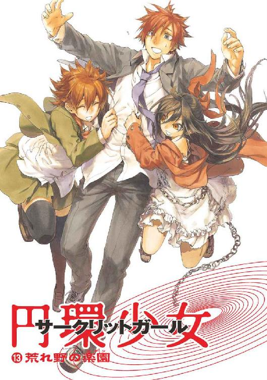
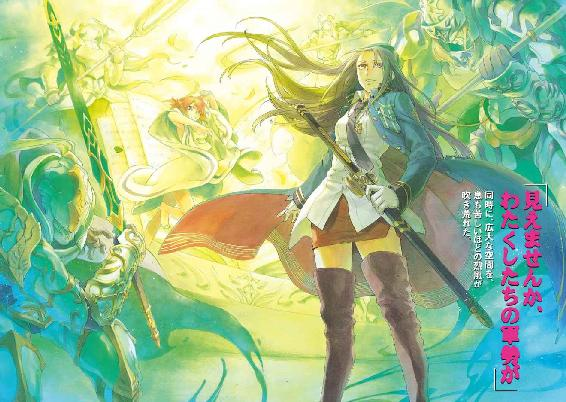
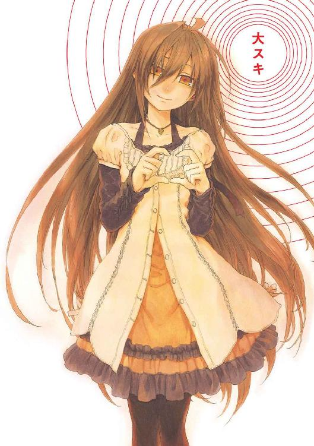
円環少女
⑬荒れ野の楽園
長谷敏司

角川スニーカー文庫
本作品の全部または一部を無断で複製、転載、配信、送信したり、ホームページ上に転載することを禁止します。また、本作品の内容を無断で改変、改ざん等を行うことも禁止します。
本作品購入時にご承諾いただいた規約により、有償・無償にかかわらず本作品を第三者に譲渡することはできません。
本作品を示すサムネイルなどのイメージ画像は、再ダウンロード時に予告なく変更される場合があります。
本作品は縦書きでレイアウトされています。
また、ご覧になるリーディングシステムにより、表示の差が認められることがあります。
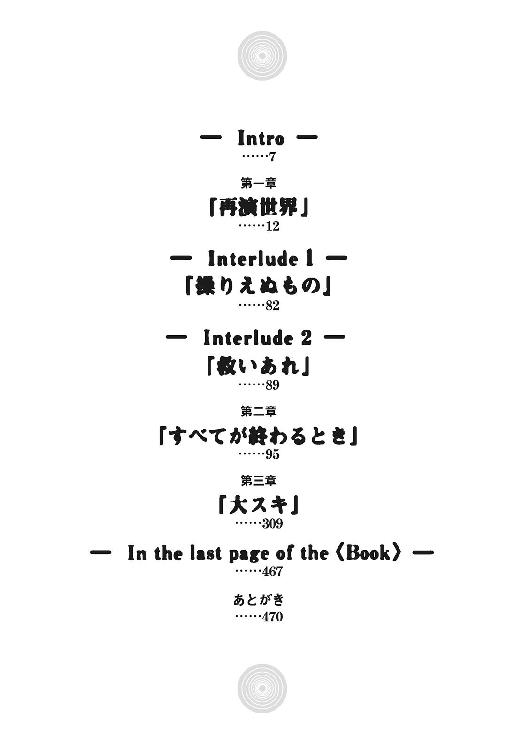
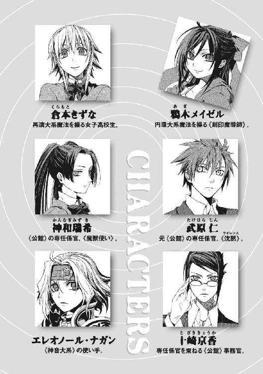
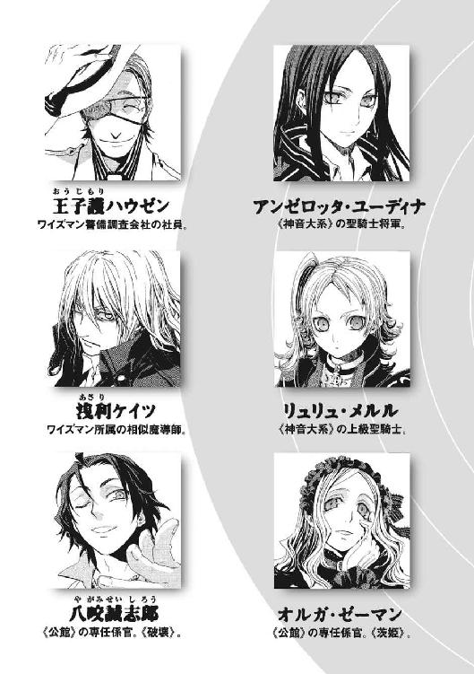
そこは救われた世界だった。
空は清浄で、居住棟の尖塔はその青へ向けて鋭く突き立っている。都市の景観は自然と調和して快適だ。
彼女は、魔法具で人々の姿を見る。満たされて、皆、表情は明るい。
ここは幸せな世界だ。大きな争いは根絶され、不正義もふくれあがることはない。そして、人類世界はかつてなく発展して豊かだ。
「祝福あれ」
《大審問官》は、一際高い塔から地上を見おろす。ここは、多くの魔法世界とつながる《中央門》の直上に築かれた、この星と世界の中枢だ。だが、彼女が美しい世界へ向ける視線は、愁いを含んでいる。
時間や空間が直接震動する、〝揺れ〟と呼ばれる現象が発生するようになったからだ。
「《神》よ、あなたは人間のよき半分です。人間が迷ったとき、あなたが導くから、選ばれる選択は正しい。あなたがあやまちを犯す人を引き留めるから、人間のおこないは、世界をよく動かすのです」
《開門の始祖》から受け継がれた夜闇の色の瞳を伏せ、《大審問官》は祈る。高さ二千メートルの塔の最上階は、広い窓から陽光の注ぐ半径二十メートルほどの広間だ。中央にはページを開いた巨大な本が置いてある。《神人遺物》である再演魔術の祭器だった。
《遺物》が〝揺れ〟の起点を発見して、該当する時代のページを自動で開く。今、この〝現在〟を揺らがせたのは、再演の《神》が降臨した《開門の始祖》の時代に分岐した歴史だ。
十万年前の《開門の始祖》の時期、人類は六十億人の人口を抱えていた。現在、《大審問官》たちの時代では、三百兆人の人間が豊かに暮らしている。《開門の始祖》の時代に再演世界が成立したことで、人類の生存圏は、地球から太陽系を超えた恒星間文明に至り、今や銀河中心にまで広がったのだ。
青い空を横切って、巨大な構造物が懸かっている。かつて惑星の重力圏を振り切るには、エレベーターで引っ張り上げるのが一番効率がよい時代があった。円環魔術の技術によって固定化された軌道リングは、地球の自転に追随して回転を続けている。今となっては遺跡であるそれは、〝あたらしい魔法世界〟の進歩の年輪だった。
《大審問官》は、《神》に守られた世界を脅かす、〝揺れ〟に悩まされていた。彼女たち再演魔導師は、〝過去〟を修正して、〝正しい歴史〟を守る役目だからだ。
今回の〝揺れ〟は、三分でおさまった。《遺物》の本のページの震えも止まった。
広間の隅に浮かんでいた白い扉から、老齢の男性が現れた。
「《大審問官》様、今回の〝揺れ〟は大きゅうございましたな」
広間には相似大系の転移技術を利用した《相似門》が設置されている。《相似門》を介したネットワークは、情報と物流を数千光年先まででも一瞬で運ぶ魔法文明の動脈だ。聖痕大系の時間制御、円環大系が発する無限のエネルギー、完全大系の強力な遮蔽技術など、魔法を有効利用することでこの文明は発展したのだ。
そして、人間を操る再演大系こそが、魔法使いたちを制御して社会のために力を振るわせる、文明の神経系であり内分泌系だ。
「社会の動揺を鎮めましょう。《舞い手》たちの数は、足りていますか」
再演大系は仕草を索引にして奇蹟を引き出す魔法だ。その再演魔導師たち、《舞い手》を大量投入した人海戦術で、彼女たちは〝過去〟に干渉して歴史を操作する。
老人は苦い顔で首を横に振った。
「再演秩序に対する、カオティックファクターの干渉が強くなっています。再演魔導師として生まれる子どもの比率は落ちていますので」
「再演世界が成立してこれほど長い時が流れても、法則の根までは変わらないのですね」
十万年前、《神》が降臨した直後、再演秩序を補強し安定させるため、極限未来に《増幅器》が設置された。そこは人間がひとりしかいない世界で、《神》の巫女として、ひとりの再演魔導師が永遠に魔法を投射し続けている。《過去を無限にやり直せる》救いのかたちである再演大系にとって、もっとも《神》に近い《神の座》とは、人という種が滅び去った極限未来のことだからだ。
遥か遠い〝彼岸〟から魔法で支えられて、この世界は再演世界として成立している。彼女たちは、その大業を成した〝過去〟からの願いを受け継いでいるのだ。
《大審問官》は、決然と目に力を込めて、使者に指示を出す。
「〝過去〟への圧力を強めてください。まずは再演大系の魔導師を増やす方向で干渉しましょう」
地球は、住民が願う〝救い〟のかたちに応じて、カオティックファクターと呼ばれた特殊な魔法を発生させる。再演大系はこのひとつだが、人間のみに干渉する、人間なしでは意味がない不自然な法則なため、自然秩序として弱い。だから、《神》が降臨しても再演魔導師が生まれる確率が低い。そして、〝過去〟干渉が歴史に新しい分岐を発生させ、その新しい歴史も同じ起源の〝過去〟へ干渉をはじめる無限連鎖が起こり、干渉の成果すら安定しない。彼女たちの〝過去〟は、計画より巨大に建ててしまった塔が、ずっと土台を傾けている状態なのだ。
だから、彼女たちは再演魔導師をどの歴史より多く集めて〝過去〟を押さえつける。
彼女たちは、安全で正しい世界を守るために、〝過去〟を修正し続ける。そして彼女たちが誤った場合は、さらに〝未来〟の子孫たちが干渉してただしてくれる。それは、諦めたときにすべてが崩壊する、無限に続く聖戦だ。
だから、《大審問官》は、窓の外の空を流れる雲をじっと見る。《神》が座す極限未来に近づかんと築かれた、《時のバベル》の頂上で私心を去って祈る。
「《神》よ、わたしたちは、決して間違っていません」
再演大系による〝未来〟からの干渉は、常時続いている。
《神》の降臨を直接目にした者はいない。だが、その影響を感じない魔法使いなどいない。
浅利ケイツも被害者のひとりだ。再演大系の世界が訪れてからというもの、彼の周辺は常にきなくさい。兄である英雄グレンを倒したことになっている彼に勝って名を上げようと、相似世界からの刺客や《協会》の魔法使いが現れるせいだ。
隠れてほとぼりが冷めるのを待とうとしても、すぐに居場所が割れる。おかげで、気が休まる暇もない。ホームレス時代以来の野宿生活だ。
ケイツは、薄暗い下水道の床に、石で周囲の見取り図を描いた。彼が使う相似大系の魔術は、〝似たもの〟の間に魔力を見出す。これは、床の見取り図と周囲の空間を〝相似〟にして、人間が入ってくるとわかる探知技術だ。
「ケイツさま、すごい魔法使いなのに、こういう小技が得意ですよね」
闇の中で明かりになる、スカートの短いメイド姿の少年が、彼を見上げていた。ケイツはこのリュカ・エラド・マナを、相似世界に一時帰郷していたとき拾った。リュカは、かつての最高位魔導師、《不死王》スセラミスの何百人もいる子どものひとりだ。そして、《不死王》の仇であるグレンを討ち破ったケイツへと、旧スセラミス派から、使い捨ての暗殺者として差し向けられてきたのだ。
「こんなものは、ただの気休めだ」
ケイツには、むしろこんなものを使わねばならないことが煩わしかった。彼が、兄から魔法の才能をもらう前、屑あつかいされていたころ培った技術だからだ。
「ケイツさまはすごいです。こんなふうに追い詰められたときこそ輝いています」
ゴキブリが足下を滑るように走っていった。十二月の今は寒さで昆虫の動きは悪いはずだが、炎を使う魔法使いが地下まで追ってきているのだ。
「メシを食うぞ」
ケイツは、二十年近く着たきりのコートのポケットから、ビスケットを一枚取る。左手の前に、黒い板状の魔法障壁を設置する。一枚ずつ通過させるたび二枚に複製する複製障壁だ。
あっという間に一枚から一抱えほどの分量に増えたビスケットを、リュカに手渡す。
「すごい、ケイツさま！ 神様みたいです」
両手で抱えてしまって手がふさがったリュカが、口でくわえて器用にビスケットを食べ始める。ケイツは、五枚ほど鷲づかみにしてポケットに突っ込む。飲み水は持ってこなかったが、さすがに下水の水は飲めない。
ケイツは、自分でもなぜこの少年を連れているのかわからない。彼の人生がこうなっていることが、〝未来〟から再演魔術で誘導された結果であるかも、判別などできない。ケイツが属するワイズマン警備調査会社では、彼が倉本きずなと強いかかわりを持っていたせいで、再演大系に抵抗力を持っているのだと言われた。そして、〝未来〟の魔導師たちは、再演魔術に抵抗できる魔法使いには、近くにいる人間を操ることで間接的な誘導を仕掛けるのだという。ケイツを操れなくてリュカを利用しているのかもしれなかった。
「ケイツさま、口がぼそぼそしてきました」
メイド服にビスケットのかすをたくさん落として、リュカは頰をいっぱいにしていた。
「私は〝そっち側〟には行かんぞ」
ケイツはぞわりと、身を震わせた。彼と幾度も相似弦で繫がった男、魔導師公館の武原仁を思い出したのだ。ケイツ自身と同じく、世間に押し潰されてすり切れた男だった仁は、小学生の女の子と出会ったことで社会的にどんどん転落していった。
三十五歳の彼にとって、人生はやり直しがきかないものだ。まだろくに始まってもいないのに、台無しになるのはご免だった。
「ワイズマンは、いったいいつまで私を放置しているつもりだ」
彼の雇い主であったワイズマン警備調査会社も、〝未来〟からの魔法干渉で完全に縛られていた。経営者が支配されて、ワイズマンの血液だった金銭の供給が止まったせいだ。今や、魔法を拒絶できる限られた例外を除いてあらゆる人間が操作の影響下に置かれる。これが《神》の降臨によって訪れた、再演大系の世界だ。
ビスケットをかじりながら、ケイツはじっと汚れまみれの床をにらむ。彼は、罪人としてこの世界に堕とされて、底辺を這うように生きてきた。その果てがここだとすれば、ぐるぐると回って彼に似合いの地の底に戻ってきたことになる。
腹を満たしたころ、床に描いた見取り図に変化があった。小石が集まって、小指の第一関節ほどの高さの人形を作り出したのだ。それは、見取り図の範囲内に人間が侵入したことを意味していた。
「立て。服に入れられない食い物は捨てろ」
ひとりで歩いてくる魔法使いなど、ろくなものではない。ケイツにとって、隠れることと逃げることと謝ることは、手になじんだ生存手段だ。遭遇しなければ敵にも攻撃されない。逃げきれれば危険な戦闘にかかわる必要もない。謝って済ませることは最後の切り札だ。
見取り図上の小石人形が、まっすぐにケイツたちのほうへ向かってきていた。再演大系に追われだしてからというもの、隠れることには必ず失敗している。〝未来〟からの監視に発見されない手段などないのだ。
「貸せ。それは人形に使う」
ケイツは、リュカの手元から余っていたビスケットをもぎ取ると、両手で砕きながら下水の汚水につけた。臭く濁った水で、焼き菓子の粉をこねて手早く人間のかたちにしてゆく。相似魔術は《似たもの》の間に関連を結び奇蹟のわざとする。人形と魔法使いの位置を入れ替える位置移動魔術などに利用できる、人間型のものは、ケイツたちには重宝する魔法具だ。
ケイツは複製障壁を呼び出し、泥だらけのビスケット人形を複製してゆく。
下水道が震えだした。近づいてくるだけで、構造物がもたなくなるような魔法使いがそばにいるのだ。
「走れ」
脂汗が顔中にびっしり浮き、首筋にまで垂れてきた。
熱風が押し寄せてきた。
「貴殿に恨みはないのだがな。再演大系とやらの連中は、この時代を支配するために、無理をしてでも手駒を作っておきたいらしい」
暗闇の向こうから歩いてきた魔法使いは、光の外套をまとっていた。白銀と黒の甲冑に身を包んだ堂々たる騎士が放つ光を照り返して、排水の流れる下水道すらギラギラ輝いていた。
ケイツは、明らかに自分より格上の魔導師を前に、足が震えていた。再演大系は、自分たちに邪魔な人間を排除するため、〝未来〟から特別強力な再演魔術を打ちこんで超高位魔導師を操っていた。
「《雷神》クレペンスと呼べ」
ケイツの前に立ちはだかった騎士が、そう告げた。
クレペンスの周囲にある可燃物が、すべて燃えていた。下水に浮かんだゴミすらも、一瞬で乾燥して炎上する。
「ケイツさま......。《雷神》クレペンスっていったら」
リュカですら名前を知っていた。《雷神》クレペンスは円環大系の超高位魔導師で、間違いなくこの《地獄》にいる魔法使いでは最強の一角だ。
ケイツの相似魔導師としての感覚が、《雷神》の体にからみついた魔法を感知した。〝未来〟から再演抵抗を突破するために大量の再演魔術が《雷神》に浴びせられているせいで、すべて同種の魔法である再演操作自体が〝相似である〟と反応しているのだ。
「ま、待て。おまえが操られている魔法を、私なら解除することができるのだぞ！」
ケイツは、今まで、こうして再演干渉から解放して、刺客に頭を下げて許してもらってきたのだ。
だが《雷神》は、彼の精一杯の提案に眉一つ動かさない。
「他の者にとっては魅力的な提案だったであろう。だが、〝未来〟からこの時代を書き換えた者たちは、この時代でおのれに不利益な存在を、皆殺しにするつもりのようだ。刺客役に選ばれた私は、常に魔法をかけ直されている。一時的に解き放たれても、すぐ鎖がかけ直されるだけだ」
〝未来〟からの魔法干渉の操り糸が、クレペンスの右腕にからんで剣を抜かせる。円環世界最強の騎士が、ケイツを試すようにその目に力を込めてきた。
「この何日か、つまらぬ魔法使いばかり踏み潰させられてきたが、貴殿がただのドブネズミではないことは、せめてもの救いだ」
再演魔術で操られた《雷神》の、光の外套が下水道を埋め尽くすようにふくれあがる。ケイツは熱気で呼吸ができなくなって、コートの袖で顔を覆った。
円環大系の魔法は、既知魔法世界のほとんどとは、出力の桁が違う。
「待て！ 私を殺せばワイズマンが──」
「おのれに生き残る価値があるというなら証明してみせるがいい。英雄の弟よ！」
そして、下水道を、プラズマの爆発が焼き払った。
†
東京は大混乱に陥っている。
真っ昼間だというのに、爆音が轟き地震のような揺れが世界を満たしていた。都心中枢の官庁街の一角、中央合同庁舎二号館の窓がきしんでいた。
武原仁は、警察庁に間借りした魔導師公館のオフィスで、今まさに崩壊しようとしている古い文明を見守っていた。
かつてこの世界は、異世界から訪れる魔法使いたちに奇蹟なき《地獄》と呼ばれていた。そして、仁たち住民は、感覚した魔法を破壊してしまうため《悪鬼》と蔑まれた。地球の科学文明は、魔法消去で魔法を追いやりながら発展していったのだ。
だから、再演大系の《神》が降臨して魔法が復活した今、かつての秩序は崩れる。この世界から魔法消去能力が失われつつあるため、異世界人を止められなくなっているのだ。
仁のまわりでも、魔導師公館の職員たちが、政府各所から問い合わせを受けていた。警察や自衛隊が治安維持に動員されているが効果はあがっていないのだ。政府にとって魔法使い関連の事案は初体験だらけだから、アドバイスだけでおおわらわだ。
「魔法消去が停止した自衛隊員は、魔法使いに単独で対抗できません。あと、消去の停止した隊員には、戦車などの兵器をまかせないでください。遠ざけてください、早急にです！」
乱雑に書類が散った各デスクに置かれた、十台ほどの電話が鳴り続けていた。関係者には《公館》と略される魔導師公館は、魔法使い問題を管掌した非公然機関だ。かつては魔法使い関係の治安維持と、《協会》と呼ばれる魔法使い集団との外交をまかされていた。
ずしんとビル自体が大きく揺れた。
「何だ？」
広いフロアの蛍光灯のうち、二本が落下して割れた。明確に命の危険を感じた。
かつては日中の東京で魔法がまともに発動するなど考えられないことだった。だが、もはや外の風景は神話のそれだ。
魔法消去におさえつけられていた異世界人たちが、昨晩から、東京の各所で暴動を起こしているのだ。今や魔法使いの暴徒は一万人を超えると推定されているが、規模のわりに不自然なほど死者は少ない。再演大系に誘導されたものであることは明らかだった。
蛍光灯や書類の落ちる音で、《公館》の事務職員たちが息を吞む。彼らは、三ヶ月前、公館本館が炎上した修羅場の記憶を忘れられないのだ。
仁は、魔導師公館ではたらいていたころの職場仲間に声をかける。
「ここはまだ魔法消去者がそれなりに残ってる。魔法攻撃からは安全だよ」
《公館》の戦力である専任係官だった仁に言われて、彼らがほっとしていた。
妹の舞花によると、再演大系はこの世界の人間を救う自然秩序だという。だから、意味のない殺戮はしない。よりよい世界のための生け贄にならない人間は狙われない。
活力の戻りだした事務所に、制服姿の警察幹部が現れた。警察庁の警備局副局長、清水健太郎だった。
「武原君。尋問の準備が整ったようだ。立ち会って欲しい」
元から白髪の多い彼は、数日家に帰れていないそうで疲れを隠せていない。警察人としてのキャリアが終わりに近い五十代なかばで、怒濤の変革に巻き込まれたのだ。
素直に礼が出た。
「俺たちを受け容れてもらって、ありがとうございます」
仁も、昨晩の米軍基地での戦闘の後、仮住まいのマンションに帰らなかった。安全を確保できる仲間との合流点が、この庁舎だけだったのだ。
魔法使い犯罪を取り扱う新体制づくりを《公館》としていた清水が、驚くほど気安い口調で返す。
「こんだけ誰を信用できるかわかんねぇんじゃ、なじみの人間関係は切れねぇよ」
警察幹部は官僚として生き残るため動いている。だが、それでも修羅場の経験を重ねた男同士の、奇妙な繫がりが感じられた。
仁にとって、おそらく最後になる決戦がはじまる。
魔導師公館は、この世界のルールを守らないたちの悪い来訪者──魔法使い犯罪者を裁判なしで処理する、後ろ暗い仕事をしていた。
だから、警察庁に間借りしている今も、独自の取調室や拘留施設を持っている。おもに尋問の相手が魔法使いであるため、《公館》の取調室は構造が特徴的だ。取調室内に死角なくカメラが配置され、魔法で逃げそうな相手はカメラ越しの魔法消去者で縛り付ける。逆に消去から守らねばならない参考人の場合は、取調室と、その隣に設置されたマジックミラー越しに取調室を観測できる監視室のスタッフだけで、調書取りや録画をすべて行える。
「《彼女》なら、もう取調室に入ってるよー」
入り口脇の壁に、銅色に染めた髪にスティックコームを挿してアップにした美女がもたれていた。専任係官のまとめ役、実質的な戦闘指揮者である十崎京香だ。
「監視室には、メイゼルちゃんが仁ちゃんのこと待ってる。尋問は、もう、きずなちゃんとエレオノールにまかせちゃったー」
眼鏡を外して、京香がスーツの胸ポケットにしまう。大きくため息をつくと、しっかり化粧をした顔から緊張感が抜けた。彼女も、抜ける場所で力を抜いておかないとどこかで緊張が切れると、経験でわかっているのだ。
「京香姉ちゃんも、お疲れ様だな」
「お仕事だもの、しかたないってことよ。あ、私、今回は中にも入れないから、後から報告おねがい」
事務官である京香は、仁にとっては一歳年上の幼なじみでもある。そして、かけがえのないものが集まるきっかけとなった食卓を準備してくれたのも彼女だ。
京香の視線がわずかに彼からそれた。彼女は《神》が降臨してから、押し寄せる新世界というどうしようもない敵から、古い秩序を守って戦い続けた。元より役職に不相応の重荷だったが、すでにひとりで背負える仕事ではなくなっている。
仁は、今まで助けてきてくれた京香を勇気づけたかった。
「再演大系も、絶対に無理はきているはずだ。限界が近づけばほつれもできるし、それを突いた打開策だって見つかるよ」
コンクリートの壁に体重を預けていた京香が、気合いを入れ直すように腕を上げて大きく伸びをした。一瞬の無防備な仕草に、憧れた近所のお姉ちゃんだったころの彼女が戻ってきたようだった。スーツの優美な曲線を描く胸元に視線が吸い込まれて、彼は慌てて目をそらす。幼なじみが悪戯っぽく表情を作った。
「武原さんー、元上司をそういう目で見るのはやめてくれませんか」
締まらない会話が、妙な温度になってしまう。
仁の前にある金属のドアの先は、尋問室を監視するための部屋だ。京香は、尋問の相手が、魔法消去を受けると消滅してしまう《魔法で構成された人間》だから、この重要な話に参加できない。
人類の命運を左右するかもしれない大事な話だから、顔が赤くなっていないか確かめた。
ドアを押し開けると、そこはコンクリート打ちっ放しの殺風景な監視室だ。左側の壁にマジックミラーが嵌っていて、そこから隣の取調室の様子が覗けるようになっている。あとは簡素な椅子が三脚と、ビデオ録画のチェック用機材とノートを置いた机だけだ。
四畳半ほどの広さしかない監視室に、小学生の女の子が待っていた。
「せんせは、どうして、やりとげたみたいな顔で入ってきたの？」
長い黒髪に結んだリボンを揺らして、少女が首をかしげる。鴉木メイゼルはいろいろあって仁と同居している魔法使いだ。あめ色の瞳をした、意志の強そうな彼女は、それでも妖精じみて愛らしい。
仁は、隣の取調室に聞こえないよう声を殺してたずねた。
「腹のケガは、もうだいじょうぶなのか？」
昨晩、少女は、毛織りのワンピースの下の滑らかな腹に魔法で大穴を開けられた。神聖騎士団という魔法使い集団に攻撃を受け、魔弾で撃ち抜かれたのだ。メイゼルが元気に話をしてくれること自体、仁にとっては奇蹟のようだ。六年生のクラスでも背の低い彼女が、秘密の誘いのように、お腹にちいさな手を置いた。
「魔導師公館が、《協会》の魔法医を、ものすごい報酬で引き抜いたんだって。あっという間に治してくれたわ。せんせこそ、左腕の骨、折れてたでしょ」
仁は、心配ないと示すように、左肩をぐるりと回した。魔法使いの医者は、現代医学が追いつけないほど高度な医療行為が可能だ。仁の骨折など一時間で治してしまった。
「せんせ、とうとうここまで来たのね」
ちいさな魔女が、仁のそばに寄り添って囁く。こんな修羅場の土壇場でも、身を念入りに清めた少女からは、石鹼のよい匂いがした。
「そういえば、妙な話だな。ここに、《バベル事件》の一番中心にいた人間が、あらかた集まってる」
「そういえばそうね。でも、そう思うと、いろんなことが〝変わった〟カンジね」
ちいさな魔女が、自然に仁の手を取った。あたたかさと、呼吸が彼女のそれと同調するような、奇妙な安心に包まれる。
尋問は、昨晩の戦闘で捕獲した魔法使いに行う。監視室と壁一枚隔てた取調室には、騎士甲冑に身を包んだ、半透明の女性がいた。《聖霊騎士》と呼ばれる、魔法生物化した人間だ。《神》の降臨を企てた神音大系の魔法騎士団、神聖騎士団にとって《聖霊騎士》の軍団は、破壊されても再召還されれば復活する不死身の切り札だ。
覗き窓から見える薄暗い取調室に立つ《騎士》は、個体名を《極星を追う者》という。世界中を縛ろうとしている再演魔術を、完全に無効化した、あまりに謎の多い《聖霊騎士》だ。
超常の騎士のほうから、尋問役へと語り掛けた。
〈わたしに聞きたいことがあるのですね。よいでしょう。荒れ野の巡礼者よ〉
《彼女》の前に立つのは、褪せた金髪を肩のあたりで切りそろえた十代後半の清楚な少女だ。かつて敵として出会い、数奇な運命を経て共闘した神音魔導師エレオノール・ナガンだ。
青い瞳を伏せるように、少女騎士が《彼女》に一礼した。神聖騎士団で若手最強と賞された大器には、立ち居振る舞いにも品があった。
「協力、感謝いたします」
《極星を追う者》が、やさしげな微笑みを返す。狭い室内で向かい合う《彼女》とエレオノールは、どこか雰囲気が似ていた。
〈若き騎士よ。《聖霊騎士》とは、召還され直すたび以前の召還の記憶を失う異邦人です。それでも、この状況は、ただならぬ巡り合わせのようですね〉
奇妙な巡り合わせだった。仁たちは昨夜の戦いで《彼女》を破壊した。そして、《公館》が確保していた神音楽器で再召還したところ、《彼女》の態度が協力的になっていたのだ。エレオノールも、かつての敵を信じ切れない様子だった。
「あなたが何者か教えてください。あらゆる魔法使いを操るはずの再演魔術があなたにだけ効果がないのはなぜなのですか？」
時代遅れの騎士装束の《彼女》は、この特性で仁たちを幾度も追い詰めたのだ。
「私たちが知る歴史では、あなたは、完全な失敗に終わった三千年前の《本物のバベル》で死んだはず。儀式の最後に命を奪われる《聖霊騎士》には、人間が二度死ねない以上なれたはずがありません。何より、《聖霊騎士》はその時代の英雄や大魔導師を叙勲するというのに、私は、あなたを《バベル》の殉教者としてしか知らないのです」
エレオノールに問い詰められて、《彼女》が両手を組んでまぶたを閉じた。内省的なその仕草が、鎧で体の線がわからない《彼女》がまだ二十代前半だと、仁に気づかせた。
「──《極星を追う者》よ、あなたは何者なのです？」
つややかな波打つ髪と、清潔感のある表情をした《彼女》が、エレオノールとよく似た澄んだ声質で歌う。
〈わたしが生きた歴史では、あなたのいう《本物のバベル》が成功しています。わたしは、この時代より三千年〝過去〟の人間ですが、それは、この時間上の〝過去〟ではありません〉
「どういう意味ですか？」
求められるまま、あっさりと秘密は明かされた。
〈この歴史で召還されたわたしに、再演魔術が効かないのは、わたしがこの歴史の人間ではないからです。再演の魔女たちが〝過去〟へ魔法を投射している以上、この歴史の〝現在〟とは繫がっていない三千年前から続く歴史を、どう捕獲できるでしょう〉
取調室と監視室の時間が止まった心地がした。他の人間の気持ちを、生真面目なエレオノールが、かすれ声で代弁してくれた。
「......ありえません。そのようなことは騎士団でも聞いたことがありません。違う歴史をたどった《聖霊騎士》など、私は一度も見たことがない」
魔法世界とこの地球をひっくるめて現在仁たちがいる歴史とは、違う時間の流れが存在すると、《彼女》は言っている。倉本きずなは、かつて再演魔術で歴史を変えることは、そうだったかもしれない別の未来を捨てることだと言った。だが、現に再演魔導師たちは、自らのいる未来の生き残りをかけているかのように〝過去〟に干渉して歴史に分岐を作り続けている。つまり、《分岐してこの世界とはかけ離れた歴史》が、壊れたように見えてどこかで生き延びている可能性もあり得たのだ。
〈呆けているのですか？ 荒れ野の巡礼者よ。魔法の基礎ではありませんか。神音大系は、世界から《根源有》──この世界で言うイデア──《索引》を、音を使って引きだす魔法です。だから、ちいさな火がほしければ《ちいさな火の索引》の神音を奏でるでしょう。《火の索引》という自然法則があるから、炎が存在できるという順序で、世界は成り立つ。それは、世界がはじまったときから《索引》が存在するから〝もの〟は存在できるということ。索引型の原理では、自然秩序とはそういうもののはずです〉
信念のもとに神聖騎士団を出奔したエレオノールが、顔を蒼白にしていた。
「ですが、《聖霊騎士》とは、術者が〝自分自身という神音〟を呼び出す《化身》の魔法を、誰からでも呼び出せるようにしたもの──」
神音大系には、《自分自身という索引》を魔法的に呼び出す《ゆらぎの化身》という魔法が存在する。本来は術者本人のみが召還できる《ゆらぎの化身》を、誰でも呼び出せる状態にするのが《聖霊騎士》だ。そう信じられていた。
〈本物なしに鏡像である《ゆらぎの化身》だけを作ること自体、矛盾があるでしょう。そのために本物の断片が必要だから、《聖霊騎士》叙勲の儀式で、騎士本人は命を奪われるのです。《聖霊騎士》とは、《その人間というたったひとりを呼ぶ索引》を簡略化したもの。《ちいさな火の索引》と同じで、世界がはじまったときから神音はあったのです。だから、その〝たったひとり〟は世界に存在できる。再演魔術で歴史が改変されて、時間の流れに枝分かれができても、索引は同じなのですよ〉
《極星を追う者》は、鈴を転がすような澄んだ声で、なおも歌う。
〈荒れ野の巡礼者よ。あなたは、わたしに、『何者か』と問いましたね？ そろそろ、わかっていただけたのではありませんか〉
エレオノールが絶句していた。
〈わたしは、神聖騎士団が、再演大系と縁を切った歴史を生きた神音魔導師です〉
だから、《彼女》は、仁たちの歴史では三千年前の《本物のバベル》で死んだ。にもかかわらず、《聖霊騎士》として現れることができた。異なる時間の流れ──異なる歴史からの来訪者だからだ。
そして、だからこそ自分たちの歴史上の〝過去〟へ投射する再演魔術が、すり抜ける。倉本きずなや〝未来の再演魔導師〟たちが持ったバージョンの《世界という本》に、最初から《彼女》は属していないせいだ。
〈歴史改変によって生じたあらゆる時間の流れで、《聖霊騎士》は共通なのです。《聖霊騎士》の索引は、神音大系の自然秩序なのですよ。再演大系が時間の流れを枝分かれさせたからといって、神音大系の自然秩序がころころ変動したら、逆におかしいではありませんか〉
「それでいいんですよ、エレオノールさん」
取調室にいたもうひとりの人間が、口をはさんだ。室内の隅の、調書をとるための机の前に、高校の学生服を着た少女が座っていた。
ふたりの神音魔導師の話を、ずっとうつむいて聞いていた彼女が、意を決したように顔を上げた。
倉本きずなだ。深夜の空の濃紺色をした瞳の彼女がまさにその再演魔導師だ。やさしい垂れ気味の目を伏せ、手持ちぶさたな指で、栗色の髪の毛先を弄んでいる。
「この人の言ってること、本当です。わたしの《本》には、この世界がたどってきた歴史の中の人間が、みんな《文字》として出てくるはずなんです。でも、この人の《文字》、ありませんでした。《世界という本》を管理したって、《違う本》の登場人物が相手じゃ、どうしようもなかったんです」
きずなが、困ったように口元だけを微笑ませた。この争いに巻き込まれるまでは普通の女の子として過ごした彼女が、苦い表情で首をかしげる。右手を握った拳を、心臓を押すように豊かな乳房の間に強く押し当てる。
「あなたは──」
彼女が《極星を追う者》へと向き直ったとき、肩のあたりで毛先が弾んだ。
「──倉本慈雄という人を知っていますか？」
倉本慈雄とは、きずなの義理の父で、仁が殺した魔法犯罪者だ。
仁の心中には苦いものが押し寄せる。監視室と覗き窓の向こうの取調室に、《神の降臨》への布石となった《バベル再演》の関係者がそろっていた。ドアの外にいる十崎京香の指揮で、武原仁は、刻印魔導師として堕とされてきた幼いメイゼルとともに、魔法遺産《幻影城》に突入した。彼は、出会ったばかりだった倉本きずなを助けようとしていて、エレオノール・ナガンは敵だった。そして、事件の黒幕だった倉本慈雄の目的は、きずなを利用して、この《極星を追う者》が《本物のバベル》で死んだ歴史を覆すことだったのだ。
「あなたは、倉本慈雄という人と会ったことがありますか？ あなたのいた《歴史という本》では、《本物のバベル》に、そんな人が、あなたを助けに来ませんでしたか」
だから、きずなの問いには、十七歳の少女には重すぎる呪いがこもっていた。きずなは、義父の魔法が見せた《彼女》の似姿を、母親だとずっと思っていたのだ。
〈そのクラモトという人に会ったことはありません〉
「マルク・フェルゼーという人物は？」
異なる歴史から召還された《聖霊騎士》に、今度はエレオノールが尋ねた。
恥じらうように、《極星を追う者》が口ごもった。
〈......その人は、わたしを救ってくれた恩人です〉
そして《彼女》が、無邪気に口元をほころばせた。
きずなの顔が、耐え難い苦悶に歪んだ。マルク・フェルゼーは倉本慈雄の本名だ。三千年前に生きた《極星を追う者》が、きずなの義父を知っている理由など、ひとつしかない。倉本慈雄がきずなを生け贄に《バベル再演》を成功させて願いを果たした歴史が、《彼女》が聖霊騎士になった〝過去〟なのだ。
〈あなたは、泣いているのですか〉
目の前の《彼女》の笑顔が、義父の望み通りの歴史がどうなったかを残酷なまでに露わにしていた。だから、《母だと勘違いしていた人》を前に、きずなは奥歯を嚙んで必死で耐えていた。
「泣いていません」
エレオノールが気遣うように、きずなの震える背中に手を置いた。
きっと大声で泣きたいだろう彼女が、しっかり二本の足で立っていた。
きずなは、かつて〝普通〟だと信じていた足場の正体を知って、一瞬、打ち鍛えられた鋼の視線を見せた。
「わたしは、ずっと逃げてきたんです。逃げたら、帰る場所がどこかにあるって思ってた。でも、そんなものなかったんですね」
倉本慈雄にとってのしあわせな《歴史の本》に、きずなの居場所はなかった。それどころか、きずなにとっては家族の象徴である倉本という名すら捨てられていたのだ。
きずなは、母親の思い出だった《聖霊騎士》に恨み言を言わなかった。胸の底に吹き荒れているだろう嵐を、黙って押さえ込んでいた。やり場のない苦しみを、受け止めて耐える強さを、彼女は手に入れていた。
仁は、監視室側の壁に備え付けられているマイクに話しかけた。取調室のスピーカーからことばが大きく響いた。
〈きずなちゃん、いいか？〉
元々、仁とメイゼルが監視室に待機したのは、《極星を追う者》を信用しなかったからだ。裏切られた場合でも、仁ならここから魔法消去能力で《聖霊騎士》を簡単に破壊できる。彼は、現在確認されている唯一の、消去能力を自分で停止できる《悪鬼》だからだ。そのせいか、《神》が降臨し世界法則が再演秩序に近づいても、彼だけが逆に魔法消去を強めた。
三千年前の人間である《彼女》が、スピーカーへと用心深い視線を向ける。
〈この部屋の鏡は、やはりこちらが透けて見えるようになっているのですね。この建物や機材といい、《約束の地》の者も高い技術に到達したものです〉
大昔の人間である《彼女》の目に、今の世界はどう映っているのだろうと思った。神聖騎士団と対立までする価値をどこに見いだしたのかが不思議だった。
「俺たちは、これまで《おまえ》とは何度もぶつかってきた。協力してくれるのが、ちがう歴史から召還されてきたからなら、どうしてずっと敵だったんだ」
マイク越しの問いへの《彼女》の答えは、神聖騎士団の常識でも仁には初耳のものだ。
〈《聖霊騎士》というものは召還されなければ死人も同然ですから、内心をさらけ出しはしないものですよ。以前の《わたし》も、この歴史の神聖騎士団に従うことで機会を待ったのでしょう。よほどのことがない限り、あなたたちを極力死なせないようにしたはずですが〉
《極星を追う者》は、かつてエレオノールのアパートを吹き飛ばしたが、その攻撃では誰も死んでいない。再演の神が《降臨》した《幻影城》でも、《彼女》は脅威のひとりだった。だが、専任係官、神和瑞希の胴体を吹っ飛ばしたが、きずなを直接傷つけてはいない。
裏側を説明されると、《彼女》の行為の意味がちがって見えた。
〈《わたし》の生きた歴史では、神聖騎士団は、《バベル》をきっかけに、啓示者たちと距離を置くようになりました。それを《わたし》は、この時間の流れの神聖騎士団に勘づかれて、監視を受けていたのでしょう〉
機械化聖騎士師団の師団長、《至高の人》アンゼロッタは、《彼女》を常に手元に置いた。本来なら、最大の敵である倉本きずなの再演魔術が効かない《彼女》こそ、刺客にうってつけだったのにだ。きずなに真実を知る機会を与えないため、アンゼロッタが不都合な歴史を知る《聖霊騎士》を厳しい監視下に置くことは、あり得るように思えた。
《神》降臨の引き金を引く役を果たしたきずなが、目も虚ろになっていた。彼女の嫌悪感が、仁にも理解できた。それでも、まず確かめねばならないことがあった。
「神聖騎士団に協力している再演魔導師は、再演秩序を安定させる増幅器を自分が置きに行くと言っていた。どうすれば止められる？」
その再演魔導師とは、仁の妹、武原舞花だ。
〈《増幅器》ですね。《神の門》の対として、再演秩序を安定させるために〝もう誰もいない未来〟に設置する魔法装置のことです。わたしの時代でも、《降臨》計画の最終段階は〝それ〟でした〉
《彼女》が知っているなら、三千年前には計画されていて、充分に検証も重ねられているということだ。勝手に失敗してくれることは期待できない。
「〝それ〟を設置するための条件は？ 〝未来〟への時間移動なんて、聞いたことがない。そこまで大仕掛けな大魔術なら、何か条件が必要なはずだ」
〈増幅器の設置は、生きた再演魔導師をひとり、生け贄に捧げる大魔術です。世界唯一の魔法使い──唯一魔導師が使うことを想定されたものです。ですから、ふたりいる今では、もうひとりの再演魔導師である倉本きずなに拒絶されると成立しません。それを見越して、〝未来〟の魔導師たちは、彼女が理性では止めようがないほど再演大系との関係を切りたい人物になるよう、すでに干渉したことかと〉
鈍いごつりという音が響いた。きずなが、握った拳で自分の太ももを殴ったのだ。膝が震えて止まらない様子だった。《極星を追う者》は、きずなが再演魔術を心から憎んでいることを、〝未来〟からの計画通りだと言ったのだ。彼女はことばもなく、ついにうつむいた。
自分のことばが掘り返す闇に思い至ったのだろう、《彼女》がわびの気持ちを表すよう頭を下げた。
〈申し訳ありません。ことばを選ぶべきでした〉
「......いいんですよ。......今さら言ったって、そこは済んだことじゃないですか。悪いのはあの人たちなんですから、わたしたちは、舞花さんを見つけて、止めればいいんです」
彼女に押しつけられた役割に希望はない。運命を操るかのような〝未来〟の再演魔導師たちによって彼女は歯車として配置された。人間としてのスタートラインすら設定されたもので、今や背負いきれない責任だけが背中にのしかかっている。
エレオノールが、同じ部屋にいない仁のかわりに、きずなを抱き留めてやっていた。
「〝最後の魔導師〟よ、あなたの神が《人を救う神》なら、かような傲慢を許すはずがありません。再演の神もまた、あなたを救ってくださいます。そうでなくて何の神ですか」
底なしの悪意か、絶望の底の希望か、すべてが残酷なまでに繫がっていた。
《神》の降臨と新世界の到来に、仁たちはなすすべもなく押し流されようとしている。だが、人間が試されるときとは、こういうものだと仁は思う。
〝普通〟という足場は灰になった。だから、すべてはこの荒れ野からはじまるのだ。
†
寒川紀子は、こんなときだというのに小学校へ登校した。
魔法使いがデモ行進をしているというニュースは見ていた。けれど、そんなものは遠くのことに思えた。自分まで何かを変えるのが嫌だったのだ。
それに、友だちの鴉木メイゼルがちゃんと学校に来ているか心配でもあった。御陵甲小学校は、休校にはなっていなかった。けれど、登校している生徒は半分もいなかった。やはり魔法使いがおそろしいのだ。
そして、午前中で授業は終わってしまって、今は電車に乗って帰宅している最中だ。彼女は、空いている電車の座席に腰掛けて、図書館で借りた本に視線を落とした。窓の外の澄んだ冬空に天馬が走っていて、風景が現実のものではないようで落ち着かなかったのだ。
十二月になってから、景色はおかしなものになってゆく一方だ。来年はどんな年になってしまうのか見当もつかない。私立中学校の受験がどうなるかもわからないし、お母さんに赤ちゃんができて自分がお姉ちゃんになってしまうこともそうだ。
スカートのポケットに入れていた携帯電話が震えた。クラスメイトの天瑞岬からメールが来ていた。
〈今、すごいの見えた。でも、写真に写らなかった。委員長もやってみて〉
ちょうど駅にきて、電車が止まった。携帯電話のカメラで、紀子はちいさく見える天馬を撮影してみた。
おとぎ話から抜け出たような真っ白い天馬がちゃんと画像として保存されていた。
「ぜんぜん写るよ」
おとぎ話のような光景に、紀子は気が滅入ってきた。彼女の知っている世界が、もうどこにもなくなったようだったからだ。
この車両にも、冬だというのに半裸の、いかにも魔法使いらしい男性が三人いた。こんなときでもクリスマスセットがはじまった、ファーストフード店のチキンを食べている。マナー違反だけれど気味が悪くて注意する人間はいない。彼女は、格好を付けているわけではないが、こういうルール破りが好きではなかった。
「あの......」
紀子は声をかけた。
「電車の中では、そういうの食べないでください」
半裸の肌に精緻な刺青をいれた男たちが、いっせいに彼女のほうを向いた。
身の危険を感じたそのとき、次の駅についた電車がドアを開いた。紀子へ迫ってこようとしていた男たちが、押しかけてきた十人以上の魔法使い集団に押されて床に倒れた。
「なんだこのウィッ......」
だが、男たちも紀子も啞然とするよりなかった。ローブをまとった魔法使いたちは、まるで引っ越し荷物を電車で運ぼうとしているかのように、花瓶や食器といった什器や、用途のわからないカエルの浮き輪や、十個近いクーラーボックス、果てはリヤカーにのせた家具に至る、膨大な荷物を持ち込んできたからだ。
そして、最後に乗り込んできたのは、白いバニースーツ姿の魔女だった。クリスマスシーズンだからか、赤いサンタふう上着を引っかけている。
「以前に訪れたときは、水着で歩いていただけで逮捕されたものですが、よい時代になったものです」
栗色の長い髪を胸元まで垂らし、青の瞳をした彼女は、スタイルも完璧な理想のバニーガールだった。真っ昼間の電車に、この格好で乗り込んできたのでなければだ。
魔法使いたちと関わった経験で、変態の気配に敏感になった紀子の感覚が、全力で危険信号を鳴らしていた。
「こっち見ないでください。関わり合いになりたくないんです」
白いバニースーツを着た魔法使いが、ピンヒールに網タイツ穿きの完全武装の下半身を誇示するように歩いてきた。そして、中腰になって紀子と視線を合わせて言った。
「怖がることはありません。わたしは巫女です」
紀子は目をそらした。白昼のバニー巫女が、両手で彼女の顔をはさんで強引に自分のほうを向かせた。
「あなたは、なぜこのような姿をしているのか疑っていますね」
「近いです。ウサギ耳が、眼鏡に当たって痛いです」
なぜか化粧まで完璧に整えた彼女が、紀子の銀縁眼鏡の位置を、そっと直してくれた。
「うちの宗派は、巫女装束はだいたい白ければいいのです」
「何ですかそのムダな目力は。説得されませんよ、そんなアホ理屈、押し切れないですから！」
周囲に助けてくれそうな人を探した紀子と目が合ったのは、とっくにホームに逃げ降りてしまった半裸の男たちだ。
「お嬢ちゃん、運が悪かったな。そいつら天盟大系の、戦闘旅団だ」
無常にもドアは閉まり、そして電車が動き出す。
紀子と天盟大系の神官旅団以外の人間は、もう車両に残っていなかった。全員逃げたのだ。
「えっ？」
「わたしは、天盟大系の巫女、マチルダ・クリストリッツァ。この世界に、愛を探しに来ました」
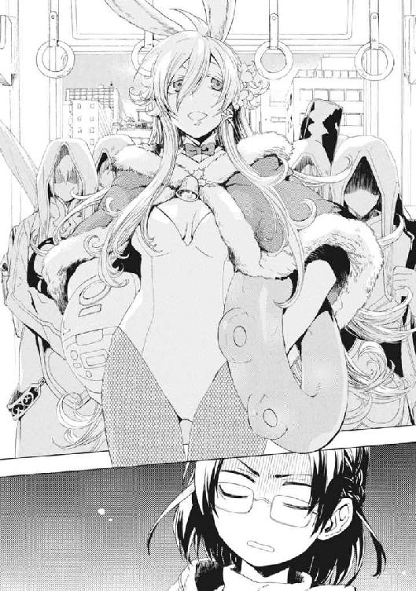
「愛？」
バニーガールな痴女が、紀子の手を両手でつかまえた。そのぬくもりで、噓のない気持ちを全力でぶつけてきていることが伝わってくる。電車の中はすでに、引っ越し荷物を持ち込んだ魔法使い団と偽バニーと彼女だけの、動く密室だ。
紀子は目をぎゅっとつぶって、これが悪い夢であるよう祈った。
「変態はサドと全裸だけでいっぱいいっぱいです、変態はサドと全裸だけでいっぱいいっぱいです、変態はサドと全裸だけでいっぱいいっぱいです」
くわっと目を見開く。
マチルダが、心配そうな表情で、むっちりした胸の谷間からおしぼりを引き抜いた。
「汗をかいていますよ。かわいそうに、錯乱しているのですね」
「いやあああああああ！」
紀子は、いつの間にか隣に座っていた痴女に汗をふかれて、周囲は十人を超える白い神官服の魔法使いたちに取り囲まれていた。
代表者らしい、白髪で長い白髭を垂らした威厳のある老人が、彼女の前に歩み出た。
「異世界の幼子よ。事情がわからねば混乱するであろう」
紀子は、この男性のほうがサンタクロースの扮装ならと、現実逃避に想像した。これはサンタの一団で、引っ越し荷物はプレゼントの山で、自分はいい子にしていたからサンタに会えたのだとメルヘンな想像をした。無理だった。
「我々は、魔法世界のひとつ、天盟大系世界から来た神官旅団。その巫女が言ったとおり、愛を探している最中だ」
恐怖で全身から汗がにじむ。逃げ場などない。次の駅についても、家具や様々な道具類やリヤカーまで持ち込まれたこの車両に乗り込む人間はいないからだ。
「我々は、戦争に巻き込まれている故郷を救わねばならぬのだ。だが、争いを止めるには、この世界にいる、《愛を制御する魔法構造体》を連れ帰る必要がある。かような使命を帯びた我ら大神殿の学徒にまで、《協会》は卑劣にも戦列に加わるように求めたのだ」
「わかんないですから！ 説明されても《協会》とか全然ですから！」
バニースーツの痴女が、紀子が膝にのせていたランドセルを奪って、勝手に中身を漁りはじめていた。
彼女の知っていた〝普通〟は、すでに灰になって燃え落ちていた。
「なにしてるんですか！ 魔法使いだから何してもいいって思ってるんですか」
頭のおかしいルールに押し込まれて、泣き寝入りし続けるなんて嫌だった。諦めない人だった友だちのメイゼルに影響されているのかもしれなかった。やけくそでランドセルを取り戻そうとした彼女の手が、マチルダのバニースーツの胸にかかる。
つかみ合いになった彼女たちに、遠慮がちに神官旅団のリーダーの老人が声をかけてきた。
「《悪鬼》ならざる幼子に重荷を背負わせるのは心苦しいが、助力を願いたい。近くに『い』で始まって『わ』で終わる土地はないか？ その地が、我々に強大な力を授けるのだ」
紀子は、怯えて、怒りで目の前が真っ白になって、もうわけがわからなかった。
「い......市川？」
窓の外で、馬のいななく声がした。走る車両が物珍しいのか、天馬が併走していた。妖精が、群踊りながら螺旋を描くように青空へのぼってゆく。まるで世界が市川を祝福しているようだった。
神官団がざわめき、大神官が重々しく首肯した。
「四文字の地か、うってつけだ」
マチルダが、はちきれそうな乳房の谷間におしぼりを押し込むと、今さらすまし顔を作った。
「承認します。あなたが、我らを『市川』に導くことを」
「導かなくても、このまま総武線に乗っていれば......」
敷かれたレールに乗って、電車は運ばれてゆく。彼女が本来行く必要がなかった遠くへと。運命が否応なく人を運ぶように。
†
《極星を追う者》の取り調べを終え、報告と整理のために《公館》事務所に戻ってきたとき、メイゼルがワンピースのポケットから携帯電話を取り出した。メイゼルの携帯にメールが送られてきたのだ。
「学校のやつからか？」
仁が尋ねると、メイゼルが心配そうに眉をくもらせた。
「委員長からだわ」
小学校のクラス委員長である寒川紀子は、メイゼルの学校での一番の友だちだ。
「せんせは心配しないで。ちょっと、あたし、連絡してくるわ」
ちいさな魔女が、彼から携帯の画面を隠すように離れていった。
そして、取調室から出てきた倉本きずなと顔が合った。警察上層部と情報を共有するための調書をまとめる必要があって、きずなは十崎京香に話の内容を伝えていたのだ。仁も同じ聞き取りを終えていた。
「きずなちゃんは、だいじょうぶか」
家族に関わる話だけに、仁も言葉を濁した。きずなが、笑顔を作りきれない硬い表情で振り返る。
「もう、決めましたから。わたしがダメだったところ、ちゃんと前に進めて行かないと、やるたびに失敗の繰り返しですから」
覚悟を決めたきずながまばゆくて、眼を細める。
「参ったな。俺も、置いていかれないように前に進まなきゃな」
仁は、かつて大事なことを言えずに彼女の信頼を失った。
彼女が、ためらって、そして火傷の痕がついた右手を仁へと差し出した。
「武原さんも、いっしょにがんばりましょう」
きずなはこの戦いを、六十年ぶりの再演魔導師の復活に端を発する、自分の戦いだと自覚している。
だから仁も、あたたかい手と握手して、複雑な想いがした。こんなふうに、きずなの握力を力強く感じることになるなんて思いもしなかった。彼女はもう巻き込まれて守られるだけの被害者ではない。
「勝とう。まあ、勝てるさ」
空元気でも前を向くしかなかった。《極星を追う者》の情報は、状況の見通しを一気によくしてくれたが、苦境の打開はしてくれなかったのだ。
「そうですよね。だいじょうぶですよね」
仁は、自信を持ちきれないきずなを盛り上げようと、「絶対だ」と請け合う。
きっとこれからも、きずなには試練が降りかかる。なのに、俺が守ると軽々しく言えなかった。彼は、おとならしい仕事をきずなの前でしようとして失敗し、最後には彼女に銃を握らせた張本人なのだ。
いっぱいいっぱいの彼女を、鼻で笑った人間がいた。
「あなたは、自分の役目を果たせばいいんですよ。何が不満なんですか。これまで見捨てるしかなかったものを救えるんですよ」
警官たちに取調室へ連行されてきた聖騎士リュリュ・メルルだ。白金色の猫っ毛を振り乱した少女騎士が、きずなをにらみつける。
リュリュは手錠と腰縄さえなければ暴れだしそうだ。昨晩、捕虜になった彼女は、オルゴールのような神音楽器を抱えて、奪われるくらいなら打ち壊すと脅して離そうとしない。これから三度目の取り調べだが、きずなより一歳年下の少女騎士から情報が出る望みは薄い。
「嫌われちゃってますね。でも、わたしはリュリュさんのこと、嫌いじゃないですよ」
きずな本人からすれば意識するほどの因縁はないのだ。だが、運命を狂わされた被害者は、再演魔導師への恨みを決して忘れない。
取調室へとリュリュが押しこまれた。魔法消去で燃えるわけではないから、尋問は十崎京香が担当する。遮音性が完璧であるから、金属製のドアの内側で何が起ころうと事務室側にはもう聞こえない。
そして、彼らは、魔法使いによる暴力事件の報告と協力要請でてんてこ舞いの《公館》事務所に取り残された。
仁の携帯電話が、ジャケットのポケットで震えた。取り出して確認すると、彼が面倒を見ている魔法使い集団、《鬼火衆》からだった。仁は、彼らにメイゼルが通う小学校の警護をするよう指示していた。《鬼火衆》の筆頭である虎坂井レイからのメールは、シンプルだ。
〈寒川紀子が魔法使いに連れ去られました。学校が騒ぎになってます〉
仁は文面を見て、まずメイゼルを捜した。さっき、ちいさな魔女は寒川紀子からメールが来たと言っていた。
ぞっとしていた。メイゼルは、無鉄砲にひとりで先行することがあったからだ。
「メイゼル！ メイゼル、近くにいるか!!」
「心配しなくても、もうひとりで戦いに行ったりしないわ」
事務所の車輪付きの椅子にちょこんと座って、メイゼルは待ってくれていた。緊張が一気にゆるんで、大きく息をついた。
あどけない魔女の表情が、将来の美貌を予感させるようにきりりと引き締まる。
「さっきまで、あの子と連絡してたの。電車に乗ったまま魔法使いに連れて行かれちゃったみたい。相手は、マチルダって名乗ったって。ひょっとしてだけど、〝アレ〟よね......」
仁は、その魔法使いを覚えていた。夏休みに、アパートにそう名乗る巫女が転がり込んできたのだ。天盟大系という、戦闘旅団という集団を作っての集団戦を得意とする魔法の遣い手だ。
「寒川がこっちに連絡をとれたのは、マチルダが携帯電話を知らなかったのかな。それとも、〝未来〟から再演魔術で誘導されたか」
ことばにして状況を整理する。これが舞花の挑戦で再演大系の大きな計画の歯車なら、寒川紀子を見捨てるかどうか選択を迫られているのだ。強力な魔法消去能力を残した仁は、《公館》にとっても切り札だ。
メイゼルが、友だちを心配する顔を隠そうとするように、携帯電話を操作するふりをしていた。
「委員長を助けに行こう。疑いだけで足をすくませて、当たり前だった大事なものを切り捨ててたら、戦い続けることなんて無理だ」
再演魔術で動向を監視しているだろう妹の舞花に、聞かせるつもりで言った。
事務室の隅にはテレビがあって、魔法使いたちの暴動のニュースが流れていた。すでに人々は、普通の町が異界になりつつあることへの違和感を麻痺させている。仁の知る古い世界は死に、新世界は津波のように押し寄せる。《神》を降臨させた〝未来〟の再演魔導師たちは、今も確実に世界を変えつつあった。
だからこそ、はじめの一歩は「いいこと」からはじめたかった。
「行ってください！ 人を助けるのは神サマだけじゃないって、見せてやってください」
きずなが、傷ついているからこそなのか、彼らを勇気づけるように拳を握った。
再演の《神》は、救いのための生け贄として人を踏みつぶしもする。だからこそ、《神》の上前をはねてやりたかったのだ。
「本当にいいの？」
メイゼルが顔を火照らせ、ついでに目まで赤くして、涙をこらえていた。紀子は、ちいさな魔女の、小学校で一番の友だちなのだ。
†
連絡を受けて、《鬼火衆》はどっと盛り上がっていた。
身元引受人である武原仁から、《鬼火衆》の全員にメールが届いたのだ。
虎坂井レイは、《公館》の専任係官だった《鬼火》東郷永光に手下として拾われた。そしてこの世界の水によく馴染み、彼の手下集団、《鬼火衆》で筆頭の立場にのぼりつめた。今日は現場監督として仲間の様子を見にきた身だから、一応、注意を入れる。
「皆さん、よろこびすぎですよ」
ジャージを着込んだ仲間が、握り拳を振っていた。道行く人々から、気味悪そうに見られていた。刻印魔導師である彼らは、この世界では今、御陵甲小学校の校務員や警備員として仕事をしていたからだ。虎坂井自身も、高校三年生で制服を着たままだから、小学校の校門前にいると目立ってはいた。
「Merry Xmas!」
乾杯するかわりに、仲間たちがそれぞれ拳を打ち合わせる。クリスマスにはまだ二週間ほどある。単に、《協会》圏魔法世界では最低の卑語あつかいになっている英語で、みんな何か叫びたい気分だったのだ。
「だから、笑いすぎですって」
魔法使い暴動のせいで、学校の授業は午前中で終わり、全校生徒はもう下校していた。がらんとした校門前で男ばかりで騒いでいては通報されかねない。
この世界の〝普通〟は、崩壊の危機に瀕している。《降臨》と、それにともなって魔法使いが多数流入したことのせいだ。特に、突然現れた魔法使いたちへの不信は普通に考えて根強くなかろうはずがない。だから、この世界の住民たちは、この暴動を「案の定だ」と納得している。いつかこうなると予想された衝突なのだ。
「でもよ、これは〝イイ〟だろ。うちの親分は、わかりやすいバカで最高だろ、おい」
仲間たちが、踊りださんばかりに盛り上がっていた。
虎坂井のボスである武原仁は、この再演魔導師に狙われる状況で、小学校の生徒を救うことを選んだ。今なら最強の魔法消去者である仁は、自分の腕をいくらでも高く売れる。なのに、一銭にもならない戦いに飛び込んだ。気持ちの良い阿呆さだった。
それは《笑い顔》虎坂井レイには、「奇蹟から解放された世界」がこのようであればよいと思っていた姿だ。こういうものが見たくて、少年は、魔法世界に適応できなかった地獄礼賛派のテロリストとして、《地獄》堕ちを選んだのだ。
「まあ、《人を救う神》の上前をはねるなんてな、くそったれに最高ですが」
「《神》を降臨させた再演大系が相手ってことは、今度の敵は、神聖騎士団に、再演大系に、しまいに《神》か！ こりゃさすがに死ぬな、死ぬな！」
うれしそうに、興奮しきってよだれを垂らしながら《鬼火衆》のひとりが繰り返す。みんな自棄になっているのではない。どこまでも刹那的で、血の悦びに弱いのだ。
既知魔法世界で最大の魔法使い集団である《協会》には、刻印魔導師という、神前裁判の極刑がある。故郷の魔法世界から《地獄》と呼ばれたこの世界に追放され、《協会》の敵を百人倒すまで許されない、実質的な死刑囚だ。
生き残った《鬼火衆》のひとり、《硝子の手》ロレンツォが盛り上がりすぎて叫びだした。
「おい虎坂井、おまえもっとよろこべよ！ もっとよろこべるんじゃないかい!!」
彼らの首領は、絶望的で命の捨てがいのある戦いを見つけてくる阿呆だ。それは、兵隊の指揮官としては迷惑すぎる嗅覚だが、暴力集団の頭目には悪くない才覚だ。
「死ぬんじゃなくて、生き残って英雄になってもいいんですぜ」
虎坂井たちは、己を拾ってくれた《鬼火》東郷永光とともに死ぬことではなく、武原仁と生きることを選んだ。最初は九人いたが、激しい戦いを経て、もはや生き残りは四人だ。
自分たちが信じた武原仁という男が、子どもを助けに行くというなら、虎坂井たちのやることはひとつだ。
仲間たちが、町中だというのに仕込んだ武器を抜いて確かめはじめていた。戻れぬ戦いと覚悟しているのか、人目を気にする様子すらなく、バカ丸出しだった。
虎坂井は号令をかける。
「てめえら、人を救いに行きたいか！」
「「「No! No! No!」」」
所詮彼らは、元は死刑囚だ。殺気だった彼らの凶相は、とても校門の内側の小学生たちに見せられたものではない。
「《神》の上前をかっさらいに行きたいか!!」
「「「Yes! Yes! Yes!!」」」
凶暴な悦びに、仲間の顔が火照る。
「ただの罪人のぼくたちが、世界をかけた戦いのど真ん中にいるなんて、夢じゃねえですかね。ホント、大将は、ぼくらに、いい夢を見せてくれてますよ」
今日、死んでも構わないくらい充実していたから、虎坂井はこころから笑った。
冬の太陽が、彼らの頭上に降り注いでいた。
†
そして、京香は暗い地下トンネルに逃げ込んでいた。
「とうとう私まで地下送りなんてねー」
わずか十五分前には予想だにしなかった事態だった。
そうせざるを得なくなったのは、中央合同庁舎二号館を、突然の爆発が半壊させたからだ。それは炎をあげない空気の爆発だった。
犠牲者が出ずに済んだのは、ひとえに再演魔導師である倉本きずなが、神音魔導師の接近を察知したからだ。むちゃくちゃになった正面入口に、百人近い魔導師からなる襲撃隊が突入してきたとき、魔法使い事案関係の職員はすでに大半が避難していた。
合同庁舎二号館は、総務省や国土交通省の一部等、国の重要機関が入居している広大な建築物だ。百人ばかりで完全な占拠はとても無理だ。だから襲撃隊はほとんどの人員を警察庁に振り分けていた。魔法使い集団は素性を隠すように銃を持ち、この世界の衣服を着けていた。だが、きずなに対して魔法使いが素性を誤魔化すことは不可能だ。
「職員全員そろってる？」
水漏れのする狭いトンネルに、京香の声が反響した。
東京地下には、戦前に掘られたトンネル群がある。この非常時の脱出経路が、霞ヶ関の官庁街ではよく整備されているのだ。そこから彼女たちは、今年の夏、国城田義一による核テロ事件で利用された地下迷路を経由して、安全な場所へ退避しようとしていた。魔導師公館職員三十二人と制服の警官十七人が、懐中電灯の頼りない明かりを囲んでいた。
五十人もの人間が押し合うように集まると、冬でも湿った熱気がこもってすこしあたたかかった。社会の秩序を守った彼女たちが魔法犯罪者のように地下を這い回るとは、再演魔導師たちの差配にしても皮肉だ。
見回りに行っていた医務官の織田笑美理が、避難した職員たちをかき分けてやってきた。白衣がホコリまみれだった。
「こういうの人数で言いたくないけど、けが人は軽症が十一人だけ。公館本館が焼けたときに比べたら全然マシよ、マシ」
魔導師公館は非公然機関だが、職員の大半はただの公務員だ。追われながら行軍を行うような訓練は積んでいない。
京香は点呼の結果を聞いてから、《公館》の実質的な戦闘指揮者として、血も涙もない指示を出す。
「このまま、皆さんは六班にわかれて、地下を一時間程度それぞれわかれて移動してください。その後、地上に出て手近な警察署に助けを求めてください。神聖騎士団側の襲撃は、我々が直接の狙いではありません」
警察庁が襲撃された本当の狙いは、倉本きずなと《極星を追う者》、そして元聖騎士エレオノールの身柄だ。そのために、魔法消去者がまだ残っている庁舎ビルに突入した。実質的な人質で動きを制限させて、数で押し包みにきたのだ。
ただ、きずなには、その気になれば魔法で脱出できるだけの実力があった。それでも京香が逃げたのは、関係者に抵抗させることで共犯者意識を持ってもらうためと、もののついでで拘束されるのが業腹だからだ。つまり、追っ手に対して、死ぬまで抵抗する必要はない。
「各班の行動について説明しますので、注意をよく守ってください。まず、騎士隊に捕捉された場合は、我々が高位の魔法使いと戦っても時間稼ぎにもなりませんので、かならず降伏してください。ただし、彼らは凶行に出ることはありませんから、あらゆる情報について黙秘を続けてください」
降伏してよいと聞いて、逃げ出した職員たちの気配から緊張が抜ける。わずかに残った魔法消去が、広域探知に穴を空けているからまだ正確な居場所は割れていない。だが、ここへも遠からず踏み込まれる。
「戦闘スタッフが同行している班は、戦闘が行われている間、安全な場所を探して隠れていてください。ただ、スタッフが戦闘不能になるか降伏するかした段階で、全員降伏してください」
そして京香は猛毒を撒く。
「それから、我々以外の誰かに出会った場合、皆さんは、ふたつのことを伝えてください。ひとつは、『魔法使いがどう否定しようが、支配からは、人間が意志をしっかり確かめながら行動すれば逃れられる』ということ。そして、『そのことを、できるだけ多くの人に伝えてほしい』ということです。相手は、この世界の人間でも魔法使いでも構いません」
この毒が何をもたらすかに思いを巡らし、戦慄する。だが、これが絶体絶命の窮地にある魔導師公館に可能な最後の作戦であり、復讐の一撃だ。
「また武原君は、誰かを助けに行ったようだね」
髪を短く刈った男が、スマートフォンを操作しながら近づいてきた。スポーツマンらしい体格のよい身体に白衣を引っかけている。魔導師公館嘱託の魔法学者である溝呂木京也だ。彼が、京香の最後の作戦に必要だった再演大系の魔法法則の分析を行った。
「いやはや、庁舎ビルにもう一発きたぞ」
ずしりと天井が揺れた。コンクリートのちいさな破片が砂埃となって降ってくる。
「今の武原君なら、この程度の砲撃魔術は簡単に消去できたろうにね」
溝呂木が残念そうだった。もちろん頭上のビルを気にしているのではない。昨晩〝チャンネルを合わせる〟ことで強化された魔法消去のデータを取りたいだけだ。
今回の攻撃はわかっていたが、彼女は仁を止めなかった。
「彼は聖騎士にマークされているのだから、ここに留まってもらったら死にますよ」
京香は、急ごしらえで編制した班に分かれて移動しはじめた職員たちを見送る。魔法使い暴動は、ごく限られた局地でのみ激しく、そこ以外には広がっていない。だから、報道されているよりおそらく被害はちいさい。すべて再演大系によって制御されているのだ。
〝未来〟の再演魔導師の主な狙いは、社会が抱える魔法使い不信の解消だ。暴動という望んでいた答えを提示することで、この世界の住人にガス抜きさせようとしている。
「私たちが生きているのは、再演魔導師たちがまだこっちに本気で力をかけていないからですよ。向こうは、その気になれば《聖霊騎士》でも高位魔導師でも、好きなだけ地下に放てるんです」
きっとこの暴動は、魔法使いたちの自浄力で収束し、「魔法使いにはよい人も悪い人もいる」という当たり前のことを示す先例になる。恐怖をぬぐうために、適度に魔法使いたちを侮らせたいのだ。きちんと制御されている証拠に、魔法消去がなければ地上の町を簡単に焦土にできる高位魔法使いたちが、誰もまだそうしていない。
天井を揺らしている、警察庁への攻撃は、つまり暴動のシンボルになる派手な事件を作っているだけだ。従来の秩序が崩壊したことを印象づける標的として、警察が選ばれたのだ。
「それは機会を無駄にしたな。《聖霊騎士》が相手とわかっていれば、捕獲される前に試したいことがいくつもあったが」
魔法学者は本当に残念そうに首をかしげると、警官に先導された班の列について歩いていった。
「いやいや、悪いけどわたしら事務方だし、こういうの無理よ？」
織田笑美理が、白衣を脱いでたたんでいた。変態科学者として名高い溝呂木とお揃いのようで気分を害した様子だった。
粛々と、おとなたちが自分の役割を果たすため歩いてゆく。誰もが戦っている。いや、人間だから、機会があれば戦うのだ。
京香は諦めてはいない。だが、じわじわと手詰まりになりつつあるのは確かだ。《極星を追う者》の情報のおかげで反撃の糸口はつかめたが、それを実行に移すには、最低限度、舞花の現在位置だけは必要になる。
「あいつ、まだこの状況でもハッピーエンドがあると思っているんでしょうね」
彼女たちの前にあるのは暗い迷路だ。逃げても具体的な目的地は見えない。それでも足を止めては、そこで終わってしまう。
倉本きずなは、京香たち《公館》のスタッフが地下に退避するとき、最後にトンネルへ降ろされた。
彼女たちだけで地下壕に入ったのでは大規模魔術や手段を選ばない殲滅攻撃にさらされるため、京香たちが人間の盾として先に降りてくれたのだ。
トンネルは暗いが、照明がないことは今の彼女には障害にならない。再演魔導師は、世界を、人間を《文字》として記した一冊の《本》として認識する。近づいてくるあらゆる魔法使いを彼女は観測する。そして、彼女に感覚強化をほどこすことができる魔法使いを操って、魔法をかけさせることもできる。
いっしょに来てくれたエレオノールとは、今は離れている。元は同じ聖騎士隊にいたリュリュが逃げ出したため、追いかけていったのだ。《極星を追う者》は、再演魔術で探知されないという特性を生かして、《公館》職員たちを支援する遊撃として離れている。
だから、きずなはひとりきりで迷路を歩いている。
〈武原さんを行かせちゃってよかったの？ 武原さんはどん詰まりに来ちゃってるよ。そのくらいの覚悟があるんじゃなきゃ、あの人が、妹を殺すつもりの話なんてするはずない。あの人、この戦いで、自分がいなくなっていいと思ってる〉
彼女の頭に、直接、声が響いた。彼女自身の声だ。
きずなは、幾多の〝きずな自身〟と交信することができる。彼女は《神》を降臨させてしまう直前、自分が今いる歴史を破壊しようとして〝世界の果て〟に到達した。そこには、それぞれの時間の流れで自分の足場を壊してしまった〝きずな〟がふきだまっていた。
「そんなのいったいどうしたらいいの？ ああする以外にどうしようもなかったよ」
きずなは、武原仁を笑って送り出した。あそこまでのことを《極星を追う者》に聞かされて、もう義理の父のことで恨みごとを言う気はなかった。たぶん、沈み込んでどうしようもないからこそ、仁の勇気に乗っかりたかったのだ。他人のために頑張る人がそばにいれば、引っ張られて自分も強くなれる気がした。
〈絶対に後悔するよ〉
「わたしを誘導しようとしたってダメだよ。十崎さんが言ってた通り、『きちんと自分の気持ちを確かめて行動してたら、再演大系にそうそう操られない』んだよ。〝あなたたち〟が、〝未来〟の再演魔導師に操られてわたしをそそのかそうとしてるんじゃないって、どうして言えるのかな？」
〈十崎さん、そこの歴史でもやっぱり頭いいね。うん、意志と自由の意味を、個々人に問い直させるのは、再演大系には厳しい情報戦略だ。あなたが起点になって、いろんな人に伝えてあげたら、そこの歴史の戦いは有利になるよ〉
異なる歴史をたどった平行世界を生きる、まだ小学生くらいの〝きずな〟が、魔法の講釈をしてくれた。
〈でもね、わたしたちは安全だよ。《極星を追う者》から、原理はきいたよね？ 〝わたしたち〟は、あなたの歴史とはちがう時間の流れにいる〝あなた自身〟なんだよ。あなたの歴史の《本》の登場人物じゃないから、あなたの〝未来〟にいる再演魔導師には、近いようで決してたどり着かない場所にいるわたしたちを触りようがないんだ〉
きずなは、銃を手に暗闇をさまよっている。ひとりきりなのだと思うと、ひどく不安だ。
「《あの人》が言ってたような話も知ってたんですね。大切なことなのに、どうして教えてくれなかったんですか。今さら親切なふりをされたって、どう信じたらいいんですか」
〈あなたが知らない話は、まだ知らなくていいことかもしれないんだもの。わたしたちは、みんな暗闇を手探りでおびえながら進んでるみたいなものだよ。だけど、あなたは戦うことを選んだ。先なんて本当はわからないのに、前に進むことを選んでくれた〉
きずなにも、本当は予感はあったのだ。もうすぐすべてが終わる。
誰でも、生きてゆく中で、かならず重要な選択に立ち会う。そうやって答えてきた結果、今のきずなにたどり着かなかった〝きずなたち〟に、見守られていた。
〈〝選択のとき〟は迫っている。あなたに期待しているんだよ〉
†
武原仁は、借り物のバイクで国道十四号を東進していた。寒川紀子の位置は、携帯電話の電波から追跡して推測できていた。その移動の経路から、状況もはっきりわかっていた。
「道が空いてるって言っても、あいつら電車に乗ってるのよ。それも、あたしたちよりずっと先に！」
バイクの後部座席に座ったメイゼルが、仁にしがみついていた。ヘルメット越しのくぐもった少女の声に、仁も大声で返す。
「問題ないよ。天盟大系の戦闘旅団は、魔法を使うために大荷物を抱えている。電車みたいな輸送機関を降りたら、機動力はないも同然まで落ちる」
高速ではなく下道を使っているのは、高速道路を使うのが恐かったせいだ。魔法使いが彼らを殺すため高架ごと破壊するのではないかと疑ったのだ。
「静かだな。このへんじゃ暴動なんて起こってないも同然だな」
街はクリスマスを控えて飾りや電飾が目立っていて、この世界の住民と魔法使いとが衝突している様子もない。神話の原型である魔法使いたちも、クリスマス装飾をめずらしそうに見物していると、街の風景に溶け込んで見えた。注意を引くのは警戒中の警官ばかりだ。
警察無線によると、数発の魔法砲撃が寒川紀子の現在地付近から発射され、皇居近くに着弾したという。そのため、魔法テロリストを検挙するための検問を敷いているのだ。
だが、捜査活動もはかどってはいない。警察無線の情報が錯綜しているのだ。仁たちが出てそう経たないうちに警察庁に魔法テロリストが侵入したという話すらあった。
仁は、検問でバイクを止めると、魔導師公館との協力のために警察が作った手帳を出す。借り物の白バイが信用を後押ししてくれて、制服警官が気持ちよく送り出してくれた。
再び加速をはじめたバイクが、衝突の気配などまったくない街を突っ走る。
借りてきた交通機動隊のヘルメットについた無線機から、音声が聞こえた。電気の扱いを得意とする円環魔術で、メイゼルがイヤホンを直接震わせているのだ。
〈変ね。ケーサツの建物にいたときのほうが緊張感あったわ。どうして敵に近づいてるのに、こんなのんきなの？〉
「〝未来〟の再演魔導師たちは、この世界の人間たちに新しい世界を選ばせたいんだ。一応は治安を守ってる警察とおおっぴらに衝突して、悪い印象は残さないつもりなのかもな。《神》の降臨で再演秩序は強くなったけれど、重なり合った他の〝救い〟を、まだ排除できてないしな」
この世界は、住民が求める〝救い〟を実現するカオティックファクターと呼ばれる魔法を多数発生させている。再演大系も優位だとはいえ完全勝利はしていないのだ。文化祭での白雪姫の劇が行われたときなど、一時的に魔法消去が完全停止し、失われていた魔法《破壊》が復活すらしている。カオティックファクターがそれほど不安定だからこそ、現在ほぼ失われている魔法消去が元に戻ることだってあり得た。
〈せんせがタイホされたりもしないし、ケーサツって、仕事してないんじゃないかと思ってたんだけど。そういうわけじゃなかったのね〉
「おまえ、俺に逮捕されてほしいのか？」
〈タイホされそうになってアトランチスにまたカケオチするのも、ステキだと思うの〉
バイクの行く手から、炎の固まりが十発まとめて飛んだ。青空を裂いた流星雨の予想される着弾地点は、都心の中心部だ。
「メイゼル、魔法を破壊するぞ」
ちいさな魔女の手が、ぐっと緊張した。
仁は、止め続けていた魔法消去を発動状態に戻す。
瞬間、世界から魔法が消えた。
仁には奇蹟が観測できなくなった。かわりに、彼が観測するべきあらゆる奇蹟は、彼自身には見えない《魔炎》と呼ばれる光となって砕け散る。
「砲撃魔術は消去できたか？」
「せんせ、ほんとすごいのね。あの砲撃、高出力だったのよ」
ちいさな魔女が、ぶかぶかのヘルメットをかぶった頭を押しつけてきた。魔法使いがこの世界の住民を《悪鬼》と恐れたのは、この力への怯えからだ。
「この世界に堕とされて、魔法消去のこと、わかってくるとね、正直『おとぎ話ほどじゃない』って思ったの。大きい魔法は消しきれないし、かいくぐる方法もわりとあるもの。でも、今のせんせのは〝違う〟。あらゆる奇蹟を焼き尽くすって、こういうことだわ」
〝チャンネルを合わせる〟ことで著しく強化された仁の魔法消去は、メイゼルにすら恐いのだ。
「いっそ、消去で《神》が消えてくれたら、話が早いんだけどな」
そのとき、警察無線にノイズが走った。そして、聞こえてきたのは聞き慣れた声だ。
〈皆様、聞こえていますか。この世界の皆様、聞こえていたら、魔法使いのことを信じてください。魔法使いによる暴動は、我々のごく一部によるものであり、暴動に参加していない者は、あなたがたと共存することを望んでいます〉
「せんせ、魔法消去止めて。ほかのとこでもこの放送やってるんじゃないかしら」
メイゼルが無線のチャンネルを合わせるように、テレビだかラジオだかの電波を拾って音声をイヤホンから流した。
〈魔法使いの不始末は、魔法使いがけじめをつけます。《神》とは人間の〝よき半分〟なのです。わたしたちは、この世界を地獄にするような真似は、絶対にいたしません〉
「支持を得るために、地道に地ならしか。もう一度魔法消去を完全に止めさせるためか」
暴動の役割はもう終わり、そろそろ神聖騎士団によって自作自演的に鎮圧されるのだ。そうして実績を作って、警察と何より魔導師公館から仕事を奪うつもりだ。魔法使いたちは姿を消しても、警察や自衛隊は一度動くと撤収が困難で、図体が大きいため市民生活を脅かす。本当に暴動が終わったか日本政府には判断基準すらないのだから、最終的には軍や警察が人々の生活を圧迫している印象のほうが強くなるはずだ。
《極星を追う者》の物語をすでに聞いているからこそわかる。舞花たちも絶対優位というわけではない。必死で戦っているからこそ、舞花はまだ挑戦を続けている。
仁は、だからこそアクセルをふかしてバイクを加速させる。さっき魔法消去した砲撃が、寒川紀子をさらったマチルダたちが撃ったものなら、彼女たちは口封じされる。〝未来〟の再演魔導師たちは、警察庁を占拠して治安活動が混乱するよう仕向け、手頃な犯人役にマチルダたちを割り振ったのだ。再演大系は、巨大な社会という仕組みを円滑に動かすため、必要悪の行使をためらわない。
つまり、このままゆけば、魔法暴動鎮圧の象徴とするため、マチルダたち戦闘旅団は苛烈な攻撃を受ける。それは、裏を返せば、〝未来〟の陰謀者たちにとって寒川紀子がマチルダにさらわれたことは、計画と関係がない、むしろややこしくしてしまう不測の事態だったということだ。
「急ぐぞメイゼル！ ぼやぼやしたら寒川が巻き込まれる」
仁たちには、転移魔法に頼るのは、昨晩のように〝未来〟から干渉されてどこに吹っ飛ばされるかわからず危険すぎる。だが、舞花たちのほうは〝未来〟から情報にも魔法にもサポートを受けられる。
新中川に架かった橋を越え検問を抜けてから、自動車が混み出した国道を突き進む。魔法消去を発動させっぱなしだから、仁たちの行動に魔法は触れられない。通り過ぎる場所から、魔法消去は再演操作を解除していっているはずだ。
「せんせ、すごいわ。このへんの魔法、全部燃えてる！ あたり一面、《魔炎》の海よ」
震える体を仁に思い切り押しつけたまま、メイゼルが上ずった声をあげる。《魔炎》の嵐が、魔法使いである彼女の目には見える。
彼の腹に回された少女の手が強張った。だから、仁は彼女が悲鳴をあげる前に体を傾けて、バイクを急カーブさせていた。
「せんせ、よけて！」
メイゼルの声が聞こえるのと同時に、アスファルトの道路がちいさく弾ける。銃声が五秒遅れて伝わってきた。
「メイゼル！ 狙撃か!? 《魔炎》はどこであがった！」
叫びながら仁は体重を移動し直して逆側にカーブを切り直す。急速に視界に迫った路面が離れ、ただ向かい風が吹き付ける。
「あそこの河川敷の高い建物の屋上！ たぶん、北側のあの大きい建物に移動したわ!!」
「江戸川の向こうじゃねえか！ 千二百メートル以上あるぞ。いい腕だ。誰だ？ この間のあの子か!?」
この超長距離、しかも視界が途切れやすい市街地を二輪で走る標的に当てられる腕前の射手は、そういない。その中で一番近くにいるのは、かつて東京核テロ事件のときメイゼルを撃った、ワイズマン狩猟魔導師中隊の狙撃手アナスタシア・タバタだ。
仁は射界の通りやすい大通りから、交差点を左に回って小岩の細い道に入る。そしてすぐに後悔した。道は細すぎるし視界も悪すぎる。その上、ここから仁たちが江戸川をわたって寒川紀子がいる市川市へ入るなら、東岸の和洋女子大やマンション群から丸見えの市川橋が最適ルートになる。射殺してくださいと言っているようなものだ。
「ところであの子って誰？ せんせ、まだあたしの知らない〝変な女〟がいるの？」
「変な女って決めつけるな！」
スピードを落として、バイクで住宅街を突き抜ける。カーブミラーが砕けた。
「さっきの射撃と位置は変わってないな？ 消去を止めてここからは魔法に頼っていいか」
仁は魔法消去を停止し、バイクも停車させる。感覚が、再び魔法をとらえはじめる。
「どうするの？ せんせ」
「最悪だな。バイクでは、敵の狙撃手がおさえた橋を使わない場合、北側に回るにしろ南側にしろかなり遠回りだ」
東京都と千葉県を隔てる江戸川は、川幅が広く橋の数がすくない。待ち伏せにはうってつけだ。メイゼルに空を飛んでもらうにしても、遮蔽物がない河をわたる危険は同じだ。確実に撃たれる。仁たちの現在位置は〝未来〟からの再演観測で常に丸見えなのだ。
仁たちの足止めをするなら、強力な魔導師よりライフルを持った狙撃手のほうが適切だ。しかも、敵方にはまず魔法使いの移送役がいる。魔法的転移で自在に射点を変える狙撃手との勝負なのに、地の利すらなかった。
ちいさな魔女が、魔法を使いにくいのか、ヘルメットを脱ぎ捨てる。仁がバイクのエンジンを止めて後部座席を振り向くと、少女の長い黒髪が乱れていた。
「いいの、せんせ？ あたしじゃ銃弾の防御なんてできないのよ」
円環大系は、既知魔法最大級の出力と貧弱な防御能力が特徴だ。だが、彼女がその弱みを自分から言い出したのはたぶんはじめてだ。意地っ張りで誇り高い彼女は成長した。
メイゼルが、タイツを穿いた足をちょこんとそろえて、後部座席から降りる。仁も降車すると、トランクケースを開けて《剣》をおさめたケースを引っ張り出す。
「舞花は、魔法消去が役に立たない足止め役を持ってきたんだ。ここから先、俺がどうするかも読んでる。だったら、途中までは付き合ってやるさ」
狙撃の心配がないマンションの入り口まで移動する。メイゼルがそばに来たのを確認して、携帯電話を取り出した。
敵の狙撃手に、常に位置を把握されていると考えるべき状況だった。彼の妹の舞花が、観測手役をしているのだ。つまり、仁は、足を止めて隠れていない限りいつか必ず撃たれる。
「せんせ、どうするの？ あたしたちが動かなくったって、〝未来〟の魔法使いは、魔法使いをここに誘導してあぶり出せるんじゃないの？」
「俺たちだけで打開が厳しいなら、人を頼るさ。この仕掛けは舞花かな。あいつ、俺が成長してないと思ってるのか」
呼び出し一回で、相手は電話口に出た。
〈大将、こっちは、手はずは整ってやすぜ〉
《笑い顔》虎坂井レイだ。電車を追いかけるとわかったときから、《鬼火衆》に待機するよう手を回しておいた。
「きずなちゃんに連絡はつけられたか」
再演魔導師に対抗できるのは、再演魔導師だけだ。
返事のかわりに、仁の指が空中に、ひとりでに文字を書く。〈み・え・て・る〉と、きずなの再演魔術が彼の手を操った。
「きずなちゃん、再演大系の《本》で、狙撃手の素性はわかるか？ 相手が核テロのときのアナスタシア・タバタだったら、合図をくれ」
仁の指が、きずなからの返事として、大きくマルを描く。
日中の住宅街だというのに、不自然なほど人通りがなかった。だから、マンションの駐車場入り口で、ちいさな魔女がぴったりと仁に寄り添っていても、見とがめる者はない。
ちいさな魔女は、相手が誰か理解した瞬間、びくりと体を震わせた。すぐそばに自分を撃った相手がいるなら、無理からぬことだった。
「東京の地下都市にいた魔法使いは、みんな魔導師公館に雇われたんじゃないの？」
「情報戦に強い再演魔導師が相手じゃ、仕方ない。戦力を失った今の《公館》じゃ、地下都市の住民は守り切れない。家族の身柄を押さえられて、人質にされたんだろう」
そして、仁は、携帯電話での指示を魔法で盗み聞きされないよう、消去を発動する。
「俺を足止めしている狙撃手は、元狩猟魔導師中隊のアナスタシアだ。ライフル弾を防御できる魔法使いをひとり回してくれたらいい。《硝子の手》をこっちに連れて来てくれ。虎坂井たちは他の連中を連れて、地下都市の連中を解放しろ。......コードＢだ、許諾は後で取れる。手段を選ぶな」
コードＢは、《公館》の符丁で、刻印魔導師の総動員を意味する。長い《協会》との関係の中で、この世界にやってきた刻印魔導師には、この世界に根付いて普通の生活を営んでいる者もいる。そんな戦闘から降りている魔法使いたちまで動員しての決戦指令だ。
〈それで大将、その人質の位置は、あー、倉本さんがわかる場所なんすかねー〉
「わかる場所だよ。きずなちゃんに発見できない場所じゃ、舞花にも監視できないだろ。あいつは、聖騎士といっしょにいても、本当に連携はしていない」
彼の妹は、かつて最後までひとりで戦おうとして殉職した。今も聖騎士との間に信頼関係がないから、昨晩は仁に情報を流したのだ。
〈悲しいわかり合いかたっすね。ところで、狩猟魔導師中隊の家族を解放したとして、次の手あるんすか。言いましたけど、京香さんたちとは連絡うまくとれやせんぜ〉
「解放ついでに虎坂井、おまえが交渉して地下都市の連中をこっち側に引っ張り戻させろ」
虎坂井が一瞬絶句していた。
〈待ってくださいよ大将。そういうのは専任係官の仕事でしょうや。ぼくは、そういうの、ガラじゃありやせんぜ〉
十崎京香がやるのと同じように、仁も理屈が通るのをよいことに無茶振りしてみた。
「安心しろ。交渉の場に出たら、顔を突き合わせたやつが勝つよ。隠れて他人を動かしすぎて、再演大系には信用がない。よく聞けよ。新しい秩序は、そもそも自分たちが人間を操る魔法使いだってことを隠してる。神聖騎士団が信じてる《神》は、神音大系の神意だ。つまり、再演大系を信じてるやつは、この時代には誰もいない」
これまで表に出なかった《鬼火衆》の筆頭が、電話口で滅多に聞けない泣き言を並べはじめる。
「おまえらは敵を倒しに行くんじゃない。体を張って、連中の信用をつかみに行くんだ」
通話を切って、魔法消去を再発動する。
仁自身も、核テロ事件のとき、メイゼルを人質にされて魔導師公館を離脱した。まさに少女を撃って瀕死に追いやったアナスタシアが、かつての彼と同じ立場にいる。再演大系の差配にしても皮肉だった。
思えばこの八ヶ月で三回も瀕死の重傷を負っている少女の、手をとった。緊張して冷たくなった手に、何かが伝わればよいと、強く握る。
「だいじょうぶだ」
すくすく育ってゆくメイゼルの姿を見せつけられて、仁だけが昔のまま留まっているわけにはいかなかった。仁は孤独な場所から戦いをはじめた。けれど、もうひとりではない。
「誰に言ってるの？ このあたしが、戦うことから逃げるわけないでしょ。せんせといっしょなのよ」
そして、自分が言ったことが恥ずかしくなった様子で、赤くなる。さらに、照れ隠しか、彼の手を両手で捕まえて、嚙みついてきた。
仁の手がひとりでに動いて、メイゼルの白い歯から逃げた。きずなの再演魔術が、遠くから彼を操ったのだ。
「やったの、きずな？ シュミ悪いわ。こういうときは、聞かないふりをするものよ」
黒いミニバンが、仁たちの潜むマンション駐車場に侵入してきた。空いていたスペースを勝手に埋めて、エンジンが止まる。ドアが開くと、《鬼火衆》のひとり、《硝子の手》ロレンツォがのっそり体を引っ張り出してきた。
短く刈った金髪にたくさんの硝子の飾りをつけたロレンツォが、踊るように無駄なステップを踏む。
「大将に、プレゼンツッ」
陽気な大男が、舌を出しながら大きな直方体のケースを差し出す。勢いよく下品なせいで、ロレンツォはメイゼルに無言でビンタされたことがある。
「うざっ」
人を責めたい気分のとき以外は人当たりがよいメイゼルが、本気で嫌がっていた。
「銃は組み立て済みか。調整は、誰かやったか？」
仁は、コンクリートの床にケースを置いて開く。中には狙撃用のライフルがおさめられていた。弾丸の紙箱をとると、一発つまんで銃の薬室に挿入する。
「細かいこと気にしない親分最高」
仁はボルトを押し込んで銃弾を装塡する。彼が組んだプランは単純なものだ。敵の狙撃手には、移送役の魔法使いがついている。だから、仁たちは魔法的転移に頼れない以上、《剣》が届く距離まで近づくことがまず難しい。それならばライフルを使えば、向こうの弾丸が届く距離ならこちらも対等に戦える。
《剣》のケースのほうを、すこし重そうにメイゼルが持ってくれた。
「せんせ、人目につくところでそんなもの持ってていいの？」
仁は、背が低い彼女の頭に手を置いた。少女は、背筋を伸ばした姿勢を荷物の重さで崩したくないのか、何度もケースの持ち方を変えていた。
「〝未来〟から再演干渉されてるんじゃないか。俺が知ってるメイゼルは、こういうときは心配するより前に、俺を痛くさせようとしてるはずだ」
ちいさな魔女が、嗜虐的にあめ色の瞳をとろかす。
「銃なんか持ってるとこ見られたら、あたしのこと誘拐したって思われるわ。牢屋でクリスマスって、きっとステキね、せんせ」
「嫌な感じに安心する、こころの痛さだな」
少女の戸籍上の名前はメイゼル・鴉木・タケハラだ。タケハラの部分は、アトランチスに亡命したとき、彼女が勝手にひっつけた。
「────あれ、俺の人生わりと詰んでないか」
「親分、パーティのプランはどーだい？」
ロレンツォは放っておくと踊っている。ことばの切れ目で仁を指さすのが鬱陶しい。
「この建物の屋上に出て、単純な殴り合いをする。使うのは銃と弾丸だけどな。ロレンツォ、おまえは俺の隣で盾を作れ」
向こうは盾なし、こっちは盾ありだ。
「寒川が心配だ。こんなところで足止めされてるのも何だな。早めに片付けよう」
武器を引っつかんだまま、三人で移動する。マンションの住人に会わないことを祈るしかなかった。
「アナスタシアはどこだ、きずなちゃん、指示してくれ」
空中に仁の左手が、文字を書く。北東六百メートル、高度差三十メートル。仁たちのいるマンションから、敵は川を挟んで行く手側の射撃位置を常に確保している。江戸川をはさんだ市川側は、高いマンションが要塞のように建ち並んでいるのだ。だが、寒川を助けるには、どこかで東へ渡河しなければならない。
非常階段は棟外に露出していて、アナスタシアは現在ここを狙える位置に陣取っている。だから、エレベーターに乗る。密室に閉じこめられると、必然的に距離が縮まることになる。ふと心配になってメイゼルを見おろしたとき、少女と目が合った。
「だいじょうぶよ。あたしが銃の撃ち合いとアイショウわるいって、わかってるわ」
そして、エレベーターは最上階にたどり着き、住民たちの知らない戦争が幕を開ける。廊下には非常階段の表示があった。屋上へ直通する階段はそこだけだ。
アナスタシアは、二キロメートル先の人間を狙い撃ったことがある狙撃の名手だ。だが、相手の位置がわかっているなら射界が通らない安全な場所も自明で、対抗策は立てやすい。
「扉を開けると同時に、ガラスで壁を作れ。大きさは俺たち三人が隠れるだけあればいい。強度は七・六二ミリ弾を半径五センチ内に集中されて最低三発受け止められるだけほしい。その後は、アナスタシアの射界を遮るように同じ壁を立ててゆけ。その壁の間を進んで、俺たちは射撃位置まで移動する」
《硝子の手》は、自分のイメージを《魔力》にして奇蹟を扱う完全大系の魔導師だ。その中でも彼は、ガラスの生成に特化して超高速でガラス製品を作り出す。刻印魔導師になる前は、ガラスのナイフを瞬間生成しての暗殺を得意としていた魔導師だ。
「ハイ！ ハイ！ ハイ！」
ロレンツォは、十二月だというのに首筋から胸元までびっしり汗をかいている。
「興奮しすぎだ。あと、エロい顔をしているところ悪いが、そのハイは英語じゃない」
そして仁たちは戦場へのドアを開く。ロレンツォが透き通ったガラスの壁を展開し、ほぼ同時に大きな罅がそれに入った。約一秒後、銃声が市街の澄み切った空に響いた。
「メイゼル、体を低くしろ！ 向こうの銃弾は一発じゃロレンツォの壁を貫通できない」
仁は銃を抱えて走る。先行したロレンツォが生成したガラスの壁が、真昼の太陽を反射してきらめく。どこかからの魔法消去を受けて、《魔炎》が壁の表層を舐める。だが、自然物とまったく変わらないため破壊はされない。ロレンツォのガラス生成はそれほど高精度なのだ。
金属の階段をのぼって、まるい給水タンクばかりが目立つ殺風景な屋上に侵入する。鉄柵の鍵としてつけられていた南京錠は、メイゼルが焼き切った。
「せんせ？」
風が強く吹いている。打ちっ放しの汚れたコンクリートをかわいらしい靴で踏んで、少女の身は軽やかだ。
「あたし、楽しいわ。こわいけど、せんせといっしょだから、楽しいわ」
戦場のまっただ中だというのに、少女が屈託なく笑った。それは、未来を疑わない、輝くような笑顔だった。
《硝子の手》が八方に配置した透明な壁が、陽光を屈曲させて七色に分光する。
仁はそのあらゆる方向から光を投げられる幻想的な世界で、銃を握っている。仁にとって、三百メートルはスコープでの照準なしで撃てる距離だ。
メイゼルが、信頼しきった様子で仁を振り返る。
「きずなが、あいつが位置を変えたって。橋の北側へ百メートルくらい下がったわ。なんか、せんせの銃が当たらない場所に動いて、足止めに専念してきたみたいよ」
こちらはガラスの壁で要塞を築いたのだ。普通の頭を持っていればそうする。そして、狙撃手が常識の枠内で選択をしたこと自体が、再演大系の完全な駒にはなっていないことを示しているように思えた。
「相手が消極的なら、その間に、攻めに出るための準備ができると考えたらいい」
仁は、余裕ができた中、きずなと舞花という再演魔導師同士の大きな戦いでここがどういう意味を持つかを考える。
待ち伏せなのにアナスタシアたち以外の戦力を置かなかったということは、舞花たちにとって、やはりここの戦いはそう重要ではないのだ。〝未来〟の魔導師たちの介入能力も無限ではない。中心は、順当に考えれば、舞花がどこかで行っている《増幅器》の設置作業だ。
「ロレンツォ、ガラスでそりを作れ。三人乗りで側面からの銃撃に耐えられる強度なら、かたちはどうでもいい。メイゼルはそれを魔法で飛ばしてくれ。万が一の魔法消去に耐えられる高度を維持する」
《鬼火衆》たちは、舞花やきずなに触れすぎて再演魔術が効きにくいが、個別で操作するほどではない程度の能力だ。だから放置された。〝未来〟の再演魔導師たちも、息切れしているのだ。仁が虎坂井レイに地下都市住民の救出を命じたのは、〝未来〟の再演魔導師たちの介入能力を飽和させるためでもある。
「わかったわ。あたしも手伝う」
メイゼルが、作りすぎたガラス壁を熱で切断して、そりの材料をそろえる。〝未来〟の再演魔導師たちが魔法で手駒にすべて干渉せねばならないのとはちがって、仁たちはみずから企てに荷担する。自分で考えて自発的に手助けしてやれば、きずなの負担は最小で済む。
「思ったより何とかなりそうよね。きっと、あたしたち、こんな感じにずっとうまくやってけるんじゃないかしら」
円環大系の観測の影である魔法陣が浮かび上がる。たぶんメイゼルがこうも余裕を持てるのは、人を殺さずに済んできて、戦場にこころを縛られていないからでもある。
だから、仁はただ「油断するなよ」と返した。押し寄せる再演世界を、人間の気持ちと信頼が、ごく細い糸で食い止めている。だが、それは気持ちだからこそ容易に揺れる。《公館》に雇われていた身でありながら、仁たちを狙っているアナスタシアが、その実例だ。
昼間だというのに、街からは《魔炎》がほとんどあがらない。《公館》の推測では、今朝時点で魔法消去能力を残した人間は一万人に一人程度と出ていたが、さらに減少しているようだった。時間の経過は、舞花たちの味方だ。
仁の手がひとりでに空中に文字を描く。きずなからのメッセージだ。
〈そうだといいですね〉
かわいらしく丸みを帯びたきずなの書き文字に、仁はすこし照れくさくなる。本当に、ずっとうまくやっていければよいと思った。
だが、静かすぎる住宅街に、普段は光化学スモッグの発生や選挙告示に使われる街頭スピーカーが、大音量でサイレンを鳴らした。
この国がぎりぎりで保っていた古い秩序が崩れる音だった。
怪異は海からやってきた。
最初にとらわれたのは、お台場の埋め立て地に遊びに来ていたカップルだった。だから、自分たちが〝それ〟の影響下に引き込まれたと自覚しなかった。
彼らは、自分たちの状態に気づかず、近くにいた人間を見た。その視線にのった魔法が、犠牲者をからめとった。
赤い魔力弦に捕獲されたのは、犬の散歩に来ていた中年男性だった。
彼は船の科学館近くのマンションから、フジテレビ近辺まで歩くことを習慣としていた。だから、不思議な激しい愛に包まれたまま、道行く人に視線と笑顔を振りまいていった。
そして、視線とともに魔法は感染した。感染する人間が増えるほどに、感染は加速度的に亜拡大してゆく。
海岸から〝それ〟が上がってきて、わずか十五分でお台場エリアが汚染された。その段階で、魔法消去者によって異常がようやく報告された。見られた瞬間、精神に直接作用する特殊な魔術に捕獲されるため、対抗手段を持たない人間にとって、それは近づけば戻れない愛情のブラックホールも同然だったのだ。
「愛は、人間に与えられた最後の剣にして盾だよ。そうは思わないかい」
八咬誠志郎は、封鎖されて交通の絶えたレインボーブリッジを悠々と歩いていた。二台の装甲車両と四台の兵員輸送車、そして《魔炎》をあげる自衛官たちがもうすぐそこにいる。
強い海風を受けて、白いジャケットがはためいていた。
「ヤガミ、これほど長い橋を徒歩でわたる必要はあったのですか」
「非常時だということを認識していませんね」
彼の後ろについていた、秘書と看護師が指摘した。今日はミニスカートのスーツとナース服も、時節柄、白と赤と緑のクリスマス仕様だ。
天盟大系が構築した大魔法構造体、今年の夏に見失っていたインマラホテプが再度確認された。その能力は、視線を通じて、無限に二次感染する魔法弦を人間に結線すること。そして、魔法弦にからめとられた犠牲者は同じ犠牲者に強い『愛情』を感じる。魔導師公館の調査では、この迷惑な《愛の力》に有効な防御手段は、魔法消去とごく少数の高等魔術だけだという。
〈救援頼む！ 救援頼む!! 湾岸は、今、愛の巣だ！〉
八咬のイヤホンに、埋め立て地からの救援要請がひっきりなしに入っている。彼に討伐がまかされたのは、他に適任のスタッフがいなかったためだ。魔導師公館は、間借りしていた警察庁に魔法使いのテロリストが突入したため機能が凍結している。日本政府から連絡がとれる専任係官は、《破壊》八咬誠志郎だけだったのだ。
だから彼は、マイクに向かって叫ぶ。
「愛のことならぼくにまかせたまえ！」
無意味にジャケットを肩脱ぎにして、アロハシャツのボタンを引きちぎる。勢いでやってしまったが、正直寒かった。
「八咬は興奮すると乳首を出したくなる人なのですか」
「《破壊》の魔法は停止してますので、今のヤガミでは行っても犠牲者に加わるだけですが」
六車線の広い橋を、八咬は、風を背に歩く。政府は、インマラホテプの《愛》の感染を食い止めるため、湾岸埋め立て地に繫がる交通機関をすべて封鎖した。
彼の魔法、《破壊》ならばインマラホテプを破壊できる希望があった。つまり彼が希望だ。
「ぼくの可能性を信じたまえ！ 人の、真実の愛の力を!!」
秘書と看護師は彼に手厳しい。だが、彼は感謝していた。彼女たちはもう魔法消去能力を失っているのに、危険をおしてついてきてくれたのだ。
「《破壊》の魔法は、観測したものを無差別破壊ではありませんか」
「魔法を取り戻したら、市民の皆さんにはもう魔法消去がないのですから、あたり一面消失ですよ」
彼女たちの定位置は、彼の背後だ。間違って《破壊》の魔法で破壊してしまうのが恐くて、そうしてもらったのだ。だが、今日は一段と当たりが厳しいから、彼女たちの顔が見えないことに感謝した。
「というか、さっさと行ってください」
「まだいたんですか。空気の読めない人ですね」
もう橋をふさぐ車両群と、《魔炎》をあげる愛の坩堝がすぐそこだ。
「愛を、愛をよこせ！」
「愛してやる......」
「愛を、みんなに愛を!!」
赤い魔力弦を放つ愛の亡者たちが、大量のゾンビのように自衛官たちに群がっている。八咬の通信機には自衛官たちの悲鳴が伝わってくる。
〈もう限界だ！ 助けてくれ、服を引っ張るな〉
「なんと羨ましい！ ぼくもまぜてくれたまえ!!」
八咬がダッシュで群衆へ向けて走り出そうとしたとき、背後で衣擦れの音がした。
「勝手にしてください」
「私たちは、ヤガミ抜きで、濃厚な愛に生きます」
振り返ると、秘書と看護師がその豊満な体を押しつけ合うようにして抱き合っていた。ふたりの整った横顔は紅潮し、見つめ合う涼やかな瞳の間には、インマラホテプの赤い愛情弦が繫がっていた。
「「もうヤガミなんていりませんよね」」
「あわわあわわあわわわ......」
人間が驚いて本当にあわあわ言うのを、八咬ははじめて聞いた。彼の顎が締まらなかった。
秘書と看護師の、赤い口紅を塗った唇がどんどん近づいてゆく。
「ヤガミに見られてますよ」
「もう、そんな不快な名前を聞かせないでください」
「おお思いとどまりたまえ、それ以上進んだら、正気に戻ったとき必ず後悔するぞ！」
しっかりと絡み合う視線の魔力弦に誘導されるように、ふたりの横顔が近づいてゆく。
八咬は全力で突進する。
「ちぇすとー！」
八咬が手刀で線を遮断すると、それが〝切れた〟。
瞬間、秘書と看護師が、正気に返って互いに顔を背け合った。魔法が、砕けたのだ。
──地獄特有魔術、《破壊》、嫉妬で復活。
風が吹いていた。
「君たちに頼みがある」
しゃべるたび、彼の喉と口から《魔炎》があがった。《破壊》の魔法は魔法消去に弱い。そのため、彼の《破壊》の魔法がことばを発した喉を破壊しようとし、それが魔法消去されて《魔炎》をあげているのだ。
八咬は、いろんな意味で、秘書と看護師から背を向ける。
「......ぼくは、壮絶な戦いの末に魔法を取り戻したことに、しておいてくれないだろうか」
彼の眼前には、外の世界へ愛を広げようとうごめく亡者たちがいた。
《破壊》の魔法が彼の感覚するあらゆるものに降りかかり、そして消去者の自衛官たちに破壊されて《魔炎》をあげる。そのすさまじい魔炎に、脳内ピンク色のゾンビたちがひるんでいた。
「いけないな。真の愛は、恐怖より強くあるべきだとは思わないかい」
視線のレーザービームのように、赤い魔力弦が乱れ撃ちされている。この赤い愛情の魔力弦をたどった先に、インマラホテプは存在する。
そして八咬は駆け出す。まだ朝だというのに、町はすでにカップルひしめく夜の公園さながらだ。
「不謹慎だが、告白させてもらおう。こういう戦いを、一度やってみたかったと！」
赤い糸を切り裂いて回る彼の背後で、つぶやく看護師の声が聞こえた。
「これは、わりと《神》にとっても予想外なのではないでしょうか」
この状況のどこまでが〝未来〟から誘導されたものかはわからない。だが、はっきりしていることがある。
完膚無きまでに、現実は破壊されたということだ。
そこは救われた世界だった。
青い空は高く、どこまでも清浄で、大きな争いは根絶された世界だ。
彼女、《大審問官》は、尖塔の祈りの間で日課の祈りを捧げていた。再演秩序が、人を超えた自然秩序そのものであることほど、救いをもたらす者として正当な権威はない。
《開門の始祖》の直系の子孫である彼女にとって、この生活は生まれてきたときから定められていたものだ。だから、終わらない奉仕と戦いを受け容れた。
だが、そんな彼女にも苦悩は絶えない。
平和な世界が〝揺れ〟た。
地面が揺れているのでも、魔法によって大気を振動させているのでもない。世界そのものが揺らいでいるのだ。
「神よ。我らのもたらす救いを、〝此処へ至る道〟の幼子たちに認めせしめたまえ。救いを拒む者たちを許し、奉仕に疲れた者たちを勇気づけたまえ」
再演大系の世界がはじまった《開門の始祖》の時代への歴史干渉は、何万年と行われ続けた一大事業だ。それでもこの〝再演世界がはじまったポイント〟は、いまだ固まっていない。修正をかけるたび新しい分岐世界ができ、当時の人々は予想に反する動きを見せ、《大審問官》たちの時代は脅かされる。
そして、世界そのものに衝撃を伝えるこの〝揺れ〟も、頻度が高まるばかりだ。
《大審問官》の感覚は、銀河の半分以上の領域を制覇した魔法文明の、三百兆人のおののく仕草を感覚する。
〝揺れ〟が、世界中の人々を不安に陥れているのだ。
そして、祈りの間に設置された巨大な本に、文字が浮かび上がった。さっきの〝揺れ〟によって、この世界に、十個もの《賢者の石》とその加工品である《神人遺物》が落下したと記されていた。そして、〝揺れ〟の元になった歴史が、どの時代に分岐したものかを自動的に検索しはじめる。
彼女たちを脅かす〝揺れ〟とは、再演魔術で歴史介入をするたび発生している分岐歴史が、再合流したとき起こる、衝突の余波だ。人間がすべて死んで不安定になった再演世界は、もっとも影響が強い歴史に合流する。このとき、他の時間の流れに墜落したほうの分岐歴史は砕け散って、破壊不能な《賢者の石》由来の物品以外は耐えられない。《賢者の石》とは、そもそもこの再統合のために、《神》が発生した《世界という本》にはさむ〝栞〟なのだ。
つまり〝揺れ〟と遺物の落下は、ひとつの歴史の断末魔と墓標なのだ。
この時間の流れも、〝過去〟がぐらつき続ければ、いつか破滅するかもしれない。
「神よ、神よ、救いたまえ」
彼女は両手を組んで一心に祈る。
彼女たちは、〝過去〟への再演干渉を止められない。けれど、それは自分たちが生き残るためだけではなく、人を救うためでなければならない。人を救う《神》が保障する再演秩序は、そういう自然秩序だ。だから、彼女たちには使命がある。
《相似門》をくぐって、禿頭の老人が駆け込んできた。再演魔導師団の責任者のひとりである高司祭だ。
「《大審問官》よ。《賢者の石》と《神人遺物》が、こちらに落下してきました。落下位置はすべて太陽系外でした。最遠のものは、銀河中心近傍に落下しています。遺物のうちに、剣は三本でした」
「うろたえることではありません。忘れたのですか。これは《再演の神》が、他の《神》と同じ〝自然秩序の調整者〟として持つ役割にすぎません」
ひとつの歴史の死に動顚する司祭を、《大審問官》は恐怖に耐えていさめる。〝揺れ〟は、恒星間文明となったこの魔法文明圏全域に伝わっている。この破滅の足音に追い立てられることで、戦争も飢えも超克した世界の三百兆人の市民は、倫理と活力を維持しているのだ。
自然秩序の監視者である《再演の神》は、「何をもって人間は救われるか」を理解しない。だから、人間の数を最大にしようとする。この性質が、人類を、人口を増やすために必要な広大な生活圏を確保するための宇宙進出へ導いた。
だがこの性質は、同時に、再演秩序の致命的な欠陥だ。《神》が人口を最大にしようとするとは、そういう自然力があるということだ。つまり人間が死に絶えると自然力がひとつ消失し、自然秩序は回復不能の矛盾をきたす。この矛盾を解消するため、《神》はその時間の流れ自体を、《賢者の石》を誘導装置にして、まだ人が生きている時間の流れに合流させてしまう。魔法を極めようがどんな人間もいつか死ぬ以上、再演秩序では時間の流れすら死ぬのだ。
秩序を守る側にある高司祭が、頭痛に耐えるようにこめかみを押さえる。
「由々しき事態でしょう。銀河中心近傍に遺物が出たならば、今回は、我々と同じ、恒星間文明が滅んだということにございます。やはり、三百兆人を超える社会の平和を守りつつ、〝過去〟への干渉となると、再演大系にもいつか技術的限界が──」
彼女たちは、望んだ未来を引き寄せるために、大量に時間の流れに分岐を作った。これは時間構造にとって巨大なひずみだ。《再演の神》は、この歪みきった自然秩序が崩壊しないよう、矛盾を軽減する。つまり、〝揺れ〟による合流で、複雑だった時間構造は、じわじわと平板な状態に近づくのだ。
《大審問官》が読み終えられた《本》からの遺産に行う指示は決まっている。
「為すべきは、より高く技を磨くことです。遺物はすべて地球に運んでください。読み終えられた《本》から届いた〝栞〟を、無駄にしてはなりません」
彼女たちは、別の時間の流れという《本》に直接干渉できないが、落ちてきた〝栞〟を通して滅んだ世界の歴史を研究できる。その歴史を知ることは、この時間の流れで起こるべき破滅の前兆を知ることに繫がる。神人遺物として作られる剣は、通常の手段では破壊できないものを殺そうという意志の反映だと言われる。先刻の〝揺れ〟と原因となった死滅世界でも、そういうものが三本作られた。
「なぜ、あなたたちはまだ戦いを捨てなかったのですか」
地球には何千という遺物が貯蔵されているが、半数近くは剣やなにがしかの武器だ。かくして世界は自滅する。人間の業を表しているかのようだ。
それでも《大審問官》の意志は揺るがない。
「さらなる圧力を《開門の始祖》の時代にかけなさい。〝此処へ至る道〟の幼子たちの抵抗も、もう限界のはずです」
彼女の祈りは真摯だ。彼女の背中には多くのものがのしかかっているからだ。それは、たとえば地球で一万年の戦いと祈りを繫ぎ、《降臨》に到達した、神聖騎士団の信仰の鎖だ。そして、再演大系の時代、彼女の同胞たちが支え続けた十万年の積み重ねもだ。
これを守り、後代に手渡すことが《大審問官》たる彼女の使命だ。
だから彼女は、確信をもってただ一心に奇蹟を乞う。
救いあれと。
「真の救いを知らない、我らの祖先たちよ。抵抗など意味がありません。あなたがたは、新しい世界でしあわせになってよいのです」
武原仁はもうひとりではない。今にしてみれば、最初からそうではなかったのだ。
ちいさな魔女が、すぐそばにいて仁のジャケットをつかんでいた。
「せんせ、できたわ」
マンションの屋上に、乗用車ほどもある巨大なガラスのそりが横たわっていた。魔法消去者が激減した世界で、魔法を好き勝手に利用できるのは仁たちも同じだ。バイクや自動車は銃弾に無防備だったが、充分な防御力を持った乗り物を魔法で作ることだってできる。
指示通り、《硝子の手》は、フタのない箱型のそりを作った。側面の硬質ガラスは十センチメートル近い厚さだ。もはやライフル弾で貫通できる装甲ではない。
「寒川のほうも心配だ。早めに行ってやろう」
天盟大系の戦闘旅団が市川駅前にいるなら、おそらく直線距離で二キロメートル程度だ。メイゼルにそりごと魔法で飛ばしてもらえば、三分とかからない。
《硝子の手》ロレンツォなどは、もう勝った気分でいるようだった。
「親分、〝未来〟の再演の連中も、ハードすぎて息切れなんじゃないかい？」
「攻撃に有効なときをはかっているだけだ。たぶん、もうすぐ来るぞ」
仁の前には戦場と街がある。〝未来〟の再演魔導師たちがその気になれば、この町中に高位魔導師を配置もできる。この屋上に魔法使いを大量に転移させて、一秒後に彼らを包囲することも可能なのだ。
仁の左手が、ひとりでに空中に文字を書いた。それはきずなからの警告だった。
「アナスタシアが百メートル以内まで接近してきた。来るぞ」
言い終わる前に東から流星が雨のように飛来した。真昼でも赤々と周囲に火影を投げる、数十発の強力な魔法砲撃だ。
天盟大系の戦闘旅団が、仁たちを正確に狙って撃ってきたのだ。
「メイゼル、屋上から逃げろ！」
「どういうこと？」
メイゼルが悲鳴をあげる。魔法消去を誘われていた。だが、少女の脚力で間に合う距離に非常階段はなかった。
仁は、ロレンツォに手で合図する。脱出路の安全を確保する位置にガラスの壁を生成させるためだ。だから防護壁が準備されるまで、迫りくる巨大魔弾を魔法消去せずに引き付ける。
「俺が魔法消去している間は、きずなちゃんから位置情報が入らない。これは目くらましで、本命はこの次だ！ なんで突然こんなに距離を詰める戦い方に変わった？」
着弾寸前、仁は魔法消去を発動して、戦闘旅団からの魔法砲撃を焼き尽くす。
だが防御魔術を使えなくなる消去発動の瞬間を待っていたように、すぐそばのビルから、火線が曲線を描いて仁たちのほうへ飛んできた。それは、魔法消去環境下でも殺傷力を持つ、仁たちの世界の兵器だ。
──グレネードランチャー。
仁は、メイゼルの体を引っつかんで、手近なガラスの壁に隠れた。次の瞬間、四〇ミリ榴弾が炸裂し、赤と黒の爆炎と強烈な爆風がマンション天井をなぎ払った。
当然考えるべき可能性だった。王子護ハウゼンに軍事訓練を受けたアナスタシアは、狙撃銃しか扱えないわけではなかったのだ。
更にもう一発、グレネードランチャーの火線が屋上に着弾した。作ったばかりのそりが炎に包まれる。
雨のようにガラスの破片が降り注いだ。仁は計画の変更を決断せざるを得なかった。
「ロレンツォ！ 下におりろ!! 予定変更だ。対戦車ロケットでも持たれたら、ガラスのそりじゃ木っ端みじんだ！」
〝未来〟の再演魔導師たちは、いくらでも必要な装備を用立てることもできるのだ。仁は、アナスタシアが撃ったグレネードは、たぶんさっきまで彼女の手になかったと考えた。持っていたなら、バイクで移動している間に撃ったほうが有効だったからだ。
「親分たちは？」
「これから先に行く！ あの狙撃手は、どうしようもなかったら、虎坂井のほうの首尾にまかせろ」
風圧で顔がひん曲がりそうなすさまじい速度で、仁たちは空中へ飛び出した。魔法消去を停止して、メイゼルに円環魔術で体ごと打ち出してもらったのだ。弾丸のように、加速をつけて仁と少女の体は宙を舞う。
空を飛んでいた。
さっきまで、このまま相手を出し抜けるつもりでいた。
さっきまで何とかなるつもりでいた屋上が、火の海だった。
加速に耐えながら、必死で手を繫いでいた。
死線になるとわかっていた江戸川が、もう直下にあった。高さは約四十メートル。ちいさな魔女が、空中で髪を風に遊ばれながら、左手で《剣》のケースを抱えている。
「メイゼル！ 盾だ!!」
少女の体の下に、円環大系の観測の影である魔法陣が浮かぶ。屋上から飛び出したとき、一枚だけ魔法で引っ張って来たガラス壁が南側へと高速で動く。銃弾がガラスに食い込んだ、びしりと鈍い音がした。
「せんせ、こんなの引っ張ってたら速くは飛べないわ！」
《硝子の手》が生成した壁は、縦横二メートル、厚さ十センチメートルもある。一トンの重量と空気抵抗のせいで、無理やり付与した磁力で引きずって飛ぶには、円環大系の出力でも重荷だった。
「速度は、空中機動が安定するところまで落とせ。あのガラスは必要だ」
メイゼルの足もとの魔法陣が半径三十メートルまで拡大する。仁たちの速度が、ガラスの大盾と同調して、急速に落ちる。吐きそうになりながら、仁は少女と繫いでいた手を離し、身体をひねって川の射撃点へと向き直った。
仁たちは慣性力で江戸川を越えつつあった。すでにアナスタシアにとっても、川の東側のマンションからの射撃が安全と言い切れない位置だ。
風鳴りを聞きながら、細く呼吸をして息を整える。メイゼルの魔法で、地上四十メートルを時速約三十キロで飛んでいるという恐怖は、頭から追い出した。
十五メートルほど後方を、五発ぶんの弾痕で白くひび割れたガラス壁が、メイゼルの魔法によって仁たちと同じ速度で川を飛び越えようとしていた。ガラスの凧のようなこの壁が、敵の狙撃手が仁たちを撃つ銃弾を防いでくれている生命線だ。
この浮かぶガラス壁さえ打ち砕けば、無防備になった仁たちを射殺するのは簡単だ。
だから仁は、仰向けに倒れてゆく最中のような無理な姿勢のまま、ライフルを構える。背中に風を受けながら、肩に銃床を数回押しつけ直して、もっとも安定する姿勢を探す。
ガラス壁は分厚すぎて、ライフル弾では破壊が難しい。さっき屋上を火の海にしたグレネードランチャーなら容易だが、こちらの有効射程距離は百五十メートル程度しかない。
だから、敵の狙撃手を〝未来〟の再演魔導師たちが操作しているなら、その距離まで近寄らせると、仁は読んだ。
二百メートル以内なら、多少の無理な体勢や揺れは、仁にとって克服できる問題だ。彼は高校時代に、王子護ハウゼンに仕込まれて狙撃手として戦いはじめた。銃以外では魔法使いと勝負できなかったその頃、どんな悪条件からでも当てなければ命がなかった。
ガラス壁の向こう、川の西側のビルから炎の矢が打ち上げられてきた。グレネード弾が素晴らしい精度で命中し、ガラスが爆炎に吞まれて砕ける。しぶきのように仁たちにも降り注ぐ。
仁は、体に細かい破片が刺さる痛みを無視して、爆風に煽られた体勢が安定した瞬間、機械のように正確に引き金を絞る。爆炎に視界は包まれていたが、褐色の肌をした少女狙撃手はグレネードの発射の瞬間に見えていた。アナスタシア・タバタだ。彼らから百二十メートル離れた、十メートル以上低い、川の西岸のビルの屋上だ。仁の体が、足を地面につけられないぶん射撃の反動でわずかに開いた。感情を動かさずただ正確にボルトを引いて排莢し、次弾を装塡した後、薬室を閉鎖する。
凝視しすぎて瞳孔に焼き付いた褐色の少女の胴を狙って、正確に次弾を射撃した。銃声が、青空に響き渡った。そうして彼は、極限の集中のなか、さっき聞こえたはずのグレネードランチャーの炸裂音を感じなかったことに気づいた。
巨大なガラスが、まだ炎をあげて花火のように散っている最中だった。川面に落下して、盛大な音と白い水柱をたてる。
「行くぞ、メイゼル」
仁は、すぐそばにいた、彼の守るべき少女の手を取った。
ちいさな手が緊張のせいか冷えきっていた。
「もういいの？」
「向こうに追ってくる余力はない。生きてるかどうかは運次第だ」
仁は、メイゼルがのぞかせた不安を除ければよいと、手に力をこめた。ちいさな魔女に、ずっとしがみつかせてやることはできない。仁はいつか、このちいさな魔女を彼から卒業させてやらなければならない。それ以上に、こんな戦場から卒業させてやりたかった。
「せんせ、なんだか悲しそう」
仁ののどから、呻き声が漏れていた。
「〝未来〟の魔法使いたちは、アナスタシアの技倆を信用しなかったんだ。〝未来〟のあいつらは、俺たちを本気で止めようとしたとき、アナスタシアの体を再演魔術で動かした。あいつら、自分のほうがうまく戦えると思ったんだ」
本当は、アナスタシアの技倆なら、近づかなくても足止めくらいできたのだ。天才的な射手本人が判断したなら、武器を有効に使うために危険な距離に入るような失策は絶対にしなかった。自分の命ではないから、〝未来〟の魔導師たちは気楽に賭けに出られる。その傲慢が、たとえようもなく腹立たしかったのだ。
だが、足が止まりそうなとき、歯を食いしばって前に出ることで、仁たちは生き延びてきた。ままならないからこそ道は前にしかない。
「今のうちに寒川を助けよう。次の追っ手がきても、アナスタシアを治療する魔法使いがきても面倒だ」
仁の、銃を握ったままの右手の、人差し指だけがひとりでに動いて文字を書いた。遠く離れているきずなからのメッセージだ。
〈コザカイさんが、町でくらしてたコクインマドウシのみんなと、チカの人たちを助けに行ったよ〉
話に、きずなも入りたがっているかのようだった。彼女の文章は、漢字をほとんどカタカナかひらがなに開いてしまう。彼女はあまり国語の成績がよくないのだ。
「きずなちゃん。〝未来〟の魔法使いは圧力を強くしてる。そっちにも何か行ってるんじゃないか」
〈こっちはだいじょうぶですよ。ごめんなさい。リュリュさんとはぐれました〉
きずなは警察庁の占拠事件に巻き込まれて、地下道をエレオノールとリュリュ、そして《極星を追う者》と逃走した。
仁とメイゼルだけだと空気に囚われていたところに、きずなのことばが風穴を開けてくれたようだった。
空を飛ぶ魔法を制御するメイゼルは、それに不満そうだ。
「きずな、空気読みなさい。あたしとせんせのことは、あたしたちで片付けるわ」
けれど、きずなは、たぶん昔にはなかった押しの強さで割って入ってきた。
〈わたしもそうだったんですけど、目のまえのことだけ思うとすごくイヤになります。けど、ゼンタイだと、そういうこと気にしすぎたらなにもできない〉
長い迷いの時期を終え、再演魔導師として生きることを決めた彼女の視野は広い。だからこそ、視点が高すぎて〝未来〟の魔導師たちと通じる割り切りを感じさせる。
「とにかくまずは状況を片付けよう。寒川は、今も市川でいいのか？ なんで千葉にいるんだ？ 家とも学校とも山手線をはさんで向こう側じゃないか」
先送りしていてよいのかと嫌な記憶が掘り起こされる。それでも、今、危険にさらされている寒川紀子を救ってやるために彼らはここにいる。
〈そこの近く。だけど、マホウでちょっとだけイドウした〉
きずなの答えは微妙に要領を得ない。再演魔導師は人間が感知できるだけで、地名は、感覚器を借りた相手が案内板を見ているのでない限り正確にはわからないからだ。
「メイゼルを誘導してやってくれ」
ちいさな魔女が、蒸れたうなじに風を当てたいのか、後ろ髪を搔き上げる。
「せんせ、『イチカワ』ってこのあたり全域の名前なんじゃない？ 《魔炎》のあがる位置が移動してたから、戦闘旅団は魔法で位置を変えてるんだと思うの」
江戸川区の東は、千葉県市川市だ。魔法砲撃はあいかわらずなのに、警察が戦闘旅団を捕捉している様子もないことも、戦闘旅団に魔法的な移動手段があることを裏付けていた。
「それで当たりだろう。市川市全域のどこでも魔法移動できるんなら、つかまえるのが面倒そうだな」
だが、メイゼルはこともなげに言った。
「あたしの円環大系って、〝速い〟魔法なんだから、本気で飛んだら天盟大系の速度なんて停まってるのといっしょよ。これだけ魔法消去がないってことは、あたしも本気でやってもうだいじょうぶだと思うの」
そして、視界が後ろにすっ飛んでゆくようなすさまじい加速で彼女は飛翔した。亜音速に到達しているかもしれない速度の彼女は、それでも魔法消去を受けない。それほど、もう魔法消去者はすくなくなっている。
ＪＲ総武線の高架を見おろしながら、住宅の密集が粗くなってゆく東側へと、空を数秒で切り裂く。その間に放たれた魔法砲撃をすべてあっさりかわす。機動力を最大の防御とする、円環大系の戦い方だ。
「町中で、ここまで堂々と魔法を使って、まだ魔法消去を受けないのかよ」
仁は、急減速して空中に静止した。
「せんせは、まだ魔法使いのチカラが肌でわかってないんだわ。魔法消去が止まるってことは、世界中で魔法使いがこういうことはじめられるってことよ？」
特徴的とは言えない駅前繁華街が、眼下の地上にへばりついていた。
駅前のバスターミナルとスーパーマーケットから北に行った交差点あたりに、人だかりがあった。正確には人間がそこに寄ってきたのではなく、中心部から逃げてきた結果、上空からは円弧を描いたように見える人の吹き溜まりができたのだ。円の中心にあるのは神社前の二車線の参道だ。そこには五台のリヤカーが集まっている。
リヤカーにはテレビや冷蔵庫といった家電、果物や野菜類、そして衣類やあらゆるものが積み上げられている。ガラクタではない。索引型魔術に属する天盟大系は、ことばの〝行間〟に索引を見出して奇蹟を引き出す。彼らは、ものを指さしてしりとりをすることで魔法を使うため、魔法しりとりに使う〝もの〟を常時持ち運んでいるのだ。天盟大系の魔法使いは、このため十人以上で寄り集まり、荷物を大量に持ち歩く戦闘旅団を組む。
「メイゼル、あの輪の内側におりて戦闘旅団に肉薄する。消去を使うから、低速度で着陸してくれ」
即座にメイゼルが、急降下して路地裏へと、仁たちを降り立たせる。戦闘旅団から直線で七十メートルほど離れた小道に着地した衝撃が両膝にかかったのと、頭上に六発の火球が見えたのは同時だった。
「まだ後詰めが来る。俺には見えなくなるから、敵の位置を確かめてくれ」
きずなが言っていた戦闘旅団の数は二十五人だ。つまり、彼らは魔法の発動タイミングを調整すれば、二十五発の魔法を連発できる。
仁は魔法消去を発動する。強化された今の消去能力は、《至高の人》アンゼロッタの大魔術すら破壊した圧倒的な出力を持つ。
「次弾はどこだ？」
メイゼルが、呆れたように蒼い空を見上げていた。
「全部消えたわ。今のせんせ、魔法消去が時間をさかのぼっても強くはたらくから、普通の威力じゃ近づく前に削れきっちゃうみたい」
「そうか。自分じゃ見えないから、結果しかわからないんだよな」
市街の商業区域だから、路地は狭く建物は高めだ。一車線の道路は死角が多く、魔法を撃ち込みやすい。巻き込まれそうな人間が周囲にいなくてほっとした。
「どうするのせんせ、走るの？」
「向こうは大荷物を抱えて動きが遅い。《剣》を貸してくれ。指導者を見つけて斬り込む」
安全装置をかけてライフルを少女に預け、かわりにケースを受け取る。ケースにおさめられていたのは、そのときまでは金属製の短い棒だった。だが、仁が感覚したことによる魔法消去で、形成魔術を破壊されて、黒い刃をもった《剣》の姿を取り戻す。
ちいさな魔女の足でついてこられる速さで歩く。さっきは疾風の神速を誇った少女も、魔法が無力化されては、とてとてと子どもの歩幅で走ることしかできない。
「すこし離れて待ってるか？」
「バカいわないで。ちゃんといっしょに戦えるわ」
「寒川の扱いがまともだから、おまえを最初に狙うことはないかもしれないけど、あれでも戦闘能力はかなり高い相手だぞ」
天盟大系の戦闘旅団は、神聖騎士団すら凌駕する歴史を持つ最古の戦闘魔導師団のひとつだ。魔法使いの集団戦術の歴史は、その多くがマチルダの先祖たちに起源を持つ。
歩幅を合わせて十メートルほど進むと十字路に出た。ここから左折して三十メートルほど先に京成線の線路と踏切が見えた。今がジョギング程度の速度だから、ここから戦闘旅団の内懐に潜り込むのが、恐くてたまらなくなった。メイゼルの肉体の動きは、二十五人を相手にするには論外に遅い。この十字路から踏切を越えきるまでまっすぐ走って四十メートル、そこから線路沿いの道路へ右折して神社前までは更に六十メートルある。小学六年生のメイゼルの百メートル走のタイムは十八秒ほどだ。
「やっぱり全力で走るから、ここで待っててくれ。接敵までは短時間で終わらせたい」
戦える魔法使い二十五人に突っ込む以上、相手に余裕は与えたくなかった。仁の魔法消去が非常識なレベルに強化されているとはいえ、対抗手段はある。
「ちゃんと、自分にできないことがあるってわかってるから。足手まといにしないで」
メイゼルが、彼女なりに懸命に走りながら押し殺した声をのどから押し出す。かかっているのは、少女にはじめてできた友だちの命なのだ。
「俺が消去を発動しながら先行する。おまえは、魔法で身を守れる距離を維持して、補助だけ考えてくれ」
仁は、重い《剣》を握って踏切を越え、通りを右折して敵が待つ神社へ向かう。ここから約六十メートル──。
風を切る音を聞いた。空を見上げる。青空から、雨のように自転車が降ってきた。十台、二十台、いや百台ほども。
「ちっ」
かわせる密度ではない器物の五月雨を、《剣》の平で思い切りぶっ叩いて、自分に当たるものだけ弾き飛ばす。両手に鈍い衝撃が響く。町中、駅前ともなれば、飛礫代わりに飛ばせる一番簡単に手に入る弾丸は、間違いなく自転車だ。いや、自動車でないだけマシだったかもしれない。
フレームや車輪がひしゃげた自転車を乗りこえる。低い柵の向こうの線路に落ちた十台以上の自転車を、誰がどけるのかは考えないことにした。
この線路沿いの通りから、左手のアパートや小規模商店をはさんだ裏側に天盟大系の戦闘旅団はリヤカーを停めている。
「せんせ！ 今度は自動車だから、消去止めて!!」
離れて付いてきているメイゼルの目には、仁の目には映らない黄色の《魔炎》の嵐が見えているはずだ。
「それじゃ連中の思うつぼだ！」
魔法を自由に使わせれば、間違いなく至近距離から乱射を食らうことになる。仁は時間を遡航する消去で無事かもしれないが、周辺は余波で全滅だ。
距離を詰めなければ更に次の攻撃を受けることになるから、なおも走る。左手に公園とその向こうの参道が見えたとき、風のうなりが大気を鈍く押さえつけた。
「おいおい、線路まで埋まるぞ」
魔法で撃ちだされた自動車の、空を覆う雪崩だった。一台、すぐ脇に落下したセダンに、かすめただけで右肩をもっていかれそうになりながら、仁は更に前へと進む。車両が屋根をひしゃげさせて弾んだ。今度は、落ちた車の上に車が突き立つ。当然、京成線の線路はムチャクチャだ。耳を圧する轟音を受け流すように、体を開き、巨大な金属塊をジャケットにかすめさせ、勢いを殺さず安全な位置に滑り込む。
落下軌道を見切って《剣》を振るいすらせず雪崩をすり抜ける。魔導師公館時代からの九年間の経験が、自然に仁に足音を殺させていた。息を潜めて曲がり角を曲がる。
上空から神社前の参道に見えたのは、鳥居が立った境内の一部だった。細長く突き出た神社の敷地の両脇を挟むように、一車線のアスファルト敷きの道路が通っていたのだ。リヤカーは、自動車の進入を禁じる膝ほどの高さの石柱をまたいで、道路と神社の境内を横断してだらしなく停めてある。
鳥居の奥には、白いローブをまとった天盟魔導師がふたり待ち伏せていた。仁が飛び出してきたタイミングで、出会い頭にぶつける予定だったのだろう、新品の自転車を道幅いっぱいに並べて打ち出す瞬間を待っていた。魔法消去は、あくまで魔法を破壊する力だ。すでに魔法で加速をかけられて、自然力で進みはじめた自転車を停止させることはできない。
だが、仁の視界に入ってしまったら手遅れだ。魔法を使った端から破壊され、列を成した自転車がすべて倒れる。若い男たちが慌てていた。だが仁は、未熟な魔法使いたちを無視して通過する。仲間がここに生きていれば、戦闘旅団は同士討ちを恐れて大魔術の行使をためらうはずだからだ。
《剣》の間合いに入ったとき死を覚悟したのだろう男たちの脇を、仁は駆け抜ける。
リヤカーのそばには魔法使いが二十人ほどいて、それぞれ周囲の住宅の屋根の上や戸口の奥から仁が飛び出してくることを警戒していた。
だが、彼と戦闘旅団の接触は静かだった。天盟魔導師たちには、鳥居の魔導師が一瞬で突破されたと頭を切りかえきれなかったのかもしれない。
「《悪鬼》──！」
リヤカーを護っていたひとりの魔導師が、二十メートルほどまで距離が詰まったころようやく我に返って叫ぶ。
大柄な天盟魔導師が、魔法消去対策だろう畳をリヤカーから引っ張り出して、衝立代わりに道路に立てた。
だが、畳の陰で魔法しりとりをはじめたはずの彼らに、もはや組織だった攻撃を行う余力はない。
戦闘旅団のリーダーらしい白髪の老人が、仁の知らないことばで集団に指示を出す。仁は、その老人の顔を覚えてから魔法消去を停止した。
次の瞬間、衝立の向こうの戦闘旅団から、境内の並木を根本から揺るがすほどの突風が吹き付ける。市川にしりとりを繫ぐため連れられていたのか、毛足の長い鹿のような動物、トナカイが角を振り回して逃げまどう。
「メイゼル！ 焼き払え!!」
畳の陰になっていたリヤカーが爆散した。道路に接した住宅の裏側に回り込んでいたメイゼルによる砲撃が、家一軒を薄紙のように撃ち抜いたのだ。電気のあつかいを得意とする円環大系の高位魔導師が、魔法レールガンでも作ればこのくらいの芸当はたやすい。
天盟魔導師たちが魔法しりとりのためリヤカーに積んだ日用品が、家電が、衣服が空に舞う。
「武原先生！」
背の低い少女が、鋭い声をあげた。銀縁の眼鏡を、汗だか涙だかの湿気で曇らせている。文化祭以来、寒川紀子に会うのは久しぶりだ。
「寒川、無事か？」
いつもは小学校で、副担任の教師として教壇から見ていた女の子が、顔を涙でぐしゃぐしゃにしている。こんな集団にさらわれて、恐くなかったはずがない。
戦闘旅団が仁と寒川の間に立ち塞がる。動きの俊敏な男性魔導師が四人、ランドセルを抱えた小学生との間で壁になるように、腰に提げていた鉄棒を構える。
仁は、寒川を斬り合いに巻き込むことを避けた。かわりに魔法消去を発動しつつ、さっき確認した集団のリーダーへと全力で突っ込む。予想を外された魔導師たちが、総出で仁を食い止めようとする。だが、進路上にいた最低限度の魔導師を、体幹の回転運動の力をのせた肩と背中で押しのけただけの彼のほうが、戦闘旅団が隊列を整え直すより速い。
黒剣の切っ先が鋭く円弧を描く。旅団の指導者の頸動脈に触れて、刃がぴたりと止まった。
「全員動くな。おまえたちの頭目の首を落とすぞ」
仁の手にある神人遺物の《剣》は鋭い。老人の筋張った首に皮一枚ぶんだけ刀身が食い込んでいた。
「寒川を解放しろ。子どもを人質にとる必要はないはずだ」
戦闘旅団のリーダーが、年相応の重々しい声を発した。
「《悪鬼》よ、そなたに、我らの願いの切実さは計れぬよ。《協会》の協力がなくば、我らの故郷は蹂躙されるのだ。この白髪首の重さとでは、釣り合いなどとれぬ」
リーダーの老人は、素材は綿だが精緻な縁飾りのついたローブをまとっている。衣服の着こなしと窮地での態度で、相手の格は察せられた。彼がこの集団の意志決定者だ。
「おまえの取引相手は〝未来〟の魔法使いに操られている。〝未来〟に身柄がある連中は、何をやっても俺たちから報復を受けない。罪悪感も信義もない連中にどれだけ貸しを作っても、簡単に踏み倒されておしまいだ」
殺さずに終わらせられる自信があったわけではない。仁たちの戦いは、いつも後味の悪い結末を迎えてきた。憎み合うでもなく、それぞれに大切なものを抱えた人間同士が、相容れずに殺し合って、どちらかが消えるのだ。
無茶だとわきまえていたからこそ、祈るようにことばを押し出した。
「〝未来〟の魔法使いに誘導された相手をいちいち斬ってたら、その報復だけでいつかまわりに敵しかいなくなる。そんな不毛な仕事はしたくない。このまま退いてくれ」
話を聞いていた寒川紀子が、学級委員らしい生真面目な意見を出した。
「先生、暴力は何も解決してくれないと思います」
仁と、戦闘旅団のリーダーの視線が、真っ向から衝突する。
いずれも重い信義と願いでは、簡単に整理などつくはずがない。
「みんな、大神官どのの犠牲をムダにしてはなりません！」
「え？」
「え？」
「え？」
仁と、寒川紀子と、神官長本人の声が重なった。
大神官のかわりに、後ろの仲間たちに指示を出したのは、彼の見知った魔女だった。栗色のやわらかそうな髪を背中までのばし、衣装は寒風の中だというのに白のバニースーツの上に赤いサンタふうの上着を羽織っている。マチルダ・クリストリッツァは服だけは白かった。
「武原殿ではありませんか？ この夏、あんなに熱く〝愛〟を語らったわたくしたちが、敵と味方に分かれることになるとは、運命とはなんと皮肉なものなのでしょう」
仁が、網タイツを穿いた顔見知りに投げる視線は、自然と冷たいものになった。
「おまえは薄っぺらい女だな」
まわりにはまだ二十人以上の天盟魔導師たちがいて、仁たちを取り囲んでいる。
みんな白いローブなのにマチルダだけが素っ頓狂な格好をしているから、妙に目立った。包容力のあるおとなっぽい笑みを浮かべているが、マチルダが変態ふうなおかげで、戦闘旅団がうさん臭く見えた。
「おまえのお仲間が、あのインマラなんとかを回収に来てくれたのは、話を信じてくれたんだろ。簡単に見捨てんなよ。......だいたい、神社の境内なのに、なんでバニーとかサンタなんだ。巫女で白い服なら巫女装束だろうが！ おまえには心底がっかりだ」
「後半のお言葉、納得しましたが、前半は、あなたの趣味ではありませんか」
微妙な沈黙に包まれた。
「後半だけ、......納得？」
仁は、生唾をのみこんでいた。
「わかりました。巫女の根性見せてあげましょう。今、ここで着替えます」
「あんたたち、ナニしてんの？」
赤い蝶ネクタイを外しはじめたマチルダの背後に、ちいさな魔女が立っていた。腰に手を当てて、傲然と胸を張っていた。
「し、勝負をつけようというところだったに決まっているではありませんか」
蝶ネクタイを外したマチルダの胸元の肌は冬の弱い太陽の下で、淡く輝く。彼女の豊かな胸の谷間が、ふたつの乳房の弾力を見せつけるようだ。
「せんせ、勝負って、おっぱい見てたらつくものなの？」
「さあ勝負です！ 天盟魔術の神髄を見せてあげましょう。──作法通り、あなたに決闘を、我、神殿の乙女マチルダ・クリストリッツァは申し込みます」
捨て巫女が、メイゼルの嗜虐的な表情を指さす。
「我、神殿の乙女マチルダ・クリストリッツァは、召還する。──我、はじめに召還の陣に設定する。『とくいがお』」
天盟魔導師は、ことばとことばの行間に奇蹟を見出す。そのための魔法使いの心理的な手続きとして、マチルダたちは、ものを指さしてしりとりをするのだ。
「我、『とくいがお』に結線する。『おさない』」
呼ばわって、青い涼やかな瞳を細めて大地を指さす。
「我、『おさない』に結線する。『いちかわ』」
確かにここは市川だ。そしてまたマチルダがメイゼルを指す。
「我、『いちかわ』に結線する。『わらべ』」
「おまえさっきから地面とメイゼルだけじゃねえか、手ぇ抜くな！」
「我、『わらべ』に結線する。『べっし』」
消去中だから魔法は発動しないと思って様子を見ていた。だが、メイゼルと市川のあいだにある〝行間〟から何を喚び出すのか、微妙に興味を覚えないではなかった。
なおもマチルダの魔法しりとりは続く。
「──しろ」
マチルダが、指さされた先──自らの白いバニースーツを見た。マチルダによる魔法しりとりではなかった。
寒川紀子が割り込んだのだ。
「え？ え、え、え、ろ、ろ......。ありますよ、我、『しろ』に、ろ、『ろ』！」
慌てるマチルダより早く、メイゼルが仁を指さした。
「ロリコン」
「俺を指さすな！」
「『ん』......終わる......わたくしの魔法が、終わる？」
魔法しりとりを勝手に終えられてしまったマチルダが、道路に膝をつく。白衣の巫女を、寒川が冷たく見おろす。
「マチルダさん──」
寒川委員長は言った。
「空気読んでください」
マチルダといっしょに、仁もごめんと謝った。なんとなく。
そして、寒川紀子と、鴉木メイゼルの間に、あたたかい緊張が走った。
これはメイゼルにとってはひとつの晴れ舞台だ。この世界にやってきてはじめてできた友だちの窮地を、魔法使いとして救ったのだ。魔法使いとして誇り高く生きることを願い続けた少女にとって、うれしくないはずがない。
だから、今朝、学校で会えなかったぶんを取り戻すような少女たちの楽しそうな様子に、仁もつられてうれしくなった。
「せんせ、どうしてそんなにうれしそうなの？」
「俺は、教師だったからな。寒川を助けてやりたかったし、メイゼルに救わせてやりたかったんだよ」
戦闘旅団の魔法使いたちが、メイゼルと寒川から離れた。それは、人質が解放されたということだ。
「ありがとうございました」
寒川が、勢いよく頭を下げてお礼を言う。元教師として向き合うか、教職にはもう戻れないただのおとなとしてそうするのか迷った。
「よかったな。お父さんとお母さんも心配してるだろうから、早く連絡してやれ」
戦闘旅団の緊張が、明らかにやわらいでいた。仁は、リーダーの老人に、無言で意志決定を求める。
老人が、仲間たちに落ち着くことをうながすように、両手を下げる身振りをした。
「休戦だ。同胞たちよ、神官団の名誉は護られなくてはならぬ」
武器を握っていた戦闘旅団が、それぞれ手を下ろす。仁も《剣》を彼の頸動脈から離した。
交渉が成立したことに昂揚していた。魔法消去を発動しているから、この奇蹟は〝未来〟から干渉された結果ではない。こんなふうにちいさな救いを摑み取ってゆける気すらした。
カンカンカン──と、線路のほうから尖った音が響いてきた。
「おい。電車きちゃったぞ！ 線路に異常があったら自動で停車するもんじゃないのか」
仁は魔法消去を停止した。誰かが魔法で線路の自動車と自転車をどかさないと、脱線でもしたら大惨事になる。天盟魔導師に手伝わせようと考えたのだ。
だが、運命は何度でも仁たちを裏切る。
踏切の鳴らす音にまぎれて、かわいた銃声がひとつ響いた。
べたん、と水袋が落ちたような音がした。視線を向けると、さっき助けたばかりの少女が、うつぶせに倒れていた。襟足で清潔に切り揃えた黒い髪が乱れている。抱えていたランドセルが、転がっていた。
このちいさな体が寒川紀子のものだと、一瞬、頭の中で符合しなかった。
それでも、仁にとっては許容できない一線を踏み越えたものだった。
「ちょっと待てよ。寒川はちがうだろう。寒川は戦いに来た人間じゃないだろう」
カンカンカンと、列車が近づいていることを告げる警鐘が鳴り続けていた。
戦闘が終わったのに、ちいさな女の子ひとりが倒れているだけで、空気が湿って冷え切っていた。風が凍るようだ。
うつぶせの彼女の、オレンジのカーディガンの背中に、赤黒い血のしみが広がってゆく。
「せんせ、魔法消去使わないで。まだこの子、ちゃんと生きてる」
いちはやくメイゼルが起こっている現実に対処をはじめた。円環大系の生命維持魔術は、生きている人間ならば、ほぼ死なせることがないほど高度だ。
仁には、寒川にしてやれることはなかった。
「悪いが、そこの線路から、おまえらが飛ばした自転車と自動車をどかせてくれ。線路を、おまえらが来る前の状態に戻さないと、これから来る電車が脱線する」
戦闘旅団は、あまりの急展開についてゆけない様子だった。しりとりで魔法を墜落させられたマチルダなど、寒川のそばに四つんばいになったままだ。
「おまえたちに、この傷を治せる魔法医はいるか」
仁は、形成魔術で元の短い金属棒に戻った《剣》を腰に差す。メイゼルが捨てたライフルを拾い上げた。
寒川を撃った敵の姿を見たわけではない。それでも、アナスタシアが得意とする超遠距離からの狙撃なら、銃声と着弾の時間に時間差があるはずだった。それがない以上、敵は近くまで魔法で跳躍して来て撃ち、即座に離脱したのだ。
カンカンカンと、電車の到来を告げる警鐘が鳴り続けている。
仁の正面にいた、戦闘旅団のリーダーが言った。
「我々では無理だ。そなたは、その武器を手にとって何をする」
仁の手の銃が、ひどく重かった。
「俺は、寒川を撃った魔法使いをおさえる。放っておけばおまえたちも撃たれて、死人が出るぞ」
殺し合いの場所では、無罪の人だろうと分け隔てなく死ぬ。
そして、一分なり二分なりすれば電車がやってきて脱線事故になり、また犠牲者が出る。
これは起こるべくして起こったことだ。
「おまえたちは、〝未来〟の連中には用済みなんだよ。俺たちをここまで引っ張り回すために、〝未来〟の再演魔導師は、おまえたちに寒川をさらわせた。用済みになったから、こうやって口封じをさせた。次はおまえらだ」
もう死人を見たくなくて噓をついた。寒川紀子がさらわれたことに重要な意味はないから、この銃撃もただの無意味な悲劇だ。それでも仁は、必要なら人を騙せる男になった。
「あの線路、おまえらなら簡単に片付けられるんだろ。この世界に信用できるやつがいなくて不安なら、俺に恩を売っとけよ」
年老いた大神官は、マチルダを信じて戦闘旅団を派遣してきたほど果断な人物だった。
「信頼はここでまとめて買おう。ただし、そなたらのこれからの闘争に、我らは無関係だ」
老人が手で合図をすると、散開していた戦闘旅団が、あたりに散らばったガラクタを集めはじめた。魔法しりとりに必要な〝もの〟を選別しているのだ。
二十五人の戦闘旅団は、最大二十五個の魔法を同時発動する優秀な魔法回路でもある。大神官のはじめたしりとりが、仲間の神官に引き継がれる。輪唱のように、また大神官から発して、二本目の魔法しりとりが、マチルダ経由で別のルートで進んでゆく。二十五人の魔法使いたちが、三本目、四本目と、しりとりの輪を複雑に絡み合わせる。複数の魔法を同時に発現させることで、より精緻で強力なかたちで魔法を扱う多重発動の技術を、仁は違う形で見たことがある。
機械化聖騎士師団の《至高の人》アンゼロッタは、同時に五つの神音を聞き分け、普通には発動させられない高度魔術を扱う。仁の前で行われているのは、ほぼ同種と言ってよい高度技術だった。天盟大系は、インマラホテプが猛威を振るい文化を破壊するまでは、《三十六宮》の一角を占めていた。
振り返れば、すぐ背後にも京成線の踏切があった。遮断機は下りて、赤い警告灯が左右にかわりばんこに点灯していた。
仁は、ライフルに弾丸をこめるとボルトを押し込んで薬室を閉鎖する。
そして、背中に気配を感じた瞬間、銃を構えるかわりにライフルの銃床を、振り返りざまそこにいた男の額に叩きつけた。
鈍い感触が両手に伝わり、頰のこけた男が後ろによろけた。仁は魔法で離脱する隙を与えず、さらにもう一撃を、容赦なく銃床を右鎖骨にたたき込んでへし折る。魔法的転移で突っ込んできた暗殺者が持っていた拳銃が、地面に落ちた。
「おまえか」
《死神》ベルナーという、アナスタシアと同じ狩猟魔導師中隊にいた、移動魔術を得意とする円環魔導師だ。狙撃手の移動を助けていたのは、仁とは何度も銃口を向け合ったこの男だったのだ。
「なぜ俺じゃなくて、子どもを撃った。メイゼルならともかく、あの子は何の関係もなかったはずだ」
倒れたベルナーの、失った右目を覆い隠した眼帯がズレて、えぐられた傷跡が露出していた。残った左目は、剝き出しの怒りを露わにしていた。
「おまえは仲間を殺した。アナスタシアは死んだぞ」
冷や水をぶっかけられたようだった。つい何分か前、ここに来るため、仁は敵の狙撃手を撃った。ほとんど傷は負わなかったが、紙一重の戦闘だった。
〝未来〟の再演魔導師たちが圧力を掛けてきた以上、ただで済むはずなどないとわかっていたのだ。彼が癒された気の抜ける時間は、暗い広大な荒海に小舟が浮かんでいるような危ういものでしかなかった。
「アナスタシア・タバタを撃たなきゃ、俺が死んでた」
憎しみで起こった、ただの無意味な悲劇だった。ベルナーは、仁に痛みを与えるためだけに、自分でも確実に撃てる本当に無力な子どもを狙ったのだ。
銃口を向ける。ことばでは止めようがない男を、また暴力で押さえつけようとしている。あらゆるものが悪い方に転がる。それが世界のルールであるかのようだ。
ベルナーが憎しみを剝き出しにして叫ぶ。
「俺も殺せ！ さもなくば、一生つけねらうぞ。〝未来〟の魔法使いたちとやらにし向けられてそうするのではない。アナスタシアも、ただ町の人間の身柄を押さえられて戦っただけではない！ 今が世界を変えるときだと銃を取ったのだ」
戦場で荒れ果てたはずの男が、傷つき倒れて仁へと吐き散らす。夢の燃えさしを宿したようなこんな目で見ないで欲しかった。
「国城田みたいなこと言ってんなよ」
「おまえが喉を撃って殺したアナスタシアも、戦場を渡り歩いて考えたのだ。片付けても終わりようもない戦いの後始末をつけるのは、ムリだと言っていた。《神》の降臨を見て、戦いを本当に終わらせるには、これしかないと言った」
死んだ人間の夢を聞かせることが、今のベルナーにできる戦いだった。そんなことばを、友だちを殺されかけたメイゼルに聞かせるのが、たまらなくいやだった。
「武器を持って、自分で信じたように戦って、斃れるなんて、ずっと当たり前のことだったろ。自分から泥臭い殺し合いを仕掛けておいて、負けたらきれいな理想主義者にくら替えか」
彼らが取り戻そうとしている古い世界は、決してきれいなところではない。本質的には荒れ野だ。意志が切り開く世界は、純粋でもアナスタシアのように迷ったり、仲間思いの美質と本物の卑劣がベルナーに同居したように複雑だったりで、どうしても荒れる。
「本当にそれが、あいつの本心からのことばなのか〝未来〟の魔法使いに操られて言ったことなのか、おまえに正しくわかるのか。おまえがそう信じたくて、勝手に彼女のことばを拾って、自分の中でそういう話を組み立てただけじゃないのか？ 本当に夢を見たのは、アナスタシアじゃなくて、おまえ自身じゃないのか」
再演大系に支配された新世界では、人間が何を考えているか保証できるのは本人だけだ。彼は、美しい〝救済〟の大伽藍が目をそらさせてしまう現実を突きつける。
「おまえの故郷の町のやつらは生きているぞ。子どもも家族もいるんだろうに、そっちはどうでもいいのかよ」
仁は《真なる悪鬼》だ。奇蹟を目にしてなお魔法を拒絶する者だ。
カンカンカンと踏切が鳴っていた。今度は音だけではなく、地響きが伝わってくる。
背後を、京成線の車両が通り過ぎた。駅が近づいて減速こそしているものの、すぐに停車できる速度ではない。
だが、恐れていた自動車との衝突の衝撃も、脱線の異音も、阿鼻叫喚もなかった。列車は無事に通過したのだ。
わずか一分ほどのうちに、線路上はあっさり片付いてしまっていた。
仁たちが、悲劇の責任を押しつけ合っている間、戦闘旅団たちは魔法のしりとりを編んでいて、きちんと約束を果たしたのだ。
「ありがとう。助かった」
会ったばかりの魔法使いが信義を果たしてくれたことに、よろこびがこみ上げる。
戦闘旅団たちが大神官の指示で撤収をはじめていた。大神官が、彼へと告げた。
「我らは、《協会》が約定を果たしたとわかるまでは手を引く。《協会》からの支払いが確認できぬのでは、《真なる悪鬼》との命のやりとりは割に合わん」
「大神官殿は、武原殿が聞いていたより遥かに強かったのでドン引きしているのです」
マチルダが上司に本気のげんこつをもらっていた。
うつぶせに倒れ伏していた寒川紀子は、今は毛布の上に仰向けで寝かされていた。メイゼルが、両手を血で濡らしたまま顔を上げた。
「生命の円環を固定したから、この子が死ぬことはないわ。でも、せんせ、どうするの？ 内臓の動脈が切れちゃってるから、かなりちゃんとした魔法医じゃないとムリよ」
仁は、思わず、血の海で苦しむ子どもと、仁が打ち倒した殺し屋を見比べる。ベルナーのほうがずっと軽症であることが理不尽に思えた。
「病院に連れて行くのは不安だな。現地に魔法消去者がいたら、生命維持魔法が途切れて死にかねない。そもそも魔法なしで助かるか、かなり賭けになる傷だ」
「マイカが関わってるなら、そこまでするのかしら？」
メイゼルは、舞花にとって寒川のことがハプニングだったなら、救いの手を伸ばすと信じている様子だ。
舞花も狙撃手アナスタシアも、世界を信じなかった。そして、〝未来〟の再演魔導師たちのもたらす救い──《人を救う神》に飛びついた。
仁は、残酷なこの荒れ野の世界をどこまでも信じられるかと振り返れば、偉そうなことは言えない。世界にはできることとできないことがあると、おとなである彼はわきまえている。
この世界は荒れ野だ。けれど、メイゼルの信頼を前にすると、ここがもっとまばゆい場所に思えてくる。
†
《人を救う神》は、もっとも残酷なかたちで人間を試す神だ。
十崎京香は、そう思わずにいられない。
合同庁舎二号館が魔法使いのテロリストに襲撃されて、二時間になる。京香たちは地下壕跡を逃げ回っていた。
第二次大戦以前に掘られたトンネル跡を歩いていた。軽自動車がようやく通れる程度の細さのトンネルは、壁面が地下水で濡れている。照明などなく、手の中の細いマグライトだけが頼りだった。
次の瞬間には死んでいてもおかしくない、鈍い恐怖に追い立てられていた。彼女たちが、地下壕ごと吹き飛ばす大魔術で皆殺しにされていないのは、神聖騎士団が、都民たちに恐怖を刻み込んでしまうことを避けているからだ。恐怖を抱かせておいて、それが引き起こす悪い反応をさらなる改変で押さえ込むのは、効率が最悪だ。昼間の都心二十三区の人口が一千万人を超えることを勘案すれば、そもそも不可能なのかもしれない。
こうして人々からの信用を盾にすることが、職員たちを、一班十人ずつに別れて散り散りに逃げさせた理由のひとつだ。
京香は汗ばんだスーツの首から肩にかけての生地を、指を差し込んで肌から剝がす。戦えない彼女は、護衛の魔法使いから警告が発せられるたび、逃げることしかできない。《公館》唯一の戦闘指揮者である彼女に限っては、警察庁にいても殺されていた可能性が高かった。この暗い地下から太陽の下に生還できるかは微妙だ。
「十崎さん、もうしばらく行くと、地上に出られる階段があるそうです」
《公館》事務員のひとりが、彼女に話しかけてくれた。立ちつくしていたから、心配してくれたのだ。
彼女たちの班は、暗闇を走り回るうち六人になっていた。
「......このタイミングで階段かー。それはちょっと話がうまいかもなー」
地下壕に逃げた彼女たちを、再演魔導師たちは世界という《本》から広域探知できる。その完璧な探知手段から逃げられているのは、《公館》に魔法消去能力者が複数残っていたからにすぎない。
「ちょっと私の前で魔法使ってみてくれない」
京香に求められて、カネで雇った刻印魔導師の護衛が魔法の火を灯した。彼女からの消去があるはずなのに、闇の中に奇蹟の炎が発生した。
「......カンベンしてほしいわー」
思わずため息が漏れた。ともに逃走する仲間たちを集めて、告げた。
「すみません。私の魔法消去も止まったみたいです。この先、もしも私が理不尽な指示を出した場合は、再演魔術による干渉を疑ってください。最悪、各自で判断して、解散時に言った行動指針に従うように」
落ち延びた先である警察庁も奪われ、戦力を剝ぎ取られて、魔法消去もない。だが、すべてを失っても絶望しかないわけではない。地下を汗と埃にまみれて逃げ回っているうちに、予想は確信に変わっていた。操れる魔法使いを多数抱えている再演魔導師が、京香たちを捕まえられないのは、向こうもギリギリなのだ。
だから、この攻守は一瞬でひっくり返る。京香は、疲れきった足で歩き続ける。
彼女は、再演大系の処理能力の限界を見越して、さらなる負荷をかける自爆戦術として、市民に不信と反発を搔き立てる情報を流した。武原舞花が、同じ再演魔導師である倉本きずなから居場所を隠すために、ムリをしているはずだったからだ。ほころびさえつくれば居場所を炙り出せる。舞花を斃せば、〝未来〟の魔導師たちと敵対するきずなが、再演大系の唯一魔導師、《神人》に戻る。再演秩序を押し返すには、絶対に必要な切り札だった。
トンネルは、表面の欠けた煉瓦を積んだ古い地下道とぶつかって、三叉路になった。
「ここで、追っ手にまとめてつかまる危険を避けるため、二手にわかれましょう。左手側の通路が、地上への階段に近いんでしたね。左へ行きたい人は、挙手してください」
京香だけが手を挙げた。魔法消去の護りを失った彼女たちは、再演魔術で完璧に捕捉されている。次の追っ手は、聖騎士ではなく《聖霊騎士》かもしれない。待ち伏せの危険がある場所に行く決断を、同行者たち全員が避けた。
「そっかー、私だけか。では、ここで別れましょう。護衛のかたも、ここまできたら私は大丈夫です。待ち伏せなら、いるのは今度こそ《聖霊騎士》だろうから、護衛もあんまり関係ないかな」
踏ん切りをつけるために、両手を打ち合わせた。
心配そうな同僚を追い立てるように、手を振った。同僚と警官と、護衛の魔法使いからなる五人の集団が、通路の奥に消えていった。
「あー、これは招かれた......んだろうなー」
京香は、暗闇にひとり取り残されてつぶやいた。疲れ切っていた。
そして闇の奥へと歩き出す。
さっき行く道を分けたとき、京香の同行者たちは干渉を受けていた。そうでもなければ、こう簡単にひとりにはならない。向こうが回避不能の罠を整えているなら、下手に人を巻き込むよりはひとりで危険に飛び込むほうが、数としての犠牲はすくない。
〝未来〟の魔法使いたちのやり口は、印象こそ悪いが合理的だ。人間を魔法で操って汚れ仕事をさせることも、彼女には個々人が自由意志で戦うより被害が抑えられるように思える。気持ちで戦う人々は、戦場以外でも勝手に力を振るう。だが、人間を駒として完全に管理していればその危惧はない。今も戦闘地域では激しい戦いが行われているが、そこさえ離れれば実質被害は出ていないのだ。
暗闇を、それでも彼女は歩く。ここは日が当たらなくてもただの闇ではなく道で、暗いのは照明を置いていないからに過ぎない。すくなくとも京香はそう考えている。
京香は、まわりに護ってくれる建物の壁も護衛もないまま、足を進める。恐くないはずがない。もしも出口の前で待ち伏せがあったら、この一歩一歩が処刑台までの道程になるのだ。
何でもよいから確かな情報がほしくて、携帯電話を見た。点灯した画面が、現在が午前十一時であることを告げていた。
倉本きずなに敵の位置を探ってもらおうかと考えて、やめる。理論上、再演干渉で体を動かされたとき、それが誰による操作なのか犠牲者が正確に知る術はないのだ。きずなに情報をもらうつもりで、敵に誤情報を与えられることもあり得る。
「結局、信じられるかどうかしかないわけだ。ほんっと、頭くるなー」
自分の足取りが不安そうなことが、気に入らなかった。足を止めると、背筋を伸ばし、まっすぐ前を見た。京香は《公館》の専任係官のまとめ役だ。今さら暗闇を恐れなどしない。
予想通り、狭い通路の先には、淡い燐光をはなつ騎士が現れた。
「《聖霊騎士》ねー。ナンバーはいくつ？」
突然現れたか潜んでいたのか、切った張ったの能力がない彼女にはわからない。はっきりしているのは、なす術なく殺されるということだけだ。
半透明の体を持ったその騎士は、上半身に鎧をつけず、複雑な刺青を肌に刻んでいた。身の丈二メートルを超える古代の壁画から抜け出た戦神のようだ。
〈《聖霊騎士》NO.3011。《一眼怒拳》ドゥーガだ〉
「報告を受けています。地下核テロ事件のとき、機械化聖騎士師団に召還されて参戦していた《騎士》ですね」
京香にできることはふたつだ。この魔法化された英雄を丸め込んで、話の通じる人間との交渉に持ち込むか、誰かが助けてくれることを期待するかだ。
〈吾は、ここを通る者をすべて討ち果たせと、命を受けている〉
「聞く耳持たずってことかー。でも、それは状況によるんじゃないかなー。〝未来〟の再演魔導師は、新しい社会を築くアテが当面ないから、派手な破壊をしなかったんでしょ。それは話し合いのパイプがいつでもあるってことよ。責任者と、ちょっとお話させてほしいかなー」
《一眼怒拳》ドゥーガは武器を持たない《聖霊騎士》だ。その《彼》が拳を握った。
〈吾は複雑な話は知らぬ。そなたも知識はあるだろうが、《聖霊騎士》は召還されるたびに以前呼ばれたときの記憶を失う。吾は、此度、必要ない情報を与えられておらぬのだ〉
足音も立てず《聖霊騎士》が歩み寄ってくる。京香にどうこうできる相手ではない。
〈命乞いは聞かぬ。ゆえに、吾は急がぬ。歩み寄るまでの間に、祈りを済ませよ〉
京香は走って逃げることを選ばなかった。会議室で戦い、分析を続けてきた彼女は、この世界そのものが暗い迷路だと知っている。
「古代を引きずってる連中からは、私たち近代人が〝異世界人〟なのかもねー。法治国家の官僚が、法律に準拠してない、公平さも期待できない社会なんか愛せるはずがない......って言っても古代人にはわかんないか。ほんっと、自由のないシステムなんてムリなのよ。いい条件を見せようが、逃げ場がない完全なシステムを受け容れる人間なんて、この時代ではもう半分以下かもよー」
《聖霊騎士》が、彼女のすぐ前に到達した。そして、口が止まらない京香を怪訝そうに見おろしていた。話し合いの余地がないと宣言されているのに何の弁舌かと疑われている。
京香は、自分が死ぬのだと覚悟した。暗闇の中で誰にも看取られずにだ。頭に浮かんだことをことばにしてぐだぐだにならなかったのは、普段話し慣れていたおかげだ。
「タイミングが悪いってことよ。たとえば、お互い問題を抱えた幼なじみの男の子と女の子が付き合い出したとしてね。まー、でも意地を張って、自分のことはひとりで片付けようとした。で、一段落ついたら関係も終わっちゃった。頼りあって深い繫がりを作らずにひとりで乗り切ったら、相手にいてほしかった場所も埋めちゃってた。......それ、どっちが悪いってわけでもないし、強いて言えば、歯車が合わなかったのよ」
今、神聖騎士団とこの世界の住人の間に起こっているのは、つまりそういうことだ。
〈何を言っている〉
「一万年前に神聖騎士団が《約束の地》と呼んだときの荒れ野はもうないのよ。人間は、世界が暗い迷路だってよく知って、社会も思想も文化も、その環境に血と汗を積み上げて適応してきちゃった。今さら迷路を照らして出口まで導いてもらったって信じられない。遅すぎたのよ」
京香は、目を閉じた。余計なことまで話してしまっていた。たぶん、すっきりして死にたかったからだと思った。
〈そなたの時間は終わりだ〉
《一眼怒拳》ドゥーガが大きな拳を振り上げた。
京香の体を、恐怖を感じる本能が意志に関わりなく震えさせる。
そしてトンネルが轟音とともに爆発し、周囲は土埃に包まれた。呼吸ができなくなって、京香は体を折って激しく咳き込んだ。
手に持っていた懐中電灯を握りしめる。目を開けるだけで痛い土煙の中、彼女は白い人間の姿を見た。
半透明の古代の英雄が、握った右拳を前に出して構える。破裂するように息を《彼》が短く吐いたとき、空中を舞っていた砂の粒子がすべて壁面に押しつけられた。
〈そなたは何者であるか〉
彼女と《聖霊騎士》の間に現れた、うさん臭いほど白いスーツを着た銀髪の中年男は、軽薄な笑みを浮かべて返した。
「新世界ってヤツが、大嫌いな人間デス」
銀の眼帯を右目にはめたその男がやって来たのは、京香にも予想外だった。だから、ことばを失った。紫色の左目が、彼女を見つけて悪意ある笑いに細められる。
「そして、お話のヘタレ男を育てた張本人でもありマース」
「《魔法使い》王子護ハウゼン。よりによってあなたですか」
完全大系の高位魔導師王子護ハウゼンは、三年前まで《公館》の専任係官だった男だ。そして、裏切るや魔法使いの金銭的自立を目指すワイズマン警備調査会社の手先になり、東京で核爆弾を爆発させようとした。
「嫌そうな顔されるのは心外デス。さっきの恥ずかしいのハ、〝未来〟にモシ自分を生かしたいヤツがいたら、救援を向けるはずダって見越したんでショ」
《聖霊騎士》が、視界から消えるほどの高速で床を滑って突っ込んできた。カタパルトで撃ちだされたような急加速のタックルを、王子護は脱いだ帽子で簡単に打ち払った。
〈見事なものだ。完全大系の肉体封印、七つのうち五封、いや、六封を外しているか〉
《一眼怒拳》ドゥーガが、嘆息した。完全大系には、自分が傷つかないイメージをみずからに重ねることで本当に負傷をキャンセルする、鉄壁の防御魔術がある。
だが、《聖霊騎士》の攻撃は流れるように続く。
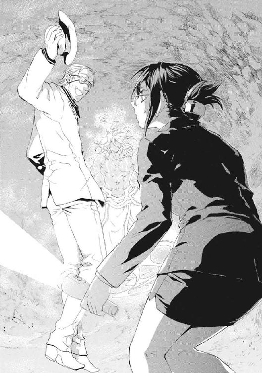
〈炎！〉
気合いの声を発して、《聖霊騎士》が自らの右肩を左手で叩く。神音魔術には、人体そのものを楽器に見立てて体内に魔法を発現させる、浸透神音という高等技術がある。《彼》の右拳に業火が生成される。炎の尾の残像だけが視界にくっきり残る、超高速の裏拳が、王子護の眼帯の右目をぶん殴った。
よろけた王子護が体勢を立て直すより、《聖霊騎士》の左回し蹴りが彼の腹をとらえるほうが早い。同時に発生した高圧の水流の槍が、中年男の肉体を押し流し、壁面に磔にする。
〈水！〉
炎を消し《騎士》の右拳が、今度は水浸しの王子護の肋骨と腹を楽器に見立てるように、素早く三度打つ。
〈氷！〉
王子護の体内から噴きだした魔法の霜が、周囲の水分を凍結させて、彼の肉体と服を壁に縫い留める。
笛を吹くように気息を整えて《聖霊騎士》が構えをとる。二本の足で安定した姿勢を作り、両手で自らの体中を楽器にして身体内で魔法を発動させる。
そして、氷漬けで動きの止まった王子護の体に、浸透神音で性質を変えながらの連撃が容赦なく突き刺さった。
〈雷！ 風！ 振動！ 毒！ 鉄！ 銀！ 爆発！ 酸！ 窒息！ 切断！ 刺突！〉
二十発近い連撃が終わったとき、白いスーツの怪人はボロ雑巾も同然だった。
だが、常人なら二十回死ねる拳打を受けてなお王子護は無傷だ。衝撃で氷から解放された彼の、薄紫の左の瞳がどう猛に笑っていた。真っ白い帽子のつばで、《魔術師》がスーツの埃を払う。それだけで汚れすら消えた。
「さすがデス！ ぼくの防御の弱点属性を探しに来マシたカ。けれど、ぼくヲ〝恐怖〟させるには足りまセン」
完全大系の防御は、〝自分が傷つかないイメージ〟を揺るがすもの──術者が〝恐怖〟しているものだけは防げない。《一眼怒拳》の打ったものは、すべて〝スカ〟だったのだ。
猛攻を受けていた王子護が、くるりと《聖霊騎士》に背を向けた。まるで、その戦力を見切ったかのように。
「ところで十崎事務官。《魔法使い》に魂を売る気はありまセンカ」
それはテロを計画した戦争商人からの、命と引き替えに仲間になれという誘いだ。自分たちに利益を流す内部協力者になれということでもある。
京香は、《聖霊騎士》の拳と魔法の嵐を王子護が間一髪でしのぐのを一瞥し、即答した。
「高価すぎます。私が流れ弾で死ぬのが嫌なら、現実的な値段にしてください」
異世界人が苦笑する。
「買い物上手デスネ。それでは十崎事務官、《魔法使い》と契約する気はありまセンカ」
それは、明らかに彼女の権限を越える決断だ。値切ったにしても、この状況でワイズマンが出す条件が安いはずがない。
戦いは、王子護の軽口の間もまだ続いている。その激しいせめぎ合いを、京香の目では正確にとらえ続けることはできない。ただ王子護の動きははっきりと変化していた。
「ミスタ・ドゥーガ。もーちょっとぼくを追い込んでくだサイ。キミじゃぼくと相性が悪いって、十崎事務官にも丸見えじゃねーデスカ」
王子護は、頭や心臓のような急所でも《聖霊騎士》の攻撃を無造作に受けるようになったのだ。
《聖霊騎士》は、猛攻を止めない。だが、自分の拳ではこの中年男を斃し得ないことを悟っている様子だった。
〈なぜ、これほどの魔法使いが、何もできぬ者をわざわざ救いに来たのだ〉
京香は余計なことを話さないよう注意してきた。再演魔導師たちは、人間の内心は覗けないが、話をした唇なら読める。だが、京香は今あえてそうした。
「世界がふたつの未来のどちらかを選ぼうとしていることを、よく把握している相手だからです。暗い血塗られたこれまでの世界と明るく照らされた新世界という、ふたつの道とを比べるなら、暗い道を選ぶ人間にこそ信じられる同行者が必要でしょう」
王子護が肩をすくめる。
「ぼくの望みが、こっちにあるだけデスヨ。あと、ずいぶんコケにされマシたカラ、ちょっとはアッチにも煮え湯をのんでもらわなキャおさまりまセン」
彼の望みは、この世界を交易で経済的に支配することだ。そのために、円環世界からの漂流物である浮遊城をアトランチスだと偽る一世一代のペテンをしかけた。なのに、王子護は、肝心な時期に〝未来〟から捕獲されて利用され、解放されたときには《神》が降臨してアトランチスは時代に取り残されていたのだ。だからこそ、〝何者か〟が京香の所在を知らせたとき、危険をおかしてここに来たのは王子護だった。
王子護は危険人物だ。だが、京香には好機だった。
「この契約で私が失うものなど、良心くらいではありますね」
「良心とかッテ、時価でいくら出しゃ買えるんでスカ？」
京香も王子護も具体的な交渉をしなかった。〝未来〟の干渉者たちにとって、情報を歪曲して不和の種をまく格好のポイントになるからだ。ふたりともが、限られた情報から相手を信用することを選んだ。
「持ちきれないお金をわたされても困るので、物納してくださいませんか？」
「ミスタ・ドゥーガが強敵だったラ高値になるんデスカ？ それとも早く片付けるほど高いんデスかネ」
暗い迷路を行くような旅では、目的地のひとつは人との巡り会いだ。人との出会いはチャンスだ。失敗の苦さや、増えた酒量から、京香はそう学んだ。
一瞬の幻に過ぎなくても、命を奪い合った敵をすら信じられるなら、この世界はそれほど悪くないと、彼女には思える。そうした無節操さこそが、暗い迷路に灯すべき、実務家のための照明かもしれないからだ。
時間はそのときより三十分ほどさかのぼる。リュリュ・メルルは、地下壕をひとり転げるように逃げていた。倉本きずなとエレオノールに連行された彼女が、同行者から逃げるのは難しくなかった。ひっきりなしに《聖霊騎士》と聖騎士に襲撃を受けていたからだ。
とても彼女まで監視の手が回る状態ではなかった。《極星を追う者》は、再演魔術で追跡不能の魔法使いだから、斥候をまかされている。
剣戟と魔法の炸裂音が反響する通路を、リュリュだけが戦場から遠ざかった。そして安全圏まで逃げ延びて、見張られていないことが信用だったのだと気づいた。
「人間を、いつでもどこでも最後までなんて、信じられるはずがありませんよ。だから、人間を受け止めてくれる《神》が必要なんじゃありませんか」
エレオノールの部下だったころからの騎士甲冑は、とっくに剝がされていた。かつて《幻影城》で手に入れた《聖霊騎士》召還用のオルゴールだけを必死で抱えていた。
彼女がこの危険な神音楽器を奪われなかったのは、エレオノールの口添えのおかげだ。彼女が憧れたその人は、《聖霊騎士》からリュリュを託されたからと、世話を焼いてくれた。リュリュは信頼を裏切ったのだ。
運動で汗だくだったから、鎧下と衣服だけの軽装に感謝した。鎧下をまくり、太くはないがしなやかな筋肉のついた左腕に、薄い機械をバンドで巻いて装着する。これだけは、録音された神音魔術を確かめた後、返してもらえたことを感謝した。機械化聖騎士師団の装備は、他の騎士隊より二世代進んでいる。これの浸透神音を身体に通し、使用者の汗を引かせるのだ。
服の蒸れは軽くなったが、全身の筋肉にたまった疲れはそう簡単にはとれない。落ちていたものを拾った抜き身の騎士剣が、ひどく重かった。再演魔術師からなのだろう指示が、リュリュを操って埃まみれの床に簡単な地図を描かせていた。
「本当に、本当に、......こんな......こんな」
泣きたかった。従軍三年目の少女騎士に、現実は残酷すぎた。すべての〝悪〟は、再演大系と倉本きずなにあると恨んでいた。だが、現実は逆だ。再演大系と結託して、彼女から大切なものをもぎ離したのは、神聖騎士団のほうだった。
水滴が落ちたかすかな音が、床に弾けた。薄暗いから、これは汗なのだと自分に言い聞かせた。
「お姉様は、倉本きずなに操られているのではないのですか。再演大系が、お姉様とニコライとドナルドやみんな、わたしたちの騎士隊を生け贄にしたのではないのですか。ジェイクたち第三試験小隊のみんなを、倉本きずなが捨て駒にしたのではないのですか」
十四歳で神聖騎士団に入団してからの、戦いの記憶がよみがえる。バベル再演に向かう仲間を送り出した。核テロ犯を追って地下都市に踏み込んだ。機械化聖騎士師団に参加して、《幻影城》に踏み込んだ。すべて無惨な別れと敗北の思い出だ。
血と死体と、膨大な戦死の報告──。
「わたしたちは神意のために戦い斃れてきたのです。〝未来〟から人を好き勝手に動かす卑怯者たちの、野望の糧になったのではありません」
死んでいった仲間たちが「もしこのことを知っていたら」と、ふと考えてしまった。それは信仰者として許されざる迷いだ。神音楽器を奏でて《聖霊騎士》を召還はできなかった。彼女には、中途半端な気持ちのまま《彼》の前に立つ度胸がなかったのだ。
リュリュ・メルルは無力だ。憧れたエレオノール・ナガンのように、単身で戦場を制圧できる実力もない。騎士団の頂点のひとりである《至高の人》アンゼロッタにすら剣を向け、破門を受ける胆力もない。
「さかしらに口を動かす者は、わたしたちの仲間ではありません。信じて捧げて体を動かして、それが過ちかを決めるのは神だけです。......この世に、神以上の正義はありません」
かつての第三試験小隊の隊長ジェイク・フェニックスのことばを、口の中でつぶやく。リュリュたちは、かつてそう言ってエレオノールを追放した。
神意だと信じて戦ってきたのに、その裏にもっとも憎み怒りをぶつけたいものがいたのだ。もはや疑わずに前に進み、命を投げ出し、人を殺すことなどできる気がしなかった。
信念が崩れそうだ。こんな状態で同僚の騎士と会ってしまったらと思うと恐かった。
泣いてなどいないはずなのに、目をぬぐわずにいられなかった。情けない声を上げそうな唇を引き結ぶ。
リュリュは、沈鬱に、暗い迷路を歩き出す。かつてエレオノールに投げられた、せめて人間らしくあろうとするのはいけないことなのかという問いが、今は骨身に滲みる。
「......お姉様。あなたの答えがそれでもわかりません」
地下壕の出口は、古びたビルのボイラーが並ぶ地下一階だった。変色したコンクリートの壁に触らないように、ほこりまみれの廊下を歩いて、暗い階段をのぼる。ボイラーのうなりを中に聞き、神音魔術はこのうるささでも正常に発動するか不安を抱えながら、ちいさな楽器を鳴らす。魔弾が鍵のかかったドアを打ち破った。
彼女の迷路の出口の外には、クリスマスシーズンの、人でごった返す繁華街が広がっていた。《神》が降臨し魔法が復活したというのに、何も変わっていないように見えた。それほど、この町の人々はいつも通りの暮らしをしていた。
リュリュは、自分が注目を受けているのに気づいた。かろうじてハーフコートに見える鎧下では、十二月の寒風には頼りないせいでもあり、十六歳の彼女が昼間の街をうろついているせいでもある。だが、それ以上に目立っているのは、刃渡り七十センチメートルの騎士剣だ。
手近なゴミ箱からスポーツ新聞を引っ張り出すと、剣に丹念に巻き付けた。あとは、何をするにもお金が必要だ。甲冑姿だから財布は持っていなかったが、騎士団の習いとして現地通貨を服の内側に縫いとめていた。
往来で服を脱ぐわけにいかないからトイレを探して駅に向かう。オルゴールと剣を抱えて、自分に何ができるのだろうと問いながら。
足音が響いてきた。地下鉄の構内とをつなぐ階段をのぼってきた青年男性が、彼女を突き飛ばすようにＪＲの駅に駆け込んでいった。
鍛えているはずの彼女が、よろけてしまった。
乗り換え駅なのか、急ぎ足のおとなたちがまだ続々と階段をあがってきた。邪魔にならないようにリュリュは通り道を空ける。よほど疲れていたのか、足がもつれた。
「どうしました。日本語だいじょうぶですか」
声をかけられて彼女が振り向くと、そこに微妙によれた背広を着た男性がいた。年の頃なら五十代はじめ、太りぎみで髪は薄いが、頼りがいのありそうな顔をしていた。
そして彼の周囲にはオレンジ色の光が噴き上がっていた。ほとんどの人間からは消えた魔法消去能力を、彼はまだ残しているのだ。
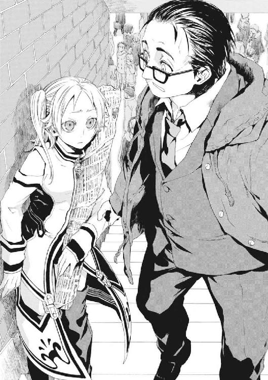
だから、この男性を地下に連れて戻れば、裏切った《聖霊騎士》を簡単に魔法消去できる。《極星を追う者》さえいなくなれば、真実に惑わされる仲間はもう新たには出ない。
彼女が算盤を弾いているあいだ押し黙っていたことを、彼は誤解した様子だった。
「苦しいですか。救急車を呼んだほうがいいですか」
彼は戦闘訓練をまったく受けてもいない、御しやすい人物に見えた。
「まいったな。あ、えー、〝Do you speak English?〟。英語じゃダメな国の人かな」
この人なら、聞いてくれると思った。この出会いこそが神意だ。そうわかると気が楽になった。
「だいじょうぶです。わたしは、ちゃんと日本語わかります」
リュリュが見上げると、彼はハンカチで汗をふいて露骨にほっとした様子だった。
「力を貸して欲しいのです。あなたの力が必要なのです」
「困ったな。娘のところに行ってあげないと。娘から連絡がきて、娘の様子がちょっと心配な感じなんだ」
「それならわたしが力になります。わたしは魔法使いですから力になれると思います。ギブアンドテイクです」
彼女はそのときこれが運命の配剤だと、本当に思ったのだ。
リュリュは、寒川淳と名乗ったその中年男性といっしょに電車に乗った。彼は、携帯電話に娘からの助けを求めるメールが来たのだと言った。奥さんに言われて警察には届けたが、何の理由か、彼はみずから行動に出るほど治安機関を信用していない。
「これが娘の紀子」
寒川淳が、携帯電話の画像を見せてきた。カーディガンを羽織った小学生が、ソファにすわってリンゴを食べている写真だった。父親に撮られるのが恥ずかしいのか、微妙に嫌そうな表情だ。
どこかで見たような顔だった。日本人の顔を精密に見分けられるわけではないから、気のせいだろうと思った。
電車は変わらず運行されているし、乗客も多い。そして車内にいるこの世界の住人たちは、《神》の降臨をほとんど話題にする様子もなかった。リュリュは、日常の揺るぎなさに圧倒されていた。自分たちのしてきたことは何だったのかと、苛立ちが腹の底を刺した。
下りの鈍行列車は千葉方向へとのんびり走ってゆく。彼は次の駅につくたびに、落ち着かない様子で駅名表示を確かめている。寒川淳が、リュリュと並んでつり革につかまりながら、思い出したように話をする。
「来年には、娘に妹ができるんで、早く妻も安心させてやらないと」
聞いてもいないことまで、人の良さそうな彼が硬い口調で話してくれる。
「リュリュさんは、ひとりで留学しているのですか」
「ひとりです。でも、ぜんぜん大丈夫ですよ。仲間がいるので」
自分の抱えた新聞紙に巻いた剣が、なぜか誇りに思えなかった。彼女たち神聖騎士団が、救うべきこの世界に溶け込めない、異物である象徴のようだったからだ。
「あと、敬語でなくていいですよ。わたしの父より、寒川さんのほうが年上ですから」
大きなガラス窓の向こうを、魔法砲撃の巨大な魔弾が通り過ぎようとしていた。
「あ」
リュリュが声をあげ、寒川淳が気づいてそちらを向く。魔法消去を受けて、魔弾が《魔炎》に包まれる。消去能力を失っていた人々がどよめく。彼女は、自分が見つけた魔法消去者が目立つのは気持ちがよくなかった。《極星を追う者》を破壊する彼女の用事を、最優先にしてほしかったのだ。
「急いでいるときは電車でなくても、オートバイなり自動車なり、自由度の高い交通手段があるのではありませんか」
「信頼できるだろう。この世界は君みたいな魔法使いには不便だろうけど、だからこそ、努力していっぱい工夫を積み重ねてきた。電車はそうやって拡充を繰り返してきた輸送システムだから、信用できるし便利だよ」
まるで外国人旅行者に祖国を紹介しているようだった。
「おじさんが若かったころはね、乗ったら終点まで連れてってくれるから、会社員になることを、社会のレールに乗るなんて言ったんだよ。それはリストラだ終身雇用の崩壊だで壊れて、会社の若い子は感覚が変わったけどね。でも、世の中が変わっても、この電車が次の駅につくことは、乗ってるみんな信じて疑ってない」
リュリュはアメリカ暮らしの間、あまり電車を使わなかったから、その思い入れは理解できなかった。それでも、神に祈るべきときに電車の運行を支えにする彼のような魂に、〝救い〟ある新世界をどう信用してもらえるのかと思った。
「そうして信用を積み重ねてきたこの世界が、壊れないといいな。国城田さんが失敗したことを、〝この国の歴史〟を生きていない魔法使いが引き継ぐなんてピンと来ないよ」
リュリュは、目の前の男から夏の核テロ犯の名前が出たことに驚いた。
「ミスタ・クニキダと言いましたか？」
「そういう古い友だちがいたんだ。魔法使いでもリュリュさんには関係ない話なんだから、完全に愚痴だね。参ったな」
「どんな人でしたか？」
「怒りだっていつか時代に取り残されるくらいの、当たり前のことが認められなかった。そういう、意志の強い人だったよ」
寒川が、郷愁と生々しい痛みに耐えかねたように胃のあたりを押さえた。
少女は奥歯を嚙みしめた。どんな怒りもいつか時代に求められなくなるというそのことばが、神聖騎士団の長すぎた戦いを批判しているようだったからだ。
「今の世界を信用していようが、標がないのでは正しい方向へは進めません。怒りが時代に合っていようが、神のない歴史がどこへたどり着けるのですか。標のない戦いなど、〝救い〟への道ではなく、永遠の荒れ野でしかないではありませんか」
そのつぶやきは、考えごとをしている様子の男には聞き取られなかったようだった。
電車が停まった。車内アナウンスが大きく響く。
〈市川ー、市川でございます〉
下車しようとした寒川淳を、思わず引き留める。さっきの魔法砲撃が彼の娘をさらった者によるものなら、射撃位置はここより先だ。
「娘さんは、次の駅です」
そのとき、線路の進行方向の北側で、すさまじい《魔炎》があがった。そして、何十条もの雷がまとめて落ちたような音が轟く。
リュリュは魔法消去者のそばにいて再演操作など受けていない。なのに、体がひとりでに震えていた。一駅向こうにあるのは、彼女が抱えた剣では力不足にもほどがある、《神》をめぐる陰謀がせめぎ合う修羅場だと悟ったのだ。
†
この世には、信じて〝飛べる〟人間と、〝飛べない〟人間がいる。このふたつははっきりわかれていて、行き来するのはひどく難しい。
武原仁の前に現れたのは、〝飛べない〟人間だった。聖騎士リュリュ・メルルのことを仁は覚えていた。きずなを目の仇にしていた少女騎士だ。
昨晩戦場で見て、今朝も会ったばかりなのに、ずいぶん久しぶりな気がした。
リュリュの服は汚れてほつれていたのに、驚くほど可憐に見えた。憎しみに淀んでこわばっていた表情がゆるみ、まっすぐな目をしていたからだ。
仁のほうから、白金色の猫っ毛の少女に声を掛けた。
「《黒騎士》と連絡はしたか」
少女の背後の踏切のさらに先から《魔炎》があがっていた。仁たちと天盟大系の戦闘旅団がいる神社のそばに、魔法消去能力を持った人間が待機しているのだ。
リュリュは答えなかった。《黒騎士》ユーグは、昨晩、この少女騎士をエレオノールに託した。ここに彼女がいること自体、《彼》によって神聖騎士団から放り出された結果とも言えるのだ。
「ここでの戦闘は終わっているのですね。大きな《魔炎》が見えたので心配していました。魔法治療中の負傷者がいた場合に備えて、彼女の父親には後ろに控えてもらいましたが」
話を変えた彼女を、仁は追及しなかった。
「あれは寒川紀子の父親か」
仁は運命の悪趣味さにぞっとした。リュリュはまだ気づいていなかった。
「顔見知りでしたか。その娘を引き渡していただけませんか。助けに来た父親の手に引き渡すのが、もっともよい落としどころでしょう」
「今はムリだ。銃撃を受けて、メイゼルの魔法で命をつないでいる状態だ」
リュリュの顔色が変わった。魔法消去を受ければ死ぬという意味だからだ。
「ここの魔法使いによる治療では、間に合わなかったのですか？ ......いえ、わたしに見せてください。機械化聖騎士師団の緊急救命魔法具は、前線での負傷者を、どんな環境でも治療施設まで保たせることを目指して作られています」
仁は、撤収の準備を終えたが動けない戦闘旅団を振り返った。その輪の中にメイゼルもいて、友だちの容体を心細そうに見守っていた。円環大系の魔法治癒では、自然治癒を加速するところまでで限界だ。内臓の大血管の損傷には対応できない。
リュリュが、肌身離さず持っていた召還用のオルゴールを地面に置いた。かわりに、歩きながら鎧下のポケットから文庫本サイズの携帯端末を引っ張り出して、音声端子にコードを差す。少女騎士が、金色の注射針のようなものを耳のそばに寄せて調子を確かめていた。この緊急救命魔法具のスピーカーは、浸透神音を利用していて、人体に挿して使うのだ。
そして寒川紀子のちいさな体のすぐそばで、リュリュが、全身の筋肉をこわばらせて立ちつくした。今すぐ叫び出しそうに、顔を歪めた。
リュリュは瀕死の少女と、一度会っている。今夏の東京核テロ事件の最初の日、リュリュたち機械化聖騎士師団は、奪われた核弾頭を追って地下壕に進入した。そして、テロリストたちを、その場にいた子どもたちごと攻撃しようとした。巻き込まれたのは鴉木メイゼル、倉本きずな、そしてこの寒川紀子だ。
「......彼女が、寒川淳の子どもなのですか」
少女騎士が、血みどろで昏倒する寒川紀子を見おろしている。この無惨な光景は、今年の夏、リュリュたちをエレオノールが止めなければ、その場で現出していたものだ。
「助けてくれるのか」
仁が押し出した声に、少女騎士が嚙みつくように返した。
「当たり前です。子どもを巻き込むような戦いなど誰がしたいんですか」
それはリュリュの本心からのことばだった。仁にも葛藤が理解できた。《公館》の専任係官だったころ、彼も仕事と倫理の板挟みに苦しんでいたからだ。
「......それでも神意だったのです」
リュリュはうつむいている。指の震えを恥じるように手を握っては開きを繰り返した。
「神意だったのです」
再演魔導師たちに誘導されて《降臨》はなされた。それを支えたのは、何百何千、一万年の戦いまで足してゆけばきっと何億人にのぼる聖騎士たちの犠牲だ。
針型スピーカーを肘の裏から動脈に挿管し、マジックテープでバンドを留めて固定する。彼女が端末を手早く操作する。人造の血液を魔法でつくる造血魔術だ。貧血で青ざめていた紀子の顔に赤みが差してくる。
小型のホチキスのような楽器を血みどろの腹腔内に突っ込んで、ぱちりと留める。何度か作業を繰り返し、血に濡れた手で、リュリュが汗をぬぐう。彼女の装備は、エレオノールが持っていたものとちがって簡単な魔法手術を行えるほど高性能だ。メイゼルの円環魔術が、術中の患者の生命を完璧に維持しているからこその、荒技だった。
メイゼルの足下にいつの間にか展開していた魔法陣が、収縮した。
「せんせ、もうすこし傷が癒着するまで待ったら、あとはこの世界のお医者さんで助けられると思うわ」
ちいさな魔女は、気持ちに忠実に生きているからか切り替えが早い。
「ありがと。あんたがいなかったら、この子、大変なことになったかも」
「俺からも礼を言わせてくれ。寒川は巻き込まれただけなんだ。《降臨》にも戦いにも関係ない人間だった」
メイゼルより先に頭を下げられなかったことが、情けなかった。携帯電話で救急車を呼んだ。銃弾の傷であることと、魔法で応急処置がなされていることを伝えると、受け付けた係員は驚いた様子だった。
リュリュが、治療のあいだ地面に置いていた新聞紙の包みを握った。彼女がそれを、剣を握るように構える。
「あなたがいたから、こんなことになったのではないのですか！」
少女が、暗い情念にとらわれて頰を強張らせていた。服にこびりついた泥をぬぐいきれないように、彼らは憎しみから手を切れない。
だが、今度は斬り合いに発展する余地もなかった。
オレンジ色の《魔炎》が周囲の魔法を焼き払ったのだ。
踏切のすぐ向こうで、太り気味の中年男性がこちらを見つめていた。スーツの上着のボタンを外し、ネクタイを乱暴にゆるめた彼は、風で薄い頭頂の髪を乱しているのにも気づいていない。
「どうしたんですか！ 紀子が、どうかしたんですか！」
仁は、寒川紀子の父親に、小学校の三者面談で会ったことがあった。
「寒川さんのお父さん、近づくのは遠慮してください！ 紀子さんは、怪我をして魔法で治療中です。お父さんが近づくと、治療用の魔法を壊して危険なんです」
寒川の父も、仁のことを覚えていた。
「武原先生ですね。娘の、御陵甲小学校の副担任の」
寒川淳は魔法消去を停止する能力を持っていない。近づかれては本当に危険だから、仁のほうから踏切のそばまで近寄った。神社前の通りを横切った線路をはさんで、仁は、生徒の保護者と向き合っていた。
ニセ教師として最後には生徒を戦いに巻き込んだのかと思うと、情けなかった。
「これは俺の責任です」
「紀子を、助けに来てくれたんですか」
仁は、教師として謝ればよいのか、あらゆる問題を人を殺して解決してきた男として謝罪すればよいのかわからなかった。どうしようもなく、彼に深く頭を下げた。
「すみません。俺の力が足りず、娘さんを守りきれませんでした」
けれど、普通の暮らしと戦場の、ふたつのルールの間でまごつく仁に、生徒の保護者は言ったのだ。
「先生、しゃんとしてください。そんなことばを聞きたいわけじゃない」
仁は顔を上げた。彼の前の父親は、娘が大ケガをしたと突然言われ、近づくことすら禁じられてなお、感極まったように顔を紅潮させていた。
「胸を張ってください。先生は、こんなところまで、娘を助けに来てくださった。それだけで充分です」
父親は、仁のことを信じてくれていた。そう思うと、震えが体をのぼってきた。
「しっかりしてください。娘が助けを求めた人で、わたしより早く駆けつけてくれた人がいた。それだけで、父親として恨むようなことは何もない。ありがとう、ありがとう」
五十代の父親が、人前だというのに泣いている。仁は世界を信じず、寒川紀子の負傷を、妹の舞花が仕組んだことだと疑ったというのに。
仁は、その人の良さそうな男が、夏の核テロの主犯だった国城田義一の友人だったことを知っている。仁が最後に見たとき、彼は月光仮面のようにタオルを顔に巻きバイクに乗って警官隊に突っ込んだヒーローだった。
彼が子どもを前にまごついていては困る人がたくさんいるのだと、背筋を伸ばした。
「すみません。先生がおろおろしてちゃ、まわりが困りますよね」
仁は、深いところでヒーローに憧れてなれなかった男だ。だから、一瞬でも月光仮面になれた寒川淳がうらやましかった。そして、彼が仁をよく知らないからこそだとしても、信じることができる人間力がうらやましかった。
「寒川、......紀子さんを治療したのは、ここにいるリュリュ・メルルです。礼を言うなら、こいつに言ってやってください」
仁は、剣をおろした少女騎士がしてくれたことを、ケガ人の父親に伝えた。
深々と寒川淳が頭を下げた。
「ありがとう」ということばを、メイゼル以外から聞いたのは久しぶりな気がした。リュリュにとってはどのくらいぶりなのだろうと思った。
「あら、寒川のおじさま」
ちいさな魔女が、寒川の父にあいさつしに出てきた。同級生の服が血まみれなことに、さすがに彼が驚いていた。
「血のことは気にしないで。あの子を助けるときについた返り血だから」
父親を刺激しないように仁たちはケガの状態を伏せていたから、メイゼルの服の血ではじめて現状を把握した様子だった。動顚した寒川淳の機先を制するように、少女が言った。
「お礼なら、あたしはケッコウよ。あの子に、あとからたっぷり貸しははらってもらうもの。さあ、あんた、魔法消去であの子のことキケンにしないように離れなきゃダメよ」
救急車のサイレンが、仁の予想よりずっと早く聞こえてきた。
そして、仁は、ここを遠巻きにしていた人々がそばに来ているのを知った。大通りで両手を振って、車を止めてくれている人がいる。大声で救急車の誘導をしてくれている人がいる。戦闘旅団が降らせた自転車が通行の邪魔にならないように、片付けてくれている人々がいる。
魔法使いが助けた命を、この世界の人々がさらに繫ごうとしてくれていた。魔法使いとこの世界の住人が協力し合う世界を、京香や魔導師公館は目指していた。それは、メイゼルの劇の観客が一瞬現出した一体感で、仁と舞花が夢見た風景だ。
魔法消去を停止できない寒川淳がいるから、これは再演干渉が現出した光景ではない。
魔法すらなく自然に人々が助け合うさまを、仁は奇蹟のようだと思った。
そばでは、リュリュが剣を抱えて立ちつくしていた。
「本当に俺を斬りたいのか？」
リュリュが、一途なその瞳を閉じた。そして目を開けられないまま、泣き笑いに顔を歪ませ、大声を張り上げる。
「娘さんと、病院に行ってあげてください！ 目を覚ましたとき、親御さんがそばにいるほうがいいでしょう。わたしの用事は、その後でじゅうぶんです」
救急車がサイレンを止めて神社の鳥居まで進入してきた。救命士がストレッチャーに寒川紀子の体を載せる。仁は、怪我の状態を事細かに説明する。さいわいにも乗員に魔法消去者はいなかった。
寒川紀子が病院へと運ばれてゆく。搬送先の医療機関へ向かうため、父親もタクシーを拾いに去った。
そして戦意を失った戦闘旅団のそばには、仁とメイゼルとリュリュが取り残された。
少女騎士は剣を抱えたまま、神音楽器を拾い上げる。彼女の内面を吹き荒れる嵐が、後ろ姿からもうかがえるようだった。
「お姉様たちと合流するのでしょう。わたしを、お姉様と倉本きずなのところへ連れてゆきなさい」
仁にとって、リュリュを連れて行くことは愚行だ。命を狙ってきた人間を、何の保障もなく連れ歩くことになるからだ。
世界の趨勢は、倉本きずなと武原舞花という、ふたりの超高位魔導師が握ったままだ。そして仁たちは、敵の中心になっている舞花に近づけていない。
きずなはしばしば再演魔術でメッセージを送ってくるが、今後の方針は伝えてこない。〝未来〟の再演魔導師たちから、丸見えになっているからだ。だが、断片的な情報から推測ならできる。
連絡を受けた限りでは、きずなは警察庁制圧に巻き込まれて、地下壕に逃げた。おそらくきずなは、そのまま地下にいるはずだ。
仁でもそうする。再演魔術では、有限のリソースを管理する手間を考えれば、魔法使いを操り人形のように直接操作するより、情報を与えて誘導するほうが楽なはずだからだ。つまり、地上にいると、きずなは誘導されてきた大量の魔法使いに取り囲まれてしまう。だが、暗い迷宮にいれば、危険な場所に入ってくるほど強い誘導や、直接操作を受けた者だけをあしらえば生き延びられる。
「行くべき場所のアテでもあるのですか」
リュリュが、電車の網棚を支える金属柱を握っていた。その生真面目な瞳は、七人掛けの長い座席をはさんだ向こうにいる二人の女子高生をじっと見ていた。ブレザーの上にコートを着込んだかわいらしい少女たちだ。
ひとつだけ普通でないことがあるとすれば、女子高生たちがオレンジ色の光、《魔炎》をまき散らしていたことだ。
再演干渉から安全でいるには、魔法消去が不可欠だ。だが、仁が消去を発動すれば、バイクで狙撃を受けたときのように魔法の助けが得られなくなる。一見すると、これはどちらかを諦めるべき二者択一だ。だが、すこしだけ良心のしきいを低くして、彼以外の魔法消去者が乗る電車に相乗りすれば、仁は魔法消去と魔法を同時に利用して移動できるのだ。
そして、彼にはそれを助ける、社会人の財力があった。
「せんせ？」
困った子を見守る母のように寛容に、メイゼルが微笑んだ。
「あたし、せんせの、運命とか良心とかに頼らないゲンジツ主義って、キライじゃないわ」
「ありがとう」
仁は、魔法消去能力を残していた人間を《魔炎》から見つけて、電車に同乗してもらったのだ。
一万人にひとり以下の稀少な魔法消去者が、女子高生だったのはたまたまだ。赤の他人との交渉を手早くする手段が金銭だったことは合理的な選択だった。なのに空気が微妙に冷たい。
「せんせ、女の子におカネ、わたしなれてるのかしら。あたし、あんな大金、ゼッタイ知らない人から受け取ったりしないわ」
「慣れてるわけないだろ」
女子高生たちと同年代のリュリュが、心臓からことばを絞るように吐き捨てる。
「これが、あなたがたの守りたいこの世界のルールですか。世間知らずというわけではありませんが、このような現実、見たくありませんでした──」
無償の善意で寒川紀子が助かる奇蹟に比べて、仁のやり口はなまぐさい。ピンチをカネで乗りこえてしまった仁に、月光仮面の真似はムリだ。
「あの子たちに、危険があることは説明して、やばいと思ったら逃げていいとは言った。それに舞花たちが本気で仕掛けてくるなら、この状態の電車を直接は狙わないよ」
魔法消去者に危害を加えなくても、足止め自体は難しくない。誰かを操って線路に飛び込み自殺させれば、人身事故で電車は止まる。ただ、そういう最低の成り行きになってすら、仁たちは、相手の本気を確認してから車両を降りられる。
「ジョシコウセイと、おカネで片を付けるのが上手なのね。見ず知らずの女の子を、おカネでほっぺたひっぱたくのって、気持ちいいの、せんせ？」
メイゼルは、仁をつつくのが楽しくなってきている様子だった。
「世界の危機とか、そういう感じなんだよ。奇蹟待つより財布開けるほうが合理的だろ！」
実際、仁が守っている従来の世界とは、お金を払って取引できる世界だ。だが、泥臭い話だが、そこでは嫌ならお金を受け取らない自由もある。
逆に、再演大系の新世界では、人間は〝未来〟からの判断で操られ、知らない間に誘導されてしまう。最悪の場合は報酬も意志ももらえず、肉体を支配されて死地へと引かれてゆく。
「どう言ってよいかわかりませんが、あなたには失望しました」
リュリュは、まったく仁と目を合わせてもくれない。
黒と白のニーソックスの女子高生たちが、仁たちがもめている様子だから、心配そうにこちらを見た。ひそひそ話が、いやにはっきり聞こえた。
「あの男の人、絶対、あのアトランチスのニュースで出てたって。黒髪の女の子、モデルみたいだし間違いないって」
メイゼルが、お互いの体温が滲み合うほど寄り添ってきた。上気した顔で、甘えるように彼を見上げる。
「せんせ、有名人ね」
仁が雇った女子高生たちが、携帯電話を出して彼らの写真を撮ろうとしていた。仁は、目立つから狙撃銃を置いてこざるを得なかったことを感謝した。《剣》のケースは、メイゼルが両手で持ってくれている。
「俺、社会的にほとんど死んでたんだった。忘れてた──」
自分で言って悲しくなって、思わず顔を手で覆った。リュリュがこっちを見もせず、大きなため息をついた。
「ラッキーでしたね。ティーンの女の子にお金を握らせても、評判が落ちなくて。あなたに社会的信用がまだ残ってたら、これで人生終わってましたよ」
「俺の人生が遥か前に終わってて逆によかったねっていうアメリカンジョークか。うわ、おまえ本当にアメリカ在住だったのか」
メイゼルが優越感を満面に浮かべていた。
「せんせは、もっと甘い罵倒がスキなのよ。そんな自分が気持ちいいだけの責めかたじゃ、せんせのキモチには響かないわ」
「俺はそういう違いの分かる男じゃないし、こんなところで、もたれかかるな」
魔法消去は再演観測に穴を開けるから、この会話は〝未来〟の魔導師たちから隠されている。監視され続ける緊張感から解放されたせいか、メイゼルたちの自制は外れかけていた。
そのテンションに、乗り合わせた女子高生たちが一歩引いていた。
「わたしら降りていいっすかー」
「待った！ 連絡を取るから、すこしだけ待っててくれ」
仁は、慌てて《魔炎》をあげる女子高生たちからひとり離れた。《降臨》以前、魔法消去には、広域観測に消去者から半径三十メートルの球形に虫食い穴を開ける力があった。仁が車内を歩くと、消去者からたった十メートルの位置で、ひとりでに右手が動いた。再演魔術によって操作された指が、空中に文字を書く。
〈見つけた〉
それはきずなからのメッセージとおぼしきものだ。仁は、魔法消去者を雇った利点として、魔法消去で護られた状態で、魔法通信をも受けられるのだ。
きずなが〝発見した〟と知らせてくるものがあるとしたら、それは舞花の現在位置だ。
〈ムサシノメイキュウのそば。ギシキがだいぶすすんでる。ジカンがない〉
ＪＲ総武線の上り列車は、寒川紀子が下車した本八幡から県境を越えて、東京都に戻っていた。きずなが今いる都心地下壕群は、地下鉄路線やその工事用トンネルと絡み合っている。きずなのそばまで仁たちはやって来ている。きずなと合流すれば、その次に来るのは当然、決戦だった。これまでは、舞花の位置がわからなかったせいで、戦いの真の中心が動かなかっただけなのだ。
そして、自分の居場所が探知されたことを、舞花自身も知ったはずだ。
手に滲んだ汗をスラックスにこすりつけようとした仁の、右手の指が再度操られる。
〈キチのチカ〉
仁の額に脂汗が浮かんだ。
〝基地〟とは、武蔵野迷宮のそばにあるという以上、旧《公館》本館跡のそばに置かれた米軍基地、おそらく今の米軍多摩サービス補助施設のことだ。武蔵野迷宮は、《公館》地下に広がる地下施設だからだ。つまり、核テロ事件のとき核弾頭を奪われたその施設の地下に舞花はいて、《増幅器》を〝未来〟に設置する作業をしている。
絶望的な状況だった。
乾坤一擲の、やり直し不能の挑戦になるからこそ、このメッセージが本当にきずなからか疑いがわいた。再演魔術がどこから放たれたものか、操られる側からは判別できない。だからこそ、これが〝未来〟の再演魔導師の罠ではない確信を持ちたかった。
「それにしても、どうやって突き止めたんだ？」
〈トザキさんがいろいろやったみたい。サイショはぜんぜんだったけど、ハンノウが出た〉
舞花を十崎京香の仕掛けが炙り出したというのは、ありそうなことだった。警察庁を陥落させられたとはいえ、敗走しながら罠を仕掛けるくらいの執念がなければ、専任係官のまとめ役はできない。
きずなを地下で戦わせる指示も、京香のものなら納得できる。きずなが地下で戦えば、〝未来〟の魔導師たちは、操らなくても協力してもらえる唯一の戦力である神聖騎士団を主戦力にするしかない。だから、やっかいな聖騎士戦力が擂り潰され続けることになる。これは京香たちにとっては、《公館》と警察庁の職員が逃げるための格好の囮だ。
合理的すぎて、戦うと腹を決めたとはいえ、きずながこんな献身をと疑ってしまった。
「そうか。そういえば、あのオモチャの指輪、結局どうしたんだっけ？」
〈ナニ？ ナツにヤガミさんからわたしがもらったやつですよね。あれ、まだもってます〉
「よかった。指輪のことは、ちょっと思い出しただけだから、いいんだ。話はわかった」
仁は、〝未来〟の魔法使いの知らない可能性が高い、魔法消去環境下での思い出を、チェック暗号がわりに使ったのだ。きずなは自分の意志で話している。
〈なつかしいですよね。こういうのゼンブ、マホーであやつられたからだなんて思いたくないです〉
過去を振り返ると、切なさがなぜか重かった。その理由が、仁にはわからなかった。
ただ、無意識のうちに思い出をまとめて整理しようとしているように、思ってしまった。
こころを開くことは難しい。
「リュリュが一緒に行きたがったから、連れて行く。信用できる理由が特別あるわけでも、狙いがあるわけでもないんだ。ただ、俺が、ちゃんと人間を信じてみたかった。それだけの理由なんだけど、かまわないか」
〈いいよ。たけはらさんがしんじてみたい人なら、きっといい人だよ〉
一番不利益と危険を被るきずなが、即答してくれた。人間の美質の差を見せつけられたようだった。
きずなは、綿密な作戦を立てられるほど頭がよいわけでも、経験ある戦闘巧者でもない。だが、他人に気持ちよく仕事をしてもらうことを知っている。だから彼女のまわりには人が集まっているのではないかと、納得する。
「そっか、ありがとう。変なこと頼んでごめんな」
彼女のような人間が稀少な、人間不信の世界を、窓の外に見る。
戦闘機が、二機、町中を低空飛行していた。
†
ジェット戦闘機のエンジン音が、鋭くビル街に響き渡る。まるで映画の中のような風景に、人々は正常な危機感を発揮できなかった。
合計四機の戦闘機が超音速で低空飛行するその様は、魔法の復活という異常事態を経験した市民たちにすら足を止めさせた。
それが隣国ロシアの戦闘機であると判別できた者は、ほとんどいなかった。日本人はそういう意味では平和な国民だったのだ。
だから、人々が悲鳴をあげて逃げまどったのは、発射されたミサイルがビルに直撃してからだった。
厳重な首都防空網をなぜすり抜けられたのか、自衛隊にも在日米軍にもわからなかった。レーダーに最初の反応があったとき、ロシア機は幽霊のように千葉県松戸上空にあった。首都防空の任にあたる自衛隊百里基地は、茨城県にある。都心の内懐に入り込まれて航空自衛隊は戦慄した。先月に日本近海に浮上したアトランチスが核兵器を配備していることを、把握していたからだ。ロシア側への連絡に対する応答も要領を得ない。短い協議の末、ロシア機を迎撃する目的で、アトランチス周辺の事態に即応するため横田基地に持ち込まれていた在日米軍のＦ―15戦闘機がスクランブル発進した。百里からでも間に合わない非常事態への対処まで含めて、それは半月前の《降臨》直前に計画されていた、アトランチス攻撃計画の燃えがらだった。
いまや再演大系は、異世界人だけではなくこの世界の人間も誘導できる。神聖騎士団と協力関係にある米軍も、当然再演干渉を疑った。だが、追及どころではなかった。眼前の軍事行動に対処するのが最優先だったからだ。
その数分前、十二発の弾道ミサイルが朝鮮半島から発射されていた。東京を狙ったそれのうち、五発は海に落下した。陸地に着弾した七発中、市街地に被害を与えたものは四発だ。特に首都に命中した二発のうち一発が繁華街に着弾、多数の死傷者が出ているとされていた。
《降臨》の直前、引き金がすでに引かれていた全面核戦争の続きだった。アトランチスの出現を発端とする国家間の相互不信の爆発は、魔法が復活しても、解決などするはずもなかった。米海軍の原子力空母ジョージ・ワシントンは、今もアトランチス近海に張り付いているのだ。核戦争を止めていたのは〝未来〟からの支配だった。
国城田義一を核テロへと駆り立てた世界の〝悪〟は健在で、神聖騎士団が救おうとした悲劇の連鎖も止まってなどいない。
「なぜこの私が、貴様らなどのためにはたらかねばならんのだ！」
《協会》の調整官ベルニッチは、新橋上空で、激高して叫んでいた。
ビル風に豪奢なローブをはためかせたその高位魔導師のまわりを、爆炎が取り巻いていた。彼が、戦闘機が撃ったミサイルの流れ弾を、防御魔術で食い止めたのだ。
戦闘機が超音速で超低空飛行して起こした衝撃波が、周囲のビルの窓をことごとく割る。ベルニッチはため息をひとつつき、指をぱちりと鳴らした。精霊大系の魔法は、周囲のものに疑似生命を与えて術者に従わせる。
高位魔導師であるベルニッチは、周囲五メートル以上のものを精霊化し、その精霊にさらに周囲の空間を眷属精霊にさせる。この連鎖で、最大半径二百メートルの空間を支配する。
ベルニッチの支配した大気が、高層ビルから雨のように降り注ぐガラスを捕獲する。地上の人々が、どよめいていた。そして、助けられたと理解して、歓呼の声をあげる者もあった。
彼にとっても、最初は再演魔術で操られてやったことだ。だが、止める踏ん切りがつかなかった。
四角張った顎を飾る鬚を、ベルニッチは指輪を何個もはめた指で撫でさする。
「魔法世界になったばかりゆえ今回は特別だが、何度もは助けんぞ。この愚か者どもめが」
この世界は、《悪鬼》すまう《地獄》と呼ばれていた。だが、《神》の降臨で、魔法消去は止まってしまった。それは、魔法使いたちにとっては、この世界を蔑視した理由が崩壊したということだ。ベルニッチたちも、今、元《悪鬼》たちの扱いにこまっていたのだ。
通りがかった《協会》の魔導師たちが、瓦礫を魔法でどけていた。見えない手で、壁や柱の断片を片付けていた。
この世界の住人たちは、この世界の国家が有する軍隊に爆撃され流れ弾に脅かされた。そして、彼らを守ってくれているのは魔法使いだ。
魔法消去者が本当にごくたまに残っていて、《魔炎》があがることもある。だが、そんなときは、魔法消去を失った人々が、自分たちを守ってくれる奇蹟を焼かないよう消去者に目をそらさせていた。
この世界の住人は、神話の時代、高度な技術や道具と引き替えに、魔法使いを神としてあがめた。
人々は、《神》の降臨のおかげで核戦争の危機を脱したことを覚えている。魔法使いとは、うさん臭いほど親切な何者かではなく、同じ人間だと納得している。そして今、魔法使い暴動を止めようとしている、自分たちの味方になってくれる魔法使いがいると知っていた。
†
仁が聞いた舞花の位置は、武蔵野迷宮のそばにある米軍基地の地下だ。
きずなたちと合流する方法も、その位置も示し合わせてはいなかった。
それでも仁は、集まるとしたらそこである気がしていた。
「ここから本気で歩くつもりなのですか？」
電車から高架に降りたリュリュが、声をあげた。隅田川にかかる鉄橋の上というロケーションが、少女騎士を不安にさせている様子だった。
仁は、鉄道橋の端に立った。風がひどく強かった。迎撃側と合計十二機の戦闘機による戦闘の飛行機雲が、すぐ頭上に見える。
「新橋で戦闘機が撃ったミサイルが、線路あたりまで流れてきたらしいからな。電車がこの状況で運行するなんて、期待するほうが間違ってる」
電車はまだ両国をすこし過ぎた、都心の中心部にも到達していない位置だ。舞花は、山手線圏内をまたぎ越して何十キロメートルも西の、電車でも一時間近くかかる場所にいる。
「戦闘機は、間違いなく再演操作を受けてる。地下壕に入ったほうが、魔法で移動しやすくなるぶん早いかもな」
そもそもミサイルが流れてこようものなら、魔法消去では防ぎようがない。舞花が、自分の居場所を探知されたことで決戦にそなえはじめたと考えるべきだった。
仁のスラックスのポケットの中で携帯電話が鳴っていた。歩きながらとると、《公館》嘱託の魔法学者、溝呂木京也からだった。
〈武原君かね。溝呂木だ。倉本きずなから、武原舞花の位置は聞いたね〉
鉄橋上での立ち往生という不安な状況を脱出した仁たちを見て、他の客も窓から外を覗きはじめていた。戦闘機の飛行音がここにまで届いていて、人々の不安を搔き立てていたからだ。仁が電車に同乗してもらった女子高生たちも、「マジ信じられねー」などと不平を言いつつ降車口から降りようとしていた。主桁の上に床版がない無道床の橋からは、下の隅田川が見える。車掌から危険だから降車しないようアナウンスがあった。
仁は、乗客を戦闘に巻き込まないために急ぎながら、電話口の溝呂木に現状報告する。
「連絡なら受けた。俺のほうは総武線の高架だ。両国と浅草橋の間だな。このまま高架を西に歩いて、浅草橋駅に着いたら駅から外に出るつもりだ」
メイゼルは仁の後ろを歩いてついてきてくれている。小学生の足で多摩川まで歩くのは、厳しい選択だった。溝呂木は地上に逃げのびて、自分なりに情報を集めてくれていた様子だった。
〈東京駅から霞ヶ関あたりの一帯、皇居の南側には近づかないことだな。警察庁は、まだ神聖騎士団の特殊部隊に占拠されている。報道を見る限り、それを警察が包囲して、さらに魔法使い暴動が衝突しているな。要するに、混乱して詳細を把握できん〉
ちいさな魔女も自分の携帯電話を耳に当てていた。円環魔術で、仁の携帯電話のスピーカーと自分が持つそれを同調させることで、話をいっしょに聞いているのだ。
〈ところで魔導師公館から協力を要請したいのだが、かまわんかね？ 十崎事務官が地下で足止めを食っているので、代理で私が状況を説明する。だが、私は専門外だから細かい作戦は立てない。そちらで融通してくれたまえ〉
「協力要請なのに、細かいとこは全部丸投げかよ。だいたい、俺にそんな重要な話をまかせていいのか」
〈命知らずだな、君は。こんな状況で、素人の立てた作戦に従って戦いたいのかね。......武原舞花の現在位置は、倉本きずなが逆探知してくれた。まあ〝未来〟の再演魔導師たちも相当に無理をしたということで、そのせいで武原舞花本人が探知可能なほどはたらかねばならなかったのだな〉
話しはじめると溝呂木は興が乗って脱線しはじめる。
〈事態の進行が早すぎるが、十崎君の戦術の影響かな。『人間を操る魔法が存在するから、魔法消去を取り戻せばそれから自由になれる』という情報を流せと指示していたが。再演世界の目的は信頼を勝ち取ることだから、嫌がらせにはなるとして、本当によかったのかね。武原君、これは事態の収拾まで考えれば一種の焦土戦術ではないだろうか〉
「いいから要点を話せ。それと、再演大系が一番嫌がるのは、自分たちの存在を明かされることだよ。再演魔術は、あると明かされただけで、陰謀を疑われて恨まれるんだ。『自分たちが不幸なのは誰かの陰謀だ』なんて、千年後でも一万年後でも、誰でも簡単に飛びついて憎悪をぶつけられるネタだからな」
つまり京香は、〝未来〟の魔導師たちがこの時代の再演操作をゆるめてでも火消しに回らざるを得ない、人類史が続く限り残る反体制テロの種火を撒いたのだ。治安機関の官僚がやることではない。河の上を吹き抜ける強風のせいだけでなく、仁の体が芯まで冷えた。
京香は再演世界を疑わせる毒をまいた。だが、仁たちが暮らしてきた旧世界も、住人自身が、みずから工夫を積み重ねて築き上げた世界を信じられなくなったとき終わる。そのときは、本当の意味で、〝未来〟の魔導師たちが望む新しい神話の時代、再演世界がはじまる。
〈まずは武原舞花のいる、米軍多摩サービス補助施設の地下についてだ。地下なのは、地上にわずかに残っている魔法消去の影響を受けたくない大魔術の最中だと考えられる。魔法儀式の規模から、以前に舞花君が言っていた、再演大系の《増幅器》を未来に設置するものに間違いあるまい〉
橋をもうわたりきってしまった。メイゼルやリュリュもだ。浅草橋の駅はすぐそこだ。そろそろ話をまとめに入りたかった。
「遠未来まで〝時間〟を超えるような大魔術なら、消去は受けたくないだろうな。それで、これから潜入するとして、他に注意が必要な条件はあるか」
〈制限時間は長くないだろう。再演魔導師たちは、魔法使いに秩序を維持させることをやめたらしい。ここからは、もう一秒ごとに、我々自身が核戦争をはじめてしまう危険が増す〉
「いいや。焦る必要はない」
魔法消去者は後ろに残してきたから、今の話は、世界という《本》を通して舞花にも丸見えだ。だから仁は、〝悪人〟らしく言い切った。
「再演大系が止めていた核戦争が再開されるかは、俺たちが心配することじゃない。どのみち舞花たちを倒したら、再演魔術の歯止めはなくなる。俺たちが戦って取り返そうとしているのは、そういう世界だ。そうだろう？」
今、仁たちにしかできないことがある。だが、それはあくまで限られた範囲のことだ。一番大きな壁はこの世界にいる人間が乗りこえるしかない。
〈私は政治には口を出さん主義だが、君は、世界大戦になっても構わんと言ったぞ。思い切ったものだな〉
電話口の向こうで溝呂木がため息をついた。振り返ると、メイゼルが覚悟の決まった清々しい笑みを返した。リュリュは顔から血の気を引かせていた。少女騎士も魔法で盗み聞きしていたのだ。
仁は、今、様々な手段で聞いているあらゆる魔法使いに聞かせるつもりで断言した。
「結局は、再演操作なしで、魔法使いとこの世界の住民がやっていけると、信じるしかないんだよ。舞花は人間がいいほうに変わると信じていないから、〝未来〟の魔法使いに荷担した。〝未来〟のやつらも、自分の手から離れたら何もかもが悪くなると思ってる。俺は、やれると信じる」
仁は、まっすぐな道を歩いている。石ばかりの歩きにくい悪路だが、この道はちゃんとどこかにはたどり着く。
「どうせ神サマなんて信じてないんだ。人間を信じられずに、何を信じるんだ」
悪いものばかり見てきた。仁の《公館》時代の仕事は、犯罪魔導師という〝人間〟を狩ることだった。そういう道ばかり歩んできたのに、言わずにいられなかった。
砂利を蹴る軽い音が背後でした。とんと、軽い感触が背中をたたいた。そして弱々しく、仁のジャケットが引っ張られる。
「──せんせだって変わったわ」
ちいさなメイゼルの声だ。彼の背中に少女が額を押しつけていた。
「あたしだけじゃない。せんせだって、いっぱい変わったのよ」
溝呂木からの電話は切れていた。
「そうか、俺は、変わったのか......」
メイゼルと出会ってからなのだろうと思った。それは、きずなや十崎京香も含めて、家族のように食卓を囲んだせいかもしれない。《公館》を飛び出したおかげかもしれないし、ニセ教師として暮らしたおかげかもしれなかった。
武原仁は、利益で釣ったわけでも弱みを握ったわけでもないのに、人間を信じると言えるようになった。
前方で、火勢は弱いが大きな《魔炎》があがった。浅草橋駅ホームのすぐ手前に、巨大な魔法が現れたのだ。
それは戦闘機のように見えた。白みがかった半透明の機械のようなもので構成された、高度な魔法構造体だ。因果関係に《魔力》を見出す因果大系の高位魔導師たちは、複雑な魔法を簡単に扱うためにこうした魔法構造体を作る。
二本の線路をおさめた総武線の高架を滑走路にするように、全幅十メートル、主脚の高さ二メートル、機体の全高四メートルもある優美な機体が着陸していた。魔法産物だけあって、ブースターがどこなのか、本当に揚力が足りるのかもわからないデザインだ。
「どうやってこんな狭いところに着陸したんだ」
どんな仕組みなのか、魔法戦闘機の機体下部に丸い穴が開いた。そこから、白い装飾のあしらわれた甲冑に身を包む真っ白な女騎士が、ふわりと線路に降り立つ。
「倉本きずなから、協力の要請を受けました。わたくしと、この《大逆天王・飛翔形態》──《逆天空王》の力が必要なのでしょう」
恥ずかしい機体名を誇らしく呼んだのは、因果大系が応報騎士団第二位、《逆天》ユリア・シュバールだ。ユリアの紹介に応えるように、魔法戦闘機の機体の透明度が上がった。魔法構造体の内部に、部下の従騎士が五人、制作者兼操縦士として組み込まれていた。
「......それ、変形できたんだな」
そのとき、魔法戦闘機の更に前方に見えていた浅草橋駅の北側ホームの屋根が炎に包まれた。上空からミサイル攻撃を受けたのだ。
「なんでここに！ 〝未来〟のやつら、完全に操縦士を操作してるのか!?」
反射的に仁はメイゼルの手を引いていた。遅れていたリュリュも、必死で追いすがる。
直後、仁たちが歩いてきた高架の直上を、戦闘機が横切った。一瞬だけ視界がふさがれたそのとき、彼らはまさに猛禽に襲われるウサギだった。すさまじい轟音が空間を圧し、続いて衝撃波が砂利を砂粒のように巻き上げた。石つぶてのようなそれを背中に受けながら、仁は必死で走った。まともに攻撃されたら命がないのだと本能で理解させるほど、それは巨大で力に満ちていたからだ。
「早く乗れ！」
仁が、メイゼルを引っ張って機体に駆け寄る。本体部に魔法で吸い込まれながら、ユリアが警告する。
「乗る場所は上です。風圧からは、ご自分で身を守りなさい。くれぐれも振り落とされないように！」
「無茶言うな」
つまり、仁たちの席は内部にないということだ。
「いいからそこまで飛ぶわ！」
メイゼルが、仁とリュリュごと磁力で体を弾いて、電線に触れそうなほど高く跳躍する。魔法戦闘機の上に仁たちが着地した直後、機体後部が青く淡い光を放ちはじめた。
「伏せろ！ なんでもいいからつかまれ!!」
左手に提げていた《剣》用のケースを抱えるように、仁は機体に伏せた。
そして総武線の線路を滑走路代わりに、火花をあげさせながら、砲弾のように加速する。ミサイル攻撃で燃える浅草橋へと向かってだ。
金属材の無骨なアーチが、炎上する駅ホームとともに一瞬で通り過ぎてゆく。体ごと浮き上がる感覚がして、機体が空中へ持ち上がる。──そして、当然、架線に引っかかる。
ユリアの因果飛翔機の上面装甲が、電線との摩擦で盛大な火花をあげる。メイゼルが電気のあつかいを得意とする円環魔導師でなければ、機体上面にへばりついている仁たちは感電死していた。
そして鉄道の架線を引きちぎりながら、魔法戦闘機が空へと舞い上がる。
轟音と突風が仁たちを容赦なく打った。声をあげることもできず、冬の風に容赦なく体温は奪われる。
心臓の動悸を落ち着かせようとしているうちに、あっという間に秋葉原上空だった。
地上から観測されて、弱いながら機体が《魔炎》に包まれる。だが、破壊される様子はない。魔法消去者が減少し、威力自体も弱まっているだけではない。内部に組み込まれた因果魔導師が、逐次、機体を再構成しているのだ。
「下の暴動をよく見ろ。東京駅上空を飛ぶな！ 撃ち落とされるぞ!!」
ようやく声がまともに出せた。リュリュの神音魔術のおかげだ。神音魔導師は、音を媒介に《索引》を引く魔法の性質上、周囲の大気状態を整える魔法楽器をよく持っている。
「助かった。さすが神音魔導師だな」
「わたしも死にたくはありません」
リュリュの顔は冷たい風に打たれて真っ赤になっていた。仁の指示が聞こえたのか、ようやく機体が右翼を下げてコースを右にとりはじめる。と、同時に機体がふらつきはじめた。
仁たちが機体上面にしがみついたまま大気の状態をいじっているせいで、気流が上面から剝がれたのだ。飛行は当然ながら不安定になる。
東京ドームと後楽園の緑地を見おろしながら、百メートル以下の低高度を、空気の薄膜を突き破り続けるように魔法戦闘機は飛翔している。
しがみついたまま顔を空に向けると、二機編隊の戦闘機が遥か上空で宙返りをするところだった。このコースで飛ばれれば、数秒後には直上から二機がかりの強襲を受ける。
「おい！ 狙われてるぞ」
〈機上で気流を乱さないように。機が失速します〉
ユリアからの声が、肌越しに伝わった。リュリュが気流制御を解除した途端、一気に因果飛翔体が加速した。距離を一時的に引き離したおかげか、攻撃はなかった。
都心中枢部で、敵がかなり慎重なことが救いだった。
「おい、あの機、なんか撃ってこないぞ。くそっ、無線で交信しようとしてるんじゃないのか」
戦闘機とコミュニケーションが取れれば、戦闘を避けられたかもしれなかった。
メイゼルが仁のほうを見て何か言った。烈風と轟音で声は届かなかったが、何を言っているかは推測できた。急降下後ぴったりと因果飛翔機の背後をとった戦闘機から、ミサイルの噴射炎があがった。
「ロックされた!? 飛行機じゃなくても、近付かれ過ぎるとやられるのか？」
ユリアたちの因果巨兵の材料は重力制御で圧縮した水だ。水は赤外線や電波に対する振る舞いが、通常の戦闘機の表面とは大きくちがうため、赤外線誘導兵器からも電波誘導兵器からも安全だと、頭のどこかで思っていた。だが、圧縮水の性質と距離次第では、ミサイルにロックされることもあり得たのだ。
「メイゼル！ 魔法でミサイルのセンサーを殺せ」
機体表面に魔法の磁力で身体を押しつけてもらっても、これ以上速度を上げられると仁たちの身体は耐えられない。だが、派手に戦闘機動をされても仁たちなどすぐに放り出されてしまう。メイゼルのへばりついた機体表面に魔法陣が浮かぶ。後方から発射されたミサイルが、仁たちのほうへ誘導されずにまっすぐ流れてゆき、音羽の学校敷地らしい広い地面に着弾する。
仁の懐で、携帯電話が震えた。仁がなんとか電話を取り出すと、呼び出しはとっくに切れていた。受信履歴には、魔法学者の溝呂木京也からだと表示されていた。舌打ちした。普通の移動体通信は、高速で空を飛ぶ戦闘機から安定した通話ができるようには作られていない。
だが、今この戦況での連絡は、タイミングを逃すと二度ととれない可能性があった。背後には、戦闘機が迫っている。二機編隊の片方が左に飛行軌道を外していった。つまり、これから挟撃を仕掛けるつもりなのだ。
「磁力を切ってくれ。飛び降りる！」
「どうして」と、長い髪を乱したメイゼルに、問い返された気がした。
「電話をとりたいけど、こんな速度で飛んでたら、基地局からの電波が切れる」
仁は、思い切って両手を離し、足で機体を蹴った。空気抵抗でもみくちゃにされながら、仁は池袋上空を舞っていた。電話をとるために戦闘機から飛び降りた男など世界初ではないかと思った。二度とやりたくないし、メイゼルもはっきり呆れていた。
仁のすぐそばを通り過ぎた米軍機が、池袋サンシャイン60を避けるように右側へ軌道を変えた。超高層ビルを挟んで左側を選んだ《逆天空王》の頭を押さえるように回り込んでいた。仁はドッグファイトを横目に、呼び出しを再開した携帯電話を手にとった。同時に、体に浮き上がる力がかかって、仁は空中を滑るように誘導されてビル屋上に着地する。ついてきてくれたメイゼルが、突然のことに呆れていた。
電話はまた溝呂木からだった。
「一体何だ？ 俺は、今、携帯電話のアホな取り方に競技でもあったら、わりと上位入賞できるぞ」
〈言い忘れたが、君の携帯電話の位置へ向けて、《茨姫》オルガを射出した。今度は、《逆天》ユリアの魔法構造体とワンセットで最強の力を発揮する新機軸だ。見て驚きたまえ！〉
仁を魔法で安全に着地させてくれたメイゼルが、遥か遠くなってしまった《逆天》ユリアを見送っていた。
「せんせ、あの速度なら追いつけないわけじゃないけど、どうするつもり？」
確かに円環大系の高位魔導師の速度なら、数十秒で追いつける。だが、防御力が皆無のメイゼルひとりで空を飛べば、昨晩のように撃ち落とされる恐れがあった。
「俺たちを迎えに来てくれたんだから、《逆天》たちが戻ってくるだろ。いや、溝呂木が、俺の携帯電話のあった位置に《茨姫》をもう撃ち出したんだな。ユリアたちの支援兵器みたいだけど、あれと合流前にぶつかったら拾い損ねるのか......」
あどけない魔女の顔が強張った。
「せんせ。音声だけ鼓膜まで魔法で転送したげるから、せんせの携帯電話、あたしがあずかるわ。お話しできるように電話の《魔力》をひろうくらい、円環魔術でだいじょうぶよ？」
そして、自分の権利を主張するように、手のひらを差し出した。つまり、仁がメイゼルに魔法で電話をとれるか先に聞いていれば、二度手間を踏まずに済んだのだ。
「そんなこともできるようになったのか？」
「超一流の魔法使いと、こんなにいっぱい戦ってきたのよ？ 相手の技術をお手本にしたり盗んだりもするし、自分なりに工夫だって続けるわ」
「それで、携帯を預けるのは確定なのか」
だが、できるというなら預けるのはもっともだった。携帯電話を彼女に手渡したとき、ここまで来たかと、半年以上かけて見事に埋まった外堀と内堀を振り返って愕然とした。
「どうしたの？ 不満でもあるの？」
「もういっそ財布もわたそうか」
無言でメイゼルが手を出した。引っ込みがつかず財布をわたす。財布ひとつぶん身軽になったはずなのに、とてつもなく重いものを背負ってしまった予感がした。
「わかったわ。地上からの攻撃が当たらないように、追いついたらいいのね」
なぜか機嫌をなおして、メイゼルが磁力で仁の体を浮かせる。
「あれ、あれ、おかしいな。俺の人生の収支がまったくわからない」
弾かれたように、仁たちの体が加速した。魔法消去を受けているはずなのに、《魔炎》を曳きつつ飛ぶ少女の軌跡は、とても力強かった。
「せんせ、あたし思うんだけど。いっつも手持ちのものをぜんぶ賭けちゃうバクチ打ちみたいな生き方してるせんせに、収支なんて意味あるのかしら」
「俺はもっと堅実に生きてるだろ。待てよ。俺、《公館》やめて無職だし、教師にも戻れないのか。いや、ちゃんとこれが終わったら就職したっていい。そうしたら、給料がメイゼルの持ってる財布に入って......」
ジェットコースターに乗るように、景色がすさまじい速度で後ろに流れてゆく。体感では、飛行速度はさっきまで乗っていた魔法戦闘機よりはるかに速い。なのに、気流制御で守られているおかげで風すら感じない。メイゼルがぴっとりと仁の胸に頰を押し当てていた。
「なんだか、安心ってこういうことなのかしら」
眼下の景色は、頭が混乱しているせいか、どこなのかよくわからなくなっていた。どこでもよいような気分だった。
「俺は、もっと男としてちゃんとするよ」
「うれしい、せんせ」
「いや、そうじゃない。そういう意味じゃなくて、俺がふらふらしすぎなのを、もう改めようっていうだけだ」
メイゼルが見上げてきた。風でリボンが吹き飛ばされた少女の、体温をひどく生々しく感じた。
「せんせが、きずなかあたしか、答えを出すってことでしょ」
「それもあるけど、それだけじゃない」
魔法戦闘機の姿が前方にはっきりと見えた。再度空対空ミサイルをロックされて、今度こそ命中弾を受けたところだった。そして、その更に向こうに閃光があった。
「加速しろ！ あれが〝そう〟なんだ」
テンションが最高潮のメイゼルが、《魔力》型魔法最高を誇る円環大系の大出力で、音速を軽く突破してなおも加速する。音速程度では〝遅すぎる〟速度域の住人である少女は、ジェット戦闘機を抜き去り、《逆天空王》に追いつくと同時に減速して相対速度を合わせる。仁が、進行方向から迫り来る〝それ〟を指さしてユリアに注意をうながした。
「受け取れ。《公館》から、おまえ用の装備だとさ!!」
太陽を浴びて、木製の十字架に両手を広げて縛り付けられた、専任係官《茨姫》オルガ・ゼーマンが空を飛んでいた。
〈あれを、わたくしが────？〉
歴戦の騎士である《逆天》ユリアの声が動揺していた。この世界に降りた女苦行者が、今は天翔る緊縛された人間砲弾だった。被虐趣味者だから、身を打つ寒さと気流の痛みに、恍惚としていた。蜂蜜色の長い髪を風で後ろに引っ張られたオルガは、白く塗装した革製の拘束具に豊満な体を締め付けられている。
「あれ、どうやって使うんだ？」
《逆天》ユリアはそれでも迷いを即座に乗りこえた。魔法戦闘機が、突然機体を真っ二つに折り曲げた。形を変えただけではない。《逆天空王》は、同時に五機の魔法戦闘機に分離したのだ。複雑な魔法構造体が、変形しながら再度合体する。
律儀に《逆天空王》にしがみついていたリュリュは、分離・変形にともなう急減速のせいで、慣性で前方に吹っ飛ばされていた。悲鳴を上げて、住宅街へ落下してゆく。
二機の戦闘機も、形状変化にともなう急減速についてゆけない。衝突を避けるには、急激にコースを変えて飛び過ぎるよりなかった。
そして、合体を果たした人間型の超高度魔法構造体、《大逆天王》が、完全に慣性を制御して、空中に静止していた。白昼の陽光に、純白の甲冑をまとったような巨大で優美な姿をさらす。
〈わたくしに、力を......〉
合体因果巨兵が、中指の先から手首まで一メートルはあろうかという手を、飛翔する十字架へと向けた。因果魔術による慣性制御が、《茨姫》オルガを強制減速して手元に誘導する。
そして、因果巨兵は、静止した磔の巨大な十字架を摑み取ると、正面から見ていたくないかのように右肩に担いだ。
はからずも、その行為が《茨姫》の新装備の、真の姿を露わにした。十字架部分の、ちょうど二本の杭が組み合わさった交点から垂直に、銃身のような長い筒が据え付けられていたのだ。筒にはそれを保持するための握把まで備わっていた。ちょうどよい位置に、「ここを引け」とばかりに引き金までついている。それはＸ型のパーツを広げた、因果巨兵用の巨大な銃器だった。
木製の十字架に、この《茨姫》を組み込んだ魔法装置の名前が刻印されていた。
──《茨・磔刑式》。
すんでのところでリュリュを回収した仁たちは、半透明の因果巨兵のいびつさと洗練が入り交じった威容に打たれていた。全高十二メートルを超える巨人が、長さ二メートルの杭と六メートル以上の筒を組み合わせた十字架砲を背負う姿には、奇妙な風格があった。
「磔刑って......、これ作動させて、《茨姫》はちゃんと生きてるんだろうな」
因果巨兵の脇を通り過ぎてしまった戦闘機は、戻ってきて再攻撃を仕掛けてこない。諦めたのではない。東京西部から神奈川東部に点在する在日米軍や自衛隊の基地を、今なら〝未来〟の再演魔導師にも操れるのだ。だから、二機で飛び去った戦闘機と交替で、二十八機の梯団が視界に現れていた。アトランチスとその保有する核兵器が緊急事態を引き起こした場合に対応するため、配備されていた航空戦力だ。
メイゼルも、これを突破せずには舞花のいるサービス補助施設地下に到達できないことを、悟っている様子だった。
「せんせ、けっこうすごい数、こっちに飛んできてるけど、どうするの？」
自然に、《茨・磔刑式》の〝引き金〟に視線が集まった。
〈《沈黙》よ。ところで、お願いしてよいでしょうか〉
ユリアの声も嫌そうだった。
〈この引き金を、わたくしのかわりに引いてはくれませんか〉
膨大な戦闘機をなぎ払って進むために、溝呂木は十字架砲を送ってきたのだと、想像は容易についた。《茨姫》オルガの魔法、聖痕大系は、触覚と痛覚から魔法を引き出す。自分を拷問して魔法を使う被虐趣味者が、〝これ〟を引いたらどんな惨状になるか、これまでの例から見て明白だった。
真っ昼間からこんな格好のオルガ本人に意見は聞かれなかった。羞恥に頰を上気させる被虐趣味者に、答えることはできない。猿ぐつわを嚙まされていたからだ。
「十字架に《ブースト》ボタンがついてる。まず、そっちから試そう。さすがに即死はないだろう」
そして、仁はボタンを押すとどうなるか理解して、顔が引きつった。
「メイゼル、《ブースト》前に、因果巨兵のところに連れてってくれ。全員しがみつけ。そのボタンで何が起こるかわかった」
向かい来る梯団は、今度は早期警戒管制機の支援を受けている様子だった。ほとんど飛行機の形状も視認できない距離からミサイルが射撃された。
「押すぞ！」
──ミサイルの噴射炎が閃いた瞬間のまま、時間が粘性を帯びた。その中で、《茨姫》と接触している十字架と、それに接した因果巨兵、しがみついた仁たちだけが自由に動いていた。
聖痕大系の《化身》である《まどろみの化身》は、術者にとっての時間の流れを体感時間と同調させる。《茨・磔刑式》のブーストシステムとは、オルガに麻薬を注入することで体感時間を引き延ばさせることで時間の流れを制御する。《茨・ハイスピードモード》で用いられた機能の進化版だ。
そして、この加速が作る時間的な余裕は、高位魔導師である《逆天》ユリアにとっては大魔術の発動を加速させることに繫がる。《大逆天王》がかざした手を握ると同時に、超音速のミサイルがこちらへ到達することなくすべて握り潰されてへし折れる。
〈なるほど。この凍った時間の中ならば、目的地まですぐに移動できるでしょう〉
「あんたより、あたしのほうが速度を出せるわ」
メイゼルがそう言うと、因果巨兵の胴を輪切りにするように魔法陣が浮かび上がる。そして、地面と垂直に急上昇した。つまり、加速状態でメイゼルが速度を出すと、乱した気流と衝撃波が地上を壊滅させかねないからだ。
雲を突き抜けて強い陽光の下に出た後、一直線に目的地上空へ到達する。ただでも高水準な円環大系の機動力に、時間制御まで加わったのだ。生半可な魔法使いでは認識することすらできない。この速度の飛翔体には、もはや対空ミサイルの照準すら不可能だ。
「......ちになって」
因果巨兵の右肩、《茨・磔刑式》に組み込まれたオルガがささやいていた。
薬物で目の焦点が合わないオルガが、猿ぐつわを自力で外していた。口元に血がついていた。自分でかみ切ったのだ。彼女が、腰が熱くなりそうなほど切々と訴える。
「もう焦らさないで、お引きになって！」
時が来たかのように、因果巨兵の足下に光る図形が生じた。ここを狙えという照準が、後の運命を知る者によって置かれたようだ。
《逆天》ユリアは、迷わず地面へ砲口を向けた。騎士として、こんな怪しげな武器で人間が乗った飛行機を撃つのは、気が引けていたのかもしれない。
〈撃ちます！〉
《大逆天王》が、引き金を引く。右肩に背負われた十字架砲の、その十字架部分が機械動力でねじれた。当然、しっかりと固定されていた《茨姫》オルガの両腕の骨は砕け腱は切れ肉は避ける。鈍い異音とともに液体が弾ける。鮮血が右肩から砲身に垂れ伝ってきたとき、魔法が筒を通って噴出した。
聖痕魔術で召喚された白い閃光が、奔流となって放たれる。光そのものが強烈な威力を持った魔法構造体なのだ。のたくりながら地表の森林を貫いて、深く、深く大地を穿つ。
周囲の雲が、その膨大な力の余波で吹き飛ばされていた。完全に雲が晴れたとき、もうもうと白煙が大地であがっていた。米軍多摩サービス補助施設にほど近い、魔導師公館本館の焼け跡から五十メートルほどの至近距離に、直径十メートルほどの大穴が開いていた。
さっきの輝く照準がきずなの発生させたものなら、この深さがまったくわからない竪穴は、おそらく舞花が待つ災厄の中心への最短経路だ。
それは《逆天》ユリアにとっては、引き金ひとつで放たれた大魔術だった。だから、その圧倒的な威力を前に、声も陶酔していた。
〈地面をここまで深く穿つ威力とは。これほどの力なら因果巨兵ではなく、因果巨神を名乗っても──〉
巨大な貫通痕の向こう側から、光の槍が放たれた。
一撃が正確に《大逆天王》の肩を撃ち抜く。加速状態は完全には停まっていなかったはずなのに、まったくそれを問題にしなかった。《茨・磔刑式》を背負った右肩ではなかったのが救いだった。それでも、合体因果巨兵が衝撃に耐えきれず分離する。
今日何度目かで空中に投げ出されながら、仁は警告の叫びをあげる。
「消去を仕掛ける！ 死にたくなかったら、停止した後、自分でなんとかしろ」
そして、彼らが地上二千メートルを超える高々度にいるのをよいことに、魔法消去を発動した。自由落下しながら、地面に開いた大穴へ視線を向ける。
仁の上着にしがみついていたメイゼルが、重力に引かれて墜ちながら悲鳴をあげた。
「どうして！ こんな危ない魔法消去しなきゃ、追撃を防げないような相手なの？」
この火力、この反応速度の魔法使いに、仁には心当たりがあったのだ。円環大系の超高位魔導師、《雷神》クレペンスだ。《茨・磔刑式》による時間加速を、神経を魔法で加速する古の騎士ならば捕らえられる。
「クレペンスだ。舞花が、手元に、魔法で支配した超高位魔導師を確保してたんだ。どうりでこれだけの正念場だってのに顔を見ないはずだ！」
仁は、竪穴の底から狙撃を受けない死角に入ったことを確認してから、魔法消去をいったん停止した。《逆天》ユリアと従騎士たちへと叫ぶ。
「逃げろ！ 〝未来〟の再演魔導師が残してる切り札は、たぶんひとりじゃない」
仁にはなじみのある危機の感覚が、背筋を痺れさせていた。何かを感じているのだろうメイゼルが、身を強張らせたのが、背中越しにわかった。
「何だったんですか、さっきの砲撃は！」
メイゼルにへばりついているリュリュが叫んだ。きずなと合流できていないが、この貫通痕を放置して、〝彼ら〟に外に這い出てこられたらと思うと、怖気だった。
この暗い穴の底に、舞花は、これからの決戦を予期して《雷神》クレペンスを連れてきていた。それを考えれば、《九位》も、本当に無力化されているかわからない。《導師》アリーセ・バンシュタインの姿も見ていないのだ。
そして、舞花のそばには、あの《至高の人》アンゼロッタ・ユーディナと、《はじまりの十五騎士》たる聖霊騎士《黄金の右手》ミヒャエルがいる。
ここから、彼らが突破しなければならない本当の障害、超高位魔導師たちとの戦いがはじまる。
†
《公館》本館から五十メートルの至近距離に光の柱が立ったとき、それを見ていた《鬼火衆》の魔導師たちはどよめいた。開いた射入口から強烈な光条が放たれて、《大逆天王》が撃墜されたときには、悲鳴があがった。
「カンベンしてくだせえよ。あれ、《雷神》じゃねえすか」
《鬼火衆》の筆頭、《笑い顔》虎坂井レイの顔も引きつっていた。虎坂井たちは、かつて、わずかな時間とはいえ《雷神》と戦っている。魔法消去環境ではない今、あんなものがそこの竪穴から出てくれば本当に全滅だ。
彼らは、焼け落ちた《公館》本館の廃墟に集結していた。《鬼火衆》は、武原仁の指示で、地下都市の住人たちを神聖騎士団から救出することに成功した。〝未来〟からの再演魔術による拘束がゆるんだおかげだ。
だが、それは魔法使いたちの怒りや憎悪が形になることを止める枷が、なくなったということでもあった。ニュース番組では、世界中が不安のうねりに巻き込まれ、魔法使いたちによる暴動や刑事事件も多発している様子が報道され続けている。《協会》の本拠を地下にかかえる東京は、魔法使い人口が多いせいもあって大混乱だ。
だから、協力してくれた刻印魔導師たちとその家族も連れて避難するとなると、もう《公館》本館跡しかなかったのだ。
「お兄ちゃんたち、がんばってるの？」
安い子ども服を着たちいさな女の子が、不安そうな顔で寄ってきた。
「よくあれが見えやしたね。才能ありやすぜ、十五年後が楽しみです」
虎坂井は、常人には残像も見えない超高速で、メイゼルたちが丘の上の大穴に飛び込んだのを、しっかり視認していた。もちろん仁もいっしょだった。
電話をかけていた《鬼火衆》の仲間が、のぼる白煙を眺めていた。
「《硝子の手》は、まだ下道で渋滞につかまってるってよぉ。さっきのすげぇ一発、ここに当たったのは意味があんだろ」
地下都市住民が、すぐそばに集まっていた。誰もが不安そうだった。魔導師公館にこだわりがある人間が、ここを非常時の集結地点に選ぶことは簡単に予想できることだ。だから、神聖騎士団が押し寄せてきていたのだ。
「意味どころか、大将はさっきの大穴に飛び込んで突撃しやしたぜ」
「そいつぁ参ったな。じゃあ、俺たちぁ、ここからどうあっても引けねえじゃねえか」
彼と同じ《鬼火衆》の死に損ないが、どう猛に笑った。
《公館》本館は、多摩川沿いの濃い林に覆われた小高い丘の頂上にある。
かつてこの屋敷が陥落したときそのままに、焼け落ちた洋館跡は、今も火事の臭いを残している。ここを焼いたのは《鬼火》東郷永光の反乱で、虎坂井たちもそれに荷担した。
「ここに火をつけたのもぼくらなんですから、まあ、ここを守って死ぬのも巡り合わせかもしれやせんね」
彼らは自然に、人生に意味を見出してしまう。彼らは、公館本館が神聖騎士団に包囲された日、ここを守って死ぬはずだった。彼らの恩人である《鬼火》が、満足ゆく戦いを望んで《協会》中枢へ討ち入らなければ、そうなっていた。
今日も、丘の頂上の洋館跡からは、ここを包囲する千人を超える聖騎士が見えた。
「野郎ども！ 信号あげろ！ 《逆天》サンをこっちに誘導するぞ。あのまま墜落したら包囲されちまわぁ」
虎坂井の指示で、発光魔弾が打ち上げられる。地上の聖騎士たちから魔弾の猛射を受けていた、《逆天》ユリアの飛行コースが変わった。
「すみません。お役に立てなくて」
そう言ったのは倉本きずなだ。混乱がはじまっていた都心から、人々をここに導いた本人が、泣きそうな顔で彼らを見ていた。そうしている間にも、きずなはすさまじい速度で複雑な印を組み替えていた。今も舞花たちに対抗して再演魔術を使っているのだ。
「舞花ちゃんたちが〝未来〟からものすごい圧力をかけ続けてて。とてもひとりで対抗なんてできないから、みんなに自分の意志で動いてもらう手助けだけしてるんですけど、それでも、ときどき本当に触らないとダメっぽいところがあって......」
再演大系は人を操る魔法だ。だが、その制御は再演大系にしかできないから、他の誰かに代わってもらえない。そういう役目に自然となってしまうのだ。
きずなのそばにいたエレオノール・ナガンが、剣を手に立ち上がった。褪せた金髪の少女騎士が、多摩川を挟んだ向こう、米軍施設の緑地に穿たれたクレーターをにらんでいた。
「どうしますか？ 射入口はすぐそこです。あそこから、《縦坑》とやらに潜入できるのでしょう」
武原仁は、すでに陰謀の中心に飛び込んだ。決着をつけに行ったのだ。
再演大系の魔女が見るものなど、虎坂井にはわかりようがない。あらゆる〝過去〟を閲覧し操作する《神》に近い能力者のこころなど、推測もできない。
人の良さそうな顔で、だが焦点の合わない目で、再演魔導師が虚空を眺める。
「ここが守れないと、《縦坑》の舞花ちゃんに外からどんどん援軍が来ます。まずは、来たがってる人をここに誘導しましょう」
きずなが軽く指を振った。焼け落ちた洋館の玄関跡に、ぼろぼろの黒いコートを羽織った瘦身の男が現れた。再演魔術で操られて、魔法で転移させられたのだ。
「なんだここは......」
右目にえぐられたような生々しい傷跡のあるその男は、周囲を呆然と眺める。そして、男は拳銃を握った手を垂らしたまま、地下都市の住民たちが救出されてここにいることに目を剝いた。
「ベルナーおじさん」
まだ四歳のナーディア・タバタが、ベルナーのコートにしがみついた。男は、かつて《死神》ベルナーと名乗った拳銃使いだった。
「アナスタシアおねえちゃんはー？」
狙撃手アナスタシアの妹が、ぐいぐいとベルナーを引っ張る。その様子をみて、他の子どもも集まってきた。拳銃使いは、故郷の子どもを振り払えない。
男の顔からは生気が抜けていた。そして、自分の歩んできた道を振り返ってしまったかのように、顔を歪めた。子どもたちは陰気なベルナーに群がっていた。
「ねえ、ねえ、おねえちゃんはー」
地下都市住民で編制されたワイズマン狩猟魔導師中隊のうち、もはやここにいるのはベルナーひとりだった。
彼の仲間はひとりもいない。狩猟魔導師中隊は地下都市の若者たちだった。それがほぼ全滅してしまったから、人好きのするタイプではないベルナーにこれほど人が群がっている。
泣くことのできない男が、血を吐きそうな声で言った。
「......アナスタシアは遠くに行った」
倉本きずなは、地獄に放り出されたような拳銃使いと、安心した子どもたちを見比べて、笑った。虎坂井は、痛みを抱えた彼女の笑顔を、こころの底から恐いと思った。再演魔導師は、計量してここにあるしあわせが最大になるように、人間を配置したのだ。
《笑い顔》虎坂井レイは、故郷の世界でテロリスト集団を率いて多くの事件を起こした。憎悪を糧に戦ってきた人間を見てきたからこそ、魔法などなくてもわかる。
たぶん、燃え尽きたようなこの片目の拳銃使いは、今日の戦いを生き残れない。
「大将にゃ悪いですが、スキにはなれねえ。再演秩序にとって、人間は単なる〝量〟じゃねえっすか」
ベルナーの人生がぴったり当てはまる死に場所を、きずなが上から見つけて、きれいにはめ込んだのだ。それが再演大系なのだとしたら、そんなルールで生きるのはまっぴらだと腹の底が苛立った。
気持ちがぼろぼろのまま、ちっぽけな誇りまで剝ぎ取られてしまったベルナーが、拳銃を握って立ちつくしていた。この男には今日戦う意味はあるが、明日生きる場所はない。
魔導師公館本館の門には、聖騎士たちが殺到していた。本館そばの大地に大穴が開いていっそう激しくなった攻撃を防ぎ止めているのは、全裸のサムライだった。
《無双剣》セラ・バラードの剣は、軽く速い。だから、彼女の剣舞は、しなやかな筋肉と柔らかな乳房の間で、造形美と女性美をもてあそぶかのようだ。
錬金大系の《化身》である《聖別の化身》は、触れたものの性質を無理やり作り替える無敵の刃だ。防具など何の意味も持たない。
「甲冑など着るだけムダだ！ 戦士ならば裸で来い！」
白金色の髪を肩で切りそろえた裸んぼの美女は、風呂上がりのように肌を上気させ、全身から湯気をあげていた。
《無双剣》に触れたものはガス化する。十二月の寒風の中では、ガス化した人体はすぐに空中で結露して湯気になる。だから、セラの周囲で聖騎士が斬られるたび切断面から湯気があがり、温泉でもわき出たように風景は白く煙っていた。すさまじい血臭を除けばだ。
魔弾が何百何千と、セラのやさしくない裸身へ嵐のように押し寄せる。彼女は、《無双剣》で敵ごと魔弾を斬り払うことで、かろうじて生きている。
公館本館の門は、丘をくだったふもとにあって、軽トラックがかろうじて一台通れる程度の幅しかない。そして、頂上の洋館を取り巻く林は、消去者ではない人間に無差別に反応する魔法起道型の罠だらけだ。唯一の登り口を守るセラに、倉本きずなのためにここまでする義理などない。そもそも彼女は、刻印魔導師として死んだ弟の敵をとるためにこの世界にきたのだ。
「弟はこんな戦いの中で斃れたのか。だとしたら、濡れ衣の罪を着せられて、あの子は、向かぬことを押しつけられたものだ」
彼女を突き動かしていたのは、食わせてもらった恩義ではない。何よりも、敵手への尊敬がまったく感じられない〝未来〟の魔導師たちへの怒りだ。
空中機動性の低い聖騎士の中にも、業を煮やして、空を飛んで頭上を越えようという者が現れる。そのたびに丘の上からの魔弾の射撃で撃ち落とされてゆく。
「誰も問わぬなら、私が問うてやろう。この戦いに正義はあったのか？」
セラの周囲に、突然、炎が燃え上がった。《聖別の化身》で触れたものをガス化させても、高温の伝播までは防げない。これは神聖騎士団のやり口ではない。《協会》の魔導師だ。
彼女たちが立っている地面の下には広大な武蔵野迷宮があり、さらにその下には《門》を中心に築かれた《協会》中枢部が存在する。〝未来〟の再演魔導師たちは、この《協会》の魔法使いたちをここに差し向けるよう誘導したのだ。
「一万年の宿敵を和解させるとは、たいした手管──！」
聖騎士たちも口々に叫んでいた。だが、聞き取る余力はなかった。
だが、彼女自身の命が尽きるのも時間の問題かと思われたそのとき、セラを取り囲んでいた炎がかき消えた。
空中から豪奢なローブを着た中年男性が、ふわりと降り立つ。トウモロコシの匂いがする葉巻をふかしながら、調整官ベルニッチが憤慨していた。
「神聖騎士団と和解だと？ 悪い冗談はよしてもらいたいものだ。こんなものはただの、再演魔導師にそそのかされておのれを見失った、保守派の暴走だ」
尊大な口調のこの調整官は、《協会》穏健派の、間違いなく公館本館に思い入れのある男だった。
「調整官殿にご助力いただけるとは。......確か、操られて、この世界の住人を守っていたのでは？」
ベルニッチが苦い表情で吐き捨てた。
「あそこに、もはや正気の人間は長居できんよ。この世界が《地獄》でなくなったことを、まさか呪うことになるとはな」
東京上空に侵入した四機のロシア機に即応して、スクランブル発進した八機のうち六機のＦ―15Ｃ戦闘機によって、脅威の排除は成功した。交戦時間は予想より長かった。同盟国の中枢であるため、米軍も無茶をするわけにはいかなかったのだ。
アメリカ空軍第十三空軍所属のパイロット、レックス・ハン大尉は、新橋から品川、東京湾と飛び回り、お台場上空に出ていた。それが何を意味したかを理解したとき、すでに彼は赤い魔力弦に捕獲されていた。
体中を〝愛〟に満たされていた。だからレックスは、愛情に突き動かされて僚機を見た。天盟大系の大魔法構造体インマラホテプの〝愛情弦〟が、蒼空を貫いて繫がっていた。
信頼できる相棒と二機で空を飛んでいることがうれしかった。
無線機の組み込まれたヘルメットの中に、聞き慣れた声が反響した。
〈ラバー・ワン。我々が、今、重大な局面にあることは理解していると思う。そこで、作戦の変更を提案したい〉
編隊長からの通信だった。レックスは、この愛に囲まれた人生のときが終わってしまうことを、名残惜しく思いながら、確認をとった。
「こちらラバー・ワン。ハネムーン・ワン、作戦の変更とはどういうことだ？ 説明されたい。作戦を何に変更するつもりだ」
〈我々がするべきは、戦うことではなく、愛し合うことだった。我々の作戦は、〝愛〟だ！〉
「ラバー・ワンよりハネムーン・ワン、作戦変更、了解した」
一キロメートルほど離れて、彼の僚機が飛行している。彼のコックピットから僚機のコックピットへ、インマラホテプの愛情弦がしっかりと繫がれていた。聞く前から、〝愛〟で結ばれた同僚の答えはわかっていた。
〈ラバー・ツー。作戦変更了解〉
無線を通して管制官からの指示が聞こえた。
〈状況がわからない。おまえたちは何を言っている、正気か？〉
管制官は冷静だ。だが、彼らは本当の愛を知らないから冷静でいられるのだ。
辛抱たまらんとばかりに、切羽詰まった声が無線機から響いてきた。
〈ハネムーン・ツーだ。ハネムーン・ワン、緊急脱出する。もう我慢ならん、俺はやつらを抱きしめに行く！〉
お台場上空を旋回していたハネムーン隊二号機が、求愛のダンスを踊るように一号機と飛行機雲をからめてゆく。
〈ハネムーン・ワン。ハネムーン・ツー了解。こちらも同行する〉
〈〈イヤッホォォォォォゥッ！〉〉
飛行機を脱出する。お台場の人々が、落下傘を広げたパイロットたちに、両手を広げて駆け寄ってきていた。
その様子を、レックスは上空から見守り、口笛で祝福する。
「ラバー・ワン、これより帰投する」
彼は基地に戻らねばならない。そして、軍の仲間たちにこの〝愛〟を伝えなければならない。人間の目標は〝愛〟で、それは軍隊にとっても例外ではないからだ。すくなくとも彼は、自分が喜劇でも悲劇でもなく、愛の物語を生きていると信じていた。
レックスは地上を見おろす。愛情の魔法弦がどこまでも人間を繫げている。
「ああ、愛だ！ 愛だ！ 地上は愛にあふれている」
「なんすか、ありゃ？」
《鬼火衆》の虎坂井レイに、きずなは問いかけられた。本館の門で盛大にあがった土柱が、明らかに《無双剣》によるものではないせいだと思った。
倉本きずなは、戦場へ顔を向ける必要性を感じなかった。
「ベルニッチさんを呼びました。あの人のほうが、セラさんより防御に強いです」
再演大系の《本》という完璧な観測手段があるからだ。そして、〝未来〟からの圧力をいなし続けるのに手一杯で、彼女は余裕なく複雑な印を組み続けている。
「ところで、そろそろ大将たちのほうへ行ってくださいやせんか」
虎坂井が、眼を細め、口元だけで笑って切り出してきた。
「守っていただいてありがたいんすけど、倉本さんがいると、ぼくらの仕事がなくなっちまうんでさ」
公館本館は丘の頂上にあって、包囲されると逃げ場がない。だから、本館地下にあった退避路を利用するため、焼け跡が掘り返されていた。《鬼火衆》と地下都市の住人たちも、この世界に根付いていた刻印魔導師たちも、女性も子どもも作業に協力している。
「でも、再演干渉で操られたらたいへんですよ」
だが《鬼火衆》たちは、まるできずなが奇妙なことを言ったかのように、顔を見合わせてゲラゲラと笑い出した。虎坂井が、蒼い空を見上げた。戦闘機が飛ぶ轟音が、びりびりと大気を震わせている。
「こんな吹きっさらしの丘なんて、本気で攻められたら守り切れねえっすよ。向こうがちんたらやってるのは、大将たちと倉本さんたちを引き離しときたいんすよ。てことは、倉本さんをここに引き留めたら、ぼくらが足手まといってことじゃねえすか」
戦いの中心は公館本館跡でも、彼らでもない。すぐそこにある大穴から繫がる米軍基地の地下魔法施設にいる再演魔導師、武原舞花だ。
「ぼくらに、ご奉公させてくれやせんか。ゴミみたいに堕とされてきた刻印魔導師が、世界の未来を賭けたカチ込みの、背中を守るんですぜ。こういう夢が見たくて、生きてきたんじゃありやせんか」
《鬼火衆》が笑う。
「本当に、東郷先生も、早く逝きすぎやしたね。草葉の陰でうらやましがっても遅いですぜ」
彼らの中から、ぽつりと詠嘆があがった。それが偽らざる真情だった。
「ああ、生きていてよかった」
そのころ十崎京香は、神田駅に近い山手線高架の地下から地上に出て、タクシーに乗ったところだった。
ひとつ間違えば、彼女もインマラホテプの愛情弦に搦め捕られていた。お台場エリアからレインボーブリッジを越えてあふれ出した愛情のゾンビたちが、新橋を越えてさらに都心深くに入り込んでいると、報道からは推測できた。ゆっくりと東京は、愛情に接続された人々が徘徊する魔都になりつつあった。
間一髪でタクシーを拾えたのは僥倖だった。疲れ切ってシートに体を預けていると、彼女の右手の指が勝手に動き出した。きずなの再演魔術で操られているのだ。
〈これから、《シャフト》に行く〉
座席に、ひとりでに京香の指が文字を書く。
〈コウカンはかこまれてる。よんできたマホウつかいが、たたかってくれてる〉
「魔法使いは、世界中で制御が外れたんでしょう？ 一体どうなってるの？ 〝未来〟の魔法使いの目的からして世界大戦まではやらないと思うけど、どこまで状況悪化してるの？」
〈そこまでひどくない。わりとなんとかなってる〉
再演魔術で制御されていなくても、すぐに人類が破滅することはない様子だった。
そして、舞花と決着をつけにゆくと結んで、きずなからのメッセージは途切れた。
ひとりきりに戻って、王子護との約束をどう警察上層部に伝えるか考えた。《公館》がほぼ壊滅状態である以上、混乱を立て直した後、王子護とワイズマン警備調査会社に一時的に業務を民間委託することは悪い話ではない。どういう契約でどこまでの業務をまかせるかは、頭の痛い問題だった。だが、自力だけで迅速な立て直しが不可能なことも事実だ。
「仁ちゃん。思うんだけどさ、この世界は本当は捨てたもんじゃないんじゃないかな。仁ちゃんがやらなくても、なるようになるときは人はきちんと動く。自分以外の人間もきちんと生きていて、わりとさ、きちんと戦うんだよ」
《公館》では現地指揮官に大きな権限を与えて丸投げするのが習いだった。だが、今は、最低限の仕事の割り振りすらなくそれぞれの意志で、人々が再演世界の到来を防いでいる。勝手な行動の総体としての〝うねり〟であり、それは目的を果たすために動くひとつの生態系だ。だからこそ、〝未来〟の魔導師たちにすら、複雑すぎて止めることができない。
京香もそうだ。民主主義という市民の意志が反映されるシステムで生きてきた人間としての意地が、彼女を動かした。存在自体が秘密の《公館》で仕事を続けてきたからこそ、世界を変える決定が市民に知らされないまま為され、運営もこっそりと続けるつもりなことが許せない。冷徹な計算や義務感だけで、ここまでは付き合わなかった。
カーラジオが、昼のニュースを流していた。お台場と新橋エリアに魔法汚染が発生し、そこに近づくと精神を支配されることが報道されていた。魔法消去という《魔炎》を発生させる能力者だけはそれに対する完全耐性を持っていて、その近くにいれば安全だと話していた。
「魔法消去ってのは、わたしらがみんな持ってた力らしいですねぇ」
タクシーの運転手が、他人事のように言った。
「あー、それね。私が依頼して流した情報。魔法が起こす異常から逃れるには魔法消去を取り戻せばいーんだって教えたら、〝魔法のない旧世界〟に踏み止まる動機が発生するって考えたの」
「またまた、お客さん。変なこと言っちゃって」
インマラホテプによる汚染すら好都合だった。魔法消去という、この世界の住人が持っていた力を「もう一度欲しい」と思わせる契機が欲しかった。彼女にとっては、決戦へ向かう仁やきずなたちも、再演制御を一定時間ゆるめさせるためのオトリだ。
タクシーの進行方向の路肩に、大型バンが三台も停まっていた。それが何のための車両か、心当たりがあった。
「ここで止めてください」
京香が言うと、いぶかしみながら路側帯に寄せてタクシーが停車した。
「まー、やりすぎたしねー。私としては、できるだけの手は打ったかなーって感じだけど」
バンがいっせいにドアを開けて、十人以上の男女が路上に飛び出した。ドカドカと足音が響く。あきらかに聖騎士だろう男女に、タクシーはあっという間に包囲されていた。
ラジオのアナウンサーとゲストが、魔法のことを心配そうに語り合っていた。窓の外は真昼だ。だから、京香の口元には自然に笑みが浮かんだ。
もはや〝魔法〟は後ろ暗い秘密ではない。
タクシーのドアが外側から乱暴にたたかれた。京香が開けなければ、銃撃でも受けそうな勢いだった。
彼女がしたことは、再演世界にとって反体制テロの最初の火をつける大罪だ。だから覚悟は決まっていた。ドアに手をかけたそのとき、彼女の役目が終わったのだと納得した。仁はどういう答えを出すだろうと、それだけが気がかりだった。
ほぅと、彼女はひとつため息をつく。空は蒼く、死ねば神の御許に運ばれそうなほど、どこまでも高い。
「あとは頑張れ、ヒーロー」
†
仁たちが突入した大地の貫通孔は、滑らかな表面をしていた。直径十メートルの円柱を深く突き刺したようにまっすぐで、どこまでも終わりがないようだった。
斜度六十度を超える急角度は、ほとんど垂直に見える。もはや着地することは不可能だ。メイゼルが飛べるからこそ無事に降下できている。気圧の変化で轟々と音がしていた。
「メイゼル、消去を仕掛ける！」
鼻先に舞い上がった《魔炎》を目にして、仁は消去を発動した。《魔炎》が実際に発動する前にあがるのは、強化された魔法消去が、時間をさかのぼっても攻撃魔術を破壊する強度を持つせいだ。だから《魔炎》を合図に、仁は完璧なタイミングで魔法消去できる。
「何が見える？ クレペンスの位置は確認できるか！」
《茨・磔刑式》の魔法砲撃の貫通孔を、一千メートルは降下しているはずだった。だから広大な空間に出たことを気圧の変化で察知したとき、現実感が喪失した。
それほど無茶苦茶な大きさの空間だった。
メイゼルがあげた魔法の照明弾が、煌々と周囲を照らし出した。
そこは巨大な縦坑としか言いようのないものだった。直径三百メートル以上もある、何も置かれていない円柱型の空間が、そこに広がっていた。
「こんな広さって!?」
メイゼルが驚愕していた。この近辺には本来、《協会》の本拠である地下施設を守るために魔法使いたちが築いた広大な地下迷宮が広がっているはずだからだ。米軍基地の直下に、これほど大規模で、そしてどこまでも〝深い〟空洞が開いている意味がわからなかったのだ。
「おい、ただ決着を見ないと気が済まないってだけなら、俺たちから離れてろ。おまえだけなら狙われないはずだ」
仁は、メイゼルにいっしょにしがみついていたリュリュ・メルルに言った。ここから先は、少女騎士を連れて守ってやるのは無理だ。
「しかしそんな──」
「共闘すらできない相手を、引っ張って戦える相手じゃないって言ってるんだ！」
リュリュの目が見開かれる。そして、仁に負けまいとするかのようにじっと視線を合わせて、彼女が微かにうなずいた。
「わかりました。降ります」
仁は、少女騎士の手を離した。彼女が落下してゆく。
「せんせ、いつもだけど、すごい思い切りね。あの子、巻き込まれないところまで離れられるのかしら」
「もう考えるな。魔法消去環境の外で、円環大系の超高位魔導師にどのくらいのことができるかは、おまえが一番わかってるはずだ」
金属質の銀髪の男が、炎をまとって空中に静止していた。黒と白銀の騎士甲冑をまとった、円環大系最古にして最強の魔法騎士がそこにいた。
円環大系が電磁騎士団団長、《雷神》クレペンス。これが、舞花の用意した、仁たちを妨害する最後の障害だ。
「戦う準備はできたか、《悪鬼》の騎士よ」
仁は周囲に足場を探した。ここは巨大な縦坑の中途で、深さ何千メートルあるのか底がまったく見えない。メイゼルの魔法で浮かんでいるということは、魔法消去を作動すれば落下するということだった。
「ずいぶん地上が手薄いと思ってたら、やっぱり戦力はここに集めてたか」
今の再演大系の力をもってしても、超高位魔導師を操るのは容易ではないのだ。地上の高位魔導師が全員支配されているわけではないのは、ここに魔法資源を取られているせいだ。
「ここだけ警戒が厳重なのは、舞花がいるからとして、ここはいったい何の施設なんだ。こいつは、一年二年で作ったような規模じゃないな」
《雷神》クレペンスの周囲に、白い炎が渦巻いていた。
「ここのことは、《協会》中枢に関わる者ならば誰でも知っている。神聖騎士団は、この国を占領した軍の基地地下に、六十年がかりでこの縦坑を掘り進めていた。武蔵野迷宮を迂回して、地下四千メートルにある《協会》中枢を直接攻めるためだ。我々はここを《縦坑》と呼んでいた」
この頭上の米軍多摩サービス補助施設が極秘裏に保管していた核兵器が、この夏に起こった核テロ事件のはじまりだった。神聖騎士団は、この《縦坑》から、おそらく核爆弾を《協会》中枢部に撃ち込むつもりだったのだ。その方法で、爆発を観測した魔法消去で防御魔法を破壊して、剝き出しの《協会》中枢を焼き払える。
「いろんなことがようやく一直線に繫がったよ。王子護が、俺たちの誰も知らなかった核爆弾の情報まで知っていたわけだ」
地底の核戦争は、専任係官だった舞花が殉職するずっと前にはじまっていた。彼らが今いる空洞が、その中心地だ。
「舞花はこの下なのか。この《縦坑》の底で、舞花は《増幅器》ってやつを〝未来〟へ置きに行くための準備をしてるのか」
見おろしても底へなど光は届かない。《雷神》は、その情報を語ることを許されていないのか、会話を打ち切った。
「最初に言っておこう。操られてここにいるが、完全に支配されているわけではない。魔法消去で再演魔術を破棄すれば戦いを回避できると、勘違いしないことだ」
お互いの姿は、距離が離れているからちいさくしか見えない。それでも声が聞こえるのは、魔法がはたらいているせいだ。
仁は、幾多の神話で雷神の原型となった英雄に気圧されないよう、大声をあげた。
「要するに、負けっ放しはイヤだから雪辱戦をさせてくださいってことだろ！」
メイゼルの足下に魔法陣が浮かび、一気に後方へ加速する。地上では圧倒的な高速だったちいさな魔女が、《雷神》が相手だと遅い。一瞬で、仁を運んでメイゼルが百メートル移動した。だが、同じ時間で《雷神》は、周囲にプラズマの防御壁《無尽の光壁》を展開して戦闘準備を整えている。
メイゼルが飛翔しながら集中していた《魔力》を、人工稲妻として放つ。その雷光のプラズマが空中で凍った。周期運動するものを《魔力》として制御する円環大系の魔法は、電子を直接制御できる。《雷神》クレペンスの反応速度ならば、稲妻を捕獲できる。
「メイゼル殿、正面からの撃ち合いをお望みか」
クレペンスの《無尽の光壁》から、何十条という人工稲妻を撃ち返した。
「せんせ、魔法消去しないで！」
仁は、共に戦ってきた魔女を信じた。
彼らは感電も焼かれもしなかった。雷光が、クレペンスがやったのと同じように固定されたからだ。
「やりかたのコツさえつかめば、どうってことない手品よね」
メイゼルが、ちいさな手をぎゅっと握る。稲妻が凝集して激しい光を放つビー玉ほどの球体になった。
《雷神》が満足げにそのさまを見守った。
「──お見事。技を盗まれましたか」
直後の一撃をメイゼルがプラズマの盾で防いだのは、ほとんど偶然だった。
超高速で飛来した巨大な光弾が、メイゼルが天にかざした盾に反応して爆発したのだ。
衝撃波と熱風に、仁たちは為す術無くあおられる。
「アアアアアアアッ！」
意味をなさない機械音の叫びが、熱風の向こうから轟いた。まばゆいその炎の向こうに、かいま見た《それ》を、仁はよく知っていた。人間の皮膚をすべて黒い装甲板に置き換えたような体に、表情のない仮面をはめた超高位魔導師、《九位》が、砲弾のように突っ込んできたのだ。
「あんたまで操られてるの？ あたしたちの最高位魔導師なのに、情けない！」
メイゼルが怒りでまなじりを吊り上げて、吐き捨てる。
間一髪でかわしたメイゼルの脇を、《九位》が飛び過ぎる。そして、《彼女》が《縦坑》の壁に着地すると、巨大な魔法陣が円柱の壁面に沿って、内周を覆い尽くすように展開する。
「せんせ、消去して！」
メイゼルの悲鳴に応えて、仁は魔法消去を発動する。同時に、彼らを浮かせていた魔法が消失し、全員が落下しはじめた。
仁にしがみついた少女の手が、極度の緊張で強張っていた。
「......ありがと、せんせ。やっぱりあいつ、すごいわ。超高位魔導師と正面から打ち合うのって、思ってたよりずっときびしいみたい」
それは消去しなければ《九位》のあの一撃で死んでいたということだ。天才とまで激賞された少女は、その能力ゆえに彼我の実力差を正確に測れていた。
自由落下する《九位》の左腕が、仁のほうを向いた。女性的な輪郭を持つ《彼女》の、両腕だけがひどく無骨でサイズも不自然に大きい。《彼女》のオリジナルの両腕は仁が以前の戦闘で切り落とした。これは神聖騎士団が急ごしらえに作った、ただの代替品だ。
「上昇だ！」
仁は、魔法消去を停止した。
同時に、足下に魔法陣が浮かんで急減速がかかる。その速度の変化に追随できず、はるか下を銃弾が通り抜けた。彼らを狙って、フルオート射撃の火線が追いかけてくる。超音速で飛翔するメイゼルを、《九位》には正確に照準できるのだ。
メイゼルの防御力では銃弾を防げない。だから仁は、汗ばむ手の中で、短い鉄棒のかたちに戻った《剣》を握る。
だが、仁が超高速域から決死の特攻を仕掛ける寸前、頭上から鈴を転がすような声で警告が降ってきた。
「早まらないでください」
仁たちと《九位》の間に、射線を遮る人影が降下してくる。そして、銃弾の嵐を真っ向から受け止めた。
一発二発三発五発十発二十発と、銃（うせい）声からライフル用の七・六二ミリ弾だと察せられる銃撃が完璧に防がれている。仁はその魔法をよく知っていた。神音大系が誇る万能防御魔術、《光背》だ。
魔法使いが背中を向けたままでも、褪せた金髪と後ろ姿でその正体はわかった。エレオノール・ナガンが、奈落への縦穴にまで追ってきてくれたのだ。
「すまん、助かった」
《雷神》が、《協会》の長年の宿敵である聖騎士に告げる。
「神音大系の機動力では、円環大系同士の戦闘の速度に、追いつくことはできぬ」
だが、エレオノールは《光背》の応用である疑似物質の足場に立って、静かに剣を構える。
「私は破門された身ではありますが、その認識は神聖騎士団を舐めすぎです」
エレオノールが剣の峰に刻まれた装飾具に、指輪をこすりつける。武器に仕込まれた楽器が奏でた魔法が、エレオノールの剣を光の弾丸に変えた。鍔が閃光の翼を広げて、剣尖の方向へすさまじい勢いで魔弾と化した剣を飛翔させる。
少女騎士の唇が神音の歌をつむぐ。鍔から展開していた六枚の翼が微妙に大きさをそれぞれ変化させ、推進力のバランスが変わった。補助魔術の輝く籠手で剣にしがみついていたエレオノールが、それに引きずられながらも、同じ光をまとった靴で空中に踏ん張る。
力任せの方向転換が、彼女を警戒していなかった《九位》の脇腹を、魔弾の刃に捕らえさせた。
「ワワワワワワワワタクシハ──」
異音とともに火花が飛ぶ。だが、魔弾化した剣は装甲を一ミリも削ることができない。円環魔術の秘術には、自分自身という円環を維持することで外力による変化を拒絶する、強力な防御魔術がある。
《九位》の左腕が、モーターの作動音を響かせて、至近距離の神音歌手に向かった。外装が剝がれて、機関銃の湯気を上げる銃口と弾帯がまるだしだ。
「さすがは最高位魔導師。ですが、今のあなたには危機感が足りませんよ」
だが、彼女が射殺される直前、《九位》の左手がひしゃげて爆散した。彼女が得意とする魔術、着弾地点で実体化する《見えない魔弾》が、無理やりつけられた機械の左腕を破壊したのだ。歌姫のさらなる魔弾の集中射撃が、《九位》の右腕を吹き飛ばす。
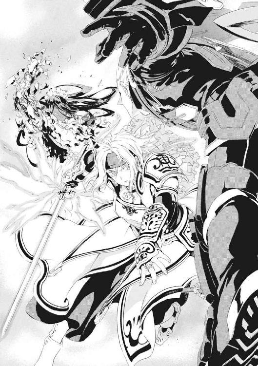
仁にも状況が理解できた。《九位》の自己円環の護りが、後付けの腕にまで及んでいれば、銃身の温度変化も拒絶したはずだ。つまり銃身が熱くなって湯気が出ている以上、防御魔術は銃器付きの腕まで守れていない。
バランスを崩した《九位》に代わって、《雷神》がエレオノールに突進した。
「若手最強の騎士とまで呼ばれたのは、もっともであったようだな」
エレオノールが剣の魔弾化を解除する。全力を防御に回さねば、一撃にすら耐えきれないと判断したのだ。
《雷神》と接触した瞬間、エレオノールの剣の前に太陽が生まれた。それは超高温のプラズマ噴射の槍だ。ただし、噴射されるプラズマの量よりも、クレペンスが周囲の《魔力》を収束して練り上げる量のほうが多いせいで、長さは実質無限だ。支えもなく反動を受ける歌姫は、踏ん張ることも許されず超高速で《縦坑》の壁に叩きつけられる。
「だが、最高位魔導師を侮る暴言、許し難い。最高位魔導師に傷を付けたこと、生涯の名誉とせよ」
壁面にエレオノールを縫い留めたまま、《雷神》の光槍は無限に太さと圧力を増す。仁は魔法消去を発動させるべきか迷った。《雷神》のプラズマ制御を破壊するのは簡単だが、エレオノールの防御魔術のほうが先に消えてしまう可能性もあるからだ。
だが、光が不意に百万の星と散ってそのまま霧散した。
「だいじょうぶですか、エレオノールさん」
この戦いのもうひとりの主役である元《神人》、倉本きずなだった。魔法使いを操る魔法使いが、ちょうどメイゼルがしているのと同じように宙に浮いていた。きずなは、再演魔術で《雷神》を操って、自分を飛ばせる円環魔術を使わせているのだ。
だがそれは、《雷神》を激高させる行為だった。
「下郎、誇りを知らぬか！ 魔法使いが、おのが魔法に持つ自負を、それを支える修練を、貴様は踏みにじるのか」
《雷神》の足下に、《縦坑》を両断してしまいそうなほど巨大な魔法陣が浮かぶ。一度は解放させられた《魔力》が凝集して何万という流星に変わって、きずなへと殺到する。
莫大なエネルギーの交錯が終わったとき、だがきずなは無傷だった。防御魔術を使ってすらいない。百万発魔弾を放とうが、《雷神》自身が操られて狙いを外せば結果は同じだ。
「どいてください！ 再演魔術がキライなら、わたしだけじゃなくて、舞花ちゃんも攻撃したらいいじゃないですか」
「まだ言うか」
きずなのことばは正論だが、《雷神》は更に怒りを露わにする。術者から力だけを切り離して利用する再演魔術は、力がすべての〝魔法使いの世界〟での「人間の尊厳」を踏みにじっているからだ。〝魔法使いであること〟への誇りは、まだ十二歳のメイゼルを刻印魔導師の役目に殉じさせようとしたほど、彼らには根深い。
「一度で墜ちぬなら百度、それでも斃れぬなら千度、万度でもあきらめはせぬ」
円環世界を護り続けてきた老龍が、きずなへと両の手のひらを突き出す。《縦坑》いっぱいに巨大な魔法陣が広がって、蛍火にあたり一面が埋め尽くされた。もう一枚、《九位》の魔法陣が展開されて、周囲は光の海に沈むように濃密な力に満たされた。
この《魔力》が圧縮されただけで、この《縦坑》という空間は、核爆弾をはるかに凌駕する熱と圧力に満たされる。
だが、そのちいさな銀河の破裂を仁は待たなかった。
「おまえ、ちょっとはしゃぎすぎだろ」
魔法消去を発動した。
魔法に頼り切っていた世界は地獄と化した。《魔力》は制御を失って光はかき消え、すさまじい破裂音が響いた。剰余《魔力》が《九位》に落雷したのだ。そして、誰もが塵芥のように真っ逆さまに落ちてゆく。仁たちだけではない。魔法消去によって、全員がただの人間として墜落死へ向かっていた。
仁は、明かりがなくなった真っ暗闇の世界で、ただ落ち行く不快感と、奇妙な愉悦を味わっていた。
「思い出したか！ きずなちゃんの魔法だけじゃない。魔法消去も〝魔法使いであること〟の尊厳を傷つけるから疎まれ、俺たちは《悪鬼》と蔑まれた!!」
仁の胸の底から、野太い笑いがこみ上げた。奇蹟に愛された超人と仁が、重力に引かれていっしょくたに落ちていることが、愉快で仕方なかったのだ。
苦痛と恐怖に吞まれて、憤怒しながら、為す術無く地の底に墜ちる。
ひとつふたつと頭の中で数を数え、二十秒経とうと消去を解除しなかった。強化された仁の魔法消去の影響下で、魔法を使える者はいない。それは、神話の英雄たる《雷神》が、魔法大戦の勝者たる《九位》が、ただの人間としてこのまま墜死するということだ。
暗闇の中、泣き叫ぶ赤ん坊のような切実な咆哮を、《雷神》があげた。
「《真なる悪鬼》ンンッ！」
「目は覚めたか？ 魔法に人生預けてたようなやつが、今さら魔法で操られるのがルール違反だなんてヌルいこと言ってんなよ！」
痛快すぎて笑いが止まらなかった。一千メートル落ちたか、二千メートルか、一瞬後には《縦坑》の底に激突して全員死体になっても不思議はない。もはやこれ以上の墜落は、正気の沙汰ではない。
それでも仁は、暗闇を墜ちながら、恐怖を押し隠して叫んだ。
「おい《雷神》、人間は飛べない動物だって言ってみろ！ 消去を解除してやるぞ!!」
このまま落下し続けることが最良の選択に思えた。だが、それほど簡単に終わるはずもなかった。
闇の向こうから、微かな音がした。仁は、彼の胸にしがみついて震えていたメイゼルの背中をやさしくたたく。彼女が顔を上げた気配がした。
「緊急回避だ」
そして仁は魔法消去を停止する。その瞬間、すさまじい加速がかかり落下コースから彼らは離脱する。魔法が復活した途端、眼下にロケットの噴射炎のように魔法陣がふたつ輝いた。
銃弾のような何かが仁たちの脇をかすめた。第三の魔法使いによる攻撃だ。そして、この状況で退路を塞ぐ上方から現れた以上、この魔法使いが、〝未来〟の再演魔導師たちによる、倉本きずなを封じる罠のフタだ。
「だから言ったでしょう。再演魔導師は、この世からひとり残らず滅びるべきだと──」
響き渡ったその声を、仁は知っていた。《導師》アリーセ・バンシュタインだ。《連合》の評議長である混沌大系の最高位魔導師だ。
影からしみ出した無数の《自律する魔力》が、まるで夜が落ちてくるようだ。触腕をもって歯を鳴らす何百万何千万という《魔力》が、彼らを引き裂こうと雪崩落ちてくる。金髪の巻き毛をなびかせて落下してくる少女の顔をした魔王は、微笑みを浮かべている。
落下速度を殺して空中に立っていたきずなが、その手をひらめかせ、舞うように足を踏み換える。人形のようなアリーセが支配されて無理やり体を折らされ、影の津波に穴が開く。
それでも、アリーセですら完璧に制御できているわけではない《自律する魔力》の大海嘯では、きずなといえども無傷では済まない。
「エレオノールさん。《光背》を張ってください。わたしが援護します！」
応じて、蒼白な顔のエレオノールが、慌てて剣を魔弾化させてきずなへ接近する。その途中、少女騎士は、暗闇を二千メートル自由落下させられた恐怖のせいか、仁と目を合わせてくれなかった。
触腕をのたくらせる粘っこい《自律する魔力》の津波が、きずなを吞み込んだ。
きずなが《雷神》、《九位》、《導師》アリーセという三人もの超高位魔導師に、完全に囲まれてしまっていた。
仁は、のどがからからになっていることに気づいた。この状態で生き延びているのは、今のきずなの力が、超高位魔導師たちをすら凌駕しているせいだ。だが、再演魔術の防御は、いつ〝未来〟からの再演干渉で無効化されるかわからない。〝未来〟の魔法使いたちは、その危険のせいできずながバクチを打てないことを熟知している。
だが、その包囲の外側には仁たちがいる。だから、敵の急所を狙って食い破らんとタイミングをはかる。
円環大系の超高位魔導師の本気の戦闘機動速度は、視覚で追えるものではない。だが、高速機動が起こす烈風を、触覚の消去でとらえるのはたやすい。
鉄棒のかたちに再形成された《剣》を握り直す。メイゼルと視線をかわす。ちいさな魔女が、信じていると伝えるように仁の手をぎゅっと握る。
けれど、勝負をかけようとしたとき、仁の頭蓋骨に声が響いた。きずながエレオイルの神音魔術を借りて声を直接転送したのだ。
〈消去はやめてください！〉
これは頭蓋骨の振動を同期させる通信魔術だから、仁の声もきずなに伝わるはずだった。
「それでも、今も舞花が、《増幅器》を〝未来〟に飛ばすために魔法儀式を行ってる。まだ時間稼ぎに付き合える状況なのか？ それとも、打開できる可能性はあるのか」
仁の魔法消去は、観測した攻撃と防御を力ずくで根こそぎ破壊してしまう。きずなの再演防御は、自分に向かってきた攻撃それ自体に干渉して、柔らかくいなす。仁ときずなの防御手段は、相性が悪すぎるのだ。
ものとものの〝関係〟に《魔力》を見いだすアリーセの混沌大系は、〝関係〟をつないでゆくことで簡単に《魔力》を疑似生命化させる。そうして、夜の女王は無限に《自律する魔力》を生み出す。消去なしでこの圧倒的な量に対処するのは、むずかしい。
人間が好きすぎて人食いの魔女となったアリーセの《魔力》は、人間を喰う。ぼとぼととこぼれ落ちる《それ》が、蛙が舌をのばすようにメイゼルも捕食しようとする。
「せんせ、これじゃ近づけないわ」
ほとんど黒い雨が降るようなものだった。
膠着してしまった《縦坑》の空気を、機械音声が大音量の歌で揺らした。
「オ姉様。アア、私ハ、勝チマシタノヨ──」
《九位》は切々と歌いあげていた。
「電磁騎士団モ、編制シナオシマシタワ。オ姉様ガヤッタヨリ、モット高度ニ。円環世界モ、オ姉様ガヤッタヨリ、モット技術ヲ進メテ──」
《彼女》は、周囲が見えていないかのように「お姉様」に訴えている。《九位》、グラフェーラ・トリアにとってのお姉様といえば、メイゼルの母イリーズ・アリューシャのことだ。
内部構造が露出した《九位》が、腕の切断面から火花をあげて身をよじる。円環大系と《協会》急進派を支配した鋼の大魔女は、もはや完全に正気を失っているように見えた。
夜の女王が、《九位》のなれの果てを一瞥した。
「魔法使いとして永遠に生きるとは、永遠に狂い続けることですよ。怒り、哀しさ、後悔、絶望、人間を壊してしまうものなんていくらでもあるのに、永遠の寿命なんか持ったら、ずっと正気でいられる可能性はゼロですもの」
《自律する魔力》の群が割れて、きずなの姿が仁からも確認できるようになった。それは《九位》の今の醜態をきずなに見せるために思えた。
「オ姉様ガ《円環世界ノ神》ヲ、殺シタトイウナラ、私ハ、オ姉様ガ築イタ世界ヲ、殺シマシタノ──」
状況とはちぐはぐに、ぼろぼろの《九位》はしあわせな夢を囁き続ける。
《連合》が《協会》を離脱した独立戦争から五百年以上も戦い続け、発狂したアリーセは、ずっと笑顔だ。
「おかしくなる機会なんていくらでもあるのに、一度狂えば、命ある限り狂いっぱなし。ご覧なさい。これが魔法使いの末路、永遠という呪いです」
夜の女王は笑う。嘲るように笑う。ただ空虚に笑う。
「オ姉様ガ、ヤリタカッタコトヲ、全部ヤッテ、ソノ全部カラ、オ姉様ノ名前ヲ、残ラズ引キ剝ガシマシタノ。......アア、アア、輝カシキ《魔法使イノ中ノ魔法使イ》、今ハ子ドモト物知ラズヲ、怖ガラセルダケノ、《憎悪ノ女王》──」
仁には、なぜ戦闘を止めてまでこんな話をするのか、はかりかねた。だが、きずなは人食いの魔女を凝視している。メイゼルもちいさな体を強張らせていた。《悪鬼》である仁は、あと五十年もすればまず生きていない。だが、メイゼルやきずなは違う。
「さあ、〝最後の魔法使い〟、恐ければ死んでおしまいなさい。魔法使いとして生き残るとは、いつか頭のおかしい魔女になるということなのですから」
《雷神》が、影を生み出し続けるアリーセへと強烈なレーザーを撃ちだす。
「黙れ。円環大系の高位魔導師を愚弄するか」
「こんな誇り高い《雷神》が、なぜ自分は最高位魔導師にならないとお思い？ 世界を導けるほど、自分の正気に自信がないからですよ。円環世界を守ることで、世界に自分が正気だと保証してもらいたいのですよ」
噴出する闇の衣で身を守りながら、清楚な面持ちで、夜の女王は歌う。
「〝最後の魔法使い〟、教えてくださいな。無限に罪を重ねながら、誰よりも遠くまでゆくあなたは、いつまで正気で、誰に正気だと言ってもらえるのですか？」
感覚器と脳の接続回路を再演魔術で破壊され、永遠の暗闇にいる《九位》には、今も仁たちなど見えてはいない。
「アハハハハハハハハハハハハハアハアッハハアハハハハ──」
これから仁たちは舞花を止めに行く。だが、再演世界の支配から逃れて、普通の暮らしを取り戻したとしても、それは出会った頃のそれとは決定的にちがう。哄笑する鋼の大魔女のありさまが、現実を思い知らせるようだった。
きずなはそれでも強い意志のこもった瞳でアリーセを見返す。
「そんなこと、やってみないとわかりません。生きてどうなるかは、生きてみないとわかりません！」
そしてきずなが複雑な印を組み替えていた両手を、胸の前で打ち鳴らした。再演魔術が、《雷神》の魔法を借用して魔法陣を拡大させる。
術式が弾ける。円環世界の守護騎士の背後に、巨大な〝獣〟の姿があった。
それは頭部から角を持つ、身の丈五メートル以上もある、幻想からわき出たような獣だ。短めだがたくましい後肢で立ち、長く太い腕で黒髪の女の屍体を固く抱きしめている。仁は、その巨獣に見覚えがあった。《神人》の魔法遺産である《幻影城》の、水晶の床に封じられていた原初の《魔獣使い》だ。
瞬間移動してきた、女を抱いた巨獣が、悲しい咆哮をあげる。背後を取られたかたちになる《雷神》が、抜剣して斬りつける。だが、赤熱した剣による一撃を、〝獣〟は片腕で、完璧なタイミングと力加減で払った。予想外の練達の武術で跳ねとばされた魔法騎士をよそに、獣はきずなへと虚空を蹴って跳躍した。
きずな以外の全員が、〝それ〟の正体を確認したとき、一瞬、動きを止めた。
「きずな......」
〝獣〟の太い首の後ろからは、裸の女性の上半身が生えていたのだ。長い黒髪を頭の左右でポニーテールにした、完璧に整った容姿の少女だ。きずなの高校のクラスメートでもある神和瑞希だった。きずなは、円環大系の位置移動魔術を借用して、遠く離れた魔法遺物、《幻影城》にいた友だちを召還したのだ。
「生きる......いっしょに......いきる......」
つぶやくように訥々と、瑞希はことばを絞る。
《自律する魔力》の群れが、瑞希へと殺到する。だが、その触腕を持った怪物たちは、彼女に達する前に動きを止める。
〝獣〟が、みずからの周囲に発生させた霧から、何百万という犬や猫、豚や馬や牛、ありとあらゆる動物を生成したのだ。《魔力》たちが、捕食しやすい肉をつかんでむさぼり食いはじめた。神和瑞希の《魔獣使い》は、この世界に存在するあらゆるものを再現する地獄特有魔術だ。
動物たちの悲鳴が響き渡る。まるで悪夢の宴のようだ。《自律する魔力》たちは、咀嚼している間は次のエサを食えない。
いびつだが換えのない美と色気を持った半人半獣が、巨大な翼を生み出して羽ばたかせる。
《九位》と《雷神》が、何万という光弾を雨と降らせる。〝獣〟が咆哮し、黒い嵐を反対側からぶつけるように、生み出された動物たちを盾にする。一瞬で消し炭や焼き肉になったおびただしい鳥獣がぼとぼとと雨のように落下する。
流れ弾や防ぎきれなかった弾丸が容赦なく彼女を直接撃つが、それが肉を焼くことはない。《気盾》と呼ばれる疑似物質の盾に、強固によろわれているからだ。
「......マイトリー、友......だち」
再演世界と化したこの世界で、他の地獄特有魔術は能力を減じるはずだった。だが、《幻影城》地下に封じられていた原初の《魔獣使い》の肉体を取り込んだ瑞希の力は強大だ。あるいは、《降臨》の影響さえなければこの程度ではないのかもしれない。
きずなが力を込めて尋ねた。
「神和さん、押し返せますか？」
このままきずなは反撃するつもりのようだった。仁は魔法消去を発動できなくなった。消去にさらされれば、ほぼ魔法生物といってよい《魔獣使い》の今の肉体は致命傷を受けるからだ。
「......きずな、......行く」
だが瑞希は、きずなの身体を〝獣〟の巨大な手でひっつかんだ。彼女を守るエレオノールと、その《光背》ごとだ。
そして無言で、下にいた仁のほうへぶん投げた。
《魔獣使い》の魔法によって、すでに一面の《縦坑》の壁は、大樹が根を張って伸びる森になっていた。そこからはびっしりとツタ草が編み物をするように伸びて、急速に空洞に床を作りつつある。投げられたふたりの少女は、小枝の床をへし折って突き抜ける。驚いて、鳥が鳴きながら飛び立った。
周囲は、すでにここが最初から生命に満ちた場所だったかのように、生き物の気配にあふれている。戦場が完全に神和瑞希の色に変わってしまっていた。
「きずなは......、先に......行く......あいつら......止める............」
「別れは済んだか」
《雷神》が、《九位》が、それぞれ百人以上に増えていた。それは、自分自身を複数人数に増やす円環大系の《破滅の化身》だ。《縦坑》をみじん切りにするように、二百を超える魔法陣が広がる。《破滅の化身》たちが、一斉に魔法で増幅したレーザーを放つ。
レーザーの嵐が、ふつうの防御魔術では防御不能の破壊力と、絶対に避け得ない光速で空を貫く。狙いは神和瑞希のか細い上半身だ。
「──さすがは超高位魔導師ってことでショウ」
無色の光線が物体に命中して、そのすさまじいエネルギーが激しい光となって散った。そして、今はまぶたを開けているだけで目が痛い《縦坑》の空間を、真っ白な、汚れひとつない、うさん臭いほど白い帽子が落ちてきた。
「ですガ、〝これ〟デは、ぼくを恐怖させられまセン」
異常をはっきり悟ったか、レーザーの放射が停まる。《魔獣使い》の前に、忽然と、白いスーツを着た中年男が現れていた。まるで手品のように、《魔法使い》王子護ハウゼンが現れていた。瑞希を蒸発させるはずだったレーザーの豪雨を、平然と受け止めていた。
「君たちニ、ひとつ言っておくコトがありマス」
そして王子護は気取った仕草で、落下してきた自分の帽子をつかまえる。
「ジンでは君たちヲ斃せなかったようデスが、《沈黙》ナド、我らの中でもっとも小物デス」
「おい、なんでおまえ当たり前みたいにいるんだ？」
仁は思わず突っ込んでいた。せっかくの凝った登場が、観客である超高位魔導師の反応を見ることなく流れてしまったことに、王子護は不満そうだ。
「そういう契約だかラですヨ。だいたい、ジン、君だってここにいるじゃありまセンカ？」
だが、道化師を相手に、超高位魔導師はペースを乱されない。
「貴公の防御魔術のことは、〝連中〟から情報を受けたことがある。貴公を殺したければ、〝核でよい〟のだったな」
《化身》を解いてひとりに戻った《雷神》が、こともなげに言う。その手の中に、光が収束しはじめた。
「核爆発が弱点なら、核分裂よりも核融合のほうが材料的に簡単なのだが、そちらでよいか」
目の前にいるのは、核爆発を手軽にあつかえる超越者だ。
「これだかラ、ナンでもできる魔法使いってのハ、風情がねーですヨ。再演の連中的には、余波で東京を焦土にされちゃ困るんじゃねーですか」
「爆発の力を外に出さぬよう、封じ込めればよいのだな。容易いことだ」
だが、《魔力》を手の中で圧縮していた《雷神》が、突然すさまじい加速で後退した。影すら見えない一撃が老龍の手を打っていた。作りかけの太陽が炎をあげて爆発する。
一瞬の熱放射で乾燥して燃えた木に着地したのは、《茨・磔刑式》から取り外された、《茨姫》オルガ・ゼーマンだ。新しい《茨》の調整が間に合わなかったか、エンジン駆動の自動拷問具ではない、革の拘束衣だけで現れていた。
そして、上から蒼い炎が降ってきた。
《雷神》と《九位》を守るように、アリーセが《自律する魔力》を大量展開する。うごめく《走狗》が、出現する先からすべて焼き尽くされる。
《縦坑》の壁面に手をかけて、施設を破壊しながら滑り降りてきたその男は、白いジャケットを羽織り、アロハシャツのボタンを上から三つも開けていた。
だが、燃える木の幹に立った寒そうな格好の男に、無駄な肌のさらしかただと指摘できる者はいない。
八咬誠志郎の前では、誰もことばを発することができない。《破壊》の魔法は、八咬が感覚したすべてを破壊するからだ。
《魔獣使い》神和瑞希は、友だちのため、異形と接続してまで勇敢にやってきた。
《魔術師》王子護ハウゼンが、また算盤を弾いているのだろう、右目を覆う銀の眼帯を搔いて軽薄な笑みを浮かべている。
《茨姫》オルガ・ゼーマンの熟れた肢体は、苦行者としてのおのれを貫いて、死地にあっても興奮で火照っていた。
《破壊》八咬誠志郎は、腐れ縁で何度も見た気取った仕草で、品のよい額に垂れた髪の毛先に触れる。
そして《沈黙》武原仁は、理由がわからない胸の熱を嚙みしめている。
魔導師公館の専任係官経験者が、表に出ない者を除いて、一ヶ所にそろっていた。
無限の自己再生力を持つ瑞希が、《破壊》の無差別破壊で喉を壊されながら、彼らからのことばを代弁した。
「......早く......行け。......わたしたち、......じゅうぶん」
〝獣〟の太い両腕が、《縦坑》にできたばかりのツタ草の床に触れる。仁たちと専任係官たちの間を分断するように、急速に岩が生成されてゆく。《縦坑》に、仕切り壁を作るようだった。
仁は、《縦坑》壁面まで運んでもらうと、ツタ草を引っこ抜いて、壁面の土の裂け目に手を突っ込んだ。それに体重をかけて落下しないことを確かめると、目を閉じて魔法消去を発動した。
すこしだけ、仁は、声を出してしゃべりたかった。彼らの声を聞きたかった。
「ありがとう、みんな。頼りにしている」
魔導師公館の専任係官を、〝みんな〟呼ばわりするなんてはじめてだった。
いつも通り心ない笑顔を作っているのだろう、白いスーツの道化師が返した。
「いいですか、ジン。......かつての先生とシテ、最後に教えてあげられることデス。君の《剣》は、〝未来〟から操られ続けた《神人》たちの、呪いと希望の結晶でス」
かつて本気で殺し合った〝おとぎ話の怪物〟王子護は、仁に忠告をくれる人でもあった。
「だから、君は、思うヨウに決着をつけなサイ。しかるべき遣い手デある君がここにいることは、偶然じゃネーってことデス」
腐れ縁の旧友、八咬誠志郎が、快活に背中を任せろと請け負った。
「まったく、このぼくが来たんだ。後ろを心配せずに行きたまえ」
仁には、仲間かどうかは微妙でも、同じ目的に向かって仕事をできる相手がいる。
「さあ、行こうか」
消去を停止して、目を開ける。彼の前には守るべきものがいた。メイゼルがいて、きずながいた。エレオノールまでついてきてくれている。
これだけの人間がそろうことが、奇蹟のように思えた。
仁は、多くの人に支えられてここにいるのだ。
《縦坑》の構造は単純だ。
なにしろ直径三百メートルの円柱型の空洞が、重力方向へ三千五百メートル続いているだけなのだ。それは、米軍基地の地下という圧倒的な地の利があってこその形状だ。魔法消去が圧倒的優位だった時期なら、内部に何も作らないほうが防御しやすかった。もし《協会》から逆にこの縦坑深部に侵入されても、穴の内部を監視して魔法消去環境にしてやり、直上から爆弾を何発か落とせば敵を簡単に排除できたのだ。
だから、がらんどうな施設を降下してその底に到達するまで、仁たちは本当に壁面以外の構造物を見なかった。
「着いちゃったけど、マイカがいないわ」
メイゼルが周囲を見回していた。魔法で作った明かりのおかげで、周囲は蛍光灯で照らされた部屋程度の光量を確保できている。それでも、真っ平らな地面には、頭上の戦いの残滓であるおびただしい動物の焼死体が積もっていただけだった。仁の魔法消去で根こそぎ消し去った今は、本当に何も残っていない。
先に着地していたリュリュも、何も知らない様子だった。
「わたしも、ここに来たのははじめてです」
きずなと、きちんと顔を合わせて話をするのは久しぶりな気がした。今朝も警察庁で顔を合わせたはずなのに、一日をひどく長く感じた。エレオノールは、さっきの自由落下以来避けていた視線をようやく合わせてくれた。
「今朝から、本当に、忙しすぎたよな」
「ほんとぼろぼろになっちゃいましたね」
きずなが、困ったように返してくれた。彼女は学生服についた土埃を、手で払っても取りきれなかったようだった。
「上着だけでも、メイゼルにほこり落としてもらうのもいいんじゃないか」
メイゼルは服についた汚れの成分を、電気的に分離させることできれいにしている。ちいさな魔女が、名前を呼ばれたのを聞いて、気取った歩き方でとことこやってきた。
「おまえ、電気を使って、いつも服の汚れを落としてただろ。あれ、きずなちゃんにやってあげられないか」
「い、いいよ！ メイゼルちゃんも忙しいだろうし」
メイゼルは目を閉じてため息をついた。
「いいわ。せんせの前で、そんな服でいるなんて、恥ずかしいでしょ。エンリョしないで。やったげるから、こっち来なさい」
きずなとメイゼルが並んでいる姿を見ていると、生きていてよかったと素直に感じられた。
「肩の上、はたけないから、ちょっと体をかがめなさい」
照れくさそうにきずなが腰をかがめる。ちいさな魔女が、きずなの制服をはたいてやる。洗濯したように土埃が落ちてゆく。戦場の匂いが落ちて、普通の高校生みたいに暮らしていたころの彼女に戻ってゆくようだった。
「ちょっとナニ笑ってるの？ せんせまで」
メイゼルまで表情をゆるめた。うまくいっていた頃の、微妙な距離感が戻ってくるようで、空気が心地よかった。
「他の子も、汚れた服がイヤならまとめてやったげるから並びなさい」
エレオノール・ナガンが、きずなの後ろに並んだ。前線に立って盾になることが多い彼女は、きずな以上に泥だらけだ。
「リュリュ、あなたもずいぶん汚れていますよ」
そして、新聞紙を抱えたままのリュリュにもそうするように促した。彼女たちも、騎士であると同時に年頃の少女なのだ。
仁たちは、主張もバラバラで、やりたいことも目的も嚙み合っていない。けれど、そういう人間が同じ方向へ進むことができる世界が、好ましく思えた。
「舞花さんは、ここの下です。ちょっとまってください。入る方法を《本》で見つけます」
きずながこともなげに返す。魔法使いがまったく入り口のわからない施設を作ること自体はめずらしくない。ただ、きずなの場合は、謎を解く方法が身も蓋もなさ過ぎる。
「そうか。舞花が、戦う前に一息つく時間をくれたんだな」
旧世界と新世界の衝突、手段を選んでいられない生存競争で、それでも時間をもらえたのは、本当の最後になる激突を前にした舞花の厚意だ。
「神音を使って下に移動するようになってるみたいです。音をエレオノールさんに送りますから、演奏してください。〝未来〟からのジャマは、わたしがふせぎます」
再演魔術で転送された音を聞いて、エレオノールが静かに目を閉じる。リズムを取るように、指でその瑞々しい唇をたたく。
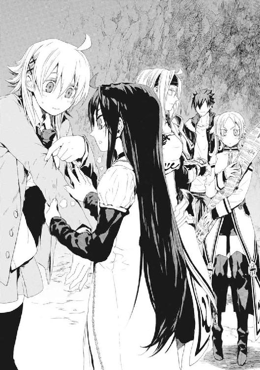
仁は、ふと最後にメイゼルを見た。
「メイゼル」
「なに、せんせ？」
「おまえ、リボンなくしたんだな」
ちいさな子どもあつかいするには、時の速さにため息をつくほど、少女はおとなびて見えた。リボンがなくなっただけなのに、彼女がもうすぐ中学生になることを実感せずにいられない。
「変だったりする？」
「いいや、似合ってるよ」
そっかと少女が屈託なく微笑む。無防備なその表情にすら、あどけなさより、蕾がほころびだしたような華やかさが前に出ていた。
エレオノールの右手に紫色の炎が灯る。彼女が手を動かすと、炎が移動や角度に反応して様々な音を発する。魔法でつくられた万能楽器、聖霊炎だ。同世代最強を謳われた彼女は、この楽器を使った聖霊剣と呼ばれる戦闘法の名手でもある。
仁は、その紫の炎の舞いに見とれた。聖霊炎の魔法を間近に見るのは、バベル再演のとき以来だと思った。彼女は、腕の火傷痕を隠すための長手袋をもうつけていない。
電子音楽を再現した神音楽曲が、閉じた。
神音大系の位置移動魔術は、目的地の神音を奏でることで一瞬でそこまで移動する。だから、またたきする間に景色は変わっていた。
そこは、この《縦坑》を築いた人々の手によるものだと納得できる、無駄のない空間だった。床は円形ではなく一辺三百メートルの正方形だ。天井は非常識なほど高い。どこかに発電機でもあるのか、電灯の照明に照らされていた。広く殺風景な空間の奥には、高さ五十センチメートルほどの舞台が築かれている。
この舞台は奥行き二十メートルほどの帯状だ。さらに奥の三十メートルは、バレエやオペラの公演で楽団が隠れるオーケストラ・ピットのように、一段低くなっていて見えない。
《コンサートホール》の舞台のど真ん中には、石造りの台座が置かれている。台座には、人間の上半身がすっぽり隠れるほどの大判の《本》が開いている。
《本》の前には、ふたりの人間がいた。ひとりは、魔法の舞いを黙々と踊り続けるちいさな子どもだ。仁と同じ色の髪をした、彼と似た面影の女の子は、よみがえった妹、武原舞花だ。そして、メイゼルが二十代まで成長したような黒髪の美女がすぐそばに立っている。機械化聖騎士師団の師団長、《至高の人》アンゼロッタ・ユーディナだ。
聖騎士将軍アンゼロッタと妹に、仁は共通点を発見した。どちらも合理的で、無駄なものを置こうとしない。このふたりには、信頼関係はなくても、理解し合える要素ならあるのだ。
「お兄ちゃん、なにかおかしいことでもあったかな」
儀式の踊りを舞う舞花は、動きやすいシンプルな貫頭衣で、裸足だ。
「いっしょにいたんだろ。おまえら、ちゃんと話とかしたか？」
舞花は目を閉じてそのことばを嚙みしめるように聞いた。アンゼロッタは、おのれが世界の中心軸であるかのようにまっすぐに立っている。返事はない。ふたりとも、お互いとの会話の必要性を感じなかったのだ。
「今、気づいたけど、おまえらわりと似合ってるよ」
「お兄ちゃんはときどき変なこと言うね」
ここには彼らの他には誰もいない。壁も床も地面を掘り抜いたままで、余分なものはどこにもない。
「こんな程度の備えでいいのか。おまえを斃せば、〝未来〟に《増幅器》ってやつを送るのは無理なんだろ」
この世界そのものを再演世界という魔法世界に変えた、再演大系をめぐる決戦の、ここが終点のはずだ。罠の中心にあえて飛び込んだはずなのに、予想よりはるかにぬるい歓迎だった。
「見えませんか、わたくしたちの軍勢が──」
アンゼロッタがきりりとした軍服の袖を鋭く振る。同時に、広大な空間を、息も苦しいほどの烈風が吹き荒れた。
そして風が収まると、舞台の、彼女の背後に半透明の騎士がいた。
──十二騎もだ。
心臓が停まりそうになった。
すべて《聖霊騎士》だった。この十二騎全員が元は英雄や大魔導師だった上、斃れても無限に再召還がきく。《縦坑》で出会った超高位魔導師三人が、アンゼロッタを抜いた機械化聖騎士師団五千騎全員を遙かに超える戦力だとすれば、聖騎士将軍本人と舞花が加わったここの陣容はそれすら軽く凌駕する。
「こんな大量投入、《公館》の記録にも残ってねえぞ」
だが、《聖霊騎士》のナンバーは、7045まで確認されている。神聖騎士団には余力があったのだ。再演干渉が《協会》との緊張を緩和したことで、魔法世界中の戦線に配置していた戦力を引き抜けるからだ。
アンゼロッタの寛容な笑みは、それ自体が神の意志であるかのように揺らがない。
「本当に、ここに招いた十二騎だけかどうか、確かめてみますか」
恐怖が腹の底からこみあげる。〝何か〟が《聖霊騎士》たちの戦列から押し寄せてきた。最低でも十二発の大魔術だ。
超常の騎士の中には、舞台を降りて、仁たちへ刃を抜いて突進してきている者すらいる。砕けて砂の柱になる床、無数の魔法剣、炎、衝撃波、もはや何であるか判別できない力の津波だった。
仁は魔法消去を発動する。それでも消しきれなかった余波に吹き飛ばされそうになっていたメイゼルの手を、転倒寸前で捕まえる。
「せんせ、あぶないとかって話じゃないわ」
だが、視線の魔法消去は、舞花のいる舞台もまとめて焼き払ったはずだ。《増幅器》を〝未来〟へ送るための儀式を破壊できているなら、しめたものだった。
仁は成果確認のために、魔法消去を一度停止する。視界に飛び込んできたのは、舞台の中央に浮かぶ、高さ一メートルほどの板状の構造体だった。奇蹟が消え去ったはずの空間からにじみ出るように、魔法構造体が再構築されてゆく。三秒ほどで、精緻な文様の入った扉のかたちに復元してしまった。
舞花が、舞台で体を折って笑っていた。
「こんな単純な対策で驚いちゃダメだよ。これだけ大事な魔法儀式なんだもん。魔法消去を受けても復元するように、儀式に仕掛けはしてあるに決まってるよ」
その構造体は、ほとんど完成してしまっているように見えた。つまり、儀式自体を破壊できないなら、これ以上進めさせてはならないということだ。
「儀式が復元する仕掛けは、神人遺物が自力で魔法を取り戻す作用の応用だ！ そこの《本》か書見台か、復元の仕組みを維持してる遺物がある」
仁が叫ぶ。その彼の脇を、剣を構えた疾風が走り抜けた。
「消去を発動したままにしてください！ そこを動かないで!!」
エレオノール・ナガンが、武原舞花を狙って突進する。仁は魔法消去で《聖霊騎士》たちを焼き払う。仁たちがいた場所から、舞花たちの舞台までは百メートル以上離れていた。
軽装のエレオノールが、その距離を見る見る詰めてゆく。なのに、この消去環境下で舞花をたったひとりで守らねばならないはずのアンゼロッタが、剣の柄に手をかけてもいない。
だから仁はそれを察知できた。
「防げ、罠だ！」
魔法消去を停止する。ほぼ同時に銃声が響いた。エレオノールの体が吹っ飛ばされる。
魔法を利用した準備をこれだけ入念にしておいて、魔法消去一発で無防備になどなるはずがない。消去を想定した罠も仕掛けられているに決まっている。
舞台奥に掘られたピットの中で、数人の騎士が、塹壕に伏せるように銃を構えていた。銃器を持った騎士が、いつの間にか魔法で移動してきていたのだ。魔法消去で《聖霊騎士》を破壊して舞台に上がろうとしたら、即座に射殺できるようにだ。
仁は、舞台を見上げるだだっ広い客席に立ち、わずか百メートルの距離の遠さに、気が遠くなりそうだった。
「神聖騎士団は、あらゆる事態を想定して準備をしてる。まずは向こうの仕掛けを一通り見て、潰しきれてない穴を探すぞ」
仁たちは、このだだっ広い客席で、まずは舞台からの攻撃をしのぐしかない。この空間的な余裕は、神聖騎士団に〝与えられた〟ものだ。つまり、逃げ場を与えることで、舞台への決死の特攻で不幸な偶然が起こることを防いでいるのだ。逃げ場が一辺三十メートルなら前進しかないが、一辺三百メートルもあっては突っ込むのは心理的に愚策にしか見えない。
銃声がまた散発的に響いた。きずなが再演魔術で同士討ちを誘ったのだ。
だが、これは織り込み済みの被害だ。機械化聖騎士師団ならば、銃器を扱える騎士はどれだけ人数がいてもおかしくない。
消去を停止した途端に、さっき焼き払った《聖霊騎士》たちが、もう再召還されて勢揃いしていた。
「出方をうかがうのは、順当な考え方だよね。でも、《増幅器》の設置儀式に間に合わなくっても、お兄ちゃんたちは〝負け〟なんだよ」
メイゼルが、仁といっしょに宙を飛んだ。最深部空洞の天井は低いが、それでも八十メートルほどはある。高速飛翔するメイゼルが危うくかわした魔法攻撃が、壁や天井を粉砕して破片を飛び散らせる。徐々に正確になってゆく照準が、メイゼルを追い詰めてゆく。魔法消去に賭けるか迷った末、仁は決定をくだした。
「転移だ。ここは魔法で跳べるはずだ」
視界内に自在に瞬間移動できる円環大系の転移魔法が、一瞬の差で仁たちの命を救った。追撃を、二度目三度目の連続転移でかわす。機動速度だけで狙いをかわせる間合いまで引き離して、メイゼルがうめいた。
「転移が封じられてない、なんで？」
「連中にとってこの戦いは防衛戦だ。逃げる相手をつかまえるより、転移を使って、援軍をいつでも呼べるようにしとくほうが大事なんだよ」
ふたたび魔法の剣や光条が殺到し、それをメイゼルが熟練の飛行技術で回避する。土埃にむせながら、仁は次の瞬間死んでもおかしくないからこそ必死で頭をはたらかせる。今回の戦いが絶望的なのは、戦闘距離を完全に支配されてしまっていることだ。弾幕が厚すぎて、舞花に接近すらできない。
「メイゼル！ 騎士たちが持ってた銃器を引き寄せろ」
だが、少女が磁力を持たせて引き寄せた銃器は、空中でことごとく破壊されて、仁の手元には入らない。銃撃がその間に途切れることすらほとんどない。失った武器の補充も、魔法で補給線を完璧に構築した機械化聖騎士師団にはたやすい。
〈準備をして呼び寄せて、そんな単純な穴を残すほど俺たちは間抜けに見えたか〉
黒い甲冑と仮面の騎士が、巨大な槍型の神音楽器を鋭く振る。砕けた床の破片が、津波のように寄せてくる。リュリュをエレオノールに託した《黒騎士》ユーグがいた。
「おまえまで再演魔術で操られてるのか。それとも再召還されたか」
防御手段を確実に突破してくる大魔術を魔法消去する。そして慣性で吹っ飛ばされ落下しながら、即座に消去を停止した。メイゼルが、飛行魔術を立て直して床を磁力で滑り、速度を殺さず回避行動に復帰する。まるで息のあったアクロバットだ。
エレオノールはきずなを背後にかばって、《光背》を破られてこそいないものの、じりじり後ろへ押されていた。その彼女たちの前に、高い天井に冑をつけんばかりに巨大な騎士が現れていた。アンゼロッタの《聖霊騎士》である《黄金の右手》ミヒャエルだ。敵方には、超高位魔導師である《はじまりの十五騎士》がふたりいた。
〈そなたらに恨みはないが〉
身の丈四十メートルにも及ぶ巨人騎士が、刃渡り二十メートルの長剣を振りかぶる。ギリギリ天井に当たらないくらいの軌道をなぞって、衝撃波を巻き起こしながら《黄金の右手》の剣がエレオノールを襲う。
仁は、神聖騎士団が《コンサートホール》を本当に決戦のつもりで組み立てたことを、思い知らされていた。
「ここの八十メートルは、おまえが自由に動くための高さか！」
他にどうしようもなく、魔法消去を発動する。消去を作動している間は、《聖霊騎士》の再召還はできない。
舞台の向こうから激しい銃撃が仁たちを襲う。仁たちは、大魔術で落ちた巨大な天井の破片の陰に命からがら逃げ込み、射殺をまぬがれるしかない。フルオートの激しい射撃音と、弾丸が石材を削る背筋の凍る音が響く。
救いは、この人数の《聖霊騎士》の魔法攻撃を、消去の発動中は完封できていることだ。今の仁の魔法消去は、それほど圧倒的なのだ。
「向こうは超高位魔導師が何人いるんだ。舞花とアンゼロッタを入れて、最低四人かよ」
《聖霊騎士》たちが壁や天井を砕いた砂埃が充満して、スモークが焚かれたように舞台が見えなくなっていた。舞花たちの姿が隠れている。
「《沈黙》よ。《魔炎》のあがりかたが奇妙です。土埃の向こうの魔法を消し切れていないのではありませんか」
エレオノールが、肌の見えるいたるところにちいさな傷をつくっていた。
戦闘がはじまってわずか一分か二分のはずなのに、鈍い疲労が体にのしかかっていた。メイゼルときずなは、彼が取り乱したら安直な強攻策に逃げてしまいそうなほど不安げだった。敵のそなえは鉄壁で、死角すら見つからず、何かできそうな取っかかりすらない。
「向こうからは、この状態で魔法では攻めてこないよ。あいつら、神聖騎士団がよくやってた集団戦術を、《聖霊騎士》にやらせてるんだ。頭数を利用して格上を斃す戦術を、超高位魔導師や高位魔導師にやらせたら、そりゃ強いさ」
エレオノールが鈍い決意を瞳に宿らせて、剣を引き寄せる。
「それならば、かわしている間に、いつか敵は隙を作るでしょう。《聖霊騎士》は、召還されるごとに以前召還されたときの記憶を失います。複雑な連携を不得手にしています」
「期待薄だな。指揮をとってるのはアンゼロッタじゃなくて、〝未来〟からの再演魔術だ。再演魔術は、指揮や偵察みたいな情報管理ではまったく隙がない。何回破壊しても《あいつら》の呼吸の合いかたが完璧なんだから、崩れることに期待をかけるべきじゃない」
壁面か天井か、どこかに《聖霊騎士》を自動で召還しなおす機械楽器が、厳重に守られて配置されているはずだった。だが、それを攻撃されたときの対策も講じられているだろうし、予備楽器があってもおかしくない。
銃声に混じって、聞き覚えのある発射音が耳に飛び込んできた。
「魔法防御だ！」
仁は慌てて魔法消去を停止する。ロケット弾が滑空してくる音が急速に迫る。隠れ場所に撃ち込まれた五発のロケット弾が、瓦礫ごと彼らを火炎に包んだ。魔法消去に頼ったままなら、《悪鬼》同士が殺し合うための道具で吹き飛ばされていた。
「そりゃ上は米軍基地だから、こういうのも準備できるよな」
「そんなことどうでもいいから、せんせは考えて！」
メイゼルが土煙を吸い込まないよう口を腕で覆って悲鳴をあげる。仁を円環魔術で運んだまま、再開したすさまじい数と威力魔法を、彼女には狭すぎる空間でなんとかかわす。今、神聖騎士団の集団戦術の完成形を前にしているのかもしれなかった。どこが穴だと聞かれれば、もはや仁にはさっぱりわからない。
そのとき、突然、《聖霊騎士》たちの戦列が崩れた。
仁はその奇蹟を前に、何が起こったのか一瞬、本当にわからなかった。
《聖霊騎士》、《はじまりの十五騎士》たる《黒騎士》ユーグが、黒い甲冑に包んだ巨軀を、仁たちの盾になる位置に移動させていたからだ。アンゼロッタの舞台の戦列を支えていた黒い甲冑の騎士が、仁たちからそう離れていない客席側に降りていた。
次々に、《黒騎士》に魔法が着弾する。大魔術の集中砲火を、超高位魔導師であるユーグの《光背》も防ぎきれず、大気をかためた半透明の身体に神音魔術が突き刺さる。男の深い声が、客席の大気を震わせた。
〈再召還されたばかりの俺は、嬢ちゃんが、〝そいつ〟をどうして持ってるか覚えてねえんだが──〉
《黒騎士》が身を挺して守っていたのは、仁たちではなかった。《彼》の前には、白金色の猫っ毛を泥だらけにした少女がいた。実力不足を知りながら、憎しみと悩みを抱えて、それでも答えを求めてこの戦場までついてきてしまった少女騎士がいた。
神聖騎士団創設の時代の英雄である《黒騎士》ユーグが、《彼》を召還したオルゴールを握る少女を守っていた。《聖霊騎士》は世界に同時にひとりしか出現できないから、破壊された《騎士》をふたつの召還楽器が喚ぶときは、早い者勝ちになる。魔導師公館が《極星を追う者》から情報を引き出したときと同じだ。
〈そいつを俺がわたしたんなら、俺は、嬢ちゃんに『託した』んだな。嬢ちゃんは、この戦いの答えを持ってきたのか〉
ここにリュリュがいることを忘れていた。それどころか、この大魔術と近代兵器が乱れ飛ぶ煉獄で、彼女がまだ生きていたことに仁はまず驚いた。
《はじまりの十五騎士》であるユーグは、他の《聖霊騎士》たちからも敬意を払われている。だから、ユーグへの追撃はなかった。
怒りを抱えて迷い続けた少女騎士に、身を挺してかばいながら《彼》は問いかける。
〈俺は、喚ばれた相手に、かならず尋ねることにしている。この時代、神聖騎士団の正義はどこにある〉
リュリュが持つ神音楽器を、仁が最初に見たのは再演のバベルで、それは倉本慈雄の手にあった。
あんなにも激しかった攻撃がやんでいた。
ここで舞花を守っている《聖霊騎士》たちは、この時代のことを知らない。再演魔術師たちに指揮されていても、《彼ら》を戦列につかせ続けているのは、同胞である聖騎士たちへの〝信頼〟だ。それは仁の発想では見つからなかった、鉄壁に開いていた唯一の穴だった。
アンゼロッタは、静かになった舞台の上から、反抗した部下に問いかけた。
「リュリュ・メルル──。どういうつもりですか？」
リュリュの実力は、高位魔導師に数えるのもためらわれるレベルのものだ。アンゼロッタやエレオノールはおろか、おそらくメイゼルにも遠くおよばない。その象の前の蟻にも等しい少女が、震えながら言い切った。
「わたしは再演大系を信じられません。未来が見えているというその者たちは、今日の世界よりも〝よい世界〟に住んでいるかもしれない。でも、この場の犠牲をただの踏み台としか見ていません。けれど、今このとき、わたしたちは死んで！ 人を殺してるのです！ わたしたちが手を汚しているのは、《神》の意志でなければ耐えられないような罪です」
潔癖な少女の口から、こらえていたことばが噴き出したかのようだった。
「子どもであろうと、聖務とあれば巻き添えにしてきました。仲間が命を捨てるのを、見守ってきました。これがすべて再演大系のための踏み台であることが、どうしても納得ゆきません」
この緊急時で、上位者の判断に口をはさむこと自体が反逆だ。リュリュにも、これがこの場で銃殺されてもおかしくない規律違反だとわかっているはずだった。
「われわれは神に感謝を捧げ、いかなることであっても従います。ですが人間を操る再演魔導師たちに、そのようなわれわれは簡単に誘導できるということではありませんか」
聖騎士将軍アンゼロッタは、神聖騎士団の正義の象徴だ。だから、人を超えた正義は、泥だらけの凡夫ばかりの中でも、決して揺らがない。
「あなたも傲慢の罪をおかしますか、リュリュ・メルル。再演魔法によってあなたの身が操られたなら、それも神意なのです」
《至高の人》は、慈悲深い笑みをたたえたままだ。
「わたくしたち聖騎士は、戦いで見舞われる運命を受け止め、破滅を避けるために鍛えます。なのに、なぜ再演魔術に不用意に操られることは未熟ゆえと考えず、相手の意図など問題にするのです。他の魔法使いと戦って斃れることが神意であるのだから、再演魔術に操られたとしても、それは神意です」
魔法史に残る天才アンゼロッタの言い分は、非情なほど正しい。だが、その正しさを享受できるのは、真の強者だけだ。
リュリュ・メルルは凡夫だ。聖者でも英雄でもない、平凡に生きて、当たり前に怒り、普通に悲しむ。そういう人間の声は、舞花のそれより、おそらく騎士たちのこころに響く。
「もう一度、選ばせるべきではないでしょうか」
一騎士として騎士団の戦いの最終局面を見守った少女の、それは悲痛な訴えだ。仁は、自分もヒーローみたいになりたかったからこそ、彼女の悲鳴が痛い。高校生のころ、彼はこんな勇敢な人間になりたかった。
「この世界は、神意のとおり救われた世界となるでしょう。だからこそ、〝未来〟からの声を、この世界の人々に聞かせて、時間をかけて選ばせるべきではありませんか。今や彼らにも、信じるものや歴史があります。その尊厳を守るため、きちんと対話しないと不公平です」
仁は、恐怖する。現実が理想とは別物だとわきまえる程度には、彼は苦い経験を重ねてきた。
ライフルの銃声が響いた。舞台奥のピットに控えていた騎士が撃ったのだ。
何恥じることなく、射殺の指示を出した聖騎士将軍が、冷たく宣告した。
「わたくしは神意を疑いませんが、一軍の指導者です。神意のままに《救われる世界》は選択されます。けれど、そのときまでに神聖騎士団は数十万人規模、あるいは世代を超えて百万人を超える人的損害を被るでしょう。聖騎士将軍として、わたくしは決まっている答えのためにこれほど莫大な犠牲を出すことを許しません」
だが、撃たれたはずの少女が斃れていなかった。覚悟を決めていたのだろう彼女が、まだ生きていることが信じられない様子で、ぎゅっと閉じていた目を大きく見開く。
《黒騎士》ユーグの籠手が、空中の何かを摑み取っていた。それはたぶん、リュリュの頭を西瓜のように爆ぜさせるはずだった弾丸だ。
アンゼロッタが、舞花の脇から離れて舞台を降りる。
「《黒騎士》ユーグよ、あなたは神意にそむくのですか」
〈俺には、嬢ちゃんのことばに、正義が見えたぜ〉
そのユーグの大柄な体軀の前に、つむじ風を起こしながら巨大な足が踏み降ろされた。《黄金の右手》ミヒャエルが、巨大な剣を構えて蹂躙しに来たのだ。
〈恥を知れ。この時代のことは、すでに命を終えた吾や御身ではなく、この時代の騎士が決めること〉
そして巨人騎士の剣が、竜巻を起こしながら真っ向から打ち下ろされる。剣尖が音速の数倍に達する斬撃に、《黒騎士》は槍型の神音楽器を正面から打ち合わせる。
大気が莫大な力を孕んでうなった。そばにいたリュリュの《光背》が、烈風にあっという間に削られて余波だけで転倒する。巨大な《コンサートホール》を、ミヒャエルの怒気が震わせる。《黒騎士》は、その剣技と魔法を見事に受け流す。
〈ミヒャエルよ、おまえ、この時代の騎士団の何を知っている。この時代の騎士が積み重ねてきた何を知ってる〉
歴史上の英雄だろうが、わからないものはわからない。それでも信じるしかないのだ。はるか頭上から、神の声のようにミヒャエルが大喝する。
〈軍とはそういうものだ〉
《至高の人》アンゼロッタが、疾風に乗ったように走る。一辺三百メートルの瓦礫が散乱する客席に、躊躇無く抜剣して突っ込んできた。
仁の体は自然に動いていた。こころが、そうさせたのだ。
目を閉じて魔法消去を発動する。揺れる《騎士》たちをこれで破壊せずに済めばよいと、ただ願った。手の中で本来のかたちを取り戻し、重みを増した《剣》を、アンゼロッタの足音の方向へ思い切り叩きつけた。
鈍い音が大気に響く。聖堂の鐘を打つような、厳粛な音が鳴り渡る。
目を閉じた闇に、仁はいた。リュリュを守る位置に立った仁へと、アンゼロッタの、メイゼルにどこか似た声が、凛とした強い語気で吐き出される。
「《沈黙》よ、わたくしたちの信念のズレに乗じるような、下品なことはやめなさい。覚悟を決めた信仰者をもてあそぶのですか」
「俺は、こいつの話を聞いて、死んでほしくないと思った。それじゃ理由にならないか？」
《至高の人》の足音の調子が変わった。仁は、アンゼロッタが、術者自身のコピーを作る《ゆらぎの化身》を用いたと見当をつける。《化身》の予測位置の足下を焼くように薄目を開け、胴薙ぎに《剣》を叩きつける。
純粋な腕力では仁が勝る。体重の乗った一撃を、アンゼロッタが強化した剣は完璧に受け止めた。それでも弾かれた力を利して間合いを離した彼女の位置は、適切より二歩遠い。
「実の妹を殺しに来たのでしょう。そんな人物が、今さら、武原舞花に当てつけて善人のふりをするのであれば、感心はしません」
「それでも、このまま置いておけばこいつは死ぬ。だったら、いつも通りだろ。正しいことを言っても弱いから死ぬ。好き勝手やっても強いやつは生き残るし、自分の利用価値を準備してるやつは殺すに殺せない。そういうのはもううんざりなんだよ」
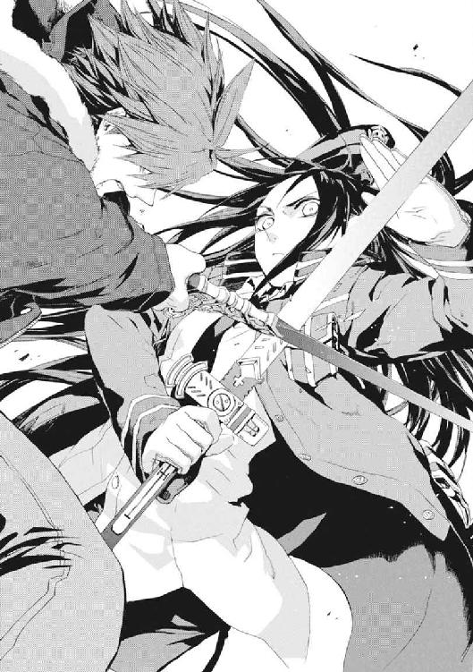
仁を動かしたのは衝動だった。それは、おとなになった彼の中にくすぶっていた炎だ。
「そういうのをひっくり返せなきゃ、ヒーローじゃないだろ！」
この戦いをバカバカしいと思う人間は、みんな生きていてほしかった。おそらく大魔術だったのだろう攻撃が、仁の皮膚まで到達してちいさな傷をつくる。だが、アンゼロッタが近すぎて背後の騎士隊は銃を撃てない。
「そういう都合のいいことしようとすると絶対に失敗するって、わかってるよね」
百メートルほど先の舞台上から、どんな仕掛けか舞花の声が聞こえる。
「理屈に合わないことをしたいって言ったら、おまえは笑うか。最後に一度だけ、賭けてみたいんだ」
目を閉じているからこそ、妹のことばは、苦く暗い記憶の底にあるものと重なるようだ。
「お兄ちゃんには向いてないよ。それじゃ誰も守れない。また自分にとって一番だいじなものを見失ってるよ」
戦いはじめた頃、高校時代の夏の日から、仁たち兄妹はこんなにも遠くにやってきた。
仁は荒い息をついて、いつ射殺されるかと恐怖しながら聖騎士将軍を食い止め続ける。足音に耳を澄ませていると、自分の息と脈拍と目の前のアンゼロッタの気配を、ほぼ雑音に邪魔されず感じる。聴覚による消去を避けるため、《聖霊騎士》の活動が鈍っているのだ。
ずいぶん離れているはずの舞花の声が、耳元でささやくようだった。
「お兄ちゃんは、その子にも希望を託せるんだ」
仁は確かにメイゼルに希望を託した。だが、リュリュとは親しいわけでもない。だから、今度のはちがうのだと気づいた。
そのとき、背筋にぞくりと鳥肌が立った。
彼は、目を閉じているのに、光を見たように錯覚する。彼自身が暗い迷宮を抜けて、今、生まれ直したように感じたのだ。
「......そう思うよな。俺は、おまえがしあわせになれたらいいと、勝手に思ってた。おとなになってもメイゼルに託してた。でも、今度は、リュリュが、俺のかわりに叶えてくれると思ったわけじゃない」
この楽園にはほど遠い世界で、仁は声をあげる。
「俺自身が、この世界に希望を持っているんだ」
声にしてみると、赤ん坊のように泣いてしまいそうだった。
「この世界に奇蹟はある」
仁たちがいる《縦坑》のはるか頭上では、今も、それぞれの理由で集まってきた専任係官たちが戦っている。深い感慨が押し寄せて、息が出来なくなってあえいだ。
「俺は、この世界を、信じられる」
変わってゆくみんなに負けないように、もう一歩踏み出した先は、ただどうしようもなく広い世界だった。
そこを見たいという欲求に押され、魔法消去を停止すると、目を開く。
光の刺激が痛くて、目をしばたたかせる。世界はひどく静かだった。瓦礫ばかりの荒れ野だが、彼の大事なものが必死で生きようと、みずから信じたものを貫こうと戦っている。
「俺といっしょに戦ってくれ」
仁の呼びかけに、騎士たちが新たに応じることなどない。だが、予想していたような嘲笑を受けることはなかった。
《黒騎士》が、魔法消去が止まってもその余波である《魔炎》を散らしている。《黄金の右手》や、他の《聖霊騎士》からもだ。
〈たとえようもなく傲慢だ。だが、痛快だ〉
それでも《黒騎士》は笑っていた。
その光景を前にして、アンゼロッタの目は微笑んではいなかった。
「あなたには、神意が聞こえていないのです」
〈すでに死んだ俺たちが、召還されたことこそ奇蹟だ。そんな俺たちの前で、こうもバカげたことが、魔法すらなく人を動かす。神意と言わずして何とする〉
エレオノールが、構えた剣の腹に額を押しつける。彼女の祈りが、鈴を鳴らすような澄んだ声が、さわやかな風のように大気を清める。
「神は偉大なり。神、生命を愛するものなり」
びりびりと刺すような緊張が、周囲を縛っていた。
次の一瞬にはすべてが力の大渦に吞まれているべき、危うい均衡がつくった静寂だ。仁の知る平和とは、そういうものだ。
だから仁のこころは、刃の上をわたるような寒気にさいなまれつつ、穏やかだ。
きずなはといえば、彼女の生存本能は、この時間を生き延びる細い望みと解釈した。もはや熟達の早業で、印が組まれる。彼女のすぐ隣に、魔法で位置移動してきたものがあった。半透明の体を持ち、銀色の甲冑をまとった長い髪の女性だ。
やさしい顔をした《彼女》は、仁たちがいるこの時間軸とはちがう歴史の人物だ。だから、《極星を追う者》にこの歴史の先にある〝未来〟からの再演魔術が効かない。それでも、《彼女》に、この位置の神音を伝える方法ならあった。そして、《彼女》が魔法でみずから移動してくることはたやすい。
この瞬間まで、ずっときずなは、切り札を隠し持っていたのだ。
「おねがいします！」
きずなにお願いされて、《極星を追う者》が、アンゼロッタが降りてしまった舞台へ突っ込む。
仁に近しい女性たちは、みんな現実主義者になるかのようだった。メイゼルの足下にも、魔法陣が展開していた。
「悪いけど、儀式は壊させてもらうわ」
いつもの平面ではなく、高さをもって三次元に引き延ばされた立体魔法陣だ。この螺旋魔法陣から発動される魔法は、《螺旋の化身》──不可侵のはずの神人遺物や自然秩序の監視者である《神》すら破壊した、絶対破壊魔術だ。
舞花の顔から、余裕が消えた。再演魔術をすり抜ける《極星を追う者》も、《螺旋の化身》も、一発逆転の可能性を秘めた脅威だ。
「そんなもの許すわけないって、わかるよね！」
仁の視界に黄色の《魔炎》が散った。時間をさかのぼった魔法消去だ。アンゼロッタの魔法が来る。
消去の発動の瞬間、仁が最後に見たアンゼロッタの体には、何十本という黒い糸のようなものがからまっていた。糸の出所はメイゼルの螺旋魔法陣の外周だ。この黒い魔力糸は、メイゼルの超高度魔術の産物だ。仁は、まったく同じものを、少女が《螺旋の化身》で神人遺物を破壊したとき、見たことがあったからだ。
だから、メイゼルの切り札となる魔法を壊さないよう、とっさに目を閉じた。アンゼロッタの方向から、風を切る音がした。仁は倒れ込んでかわす。アンゼロッタは、仁が目を閉じている必要がある弱点を狙って、人間を殺傷できる威力の飛礫を飛ばしてきたのだ。聖騎士将軍が、こういうケースで有効な小技まで使うことに戦慄した。
「くそ。聖騎士ってのは、どんな状況になっても手詰まりしねえな！」
追撃で剣がくることを警戒して、転がって逃げつつ起き上がる。
仁は今、消去を止めれば死ぬ。だが、視覚の消去を使えない。魔法消去と視覚を同時に使えない彼には、ごく近いものしか感じ取れない。
アンゼロッタも、勝負に出たのだ。彼女には、仁を斬る必要も、後方から撃たせる必要ももはやない。《螺旋の化身》発動中で動けないメイゼルなら簡単に射殺できるからだ。仁は、一刻も早くこの聖騎士将軍を乗りこえてメイゼルのところへ行かねばならない。
彼は人に頼ることを選んだ。
「エレオノール！ メイゼルの防御頼む」
いっそメイゼルの《螺旋の化身》を破棄してでも、目を開けようかと迷った。そうすれば彼が守るべき少女を救うことはできる。それどころか、視線の消去も加えればアンゼロッタを仕留められるかもしれない。
だが、それと引き替えに、仁たちは舞台上の舞花にせまる手段を失う。神聖騎士団は《極星を追う者》の再召還を許さないし、《螺旋の化身》しか打開策がないとわかれば、メイゼルを集中砲火すればいいだけだ。そんな手詰まりの状態で、メイゼルに超高度魔術を完遂させるほど、敵は甘くはない。
アンゼロッタが果敢に剣で打ち込んできた。聖騎士将軍が舞台を降りたのは、《増幅器》を〝未来〟に送る儀式が、もはや彼女の力を必要とする段階を過ぎたということだ。舞花が「敗北」だと言ったその瞬間が、すぐそこまで来ている。
仁は、血が噴き出るほど奥歯を嚙みしめた。
恐くて心臓が止まりそうだ。それでも、信じようと決めた。この世界には、希望があるのだと彼自身が言ったのだ。
かつては専任係官だった舞花が、儀式の舞台上から、勝負のときだと絶叫する。
「〝未来〟の人たち！ 勝ちたいんでしょ。他は全部外していいから。倉本きずなに干渉を集中して!!」
目を閉じた仁にも、その結果がはっきりわかった。〝未来〟から打ち下ろされる魔法は、速やかにして残酷だ。
「あああああ！ がはっ、げほっ」
遠くで、きずなの声が、身も世もない悲鳴となってほとばしった。そして、苦しげな咳と、人間の膝が落ちる音と、床に頭を打ち付ける軽い音が何度も続いた。
再演秩序は〝過去〟の人間を文字として観測し操作する。だから、きずながどれほど強力な再演魔導師でも、自分より〝未来〟から投射されてくる再演魔術には、圧倒的に不利だ。この絶叫すら、声を仁に届かせて魔法消去を借りようとしての、生きぎたない必死の抵抗だ。
アンゼロッタがやさしく語り掛けてくる。
「武原舞花が《増幅器》として〝未来〟に飛べば、どのみち啓示者たちは、その後で唯一魔導師となった倉本きずなを支配するつもりだったのです」
真実を知っているかのように、彼女は大魔術を放ちながら、仁に言い聞かせる。
「人間同士が死力を尽くしているとき、希望など存在できません。倉本きずなは、生きのびても総力をあげた再演干渉で支配されます。たとえ彼女が死のうと、再演大系の自然秩序がこの世界に強く根付けば、新生児として再演魔導師が生まれるようになります。彼女にとって、〝生〟と〝自由〟を両立できる未来など、ありはしないのです」
また魔法が、顔にわずかに当たった。大魔術の余波がはるか後方の壁を砕く。仁の今の魔法消去は、魔法史に残る天才である彼女の魔法すら視覚なしで破壊し尽くす。
必要な魔法まで壊さないようまぶたを閉じているから、世界は暗闇だ。見えないことが、想像を通して仁のこころをどんどん不安へ引きずってゆく。わからないという不安を、人間はどこまでも振り切ることできない。だから、未来が恐い、失うことに怯える、他人を疑う。
遠く、銃声が響いた。大切なものを奪ったかもしれない音だ。
激しい爆発音が続く。
気がそれた仁に、アンゼロッタが魔法で石つぶてを撃ち出す。魔法消去では防ぎ切れないそれを《剣》で払う。体勢の崩れた仁に剣が叩きつけられる。
「神聖騎士団は、一万年の歴史で戦いみずからを問い直した末に、ここへたどり着きました。あなたが、その場の感情で止めることなど不可能です」
更に、着弾地点で爆発して威力が持続する魔弾が、豪雨のように命中する。魔法消去殺しの魔術は完全には消しきれないが、大魔術の追い打ちを受けるよりはと前に出る。
腹の底から言った。仁は、この声を聞いてほしいからだ。
「信じている」
苦しくても、最後の好機なのだ。
メイゼルが、リュリュが、きずなが、エレオノールが、《極星を追う者》がいる。仁がアンゼロッタを食い止めていさえすれば、事態を打開できると信じた。女の子たちに危険なことを全部まかせる気かと、苦さと怒りが彼自身を苛んだ。
血がにじむほど奥歯を強く嚙みしめた。見えていなくても、勝ち気で誇り高いメイゼルの顔が脳裏に浮かんだ。
アンゼロッタの声は、怒ると本当にメイゼルによく似ている。
「人間には正しいことなどできません。《神》による救いを破棄するというなら、それは救われた世界と歴史を壊すということなのですよ」
「その声で、そういうこと言うなよ。自分の力でしあわせぐらいつかんでみせるって、そのくらい言ってみせろよ」
だが、剣と魔法を叩きつけ続ける《至高の人》もまた、怒っていた。
「勝手なことを。〝未来〟からの干渉とは、あなたがた自身の子孫たちからの願いではありませんか。自分たちを生んでほしい、自分を殺さないでほしいという、あなたがた自身の子どもの声ではありませんか」
斬り合いの最中、踏み込みをためらう。《未来の再演魔導師》ということばが、すでに再演世界となったこの世界では、とてつもなく重かった。
「なぜ自分の子孫たちを愛せないのですか。子どもたちは、こんなにも必死にあなたがたを愛しているではありませんか。なぜ子どもたちを、親が怪物あつかいするのです。さあ、こころあるなら、よろこび、笑いなさい。自分たちの〝未来〟だと認めなさい。あなたがたの〝未来〟を愛しなさい」
それは彼らを縛る理由にはならない。再演世界を選択しない歴史にも、自分たちを生んでほしい子孫がいるはずだからだ。なのに、否定できない正しさが、意味のない熱を胸にこみあげさせる。
「きずなちゃんが、〝過去〟を変えれば助けてやれた悲劇を見せられるのって、こういう感じなのか。自分の目の前のことじゃない、過去だの未来だのの責任を負わされるってのはきついよな。くそ、勝手なこと言うなよ。そんな責任取り切れるはずないだろ」
だが、感情は残酷だ。
「産みません......」
きずなが、遠くでうめいた。泣き声で、だが深い怒りをこめて言い切った。
「あなたたちなんか、ぜったいに産みません」
濃厚な憎しみが、足下をぬかるませるようだ。
仁はそのとき、アンゼロッタの足音が想定していたより遠いことに気づいた。彼女ならば危険な大魔術を発動できるだけの、間合いを与えてしまった。だが、その距離を詰めようとしたとき、仁は足を止めた。
アンゼロッタの胸から、何かを取り出す衣擦れがしたのだ。仁には想定外だった行動で、だがよく知っている死の予感のする音だ。
《コンサートホール》に乾いた銃声が、アンゼロッタの手元から響いた。仁は、《増幅器》を設置して再演秩序を安定させることへの、彼女の執念を見誤っていたのだ。
だが、仁を呆然とさせたのは、彼に弾丸が届かなかったことだった。
「......生きていますか」
リュリュ・メルルの声が間近で響いた。そして咳き込む声と、血とおぼしき大量の液体がこぼれ落ちる音が続いた。仁にとってはなじみ深い死の音だ。
思わず魔法消去を停止して、目を開けていた。アンゼロッタに組み付こうとした少女が、膝から崩れ落ちるところだった。
「どうしてだ」
なぜ彼女が仁をかばったのか、わからなかった。
自然に、声を張り上げていた。助けを求めてあたりを見回す。
「《黒騎士》！ 助けてやってくれ」
「あの人は、もういません。わたしたちを、最後まで守ってくれました」
アンゼロッタが、まだ《螺旋の化身》の黒い魔力の糸にからみつかれたま、拳銃を構えていた。
胸を撃たれた少女が、また咳き込んだ。口元からしぶきになった血がまた床を汚す。
仁の体は衝動のままに動いていた。仁を射殺しようとしたアンゼロッタの手を、リュリュがつかむ。二度目、三度目の銃声が響き、少女の細い体が痙攣して力を失う。
アンゼロッタとの間の三メートルほどの距離を詰める。アンゼロッタが構え直そうとした拳銃を、またリュリュの指が引きずり下ろす。
《至高の人》に、拳を叩きつけていた。拳銃がアンゼロッタの右手から落ちて床を転がる。
「いい加減にしろ」
聖騎士将軍はぐらついても倒れなかった。彼女が、仁に自分を殴らせたような気がした。だが、彼女が考えていることなど、彼にははかりきれない。
「リュリュ・メルル、あなたがなぜ、わたくしたちの妨げとなろうとしたのですか」
アンゼロッタの瞳には、強い意志がこもっている。
力尽きて横倒しに倒れたリュリュが、苦痛に耐えかねたように仰向けになった。死を覚悟しているのだろう彼女があえぐ。
「人に執着してきました。......不信がわたしを人間にしたのです」
仁の身体がわなないていた。あらゆるものが悪い方に転がることが、この世界の基本ルールであるかのようだ。自分と信念を貫こうとした人間たちが、衝突して自然に斃れてゆく。ここは楽園には遠すぎる世界だ。仁が希望を持とうと、事実は変わらない。
左頰が腫れはじめたアンゼロッタが、じっと彼へ視線を注いでいた。力を込めたその目を、慈悲深く微笑ませる。
「悲しく腹立たしいでしょう。だから人は祈りを捧げました。不満足な世界が、もっとよいもののはずだと思うとき、神はあなたのそばにいます。神こそは、苦しむ人が希望を託す半身、人間のよき半分なのです」
神こそ希望だと言われて、仁は怒り損ねた。信じることで、世界がマシなものに思えるような〝それ〟は存在する。世界が救われるものに思える体験がある。仁にとって、ちいさなメイゼルとその成長が、まさに〝それ〟だったからだ。
仁は、腹と胸に三つの痕が開いたリュリュの体を見おろす。息は細く、このままでは長くは保たない。
「おい、だいじょうぶか？ 生命維持魔術を......」
だが、それができるメイゼルは、舞花の魔法を補助する《本》と書見台を、《螺旋の化身》でとらえていた。舞花を止めさえすれば、仁たちの勝ちだ。《螺旋の化身》は完成に近づいている。儀式を止めるため、少女は舞花ではなく神人遺物を消滅させることを選んだ。この土壇場でも、彼女が必殺の魔法で舞花を直接殺しにかからなかったことは、非合理的だが、仁が求めてきた通りだった。
《極星を追う者》は、舞花への攻撃よりも、きずなを後列の《聖霊騎士》からの激しい魔法砲撃から守ることを優先していた。
そのおかげで、きずなはまだ生きていた。だが、きずなは再演干渉に支配されて右肩を外され、床に這い蹲らされていた。リュリュの命を頼めそうなのはエレオノールだけだ。
だから、メイゼルが、自分の命綱であるエレオノールを叱咤した。
「行ったげなさい！ あの子、死にかけてんでしょ」
それは、死のうとしている少女を中心に、全員が生命をそれぞれの信念に賭けた瞬間だった。歌姫が思い切った。抜剣したまま駆けるその一歩ごとに、砂埃が派手にあがった。足の裏を魔法で地面と強く反発させて加速する、神音大系の古い高速機動魔術だ。
五十メートルを七歩で駆けて、エレオノールはアンゼロッタの脇に滑り込む。止まりきれない勢いごと、聖騎士将軍へ渾身の突きを放つ。おのれ自身を剣のただ一点に集中するような入神の一撃を、アンゼロッタは剣で受けようとはしなかった。超高位の神音魔導師の《光背》は、人力で突破できる強固さではない。
「武原仁、アンゼロッタ・ユーディナは私にまかせなさい！」
「リュリュを助けてやってくれ、このままじゃ長くないぞ」
仁は、エレオノールを信じた。誇り高いメイゼルが、無防備になってでも自分の運命を信じたようにだ。
《至高の人》が愛情をたたえた目を細める。瞬間、時間をさかのぼって発生した《魔炎》が、世界を埋め尽くすようだった。
「あなたがたは、ふたりとも、わたくしを甘く見すぎです」
発動間近の《螺旋の化身》を破壊しないよう、目を閉じて魔法消去を発動する。仁の強化された消去を突破して熱風が押し寄せた。仁が、たたらを踏んだ。
リュリュは死ぬ。再演大系にとって都合がよいから生かされていた人間が、それに刃向かったからだ。けれど仁は、自らまぶたを閉ざした闇の中、そうなるだろう〝当たり前〟を乗りこえて、先に進めると信じた。
「もう、俺が迷う時間は終わったんだ」
自分に言い聞かせた。人の命がかかっている。ヒーローごっこをしている場合ではない。それでも、ベストを尽くしてどうしようもないからと簡単に取り下げるものは、信念ではない。
「信じなさい......」
瀕死のリュリュのかすれた声だった。
「お姉様、......わたしの楽器を託します。《黒騎士》と......、契約してください」
彼女が身を起こす気配がした。濃厚な血の臭いが、鼻腔に飛び込んでくる。
「人間が......奇蹟を起こすというなら、......わたしが、お姉様をゆるしてさしあげるのは、奇蹟ではありませんか」
現実と救われる夢の間を歩くように、仁は前に進む。その前に立ち塞がろうとしたアンゼロッタを、彼は渾身の一撃で押し返す。強い魔法消去の下で、仁とエレオノールを同時に相手にするのは聖騎士将軍といえど容易ではない。
「聞こえますか」
硝子の鈴を転がすようなエレオノールの声が、震えていた。そして、大喝した。
「アンゼロッタ・ユーディナ、人間の声を聞きなさい！」
直後、仁ほど強固に消去に守られているわけではないから、エレオノールが聖騎士将軍の魔法で吹っ飛ばされる異音がした。剣を床に突き立てて、危うく転倒を免れている。
「......《沈黙》、自分の妹のところへ行ってください」
千切れそうに細い声で呼ばれて、はっとした。剣戟にまぎれて、苦しい息の下からリュリュが声をかけてきたのだ。ぞっとするほど身軽な、様々なものが吹っ切れた声だった。
「わたしを、お姉様と......ふたりきりにしてください」
仁にできることなど、もうありはしなかった。
「ありがとう」
礼を言った。返事はなかった。少女は、残り少ない命をこれ以上仁のために使わなかった。
そして仁は、重い《剣》を引きずるように、ただ足を進める。メイゼルを、魔法使いでない仁が援護してやるには、《螺旋の化身》以上の脅威になって舞花に迫るよりないからだ。
斃れた少女の脇を通り過ぎたとき、地面は血でわずかに粘ついていた。
アンゼロッタとエレオノールの戦いは、宗教戦争であるがゆえ苛烈だ。目を閉じているからこそ仁には、アンゼロッタの剣質が、ここで確実にエレオノールを殺しておきたい、前のめりなものであることを聞き取れる。
メイゼルや《極星を追う者》のやさしい魔法を消さないよう、まぶたを閉じて瓦礫だらけの荒野を歩く。
緊張が極限まで感覚を開かせるようだ。音だけで、三十メートルほど離れていたきずなの様子がわかった。
きずなが、呻きながら足を引きずっていた。〝未来〟からのすさまじい再演魔術の圧力の中で、彼女は立ち上がったのだ。
「武原さん、信じてください」
悲鳴をあげすぎてがらがらになっても、きずなの声は穏やかだ。そのあたたかみに、胸が詰まりそうだった。
見えないからこそ、あたたかい道が足下に引かれているように思えた。そして、彼は信じてくれる人たちに背中を押されている。
「頑張ったな。きずなちゃんは、魔法なんて関係なしに本当にすごいよ」
舞花がいる再演儀式の舞台まで、仁を守るものはない。だから、ひとり《剣》を手にまっすぐやってくる魔法消去者など、銃器には撃ちやすい標的でしかない。
銃声が響いた。足もとで銃弾が土しぶきをあげ、すぐそばを何発もの弾丸が通り過ぎる。だが、命中弾はない。きずなが再演魔術で、射手の狙いをわずかにズラしてくれたのだ。
仁が疑ってもし目でも開ければ、視覚の消去できずなの魔法が破壊されて、すぐにも射殺される。舞台すぐ奥のピットに潜む騎士たちの銃撃は、間断なく続く。
メイゼルのいたあたりで、グレネードのすさまじい爆発音が響いた。恐怖で、全身が干からびたように強張る。
「目を開けたり、消去を止めたりしないで。そんなことしたらゼッコウするわ」
《螺旋の化身》を制御中のメイゼルが、首をそちらに向けかけた仁を鋭く制した。メイゼルは、まだ小学生だが高位魔導師だ。
銃声と熱に煽られてよろめき、怯えに頭がおかしくなりそうになる。楽しかった今年の日々を記憶から掘り出して、すがった。本能に逆らい、あえぐように口で息をしながら、前へ進み続ける。
百メートル近くも瓦礫を踏んで進む間、仁の体に直接到達する魔法は一発もなかった。騎士たちには、仁が、《魔炎》を背負った悪魔に見えているのかもしれないと思った。
だだっ広い客席を突っ切り、舞台まで十メートルを切ったころ、舞台上の舞花の声は、すこし楽しそうだった。
「単純な方法で来たね、お兄ちゃん。これが一番危険だって出てたんだけどね」
「こんな方法まで予想してたのか」
「魔導師公館の記録だと、東郷先生の勝ちパターンは、正面から近づいて斬るだけってのが多かったんだよ。八咬さんも同じ。感覚するだけで相手を無力化できるカオティックファクターは、これができると強いんだよね」
声を頼りに、わずかに歩く方向を調整する。
「でも、きずなさんが、ここまでしぶとかったのは、予想外だったかな。メイゼルちゃんの天才も、エレオノールさんの潜在能力も、リュリュさんがここまでやったのも。これだけ読み損ないが重なったら、さすがに漏れてくるね」
仁は、舞台に《剣》を突き入れた。黒刃は、抵抗なくスッと石材を切り裂いた。
魔法を破壊してから、高さ五十センチメートルほどの舞台に登る。妹はもう死んだ。ここにいるのは、最近再生された複製品だ。わかっているのに、仁の唇は歪んだ。
まだちいさかった頃の妹の声が、舞台に響く。
「──わたし的に、いちばんナイと思ってたのは、お兄ちゃんがみんなを信じたことだったんだけどね」
仁は《剣》を横薙ぎに打ち込んだ。首をはね飛ばすはずの一撃が、空を切った。
舞花が移動した足音はなかったのに、声が舞台の更に奥からする。
「機械化聖騎士師団の音響技術は、神音魔法を機械化できる水準なんだよ。音を頼りにやってきたお兄ちゃんを、だますくらい簡単だよ」
妹は、仁が目を閉じて魔法消去してきた場合を想定していたと言った。つまり、この音響装置による偽装と、舞台の巨大さ自体が、舞花たちの用意した最後の罠なのだ。
必死で周囲の気配を探る。舞台の幅は、仁たちが逃げ回った客席と同じ幅三百メートルという途方もないものだ。
目を開ければ、舞花の位置はつかめる。だが、そうしたが最後、仁は敵の銃器を無力化してくれているきずなの魔法まで破壊してしまう。次の瞬間に彼は射殺される。この高位以上の魔導師に包囲されたド真ん中で、魔法消去を止める選択のほうは論外だ。
「あとは、けっこう迷わずわたしを殺しに来たから、びっくりしたかな。お兄ちゃんにはもう、わたしやお母さんやお父さんのとは違う、自分の家があるんだね」
「家族の不満をどうこうしたいなら、今すぐこんなことはやめろ。おまえだって、死ぬ前はおとなだったんだから、口に出さないことのひとつやふたつ、あることくらいわかるだろ！」
たぶん仁たち兄妹は、中学生でふたりで暮らしはじめたころ、決定的に間違えた。世界をどうこう怒る前に、彼らはまず一番近いおとな、姿を消した両親を思いきり恨むべきだった。
「舞花、本当に世界を変えるつもりか！ 《増幅器》を〝未来〟に送ったら、再演秩序はもっと強くなるんだろ。再演世界なんて本当に必要なのか！」
闇の中、声を振り絞る。すべてが闇の中の血みどろの殴り合いで、正確な見通しなど誰も持っていないかのようだ。それでもこんな舞台の上で世界が決まるのは、不公平に思えた。
「わたしは、お兄ちゃんが信じた日が来るなんて、思えないよ。誰も泣かない世界なんて、現実的じゃないしさ。でも、それに近いものは作れるんだ」
哀しさと怒りで頭がおかしくなりそうになりながら、舞花の声の場所を狙って切り裂く。そこにも手応えはない。
舞台の奥行きは二十メートル、その奥は銃を持つ騎士が潜む、一段低いピットだ。そこで銃を構えている騎士たちの押し殺した呼吸音が、はっきりと聞こえた。だが、舞台に上がる者はいない。ここは兄妹が殺し合う、人の道から外れた荒れ野だ。
「お兄ちゃんは世界を殺そうとしてる。再演世界は、妄想でも神話でもない、本物の文明で世界なんだよ？ お兄ちゃんが信じてる〝一番〟じゃなくても、〝二番目にいい世界〟かもしれない、願いと歴史の果てに作られたものだよ。それを壊すことが許されるのかな」
舞花のことばにも、騎士たちは一切反応しない。仁に気配を読まれて舞花の位置のヒントを与えることがないよう、全員が明らかに訓練された整いかたで息を合わせていた。
これは舞花ひとりとの勝負ではない。騎士たちは泥沼のつかみ合いを覚悟して、だからこそ準備を重ねたのだ。綿密な計画を作り実現のために厳しい訓練を重ねることができる、これは祈りそのもののような神音大系文化との総力戦だった。
「許すかどうかを決めるのは、今、生きてる俺たちだ！ 〝未来〟から指図される筋合いはない」
神経が緊張でよじれるようだ。仁たちの世界の戦争とは、こうした文化と文化、集団と集団のぶつかり合いだった。だから絶望の中を一歩ずつ歩むしかなかった。ベストを尽くそうとして祈りを背負って、それでも押し潰される悲劇が当たり前だった。
「お兄ちゃんが、目を閉じてそう言っても、わたしひとり止められてないじゃない。お兄ちゃんが信じてることは、お兄ちゃんには実現できない。だから、もっと向いてる人が、現実的なかたちに落とし込んで現実にしたものが、再演世界なんじゃない」
舞花の言い分を聞いて、仁にはひとつ腑に落ちた。仁は、すこしなりと、できることがあるから、身近な力のない人を守ってやりたかったのだ。
「世界を変えるチャンスがここにあるとしたら、お兄ちゃんなら戦う？ 今しかできない賭けがあるなら、わたしは〝やる〟よ。何を裏切ることになっても、絶対にね」
「この、バカ野郎が！」
どうしようもない怒りが衝き上げて、吐き捨てた。だが、感情が呼吸ひとつぶん《剣》を遅らせた。
気配がすぐそばで揺れた。反応した仁の切り上げが、何かに当たった。ぽとりと軽い音が舞台に落ちる。たぶん、舞花の腕だ。
「さよなら、お兄ちゃん──」
奥歯を嚙んで、妹の頭を縦二つに断ち割る上段の一閃。きっとすさまじい形相になっていた仁の追撃は空を切る。
「次に会えても、そのときわたしは《増幅器》だから、もう、こういうこと言える人格は残っていないかもだし」
そして、舞花の声はそれきり聞こえなくなった。待っても、待っても、もう二度とだ。
「どこだ!? どこだ、舞花！」
──実体を持たない何かの《波》に押されたようだった。
舞台の一点から、大気が強く歪んだ。
空洞の至る所から悲鳴があがっている。すぐそばの聖騎士が潜むピットからも、人間が潰れるようなうめき声が聞こえいた。
「どうなってるんだ？ きずなちゃん、メイゼル！」
周囲を確認するため、思い切って消去を停止して目を開く。舞台にはちいさな子どもの腕が一本だけが転がって、舞花の姿はない。そして、舞台の中心の書見台と《本》を見ようとした瞬間、仁は吹っ飛ばされていた。
魔法消去を再発動はしなかった。《螺旋の化身》の立体魔法陣が、儀式を補助していた神人遺物をしっかりと捕獲していたからだ。
硬い石の舞台を転がりながら、奥のピットから兵士のひとりが銃を突き出しているのを認めた。だから、立ち上がらず、無様に這って舞台から逃げ降りた。二秒遅れて、仁を狙った火線が石の床に跳ねる。
舞台の五十センチメートルの高さが、彼の命を救ってくれた。砂埃まみれの地面を舐めるように這って身を縮める。
舞花の姿は、舞台から完全に消失していた。それは、《増幅器》の設置魔術が完成してしまった、仁たちが敗北したということだ。
きずなの右手が、操り人形を動かすように不自然に持ち上がった。気弱に目を泳がせかけた彼女の目つきが変わった。歯を嚙みしめて、一ヶ月前は武器を持ったこともなかった左手を、みずからの右肩関節に思い切りめり込ませた。指を強引にねじる。
「ああああぁぁあっ！ あっ、ぐぅ、あっ!!」
きずなの制服の右肩が、がくりと不自然に落ちていた。〝未来〟から支配されて再演魔術を使わされるのを避けるため、みずから右肩を脱臼させたのだ。
「舞花はやっぱり未来に飛んだのか？ 間に合わなかったのか！」
仁は、頭ではわかっていることを、否定してほしくてことばにした。改めて襲ってきた恐怖に、指先が冷たくなった。
舞花が消えた途端、再演干渉は爆発的に強力になり、きずなが支配されている。つまり本当に《増幅器》が設置され、完全に勝負は終わったのだ。
仁の全身が突然こわばった。仁の身体も再演干渉によって操作を受けているのだ。自分の意志では指一本動かなくなった。魔法消去せねばと焦り、そして気づいた。
舞台上の遺物を《螺旋の化身》にとらえたメイゼルを、もう守りきれない。
「メイゼル、逃げろ！」
だが、悲鳴を聞いても、メイゼルは足下から這い上がった立体魔法陣を制御し続けている。彼女だけが、不可視の《波》に人々が押さえつけられる中、崩れずに立っていた。属する自然法則ごと、標的を歪めて破砕する超高度魔術が、再演干渉すらをも妨害しているのだ。
無防備に集中砲火を受けることが確実なメイゼルが、強く仁を制止する。
「せんせ、魔法消去しないで」
その切実さが仁を打った。
待ってしまった次の瞬間、すさまじい銃撃が少女を襲った。ロケット弾らしい炎の矢すらもが、容赦なく華奢な身体に命中する。
土煙があがった。人間を木っ端みじんに吹き飛ばすには充分な威力の、生きているはずがない猛射だった。
仁はこれまでもメイゼルを失いかけた。体内で魔法を発動されて臓器を吹っ飛ばされたところにも、狙撃を受けて瀕死になったところにも、魔弾で腹を貫かれたところにも立ち会った。だが、今回は瀕死ではなく即死が確実だ。
舞い上がった土埃と煙が吹き流されるまで、仁は呼吸ができなかった。
だが、再び彼女の姿が見えたとき、本当に何かが終わった気がした。
メイゼルは無傷だった。傷ひとつなく、螺旋魔法陣の中心に二本の足で立っている。
仁は、その魔法を知っていた。
「自己円環──」
考えるということが、まともにできなかった。仁の助けなしで、メイゼルは、円環大系の致命的な弱点である防御の弱さを克服してみせたのだ。
仁たちは、メイゼルが火力と機動力、そして仁が魔法消去での防御を分担して戦ってきた。だが、鴉木メイゼルは、《雷神》や《九位》と同じ鉄壁の防御魔術を使っている。今、少女は彼なしでも戦場で生き残れる力を手に入れたのだ。
「その神人遺物、時間を安定させてるのよね！ それを補助具にして、未来へマイカを飛ばして、儀式が終わったから、再演魔術をここに効率よく流し込みはじめたのよね」
突き出していた右手を、いつか女王になる少女が、誇示するように強く握る。遺物を捕獲していた螺旋魔法陣が、一気に収縮をはじめる。
きずなが、血を吐くように悲鳴をあげた。
「時間の流れが、激震しているのがわからないのですか。《増幅器》を時の果てまで飛ばしたばかりだというのに、こんな不安定なときに《祈禱書》を破壊したら」
それはきずなの口調ではない。もっとざらついた、〝未来〟の魔法使いたちが彼女を操って無理矢理あげさせた声だ。
「〝未来〟からきずなを操って、それでお願いなんて、シュミがわるいのね。そういうの、大スキよ」
メイゼルは、淫靡なよろこびにあめ色の瞳をとろかせ、薄桃色の唇を舐める。少女は、強いものが這い蹲るのを見るのが大好きな、嗜虐趣味者なのだ。
「ごほうびに、すっごいものを見せたげる。きずなの目から、よく見えてるでしょ、あたしたちを〝未来〟から変えようとしてる魔法使い」
破壊不能なはずの神人遺物が歪む。世界を支配するかのようだった干渉の《波》が、仁の身体からも突然引きはじめる。
早熟の天才が、高らかに宣言する。
「これが、お母さまが《神》を砕いた力よ!!」
そして、書見台と《本》が、跡形もなく消失した。
見えない《波》という巨大な力を放出していた太陽が、まるごと姿を消した。
その圧力を生んでいたエネルギーが失われ、周囲の力の均衡を取ろうとした世界そのものが、波打った。
光が直進することを止めたかのように、あらゆるものが当たり前に見えなくなった。視界は色の洪水になる。
仁は、地面に伏せていたはずなのに、身体が何にも触れていないことに気づいた。
意識が遠くなる中、ふと、超高度魔術の連発に耐えきれず、世界が壊れたのではないかと思った。
†
倉本きずなにとって、そこは懐かしさを感じる場所だった。
真っ暗なここには天地の差もなく、どこまで広がっているかすらわからない。
ただ、闇の中にぽつりと浮かび上がるように、〝倉本きずな〟がいる。何十人、何百人という〝彼女自身〟がいる。十七歳の同じ年頃の姿をしている〝自分〟もいれば、小学校低学年くらいの子どもの姿の〝自分〟もいる。中には子どもがいそうな四十代、二十代で妊娠している〝自分〟もいる。
ここは時間の流れの外側にある、〝世界の果て〟だ。だから、異なる時間の流れ、異なる歴史を生きている〝きずな自身〟が、お互い出会うこともできる。
きずなはかつて、自分の生きている歴史を再演魔術で破棄しようとしてここに流された。だから、また、この〝きずな〟だらけの闇に引きずり込まれたことがひどく後ろめたかった。
メイゼルより年下に見える一番年下の〝きずな〟が、彼女に話しかけてきた。
「ひさしぶりだね、〝最後の魔法使い〟」
〝自分〟自身であるはずの人にそう呼ばれて、嫌な気分になった。
「どうして、もう一回こんなところに流されてきたんですか」
きずなは、ちいさな〝きずな〟のそばまで暗闇を移動した。このちいさな〝きずな〟は、彼女よりも魔法にくわしい。
「《大崩落》の、規模がちいさいやつが起こったんだよ。お姉ちゃんの歴史では円環世界で、十三年前に《神》が機能停止くらったでしょう。あれと似た現象だね」
「それじゃ、わたしだけがここに飛ばされたんですか。みんなは無事なんですか？」
「《コンサートホール》の時間だけが、たぶん他より何万分の一秒かズレる程度で復帰すると思う。これで死ぬ人はいないけど、全員同じ位置に戻ってくるかは微妙かな。まあ、《増幅器》を《本》の最後のページの超遠未来に飛ばして、それからすぐに《螺旋の化身》の発動だもん。時間の流れに直接当たる大魔術が二連発じゃ、時間秩序が、進行をいったん止めて異常の原因を散らしても、まあ妥当かな」
そしてちいさな〝きずな〟は、すこし考えるような仕草をした。
「ひょっとしたら、この歴史のメイゼルさんと、アンゼロッタって人は動けるかもだけど。あの人、メイゼルさんの螺旋同位体みたいだし」
螺旋同位体と言われても、何のことか彼女にはさっぱりだった。
「《破滅の化身》の分身を、円環大系の本当の秩序のかたちである螺旋で作ったやつって言って、わかるかなあ......。完全な《螺旋の化身》は、自然秩序そのものを歪めて壊すから、ひとつの魔法秩序が足場じゃ発動させられない。で、円環魔導師としての自分だけじゃ耐えられない反動を受けるために、メイゼルさんが、神音大系の自分〝も〟発生させたの。《本》で調べたらわかるだろうけど、アンゼロッタって人、たぶん普通には生まれてないはずだよ」
ちいさな〝きずな〟は、きずなが腹を立てていることに気づいた様子で、言い足した。
「無事かよりは、この歴史のグラフェーラおばさんみたいに、時間を何年か吹っ飛ばされてる心配をしたほうがいいかな。たぶん、〝最後の魔法使い〟なら、こういうのくわしいんだろうけどね」
話してもらっても、苛立つばかりだった。一番大事なことを教えてもらえないままだからだ。王子護ハウゼンも、アリーセ・バンシュタインも、訳知りな魔法使いはみんなきずなをそう呼ぶ。本人だけが事情を知らされていない。
「〝最後の魔法使い〟って何なんですか！ それはわたしのことだって言うし、話してたらわたしのことじゃないって言うし」
きずなの悲鳴に気づいたように、周囲の〝きずな〟たちもこちらに顔を向けた。誰もが沈痛な面持ちだ。
「〝わたし〟たちの前にいるきずなだけど、今ここにいるきずなじゃない。この歴史を進めていった先にいる〝未来〟のあなたのことだよ」
そして、物知りのちいさな〝きずな〟は、ようやくきずなに基本的な知識が欠けているのだと得心した様子だった。
「再演大系の自然秩序では、〝未来〟にいる再演魔導師が一方的に〝過去〟へ干渉する。わかってるよね？ だから、再演魔導師がいっぱいいて戦った場合は、最後には、『一番未来にいるのは誰だ？』っていう、すごく単純なところで勝負がつくんだ」
だから〝未来〟の再演魔導師たちは、〝過去〟であるきずなたちの時代を一方的に支配しようとした。きずなは《神》の《降臨》に荷担させられ、この世界は再演世界になった。
「〝最後の魔法使い〟っていうのは、そういう再演大系の魔法使いの頂点だよ。世界中魔法使いが全員死んじゃって、自分が〝世界最後の魔法使い〟になるまで生き続けた魔法使いのこと。きずな以外の再演魔導師が〝未来〟にひとりもいないなら、絶対に操られない無敵の魔法使いだよね」
あどけない唇から出た、ひとりもいないということばには、ひどく不吉な匂いがした。
「けれど先に、武原舞花が《増幅器》として、人間が死に絶えた遠未来に放り出されちゃった。再演魔導師が一番純粋に力を振るえる場所って、他に人間が誰もいない状態だからね。きずなが〝最後の魔法使い〟になっても、そのきずなすら死んじゃった未来、世界って《本》の最後のページに《増幅器》がある。放っておいたら、それから先、《増幅器》にはいくらでも歴史改変を続ける時間があるから、きずなは人生もうムチャクチャに操られるしかない」
「そんなこと言っても、再演大系の魔法使いだって、どうせわたしの他にも、いくらでも自然に生まれるって言うじゃないですか......」
「《増幅器》は再演秩序を忠実に実行するために、そう仕向けるだろうね。でも、操り人形にされて用済みになったら殺される人生がイヤなら、毎日を戦うしかないよ」
「操られるのイヤがってる人はいっぱいいますよ。誰かがきっと壊してくれますよ」
「でも、《増幅器》を送り込んださっきの神音魔術で、これから〝それ〟を破壊する刺客を送り込んだって、絶対に《増幅器》に邪魔されるよ。再演秩序を極めても、《増幅器》の妨害をくぐり抜けて、一日以上〝未来〟に人を飛ばすの、ムリだと思う。でも、《神人》が魔法を極めたら、たぶん一日なら自分より〝未来〟に人間を送れる。あなたがこれから何をすればいいかわかるよね？」
《増幅器》となった舞花がいる場所──人が完全にいない超遠未来の一日前まで、〝最後の魔法使い〟が生き続ければ、手は届く。理屈は合っているとしても、頭がおかしい結論に思えた。
「そんなに長いあいだ、ムリに決まってますよ。溝呂木さんだって言ってました。カオティックファクターはこの世界の人間がねがう〝救いのかたち〟だって。だったら、わたしじゃなくても再演魔導師だって、これからどんどん生まれてくるじゃないですか」
ちいさな〝きずな〟も他の〝きずな〟たちも、何も言わなかった。だから、彼女の体は芯から冷えた。死にたくなければ、新たに自然発生した再演魔導師の命を、彼女が奪うのだ。事実、きずなが〝過去〟を覗いたとき、最初の《神人》は、〝未来〟からの干渉で自分を殺そうとした娘を絞め殺していた。武原舞花がこの時代にいなくなって、再び《神人》になったきずなには、生き残る力がある。
そう、生きることは呪いだ。
どの〝きずな〟が言ったのか、わからなかった。
「あなたは戦うことを選んだ──」
気持ち悪くて、寒気がして、吐きそうだった。早くここから逃げ出したかった。
「......そんなこと、他のだれかがやればいいじゃないですか！ おかしいですよ。わたしがやらなくても、もっと強い人が生き残ればいいじゃないですか」
「〝最後の魔法使い〟になれるのは、条件があるんだよ。まずは、《神》が降臨して《増幅器》を送ることにも成功した歴史上にいる〝わたし〟であること。でないと、〝人類最後に生き残ったひとり〟になっても、やっつける相手いないもんね......。それから、さっき言ったみたいに、最後まで生き残る力が必要だから《神人》なこと。でも、それだけでもムリなんだ」
〝きずな〟は重要なことを言おうとしている。けれど、きずなは聞きたくなかった。それは間違いなく最低の運命だからだ。
「もうやめてください！ これでも、いろいろ迷ってきたし、耐えてきたんですよ。それなりにつらかったんです。......自分どころか他人の人生にまで意味とか押しつけるなんて、そんなのワケわからないですよ!!」
「......最後に、〝最後の魔法使い〟には一番大事な役目があるんだよ。歴史の最後まで生き延びた〝最後の魔法使い〟は、自分が死んで〝人類が絶滅する〟とき、《増幅器》にぶつけて破壊する刺客を魔法で呼び寄せなきゃいけない。しかも、《増幅器》ってさ、正直、人間だけど、《神》と直結して再演秩序そのものになってるからムチャクチャな強さだよ」
自然に涙がこぼれていた。きずなは生きぎたない人間だ。卑劣なところもあるかもしれない。それでも、恥ずかしさくらいは知っている。
「......イヤですよ。そんなのイヤに決まってるじゃないですか！ なんで、そんなことまでしなきゃいけないんですか......。〝最後の魔法使い〟にそこまでさせて、〝その人〟におねがいまでさせるんですか！ そんなの、どんな顔してすればいいんですか？」
「しかたないよ。再演大系は人間を操る魔法で、それ以上でもそれ以下でもないもん。メイゼルさんの《螺旋の化身》みたいな、《神》を殺す魔法がないんだよ。歴史の命運を賭けた一発勝負だから、刺客役は三つの条件に合った人じゃないとダメ。ひとつは、再演魔術を《神》からだろうが完全に防げること。ふたつめ、魔法で呼び寄せられる人物であること。みっつめ、再演秩序そのものの防衛本能で動く武原舞花の肉体に、勝てるくらい強いこと」
世界は闇だ。
「恥しらず！ ......もうやめてください」
「あなたは、もう、〝その人〟と、仲良くなってるよね？」
きずなの顎が震えた。何もことばにできなかった。
誰も何の助け船も出してくれなかった。ここにいるのは、全員きずな自身だからだ。
だから、耐えきれなくなってきずなのほうから口を開いた。
「......《増幅器》がいる、人間が絶滅した時代まで送ったとして、......〝その人〟はどうなるんですか！ もどってこられるんですか？」
絶叫に、ちいさな〝きずな〟がどう答えたか、聞こえなかった。けれど、どうなるかなどわかっていた。人間はひとりでは生きられない。たとえ勝っても、のたれ死ぬまで世界でただひとりの、悲しい流刑者になるのだ。
再演世界を破壊できれば、もうこれ以上、再演干渉で人生をぼろぼろにされるひとは増えないかもしれない。けれど、誰もしたくない仕事を押しつけられたように思えた。
「しあわせになりたいだけなのに、こんなことしなきゃいけないなんて、おかしいですよ。魔法使いになっても、ぜんぜんしあわせになれないじゃないですか！」
自分の足で立つこともできないくらい憔悴していた。
もしも出会ったときから今日までのすべてが、このためなのだとしたら、時間を巻き戻してほしかった。そして、再演大系に勝つことなど、人間には不可能に思えた。
そのやり直したいという願いが、救いのかたちになった魔法が、再演大系だからだ。
きずなは、ただ、それでも裏切られて立ち上がり、したたかになった。自分ひとり泣き寝入りするような、情けない女にはなりたくないと開きなおった。
「〝みなさん〟は、だれも背負いたくない願いを、わたしに押しつけたいんですよね。......だったら、わたしがやるかはともかく、せめて、まず〝みなさん〟のほうから先に、願いをかなえてくれるべきじゃないですか？」
†
武原仁は、暗闇にいた。
何も見えないことは慣れていたから、はっきりわかる危険を感覚できないことを確かめてから、深呼吸した。口や肺に空気が入る感触はなく、何を吸い込んだかわかったものではなかった。それどころか内臓が肋骨を押し広げるような、最低限の体感すらなかった。
それでも、体を動かして歩いているのだとイメージしてみた。地面を踏みしめて、たしかに地に足の裏をつけているつもりで、両脚を動かしているのだと信じる。
続けると、死の一瞬前のような頼りなさへの恐怖が、夢と現実の狭間を迷っているようなただ頼りないものに思えてきた。
仁は、人生で、死そのもののような闇ばかりを歩いてきたからだ。
溺れているよりも、歩いているのに近いのだと信じる。だんだん考えることができるようになってきた。
《螺旋の化身》の発動の直後にこうなったということは、魔法の影響である可能性が高い。それなら、魔法消去で当たり前の世界に復帰できるかもしれなかった。
そしてふと、不安が降ってきた。メイゼルのことを思ったのだ。魔法を消去したら、仁は戻れるとして、あの場にいた他の人間はどうなるのだろうと不安になる。きずなのことは、再演大系が喪失を許さない。けれど、《螺旋の化身》を発動した少女はどうだろう。
呼吸しているかもわからない闇の中、不安に押し潰されるようだ。
手を伸ばしていた。まったく感覚がないから、手があるのかどうかすらわからない。それでも、自分には大事なものをつかむ力があって、それが少女に届くと信じた。
メイゼルには自分がまだ必要なのだろうかと自問する。彼女は、仁がずっと補い続けてきた防御能力の低さを、自己円環の防御でほぼ克服した。仁の手は、もう重荷になっているのではないかと疑う。けれど、熱を感じた気がした。
何も感覚していないのに、同じ闇をさまよっていたメイゼルの体温であると信じた。
少女を連れて帰るために、どう魔法消去を発動すればよいかを試す。《公館》の訓練生だったころ、魔法学者溝呂木京也が、魔法消去についての自説を教えてくれた。魔法消去とは、魔法使いが観測することを通して世界に押しつける《魔法》という異世界の秩序を、この世界から引き剝がす魔法だと。魔法消去は、魔法による変化を、時間の流れに制限されず引き剝がすため、時間をさかのぼって作用する。だが、この世界の自然秩序を間にはさむと、それが遡航抵抗になって魔法現象を引き剝がしにくくなる。
当時、魔法消去とは魔法を消し去る消しゴムのような魔法だと、彼は考えたものだった。この世界の自然秩序はボールペンで書かれた文章で、魔法は鉛筆書きの文字。だから、魔法消去によって、世界からは魔法だけが消える。
魔法使いと戦うと、仁はその直感が単純すぎるのだと思い知らされた。それでも、突然放り込まれたこの異常な状態は、世界を魔法で塗りつぶしたようなもので、消しゴムをかけ続ければ彼の知る世界が現れると信じた。
彼に奇蹟は起こせない。けれど、壊れた秩序を、彼の知る世界に戻すことはできる。
仁は、自分の生きていた世界を信じる。
そして、世界は開かれる。
壁面や天井に仕込まれていた電灯の明かりが、またたいていた。《縦坑》の底、《コンサートホール》の客席に、彼は戻っていた。
仁は、右手に切ない熱を感じた。背の低い黒髪の少女と、ふたりで手を繫いでいた。
メイゼルが、つややかな頰を染める。胸の奥が締め付けられるようだった。ぎゅっとちいさな手が握られる。血のあたたかみがあまりに鮮やかに伝わってくるから、血管が繫がっているような気がした。
「メイゼル、大丈夫か？」
「......せんせ、あたし、時間がこわれてもせんせのこと、見つけられたの」
とても大切なことのように彼女が言った。それが一番大事なことで、仁とその感覚を共有したがっているのだとわかった。
「俺も、そばにいる気がした」
なぜそう思ったのか、それ以上追及はしなかった。繫いだ手が、彼らの世界の中心のように錯覚する。そばにいることがお互いにとって自然で、だから答えはもう出ていたのだ。
「せんせ、おわったの？」
「いや、......どうだろうな。舞花は未来に飛ばされたらしい。俺たちは失敗した。挽回できる目はあるのかな」
《縦坑》が鳴動していた。元の時間にはなかった、地震というにも奇妙な、揺れの方向が無茶苦茶な振動だ。それがどんどん大きくなっていった。
まわりを見た。仁は、舞台のすぐそばに立っていた。きずなが、脱臼した右肩を押さえて、地面にへたり込んでいた。
エレオノールもアンゼロッタもいない。あの時間が砕けた世界から帰還していないのだ。リュリュの体だけが遠くに横たわっていた。
「無事か！」
声を張り上げた。今の仁の魔法消去に耐えられる《聖霊騎士》などいるはずもなく、そして塹壕の聖騎士たちは消失している。
顔を上げたきずなは、頰に涙をぼろぼろとこぼしている。
「きずなちゃん。右肩は大丈夫か」
転ばないようにかがんで歩み寄る。まだ動けない彼女の腕をとって、脱臼の整復を試す。ちいさく悲鳴をあげて、痛みできずなの目に力が戻った。
「武原さん、わたし......ごめんなさい」
「逃げるぞ。さっきの魔法で、ここの構造が歪んだか何かしたんだ」
轟音がさらに大きくなった。太鼓の胴の中に入ったかのようだった。戦闘で損傷していた《コンサートホール》の屋根が、ついに破片を落としはじめた。人間の上半身ほどもある石材が、落ちては砕けて弾んでいる。
魔法を使って防御や退避ができるよう、魔法消去を停止する。音を索引に魔法を引き出す神音魔術が、これだけの大気の無秩序な鳴動で一切暴発を起こしていない。つまり、ここに生きている神音魔導師は残っていない。
「きゃあっ！」
立ち上がったばかりのきずなが、仁の傍らで、のどを締められるような悲鳴をあげる。
メイゼルが神人遺物を破壊しても、《増幅器》として舞花が未来に送られて、再演秩序が強化された事実は変わらない。そして、きずなは《降臨》の直前、〝未来〟からの魔法を増幅する装置として利用されていたときのように、また世界唯一の再演魔導師、《神人》に戻ってしまった。だからまた、すさまじい再演干渉を受けているのだ。
頭が冷えてくると、今が絶望的な詰み手の状態だとわかってくる。仁もメイゼルもきずなも生きているが、再演秩序と戦うすべがない。舞花が教えてくれたこの最後の決戦に失敗した今、仁はその手がかりすら知らない。本当にもうゼロなのなら、大局で完全に勝負が終わっているのかもしれないのだ。
振り返ると、戦いの中で無傷とはいかなかったのかメイゼルが眉をひそめていた。
心配になって声をかけようとしたとき、彼女が細い首を横に振った。
「ダメ、転移封じだわ。......あたしたちを、ここで押しつぶすつもりじゃないかしら」
壁と天井の振動で、ついに照明が割れた。周囲が完全に真っ暗になる。メイゼルが、かわりの明かりとして、床に落ちた西瓜大の石材を十個ほどまとめて発光させた。
「魔法で天井を打ち抜けるか？」
「どうしようもなくなったら天井やってみるけど、キタイしないほうがいいわ。流れ弾が天井にあたったキズ、深いのは五メートル近いけど、それよりずっと厚いみたいよ？」
《縦坑》は深さ推定四千メートル近くもある巨大施設だ。そのスケールと比べれば《コンサートホール》の天井の厚みも、五十メートルや百メートルに及んでいることも考えられる。
だが、仁たちが予想もしていなかった方向から抜け穴は開いた。
壁面の一部が、突然ずるりと押し込まれてきた。一辺三メートルにも及ぶ立方体の石材が、風船のように軽々と動かされて、客席の中に滑ってくる。
様子をうかがっていると、砂埃で汚れた黒いコートを着た、すり切れた男が顔を出した。
「何だここは？ なぜこんなところに、こんな施設があるのだ」
小者臭が消えないその男は、名を浅利ケイツという。仁とは腐れ縁の、三十五歳の相似魔導師だ。
ケイツが、仁を見つけて嫌そうに顔をしかめた。英雄、《神に近き者》グレンの双子の弟であるこの男と、仁はそりが合わない。ケイツが吐き捨てた。
「貴様がいるということは、ここは危険な場所なのだな。私は帰らせてもらおう！」
「現れてすぐそれか！」
「ケイツさま！ そこは出口でしたか？」
中性的な、やわらかいよろこびの声が、響いてきた。壁の穴の向こうから、ほこりまみれのメイドが現れる。
「おまえら、すっかりなごみ系だな」
「貴様にはわからんだろうがな。私は、あの《雷神》に追われ、幾多の高位魔導師に命を狙われてきたのだぞ」
だが、仁にはその尊大な口ぶりに脱出口のありかを知った。
「ちょっと待て。逃げてきて出口ってことは、おまえらここまで穴掘ってきたのか」
魔法的転移を封じる魔術には、有効範囲に制限がある。つまり、歩いてでも何でも封鎖範囲の外に出てしまえば、そこから魔法的転移で逃げられるのだ。
そして仁は、思いついてメイゼルへ声を出さずに目配せした。相似大系の魔法医術は、文字通り致命傷を受けた人間でも問答無用で回復させられる。
だが、少女は気の強い吊り目を伏せた。リュリュ・メルルの生命円環はもう完全に消失しているのだ。もう魔法でも助けようがない。
彼らが抗おうと、現実は変わらない。これまでの自分を乗りこえようとしたからといって、世界は変わらない。それでも、仁は、踏ん張りはじめたばかりだ。
そして、これからも生き続ける限り、彼の歩みはこういうものになるのだ。
きずなへの再演干渉を魔法消去で破棄して、仁はぼろぼろになっていた彼女に、肩を貸して進んだ。
巨大な石材が崩れ落ちる地響きの中、聖騎士たちは最後まで戻ってこなかった。砂埃が巻き上がって、口に手を当てないとまともに息が出来ない。《縦坑》基部の崩落は留まるところを知らなかった。さっきの《螺旋の化身》で時間の流れが狂ったことで、《コンサートホール》は、地球の自転で地殻に恒常的にかかっている力とバランスが取れなくなったのだ。
《縦坑》の揺れは、ほとんど立っていられない強さのものになっていた。施設が、基部の揺らぎによって崩壊の危機にさらされていたのだ。
ケイツが掘ってきた通路は、高さと幅が三メートルの正方形の断面を持っている。工事をしたように壁面や床はきれいだが、圧力を支える構造ではないため頻繁に小石が落ちてくる。だが、それ以上に、壁も床も熱い。地下四千メートルという大深度地下では、岩が摂氏百度以上の熱を持っているためだ。
「メイゼル、気温を下げてくれ。もしものとき、感覚が鈍ってると危ない」
サウナに放り込まれたようで息苦しかった。仁が貸している肩から、きずなも汗だくになっていることが伝わってくる。
先頭を歩いていたケイツが嫌そうに振り返った。
「そろそろ、転移封じとやらは外れたのではないか」
口調は偉そうだが、腰は引けていた。
「きずなちゃん。《本》から《縦坑》の様子は見えるか？ 崩落に巻き込まれてないか？」
彼女は荒い息をついている。〝未来〟からの干渉に、筋力や魔法で対抗し続けるだけで精一杯なのだ。
やさしい垂れ気味の目の、まぶたが痛々しく震える。
「だいじょうぶです。この世界の時間から、わたしたち一度消えてたみたいです。そのとき再演干渉がとまってて、《公館》の人たちはにげました......」
そしてきずなが済まなさそうに付け足した。
「八咬さん以外は」
「あー」
《破壊》八咬誠志郎は、移動魔術を破壊するため基本的に自分の体で移動するしかないのだ。
「《本》の反応がすこしずつ上がってるから、壁に横穴を掘って、じりじりのぼってるみたいです」
もはや再演秩序が《増幅器》によって強化されたことで、《破壊》の魔法が弱体化していることを祈るしかなかった。
「そんな方法で最低でも二千メートル以上のぼるのか。あいつ餓死しないだろうな」
八咬だからなんとかなると考えることにした。《破壊》の魔法使いである彼は、これまでも戦闘より移動や滞在の手間で、任務がハードになることが多かった。
「せんせ、転移封じの有効範囲外に出たわ」
ひとつの戦いが終わった。彼らの戦いは、これから新しい局面を迎える。
「メイゼルの魔法で転移するぞ。〝未来〟からの干渉を、一秒だけでも止められるか」
きずなと顔を合わせた。彼女が、頷いてくれた。
そして、彼らの前の風景は一瞬で転変した。
仁たちは見慣れた室内にいた。黄ばんだ畳が敷かれた古いアパートの一室だ。
ただし、壁には穴が開き、電化製品はひっくり返り、家具は引っかき回されて中身が畳にぶちまけられている。
その痛々しい風景に、仁の胸は詰まった。中学生のときから九年間暮らしたアパートの、彼の部屋だったからだ。
一ヶ月前、仁たちはこの部屋を神聖騎士団に襲撃され、完全に引き払うことになった。それ以来、聖騎士にマークされているだろうここへ来ることはなかった。
疲労の限界がきたのか、きずなとメイゼルがほとんど同時にへたり込んだ。
窓は割れているが、修理された様子もなかったから、外の風景が丸見えだった。
《増幅器》が転送されて、再演秩序が安定したという世界は、ほとんど魔法世界のように見えた。
空に、当たり前のように魔法使いが飛んでいた。魔法構造体である魔法生物が、妖精や巨大な龍のかたちをとって風景を異世界のそれにしている。
再演世界という新世界の勝利の風景だった。これからは、これがこの世界の日常になる。自分たちは負けたのだと、改めて思い知らされる。
「またこれは厳しいな」
仁は嘆息した。全身にだるさが残っていたが、動きを止めるわけにはいかなかった。
魔法消去の《魔炎》は、都心方向を見てもあがっていない。制御する訓練を積んでいない魔法消去は、完全に停止している。
「ここ、せんせとあたしの部屋よね」
いつまでもへたり込んでいるのは恥だとばかりに、細い足を踏ん張ってメイゼルが立ち上がる。スカートのちいさなお尻をはたいた。
彼女のあめ色の瞳は、前しか見ていないかのように力強い。
「せんせ、ところでナニさがしてるの？」
「ケイツとメイドがいないなと思ってな。どうなってるんだ」
「それなら、きずながあたしを転移のとき操作して、《破滅の化身》を一瞬だけ発動させてから別々の場所に飛ばさせたのよ。便利っていえば便利だけど、ちょっと自分ではやりたくない魔法ね」
メイゼルがこともなげに言った。再演大系という魔法のことを、まだ甘く見ていたことを知った。
「そんなことまでできるのか」
「再演大系は、せんせが思ってるよりずっとアブナイ魔法よ。本人が使えないはずの魔法を、魔法使いを操れば使わせることもできるみたい」
そしてメイゼルが、畳にしゃがみこんだ。
「いいもの落ちてたわ。見て、せんせ」
メイゼルの白い手が、窓際に落ちていた鋭いガラス片を握っていた。
人形のような形の良い左手を、刃物のような薄片の前に差し出す。仁が止める前に、ためらいなく少女がそれを、手のひらに思い切り突き込む。
尖ったガラスは、皮膚と肉を貫くはずだった。なのに手のひらで止まっていた。メイゼルが、ガラスで彫るように力をこめて手をひっかく。
仁は、少女がその魔法をさっきの決戦で使ったのを思い出した。
「自己円環......か？」
ほら、と開いた手のひらには、傷ひとつついてはいない。未来の魔女王は、この防御魔術で銃弾とグレネードの爆発に耐えたのだ。
「この魔法を覚えるとき、きずなに操ってもらったの。《螺旋の化身》を使ったら、聖騎士に狙われるのなんて、わかりきってたでしょ。だから、きずなに自己円環の防御魔術を使うように操作してもらったら、そのコツとかカンジを覚えられるかと思って。あれさえできたら、集中砲火されても助かるじゃない」
やってみるものねと、メイゼルが言った。だが、それは裏を返せば、魔法とは、もう個々人が研鑽の果てに習得するものではなくなるということだ。
「再演魔術ってそこまで便利なのか」
「今回はわりとあたしも大変だったけど、そのうち手軽になるわ。《縦坑》で《九位》と《雷神》がちょうど自己円環を使ってたでしょ。だから、きずなに、それをお手本にして、同じ変化をあたしの体に起こさせてもらっただけだし。そこまでやってもらったら、あとは、《魔力》の動きを感じて、仕組みを逆算すればいいわけじゃない」
仁は、舞花がメイゼルの才能を賞した意味を理解した。
「誰でもできる芸当なわけじゃなくて安心したよ。どんな魔法使いも、再演大系と結託したら本当は扱えない魔法を使えるようになるんなら、本当に世界が変わるからな。〝未来〟の連中には、魔法使いっていう高度技術者に協力要請するより、技術から切り離して単純労働者として管理するほうが安全になる」
いつかはそうなるかもねと、少女はひらべったい胸に手を当てる。仁は、きっと将来的にそうなるのだと確信する。
けれど、名だたる超高位魔導師たちと舞花に天才を賞賛された少女は、まぶしいほど切り替えが早い。
「あたし、もう守られるばっかりじゃなくて、隣に立って戦えると思わない？」
「おまえも、きずなちゃんも、本当にすごいよ」
メイゼルが使い終わったガラス片を畳に置いた。そして、キズができてないか確かめてみてと、たおやかなその手を差し出した。仁が、窓際の漏れる光でよく見えるように手を取ったとき、少女が照れたように頰を染めた。
「さっき、せんせとあたしが、気がついたら手をつないでたとき、どう思った？」
《螺旋の化身》の発動後、この世界の時間が壊れたときのことだ。思い出して、さっと仁の顔に血がのぼった。
「どうって、はぐれなくてよかったよ」
仁は、メイゼルとおとなと子どもの一線を守っていたつもりだった。こんなことは、これまでなかった。
少女が、もうちょっと魔法を練習してくると、足取りも軽く部屋を出て行った。
活発な彼女が出て行くと、きずなとふたりになった部屋にはおだやかな沈黙が降りた。
「ありがとうな、きずなちゃん。おかげで、メイゼルが死なずにすんだよ」
まわりに人がいなくなった今は、きずなに再演大系との戦いの状況をたずねるにはよい機会だった。
「俺たちの戦いは、まだだいじょうぶなのか？ 《幻影城》の《神の門》は、やれば何とかなるものか」
きずなは、疲れ切ったようにずっと畳を見ていた。ずっと敵を斃すことばかり考え続けている彼のほうが、異常なようだった。
「......再演秩序って、遠い未来にいる魔法使いほど有利なんです。だから、《増幅器》を、人間が絶滅した遠い未来に送られちゃった今は、もう不利はひっくりかえりません」
「そうか。やっぱり、さっきの負けが、致命的だったんだな。神聖騎士団は強かったな」
膝から力が抜けそうだった。悔しくて頭が上手く回らなかった。
「〝未来〟までは魔法で追いかける手段はあるのか」
「再演秩序は、〝過去〟を支配するものだから、未来のことはわかりません。でも、《増幅器》が送られたのは、人間全体にとっての《世界っていう本の最後のページ》です。国がなくなったとかじゃなくて、人間が本当にひとりもいなくなった後ですから、百万年後とかかもしれません」
戦い方を、根本的に切り替えることを迫られているかのようだった。
「《増幅器》を壊さないと、再演秩序は好き勝手できる。けど時間に守られて、手の出しようがない、か」
守れるものを整理しようとする。彼にはっきりしているのは、ひとつだけだった。
「歯車みたいに扱われながら、自分の大事なものを守れって話なら、これまでもやってきたことか」
それは鈍いあきらめの感覚だ。社会の中でのせめぎ合いで、仁はすり切れていった。メイゼルと出会った頃、仁はいつもそうしていたのだ。
ひとりでしゃべりすぎたかと思って、きずなを見る。彼女の顔色は悪いままで、目には力がなかった。
「これをひっくり返すような頭のおかしい方法、ふつうは考えつかないですよね」
「きずなちゃん、どうかしたのか」
この部屋が聖騎士たちに襲撃されたのは一ヶ月前なのに、戦闘のあとはまだ生々しい。
「これで、終わりってことにしてもいいんじゃないですか......」
きずなが、畳に尻をつけたまま、顔を伏せていた。感情を押し殺すように、だが彼にはっきりと聞かせた。
「〝未来〟の魔法使いも、もうわたしたちをねらってきたりしないと思うんですよ。だってそうじゃないですか！ 何やっても〝未来〟の舞花さんがいるかぎりどうしようもないんですから、再演魔導師を殺すより利用したいと思うんですよ。......もうたくさんですよ」
「きずなちゃんは、もう降りたいのか」
顔を上げた彼女が、柔和な頰を痛々しい笑みに強張らせた。
「わたし、......武原さんに言わなくちゃいけないことがあるんです」
「聞くよ。もう、待ってられる状況でもないからな」
きずなの夜空と同じ濃紺の瞳が、底なしに深かった。
「武原さんは、しあわせになりたいですか？」
普通の高校生であることに固執した彼女が、魔女として強くなった意志で、笑顔をつくる。
「俺も、できるならしあわせがいいな。そういう終わりにできるように考えないと、目的地を見失いそうだからな」
彼女のやさしい声が弾む。
「わたしも、そういうのがいいな」
力の抜けた彼女がはかない様子だから、仁の体の奥から羞恥がこみあげた。彼は、戦うと決めながら、きずなに頼るつもりだったのだ。
「そうだな。いい終わりにたどり着けるといいな」
そのとき、アパートの電話が鳴りだした。仁もきずなも体を緊張させた。ここに仁たちがいることなど誰も知るはずがなかったからだ。
間違いなく、これは〝未来〟からの再演干渉の結果でしかあり得ない。けれど、聞き慣れた呼び出し音は、彼らの感傷をくすぐって、もう戻れない日々へと心を運んでくれるのだ。
「武原さん」
きずなが、畳に落ちていた電話機を取ろうとした仁の手の上に、すこしキズのついた手をのせた。
「──その電話、とらなくていいんじゃないですか」
ひそやかに、弱った彼女が吐息をつく。
「その電話、とったら武原さんは死んじゃいますよ」
電灯の壊れた薄暗い部屋で、きずなが足を崩した。家をきちんと整えてきてくれた彼女は、畳の上に腰を落ち着けると強くなったようだった。
電話の呼び出しが切れた。
「窓の外見て、なんとなく気づいてるんじゃないですか。舞花ちゃんを止めに行ったときより、外のかんじ、全然ひどいですよ」
仁は、最悪だと指摘してもらってほっとしている自分に気づいた。敵を斃しても一段落つくことがない、〝未来〟からの不断の干渉と戦うのは不毛だ。
「これが再演世界っていう社会の姿なんだろう。正直、厳しいな。社会が間違っているっていっても、国城田と同じところに落ちたくもないしな」
この世界に希望を持つ前なら、どうなろうと報いだと納得できた。だが、この世界を信じると決めたから、死にたくないと、こころが叫んでいる。
仁は深い息をついた。幼なじみの十崎京香が、メイゼルの世話をさせ小学校に行かせたのは、こういう感覚を覚えさせたかったのだと思った。
「俺はしあわせになれなそうだから、心配されたのか」
「だから、武原さんが戦わなくていいって、ずっと言ってたじゃないですか」
生きるということに地に足をつけはじめているからこそ、世界が澄んで見渡せるようだ。
「どうしてもっと早く、せめて三ヶ月くらい早く気づいてくれなかったんですか」
魔法使いたちの伝説、《神人》であるきずなが、涙をこらえていた。
「こんなこと、本当は、わたしたちがやらなくてもいいことだよ。きっと世界中の誰かがやるし、戦うのは次の時代の人かもしれないよね」
窓の外に広がる真昼の空には、巨大な構造物が浮かんでいた。全高百メートルを超える、妙に四肢が角張った人間型の〝何か〟だ。それは、《逆天》ユリアたちの《逆天王》と同じ因果巨兵であるようにも見える。全裸の飛行隊が、それを取り巻くように編隊を組んでいる。仁たちのはるか地下、異世界と繫がる《門》が存在する《協会》中枢部から、高位魔導師が続々と外に出ているのだ。
「きずなちゃんには、すこし休憩が必要なのかもな。ここ一ヶ月くらい、きずなちゃんのまわりはひどすぎた」
「もう、なにもかもほうりだして、しあわせになりたいですよ」
緊張の極みに達して決壊したように、きずなが口元を微笑ませた。久しぶりにやわらかな彼女の表情を見た気がした。
それを壊したくなくて、仁もことばを継がなかった。
きずなが、涙が浮かんでいた目元を指でぬぐった。
「こういう時間、いいですね」
仁は、立ち上がって洋服ダンスまで歩いていった。思い出して、壊れた引き出しの底をさぐる。ハンカチはきちんと残っていた。
「きずなちゃん、これ使ってくれ」
はたいてからわたした男物のハンカチを、きずなは強く両手で握ったままだ。
「わたしを助けてください。そうしたら、支配されながらでも生きてゆけます」
空気が飴のような、ねっとりと絡み付く重いものになった気がした。
仁は、中腰になっていた腰を下ろす。荒れた部屋に差し込む陽光が、きずなの真剣な顔を、息を吞むほど鋭く照らしていた。
「わたし、武原さんといっしょにいたいです」
きずなは前を向いて戦うと言ってくれた。仁との関係の答えを出すと言ってくれていた。だから、彼女のことばには、祈るような切実な願いがこもっていた。
「わたしは、武原さんが好きです。大事に思っています」
目が合った。心臓が止まるかと思った。
「わたしと、しあわせになってください」
気圧された。全身をぶつけてくるような彼女の前にいるだけで、身体が熱くなった。
けれど、どうしようもなく胸の奥がつらかった。
仁は彼女の気持ちに流されず、きちんと受け止めたかった。そして、その上で、きちんと答えを出したかった。
「俺は、きずなちゃんのことばには、こたえられない」
渾身の告白を断った。
なのに、きずなとの思い出が脳裏に押し寄せた。それは、台所で料理を作ってくれていたきずなの姿であり、男として欲望を抱かずにおれなかった女性としての魅力であり、やさしく彼を迎えてくれた笑顔だ。そして、大事なものを理不尽に奪われ続けた泣き顔であり、傷つき倒れた体であり、仁の弱さを容赦なくえぐる怒りだ。大地に根を張るような、生々しくもしたたかな強さが、今ここにある。
「わたしが今、再演干渉を受けてると思ってますか」
きずなのことばは、仁の急所を容易に強打する。
「干渉されてるに決まってるじゃないですか。でも、そんなことだけで告白なんかするはずないじゃないですか」
仁には謝ることができなかった。きずなの痛みが伝わってくるからだ。
きずなはこういうとき、泣きながらいつも何かを摑んでいる。
「......これ以外の未来で、武原さんもしあわせになれないですって言っても、ダメですか」
「きずなちゃんには、〝未来〟がわかってるのか」
恋愛だけのことだと思っていたから、仁はにわかには話に乗れなかった。だが、すでにきずなは、生命のあらゆる局面が魔法と分かちがたい、魔法使いなのだ。
「このままじゃ、武原さんは、〝最後の魔法使い〟に、時間の果てまでつれていかれます。わたしは〝最後の魔法使い〟になるしかなくて、舞花ちゃんがいる《人間の歴史っていう本》の最後のページまで、十万年でも百万年でも生き続けるんです」
〝最後の魔法使い〟と呼ばれていたのは、きずな自身のことだ。それを他人事のように彼女は言う。
「いやですよ。アリーセさんも、長生きする魔法使いは、いつか正気をなくしてそれからは永遠におかしいままだって言ってたじゃないですか！ 〝最後の魔法使い〟になったわたしは、気がヘンになるまで生き続けて、きっと何十万年でも頭のおかしい魔女として人を殺し続けるんです」
「そうなるって決まってるわけじゃない。きずなちゃんの人生はきずなちゃんのものだろ」
「武原さん、魔法消去してないですよね。なのに、どうして〝未来〟の再演魔導師に今操られてないか、わかりますか？」
言われてみて気づいた。《神人》は、再演大系の真の闇を見ていた。それは人間の意志への信頼を打ち壊す暗い可能性でもある。
「《神》さまが出てきた後の歴史って、二種類あるんですよ。武原さんたちが〝未来〟の魔法使いって言ってる、再演大系の世界にいるたくさんの歴史たちは、自分を生んでほしいとおもってます。だけど、時間の果てに行った《増幅器》をこわそうとして、〝最後の魔法使い〟が生き続けてる歴史も、わたしを好き勝手に操ってるんです」
ここからの〝未来〟には、再演世界を築きたい歴史と、壊したい歴史の両方がある。そして再演操作が何者からのものか、操られる側から正確に知る方法はない。だから〝最後の魔法使い〟は、〝未来〟から《降臨》を企図した幾多の再演世界に隠れて、ずっと世界を操っていた。
「きずなちゃんの体を使って、ふたつの歴史で戦争してるようなもんじゃないか。そんなの、これから耐えられるのか」
間抜けな質問だった。無理だと彼女は言ったばかりだ。
「わたしと武原さんの子孫かもしれない〝未来の魔法使いたち〟と、〝最後の魔法使い〟になって生き続けている未来のわたしの、どっちかを選ぶなら、しあわせなほうがいいです。ここが分かれ目なんです。武原さんだって、〝最後の魔法使い〟に未来に連れて行かれるよりも、こっちのほうがいいですよね。戻って来られないんですから、死ぬのと同じなんですから」
告白を受けないと仁は死ぬ。きずなを受け容れない限り、長生きしすぎて正気を失った遠未来の彼女に、舞花を殺すため時の果てに飛ばされる。そして、勝っても帰還不可能だと。
「最低だってわかってます。でも、わたしも、しあわせになりたいです」
彼らの間にあるものは、奇蹟などではなく泥臭い欲だ。彼らは生きていた。
「一生操られ続けたって、一番大事だって思える人がいたらもういいです。わたしを好きになってください......。そうしたら、嫌な思いをしてもガマンできます」
きずなは、きれいな部分もそうでない場所も、全部ぶつけてくれていた。
「ごめん。それでも俺は、きずなちゃんとつきあえない」
突然で時間が欲しかったからではない。仁は、自分のこころが定まっているのに気づいたのだ。
きずなのほうが、理由を先に口にした。
「メイゼルちゃんがいるからですか」
仁とメイゼルの関係を考えれば許されないことなのに、自然に言えた。
「そうだ」
「メイゼルちゃんはもうひとりでだいじょうぶですよ。武原さんを卒業するときがきてるんです」
「わかってる。近いうちに、本当に俺はメイゼルにとっていらなくなる」
それでも、ひとりで迷ってきたはずの仁が、いつの間にか荒れ野をメイゼルとふたりで歩いてきた。仁の人間関係では、問題が起こるとそれぞれで片付けていた。けれど、メイゼルとの関係では、いつもふたりで解決していた。
ふたりで乗りこえて、答えはふたりの間にしかなかった。確かに、繫いだ手が、世界の中心のような気がしたのだ。
「俺が、メイゼルのそばにいたいんだ」
「どうしてなんですか。いつからそうだったんですか」
「たぶん、最初は怒りだったんだ。バカみたいに大きな望みを抱いて、それをどう手に入れられるかわからなくて、流されるみたいに戦ってきた。けれど、みんなに出会った」
あの誇り高い少女の話をすると、まぶしさが思い出されて自然に眼が細くなる。気持ちが浮き立つ。
「いっしょに食事をするようになって、帰る場所ができて、大事なものがたくさんできた。そうしてる間に、手元にあるものだけじゃなくて、もっと広くて大きなものまで信じられるようになってきた」
仁は、一年前の彼とはおおきく変わった。そのことを考えたとき、メイゼルの姿が目を閉じてもまぶたに焼き付いて離れない。
「大事なものがいっぱいになった。俺に、一番大事なものができた。許されることではないかもしれないけど、俺の中ではそうなんだ」
「武原さんのこころの中には、もうメイゼルちゃんがいるんだ」
涙を流すきずなの顔が、どんどん疲れてゆくようだった。
きずなは気持ちに整理を付けて、ことばにしてくれた。それを断ったのは仁だ。だから、彼女をさいなんでいる苦しみは仁で、彼女を拒絶した仁がそばにいても和らがない。
「メイゼルのことを想っている。保護者と子どもの、なあなあの関係じゃなくて、一度別れて、もう一度やり直せたらいいなと思ってる。俺の身勝手だけどな」
「そのとき、武原さんは、もうメイゼルちゃんにとって興味がない人かもしれませんよ。〝最後の魔法使い〟は、一番強いときの武原さんを舞花ちゃんにきっとぶつけるから、きっと、待ってる時間だってもらえないですよ」
この先、強敵との戦闘がないなら、今が仁の戦士としての絶頂であることは、十分ありそうに思えた。それは、わがままを通す彼が甘んじて受けるべき報いだ。けれど、世界が美しく見えるこのときだから、耐え難い。
「それは俺がやってきたことのツケと、これからの結果だよ」
そして仁は、胸にたまっている不安をことばにせずにいられなかった。
「気持ちのこととはまた別として、メイゼルは、これからも〝未来〟の魔法使いに標的にされるはずだからな。《螺旋の化身》は脅威だし、メイゼルも放置するには魔法使いとして強くなりすぎてる。俺に仕事を果たさせるために、〝最後の魔法使い〟は、メイゼルを死なせたりしないとは思う」
いつか〝最後の魔法使い〟になるきずなが、鼻をすすり上げる。
「そういうこと言うのはズルイですよ」
「ごめん。つらい役を、結局、全部きずなちゃんに押しつけることになるな」
きずなが、畳にぼとぼと落ちるほど、涙をこぼしていた。
「いいんです。......武原さんがいなくなっても、お父さんのかたきがとれるだけですから」
仁は何も言えなかった。彼がきずなにもたらしてきた数々の悲運を思えば、復讐を受けても当然だと思えたのだ。
だが、やさしいきずなが、未来の自分が、仁に死に等しい運命を与えることを気に病んでいないはずがない。そして、仁を、〝最後の魔法使い〟の道連れにするということでもある。考えれば考えるだけつらくなる状況であることは、わかっていたのだ。
涙を止めてやりたい。けれど、ハンカチはもうわたしてしまった。仁がそばにいて視界に入っていては、彼女は息をつく暇もないように思えた。
「何か飲み物でも買ってくるよ。十分くらいで戻る」
きずなが慌てたように立ち上がる。
「飲み物なら、わたしが買ってきます。コーヒーでいいですよね」
そして、袖口で軽く目を押さえて、部屋から出て行ってしまった。代金をわたすのは、戻ってきてからにしようと、仁は頭を搔く。
すこしだけ、彼の部屋が広くなった気がした。
真剣な話を受け止めて、想像以上にエネルギーを消耗していた。足を崩して、突っ張った腕にもたれるように上半身を支える。窓の外の空は明るく、当たり前のように魔法使いやおとぎ話の幻獣が気持ちよさそうに飛んでいた。
気配を感じて、暗い部屋の開いたドアへ視線をやった。長い黒髪の妖精が立っていた。
「せんせ、どこに買い物行くつもりだったの？ おさいふ持ってないじゃない」
そして、かわいらしく手で頰に触れて、呆れたようにため息をつく。
きずなのことを心配していたつもりだったが、余裕がないのは仁も同じだった。
「そういえば、財布、おまえにわたしたままだったな」
魔法の練習をしていたはずなのに、そんな話題は出る気配もなかった。たぶん、早熟な彼女は、仁ときずなをふたりにしてくれたのだ。
ホコリまみれになっているのに、メイゼルが玄関で律儀に靴を脱いだ。
「せんせも、あたしたちのおうちなのよ。くつはぎょうぎ悪いでしょ」
「ごめん」
立って歩くと怒られそうだったから、座ったまま脱いだ。その間にやってきていたメイゼルが、仁の靴を玄関に持って行ってしまった。
待っていると、やってきた少女が、仁の手に百円玉と五十円玉を一枚ずつ落とした。そして、財布をまた自分のスカートのポケットにしまってしまった。
「俺にくれるカネは、使うぶんだけなんだな」
「せんせ、ムダづかいするでしょ」
はじめて会ったとき、少女は世をすねたようなちんまい女の子だった。それが、今ではしなやかで力強い、色づきほころびはじめた蕾のようだ。変わったのは、そう見てしまう仁のほうだ。
立つことを忘れていた仁に、彼女が手を差し伸べてくれた。
「ありがとうな」
彼女の力で引っ張らせるのが申し訳なくて、手だけ握って自分で立った。寂しい手を伸ばしてきた、折れてしまいそうな少女は成長したのだ。
「ここがぐちゃぐちゃなのってキブン悪いわ。やっぱり、おそうじしようかしら」
「いいよ。一ヶ月置きっぱなしの冷蔵庫とか、さすがに開けたくない」
気がつけば、まわりはメイゼルの色に染まっているようだ。きずなとのことを、彼女は何もたずねなかった。部屋の中の話を聞いていたか、尋ねるのはやめた。誇り高い彼女が、そんなことを自身に許すはずがない。
「でも、窓かけの布は、ここの部屋のカンジがあたし一番スキだわ」
彼女が楽しそうにカーテンを引き開けた。
背の低い少女の隣に寄り添った。ことばにしないと後悔するように思えた。それは許されないことばだ。
「二三年あと、いやおまえが中学を卒業したら、告白したいことがあるんだ」
言った途端に、吐きそうなほど、自分が情けないものに思えた。仁は、ずっと保護欲と男性の目の曖昧な状態で、メイゼルとの関係を作ってきた。それを自分で壊そうとしていた。彼が言ってきた、おとなとしてのことばの、どれほどがウソになったかわからない、傷のように重い吐露だ。
それでも、呪いにかけられたように、メイゼルの顔を見ずにいられなかった。
「せんせ、それ、コクハクよね」
仁の全身の筋肉が、呼吸すらこばむように強張っていた。とんでもないことをしてしまったと、奈落の底に飛び降りるような恐怖にとらわれる。そして同時に、これでよかったと満足していた。
「そうだ」
人間が触れ合うことは、こんなにも恐ろしいことだったろうかと思った。禁忌の実感に内臓を炙られて、苦しさに冷や汗を浮かべるものだったろうか。
激しい感情をいつもぶつけてくるメイゼルが、血の気が引いた唇を半開きにしていた。
「でも、そういうこときちんとするために、おまえが中学生になったら、一回距離を離そう。別れて住む場所の手配を、京香姉ちゃんに頼んでみるよ。今の関係は、一回きちんと卒業しないと、本当にお互いが対等な関係は、たぶんはじめられない」
ちいさな胸が息を吸って、吐く。仁は、彼女の動きをじっとうかがっていた。
そして、少女が全身でぶつかってきた。仁の腹に顔を押しつけるように、全力でしがみついてくる。
その熱にたじろいだ。どういう意味かは教えてくれなかったが、そのかわりメイゼルのかたちのよい耳が、真っ赤になっていた。
「今、お返事は、しなくていいんでしょ？」
彼女が、口を仁のシャツに押しつけて言った。
メイゼルが顔を上げた。頰も目元も、桜色どころかこれまで見た顔で一番赤かった。だが、仁が子どもっぽさに焦ったのを知らずか、少女が嗜虐的に唇を微笑ませる。
「せんせは、中学校を卒業したら、もう一回ちゃんとコクハクしてくれるのよね？」
安心したい気持ちがどこかにあったから、この重さが続くのだと思うとつらかった。けれどそれは、彼が背負うべきもので、そのことを少女はよくわかってくれていた。ずっと続く痛みで、ふたりの関係を実感し合いたいという意味でだ。
楽にはさせてもらえないのだとわかった。そう観念したことを見て取って、とても機嫌良さそうに小悪魔が笑う。
「ねえ、こんなことしちゃったからには、カンケイもこれまでどおりってわけにはいかないと思うの」
「そうは言っても、俺がおとななことは変わってないよ」
痛みを抱えた仁に向かって、メイゼルが身長相応に短い両腕を開いた。
「せんせ、ひざまずいて......ちがうわ。ひざまずきなさい」
絶対に断られないというメイゼルの自信に押されて、膝をついてしまっていた。彼の頭を、やさしく少女が胸に抱く。突然のことに、どうしてよいかわからなかった。
メイゼルが、抱きかかえた仁の頭をなでてくれていた。
「ふたりで対等になってゆくために卒業なんでしょ。だったら、せんせは、あたしの胸でなら、泣いていいのよ」
熔けてしまいそうなほど、あたたかい。出会ったころは子どもだったメイゼルに、子どもあつかいされているのに、情けないほど安心していた。
「せんせは、あたしと手をつないでくれたの」
刻印魔導師として戦って死ぬつもりだった彼女は、それでもちいさな手を伸ばした。本当は、手を繫いで欲しかったのは仁のほうなのではないかと思えてきた。どうしようもなく手が寂しくなって、細い少女の腰に両手を回した。
よくできましたと囁いて、彼女がやわらかな歯で思い切り仁の耳を嚙んだ。
「せんせが教えてくれたのよ。完全になんてなれない。世界を敵に回して戦ったお母さまも、きっとひとりだから負けたの。ひとりで強くなっても出ない答えが、手をつないだら見つけられるわ」
仁は、メイゼルとしている行為の生々しさにおののいた。そして、苦しい息の中で、戦いの中で何度も感じたはずの少女の体温が、卒倒しそうなほどに甘美だ。
「だから、せんせは、あたしの胸でだけ思いっきり泣けばいいの」
欲であり罪であり過ちである興奮が、仁が歩いてきた暗い孤独と混じり合う。だが、泣くことはできなかった。許されて楽になることも、都合のよい〝未来〟が来ることも望めない。答えは、仁自身が考え続け、そして目の前の少女と話をして見つけるよりない。
重さと甘さの間で溺れるように、仁はずっと動けなかった。
体を離せたのは、言わなければならないことがあったからだ。
きずなから聞いた〝最後の魔法使い〟のことを伝えると、メイゼルは「これまでだっていつ死ぬかわからなかった」と不敵に返した。彼女らしい気がした。
仁が立ち上がっても、微妙な距離から離れようとしないメイゼルに、くすぐったい恥ずかしさが胸を焼く。
「リボンはどうする？」
蠱惑的に少女は微笑む。
「いいわ。だって、リボンがないほうが、女としてあつかってくれるみたいだもの」
どちらが手を伸ばしたのかわからないまま、手を繫いでいた。
玄関で靴をはいて、アパートの外の道路まで出た。
彼らがここで暮らしていたころと違って、外には魔法があふれている。
まるで世界の終わりのようだった。
都心中央部の上空に、巨大な魔法陣が浮かんでいたのだ。それは直径一キロメートルにも及ぶ円環大系の魔法陣だ。
《雷神》、《九位》、アリーセを《縦坑》で斃したという話は聞いていない。《公館》の専任係官たちが死んだという話もないが、あまりよい傾向でなかった。一日で東京を更地にできる超高位魔導師が、三人も近くにいる。
携帯電話が鳴った。メイゼルのスカートから響いた呼び出し音は、仁の携帯電話のものだ。
「せんせ、電話」
「こっちも、おまえにわたしっぱなしだったな」
電話を受け取って画面を開くと、《鬼火衆》の虎坂井レイからだった。
〈無事っしたか？〉
用件はある程度予想がついた。非常時に公館本館跡に退避するよう指示はしていた。それでも、これだけ空を飛ぶ敵が増えた状況では合わない位置取りだった。
「これから先の指示か？ 特別な変化か展望はあるか。ないなら、非戦闘員を連れて武蔵野迷宮に降りろ」
〈地下じゃ、追いかけられたら逃げ場ないんじゃねっすか〉
「そこが防御に有効なのは魔法消去がある間までだ。すぐ避難をはじめろ。地上で集まってると、空からの魔法砲撃で全滅する」
〈ケイツさんって魔法医が来てくれたから、小金払って治療してもらってるんすけど。あの人、地下まで来てくれやすかね〉
きずなはケイツを一番適切なところに送った。采配の正確さに感謝する。
「ケイツも狙われてる身だ。状況がヤバそうなら、ぐだぐだ言いながらでもついてくる。あと、刺客が来たらあいつ置いて逃げろ。あいつ、グレンを殺したことになってるせいで、相似大系の旧スセラミス派の高位魔導師に狙われてる。おまえらが勝てる相手じゃない」
浅利ケイツと仁とは、何度も似ていることを示す相似弦で結ばれた。だが、人を癒そうとするケイツと、彼が繫がることは、もうきっとない。
「刻印魔導師の家族がさすがに怒りだしてるだろ。おまえら《鬼火衆》は、刻印魔導師ん中じゃ特別あつかいで信用されてないから、無理に黙らせるな。あと、地下を逃げ場にして落ち着くことは、正直に言うなよ。脱出路があるってだけ話して、まず地下に入れろ。ある程度行ったら決を採って、外に出たいヤツは外に出る地下壕へ回せ。残ったやつにだけ、退避場所が地下都市跡だと教えろ。すくなくとも、元地下都市住人からは文句が出ない」
地下都市跡なら大人数を収容できるし、水も手に入れられるはずだ。《鬼火衆》も地下都市攻略戦のときにルートを聞いているし、地下都市住民を引率役に使える。
「常に賛成の人数を一定以上確保しとけば、離脱者は、集団が空中分解するような割合にはならないよ。どうせ、ここがイヤだっても逃げ場の心当たりなんてないんだ」
〈いつもながら、居もしない場所の状況まで、よくそこまでわかりやすね〉
電話を切って、仁自身が行くべきだったろうかと迷った。ただ、行けば逆に仁たちを狙った総攻撃に巻き込んでしまう可能性があった。
ほんのすこしの揺れで爆発して、状況の何もかもが吹き飛びそうだった。
「せんせ、お電話は？」
通話を終えた仁に、メイゼルが、当然の権利のように手を差し出してきた。
「電話はいいだろ」
ポケットに入れる前に、他にメールや電話の着信がないか確かめてみた。虎坂井からの電話は三度目だった。受信メールはないが、かわりに見覚えのない書きかけのメールができていた。仁の携帯からメイゼルの携帯にあてた、その文面を開いてみる。
〈メイゼルが好きだ。小学校でも、教壇からずっと見てた。俺は管理されて輝く男だから、首輪をおまえに持ってもらいたい。支配されたいんだ。〉
予想外に乙女な文面をねつ造されて、恥ずかしさで全身の血が頭にのぼるかと思った。
「俺の電話で遊ぶなよ」
そのとき、光の矢が空から降り注いだ。魔法使いの戦いでしばしばみた巨大な土柱が、市街から百メートル近くもあがった。着弾地点は、完全に市街地だった。
「マジか、撃ちやがった」
魔法消去を発動する。これが超高位魔導師による一撃だったらと思った途端、鳥肌が立っておさまらなくなった。円環大系の光弾に見えたが、こうも魔法使いだらけでは素性を特定などできない。わかるのは、ついに再演大系が禁断の引き金を引いたということだけだ。
二射目はなかった。かわりに、仁の視界の外で大爆発が起こった。
「正気かあいつら、何のためにこんなことを」
暴走だとしか思えない。だが、再演大系が勝利した今、これを止める手段がない。
状況を確認するため、一時魔法消去を停止する。巨大なコウモリの羽根をつけた一団が、まさに公館本館の周囲の町並みから、丘に群がるように離陸したところだった。
「スセラミス派の吸血鬼か。あんなもんまで引き寄せたのか」
再演大系世界で英雄グレン・アザレイに斃された《不死王》スセラミス・エラド・マナの部下は、この世界ではかつてヨーロッパを荒らし回った。彼らは相似大系の魔法医療技術を悪用して、様々な世界の魔法使いが身体にほどこした強化をコピーしては、オリジナルの使用者を殺しまくっていた。太陽を浴びると死ぬ様々な悪霊の伝説の何割かは、魔法消去で焼き尽くされたスセラミス派の魔法使いが元だ。
仁は、一も二もなく魔法消去を発動する。真昼の怪物は、灰になって消えたはずだ。
それでも、再演大系に操られている《協会》から、どれほどの高位魔導師がやってきているか、わからない。《地獄》を征服することは、英雄グレンだけではなく魔法世界全体の悲願でもある。
魔法使いは一般的に、この世界の法律や秩序に従う気がまったくない。仁が魔導師公館で犯罪魔導師と戦ってきて、思い知らされたことだ。魔法使いがこの世界と住人をモノ扱いで蹂躙することは、《地獄》と蔑まれ続けている限り止められないのだ。
これだけ爆音や地響きが立っても、近隣の家々から人が現れる様子はない。すでに避難しているのだと思うと、ほっとした。
「せんせ、どうするの？」
メイゼルが、仁の服にすがろうとした手を、意を決したように彼の手と繫ぐ。ちいさな手のひらが緊張で汗に湿っている。
「わかってるわ、せんせは、戦うのね？」
魔法世界育ちの彼女にはわかっている。魔法使いが奇蹟がなかったこの世界に向ける蔑みは、並大抵のものではない。魔法世界から《門》を伝って最初の《放浪者》たちがやってきたそのときから、世界は《地獄》と呼ばれていた。偉大な《放浪者》を魔法消去して槍で突き殺したときから、現住民は《悪鬼》だった。数万年の憎悪と恐怖と蔑視が、牙を剝いているのだ。
また仁の視界外で火柱があがった。いかに強力でも、散発的にあがる《魔炎》では、暴徒となりかけた集団を押さえつける力はない。
「わたしがやります」
飲み物を買いに行ったはずの、倉本きずなが戻ってきていた。
「きずなちゃん！」
「きずな」
きずなは、真っ赤な目をして、けれどはっきりと言った。
「武原さん、これはわたしの役目です」
「ひとりでどうこうって規模じゃない。それに、舞花を止めきれなかったのは俺だ」
「いいえ、わたしがやります。わたしならやれます」
できるはずがないとさえぎりかけた彼の常識を、《神人》は打ち砕いた。
きずなの手の中で、再演魔導師が見る世界の似姿である《本》が開いていた。
「わたしが、願いをはたします。皆さんも、約束をはたしてください！」
世界を叱咤するように呼ばわった彼女の声に、世界がこたえた。
仁は、最強の魔法使いとは、目の前にいる倉本きずななのだと思った。
「......なんだ、これ」
仁の口からことばが漏れた。
きずなのまわりに、突然、〝きずな〟が現れていた。〝きずな〟は二十人以上もいるが、《破滅の化身》の分身などとは明らかにちがう。全員がバラバラの年齢のように見えたのだ。
「《化身》、なのか」
魔法的に記述した自分自身の姿、《化身》の魔術でも、見たことのない現象だ。それでも彼は、この現象を他に呼ぶ名前を知らなかった。
ひときわちいさい、せいぜい小学校中学年くらいのきずなが、仁に気づいた。
「《化身》かー、そっか、そう見えるんだ」
そして目が合うと、過保護な親が選びそうな仕立ての良いコートを着た子どもが、肩までのばした髪を揺らして上品にお辞儀した。
「はじめまして、こっちの武原さん。〝わたし〟たちは、この時間の流れとはちがう歴史の〝倉本きずな〟だよ。たとえるなら、......《聖霊騎士》が、ちがう時間の流れの《騎士》を召還できるのと同じカンジで、〝世界の果て〟を経由してるから自由度はずっと高くて......ええと......」
仁は、どう返してよいかわからなくなった。ちいさな〝彼女〟が、本物のきずなよりはるかに頭がよさそうだったから、子ども扱いできなかったのだ。
〝きずな〟が、きょとんとしている仁に、取り繕うように笑顔を向けた。
「でも、再演大系の歴史改変そのものが、歴史の《化身》を作ってるって考えたら、まあ〝わたしたち〟も《化身》でだいじょうぶかな」
メイゼルは、ぴんと来るものがあった様子だった。
「それって、再演大系の歴史改変って、気に入ったものが出てくるまでひたすら改変をくりかえす力業だったってコト？」
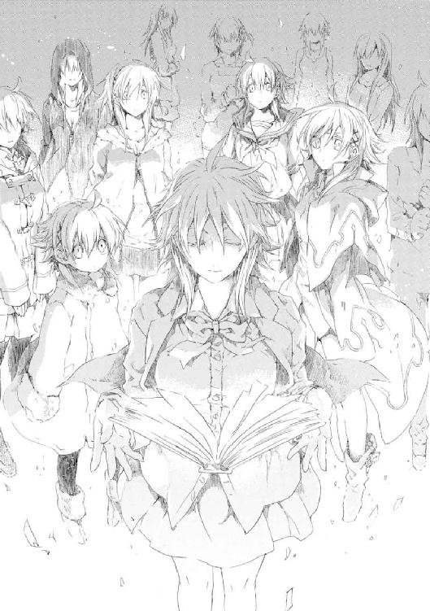
「さっすがメイゼルお姉ちゃん。こんなちいさいときから、すごかったのね」
メイゼルを、それよりちいさな〝きずな〟が、お姉ちゃんと呼んだ。この〝彼女〟が生きた歴史では、たぶんメイゼルが〝きずな〟の面倒を見たのだ。
だが、本人であるきずなは無言で目をそらしている。
ちいさな〝きずな〟が、思わぬ当事者のふがいなさに頭をかかえていた。
「あのね、《降臨》を起こすために、〝未来〟の魔法使いは、大当たりの目が出るまでサイコロを振り続けたんだよ。歴史改変って、《神》が降臨する歴史が発生するまで、ハズレの歴史がどれだけ新しくできてもいいんだ。《神》は魔法世界全部の自然秩序の監視者だから、どれだけ時間の流れが分岐したって、どうせ全部に支配が及ぶよね」
「う、うん......こんどは、ちゃんとわかった......」
しつこく突っ込まないだけのやさしさが、〝彼女〟たちにはあった。
メイゼルよりも背の低い、ちいさなきずなが、メイゼルを憧れの目で見上げる。
「だいたい〝わたしたち〟がなんだか、わかったよね？ わたしは、きずなが生まれたとき、倉本慈雄にあずけられずに円環世界に連れて行かれた歴史の〝倉本きずな〟だよ。〝わたし〟の歴史では、イリーズおばさんは円環世界の戦争に勝ってるの。イリーズおばさんとメイゼルお姉ちゃんに魔法を教わったから、たぶん一番魔法にくわしいよ」
メイゼルの母イリーズの人となりを聞く限り、その歴史で、どれほど熱心に〝彼女〟の再演魔術が研究されたかは容易に想像できた。
仁のすぐ隣にも、いつの間にか人の気配があった。灰色のローブを着た、年の頃はきずなと変わらないが、暗い復讐者の目をした〝きずな〟だ。
「〝わたし〟は、《神に近き者》グレンとの戦いのさなか、あなたが浅利ケイツに背中から刺し殺された歴史の〝倉本きずな〟です。安心してください。《協会》の魔法使いどもになんか、あなたを二度と殺させはしません」
メイゼルのそばで居づらそうにしていた二十代の、ふわりとした女性らしい〝きずな〟が、仁の前に流されてきた。
「〝わたし〟は、えーと、どんな歴史から来たかは......」
そして、栗色の髪を背中までのばした〝彼女〟が、仁へ深々と頭を下げた。
「ごめんなさい！ 言えません」
三十代ほどのきずなや、仁くらいの年の子どもがいそうなきずなも、中にはいた。けれど、こちらに話しかけようとはしなかった。ただやさしく遠くから見守ってくれている。
〝彼女〟たちを召還したきずなは、ときどき寂しそうに目を伏せたり、手に白い息を吐きかけて寒さに耐えたりしながら、手持ちぶさたな様子だ。〝きずな〟たちは、彼女にやさしく距離をとり続けていた。〝彼女〟たちは、きずなの告白と泣いたあとのことを、知っているようすだった。
ちいさい〝きずな〟だけが、きずなに後ろから寄っていった。
「ドンマイ」
無邪気な表情で、ぽんとお尻をたたいた。
そして、鼻をすすり上げたきずなから、ちいさな頭に重いゲンコツを落とされた。
「いったい！ 八つ当たりじゃん。せっかく親切で言ってあげたのに」
頭を押さえたちいさな〝きずな〟が、うらみがましくきずなを見上げる。
きずなは、泣き笑いだった。
「あはは、かっこ悪いですね。わたし」
灰色の〝きずな〟が、ひとこと付け加える。
「それでも、言えてよかったでしょう。かっこ悪いこともできなかった〝わたし〟もいるのです」
そして、〝彼女〟たちが本来の役目を果たすべく、動きはじめた。
灰色の〝きずな〟が、凛とした声で号令をかける。
「さあ、〝未来〟から世界を変える再演干渉に、ここに集まった〝現在〟が、目にものみせてやりましょう。〝過去〟を操った者たちへ、歴史からの鉄槌を叩きつけましょう。迷い続けて戦いを生きることが無駄ではないと、教えてやりましょう！」
ちいさな〝きずな〟の手の中で、《本》がまばゆい光を放つ。〝彼女〟のたどった辛苦をにじませて、年に合わない気迫のこもった咆哮があがる。
「二十六個の歴史の、二十六人の《神人》の力。〝わたし〟たちの怒り、〝わたし〟たちが生きてきたってこと！」
二十六冊の《本》からの魔法が世界を歪めて、太陽が二十六個も降りてきたようだ。
きずなが、光の洪水の中、ふと気づいたように〝彼女〟たちを振り返る。
「これって《化身》だって言いませんでしたか？」
まだ子どもの〝きずな〟が、きずなに花を持たせた。
「あなたが名前をつけていいよ。魔法世界ではじめて発動する、再演大系の《化身》なんだから」
そしてきずなは目を閉じる。深く、息を吸って、定められた名前だったように。
「《運命の化身》──」
「うそ......こんな......」
メイゼルがことばを失っていた。
それは、本当の奇蹟だ。
仁も、眼にしたものをうまくことばにできなかった。
「さっきのアレ、おい、ちょっと待てよ......」
彼が見間違えるはずもなかった。灰色の〝きずな〟のそばに現れて、一瞬で消失した魔法使いは、《神に近き者》グレン・アザレイだった。
メイゼルが、空をあおいで目にいっぱい涙を浮かべていた。
「こういうの、反則じゃないの......」
首都上空に広がる直径一キロメートルの巨大魔法陣より更に高くに、直径十キロメートルの超巨大魔法陣が広がっていた。そして、桁外れに大きな主魔法陣の周囲を、七枚の補助魔法陣が自転している。魔法の根幹である認識そのものをひねった証であるこの魔法陣を広げた者は、円環魔導師の歴史でひとりしかいない。
「イリーズおばさまー！」
ちいさな〝きずな〟が、うれしそうに手を振る。
この世界に同一人物がふたり、同時に現れることはできない。魔法化された人間である《聖霊騎士》も、同じ《騎士》を同時にふたりは召還できない。
だが、グレンやイリーズは、この歴史上にはもういない。彼らは、ここではすでに死者だからだ。
きずな自身を除く二十五人の〝きずな〟たち──《運命の化身》がこの世界に呼び込んだのは、それぞれの時間の流れで同盟者や利害関係者となった魔法使いたちだ。それぞれの世界で、必死に生き抜いて、魔法ではなく人間関係でつないできたきずなだ。
そして〝未来〟の再演魔導師には、異なる歴史の人間である〝同盟者〟たちを操れない。
それぞれの歴史で、〝彼女〟自身が行動した。そのぶんだけ、それが誰かにつながって、人と人の間を結んできた。ここに世界があった。
援軍の危険は、当然〝未来〟からの干渉者からも察知された。さっきと同じ光の箭が、仁ときずなたちを正確に狙って放たれた。
「はっ」
戦士である〝灰色〟のきずなが、浅慮を鼻で笑う。
〝彼女〟がローブの袖口から引き抜いた古い剣が、魔法砲撃をかき消した。立て続けに撃ち込まれた、一帯が焦土と化す威力の超高出力魔弾が、すべて剣の一薙ぎで消失する。
「《神人》が、自分の歴史上にある《神人遺物》の一つや二つ、持っていないはずがないでしょう」
仁たちは、再演魔導師が見せた未知の技術体系に息を吞む。だが、バベル事件での《幻影城》も、その場にいた魔法使いを操っただけでは説明がつかない魔法的機能を発揮した。再演魔導師には、あらゆる《神人遺物》から魔法を引き出せても不思議はなかったのだ。
〝彼女〟の歴史では仁が死んでいるという〝灰色〟のきずなが、頰を染めてはにかんだ。
「《神人遺物》から、そこに込められた魔法を引き出す技術は、この歴史のわたしには、まだ使えないのですね」
虚空からわき出た魔法使いたちが、仁たちを追い越してゆく。
この世界では死んだ人々の行軍に、《鬼火衆》の魔法使いや救えなかった人々がいた。殺し合った敵たちが、すれちがっただけの人々がいた。
すべての悲劇を笑えとばかりに。
すべてを善悪の彼岸に押し流すように。
†
公館本館から地下へと退避した人々は、もっとも立場の弱い魔法使いたちだった。この世界に罪人として流されてきた刻印魔導師は、魔法使いの利益を代表する《協会》に守ってもらえないからだ。そして、日本政府にとっても、高いコストをかけて他の国民と同じに扱いづらい存在だ。この世界に根付いた刻印魔導師の家族や、六十年も前に地下都市へ移り住んだ刻印魔導師の子孫も、孤立していた。
もはや彼らを守るのは、刻印魔導師を道具扱いにした魔導師公館の関係者だけだ。責任感と、弱い立場同士の助け合いという打算だった。
「この私が、なぜこんな目に遭わねばならんのだ！」
浅利ケイツもまた元刻印魔導師だ。兄であるグレンを斃した功績で自由の身になったものの、彼は狙われ続けている。
地下壕に逃げ込んだ彼らは、追っ手に追い詰められていた。暗闇から、敵が伸ばしてきた相似大系の魔力弦が、人々を搦め捕る。ケイツが必殺の魔術に繫がる相似弦をいちいち切断していた。
「私に守られておきながら、どうしておまえらは私を守らん！」
「ケイツさま。お下がりください」
少年メイドがミニスカートの下にかくしていたナイフを、続けざまに投擲する。タキシードを着た追っ手の魔導師の首筋に、刃物が立て続けに突き立つ。少年が手元のナイフと刺さったナイフを相似弦で結んでくるりと回す。首から鮮血が噴き出すが、魔法使いは倒れない。
みずからの身体を改造したスセラミス派の高位魔導師は、まさしく不死だ。
「リュカァァァァ......」
少年メイドの名を、錆びた怨嗟の声が呼ぶ。リュカ・エラド・マナが、ひっと息を吞む。追っ手の魔法が、少年のエプロンドレスの胸元から腹までを一気に引き裂いたのだ。
少年の光沢ある絹の下着が、なおも不可視の力で思い切り引っ張られる。羞恥に唇を嚙むリュカをなぶるように、スカートがひとりでに持ち上がってゆく。
その不死紳士の首が、蝶ネクタイのすぐ上から切断されて空中を飛んだ。剣の峰側に鬼の面がついた魔剣を握る《笑い顔》虎坂井レイが、相似魔導師の背後に気配もなく回り込んでいた。
「悪いけど列の後ろに回ってくれやせんか。ケイツさん狙いの敵に、通路の前側から来られると、全体の足が止まるんでさ」
「なんだ、この私を見捨てようとしているのだな......。私が襲われている間に、おまえらだけ逃げるつもりだろう」
ケイツの不平に、《笑い顔》が目を笑ったように細めたまま返す。
「そんな簡単じゃないっす。これはどうも粛清っすね。〝未来〟の連中が、魔法使いの暴走をおさえきれなくなったから、ついでにこの先の歴史で邪魔になる人間を皆殺しにしようとしてるんすよ」
「では、どうすればいいのだ？ 《沈黙》はどう言ってる」
ケイツにとっては当然の難詰を、虎坂井は薄笑いで受け流した。
「大将の読みは、当たりやしたぜ。動くのがまあ早かったから、追っ手はケイツさんの首を狙ってた相似魔導師だけって、一番マシな状態でしょう。マシっても《本》で追跡されてるんじゃ、マけるわけねえから、このくらい勝たなきゃ話ンなんねえんでしょうが」
そう言う間にも、虎坂井は闇からにじみ出た追っ手の魔法をかわし、切り払っている。ケイツたちを置いて、避難民たちが後退しはじめた。銃声が聞こえる。避難列はこの通路をこれ以上進むことをあきらめ、迂回を選んだのだ。
「待て、私も逃げるぞ」
振り返ったそのときだ。ケイツは、自分とリュカ、虎坂井に、何十本という相似弦が結ばれているのを見た。
結果的にはいらぬ勇気だった。ケイツは、手近なものから相似魔術の銀弦を切った。だが、すべて始末することはできなかった。相似大系の《化身》である《原型の化身》は、本来魔法を直接作用させるのが極めてむずかしい人体へ、直接変化を起こすことができる。
だから、ケイツの体に衝撃が走った。のどから熱いものがこみ上げて、吐き出した。すべて血液だった。
ケイツは臓器のいくつもを一瞬で破壊されたのだ。そうわかったときには、全身の力が抜けて倒れ伏していた。
目の前がかすんだ。暗闇に魔法の薄明かりがついていただけだったせいで何も見えなかった。相似大系の魔法医療は、《原型の化身》で健康体の人間と自分を相似にするものだ。だから、感覚に異常をきたした相似魔導師には自分を救うこともできない。このまま死ぬとわかった。
「ケイツさま！ ケイツさま......」
暗闇の中で駆け寄ってくる音がした。自分のことを尊敬しているというから、いつもそばに連れている少年だ。
けれど、そのリュカにも無数の〝魔法〟がからみついていた。それは相似弦ではない、この世界ではないような場所から垂れ落ちた操り糸だ。気づく様子もないリュカを、その魔法が引きずっていた。ケイツと同じ死のほうへ。
「......やめろ」
ケイツは痺れる冷たい手を伸ばす。自分が助からないのに、彼を敬っている者まで目の前で殺されることに怒った。
〝魔法〟をつかんだとき、彼は、それがいかに巨大なものか悟った。それでも、地べたを這いずってきた男の怒り、翻弄されてきた男の恨みが彼に最後の力を与えた。
「つかんだぞ......。おまえも、地べたを......這いずれ......」
浅利ケイツの体にすがるリュカ・エラド・マナの体には傷ひとつなかった。ケイツが、一瞬ですべての相似弦を解除したのだ。代償が、血だまりに倒れ伏したその姿だった。
相似大系の高位魔導師が、続々と通路の奥の闇から現れてきた。相似世界の旧スセラミス派の魔法使いたちの間では、ケイツを斃した者が次の指導者となるという協定がある。
「自分を護り損ねるとは、やはり愚かな野良犬よ」
だからこそ男のあっけない最期を嘲笑っていた。十人、二十人と、最後のとどめを刺す役目を争うため、屍肉に群がる猛禽のように倒れたケイツを取り囲む。
そのとき、相似魔導師たちは動きを止めた。
ここにあることが当然であるように、ひとりの魔法使いが現れていたからだ。
精緻な飾りに飾られた黒いローブをまとったその男は、別次元の存在感のせいで、風景から浮き上がっているようだった。
高位魔導師たちが、その男を見た瞬間、ざわついた。
「あり得ない......。《神に近き者》......」
通路に隠れていた高位魔導師八人が後ずさった。首を斬られてなお生き続けていた魔導師までもが、自分の頭を拾った。
《神に近き者》グレン・アザレイは、かつて相似大系の最高位魔導師《不死王》スセラミス・エラド・マナを斃し、数百人の取り巻きを皆殺しにした。
「この歴史でも、私は、そなたら亡者を、あるべきところへ返したようだな」
神のごとく振る舞った魔法使いたちが絶望の叫びをあげた。彼らが突然夜目がきかなくなったかのように混乱する。首を抱えていた魔法使いが、全身の力を失って倒れた。
グレンは生身の肉体を強化していない。《再誕の祝福》と恐れられる、防御殺しの魔法を扱うためだ。グレンは、素のままの自分の肉体と〝相似〟にさせることで、敵が身体に施した強化と改造を問答無用でゼロにする。
生まれ直したように不死の肉体を失った高位魔導師たちが、全員一瞬で崩れ落ちる。グレンの魔法で、生身に戻った心臓を破壊されて即死したのだ。
「私はそなたに命を救われてここにいる。だが、再会してすぐ失った弟が、どのような男であったろうと考えることがあった」
グレンのいた歴史で弟が死んだ後、彼は服の色を、かつての灰色から弟の色に変えた。《地獄》から《悪鬼》を駆逐するときまで、その色を背負い続けると決めた。
だが、英雄にとってその黒いローブは、今日からはただの復讐の象徴ではない。
「われは生のはじめに神を見た。そなたは、生の終わりに神を見たか」
グレンが癒すより早く、背後からたくさんの足音が近づいてきた。ケイツに治療してもらった人々が、倒れた男に群がったのだ。
「魔法使いとは、力を振るう者のことではない。地べたを這いずり、生きることに挑戦するものこそが、真の魔法使いである」
英雄の顔を知らない者までが、グレンにすがりついてケイツを助けてくれと嘆願した。
「弟よ、そなたは、私の誇りだ」
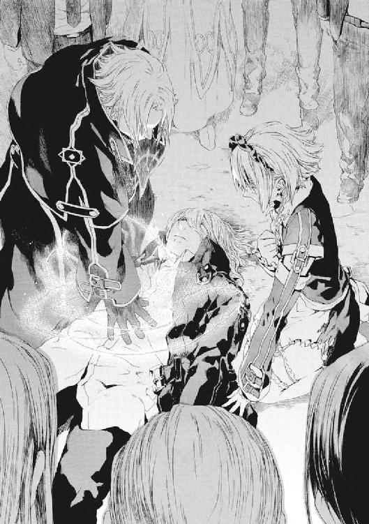
†
そのころ、空には、錬金大系の高位魔導師、《無双剣》セラ・バラードがいた。
魔法使いの相当な数が、せせこましい地上の町をゆくより、上空を選んだからだ。
《魔炎》の恐怖を体験していない、来たばかりの魔法使いほど無造作に青空を飛ぶ。
「空で死ぬことになるとは、本望だな！」
何隠すことなく肌に太陽を照り返して、セラは飛ぶ。
数え切れないほどの敵を迎え撃つ彼女の真下には、小学校があった。メイゼルがこの世界の小学校に通っていたことを思い出す。一時期、《悪鬼》の小学生の家に世話になっていたことが、懐かしく全裸の胸をよぎった。
運動場に避難していた子どもや近隣の家族が、セラに手を振っていた。
彼女はこの世界のために命を捨てるほどの義理があるわけではない。だが、眼下の都市の住人たちと、生身で触れ合ってきたからこそ、腹立たしかった。
「混乱につけこんで縄張りに入り込んだ連中に、デカイ顔をされていては女がすたるというもの。短くともここで暮らした者として、魔法使いが火事場泥棒も同然と思われるのは恥だ」
《協会》中枢を大深度地下に抱えているせいで、魔法世界から歯止め無く魔法使いが流入している。〝未来〟の再演魔導師たちのせいだけではない。元々この世界は、魔法世界からすれば最適の実験環境で、その利権は《協会》の権力の源泉なのだ。
セラを狙って、数千発もの魔弾が殺到する。裸身の魔女が急加速で振り切る。
「遅い、遅いぞ！」
音速を超える戦闘機動による回避力と、体で攻撃を弾く高い防御力をあわせ持つ錬金魔導師を斃すことは、高位魔導師たちにも容易ではない。ただしセラ自身も防御と回避で手一杯で、敵にただ攻撃されるだけだ。
住民たちの生活を破壊することに、疑問を持つ魔法使いなどほとんどいない。だから、蛮行を止めようとするセラは孤独だ。向こうは簡単に撃つだけだが、彼女は牽制しながら命がけでかわさねばならない。セラは狩りの獲物だ。
〈もう飽いた。滅びよ〉
セラの頭に声が響いた。突然息ができなくなって失速する。環境操作の魔術は、回避も防御もむずかしい。だが、たいてい致命的ではない。
追撃がなければだ。
咳き込んだセラを追って、数千の魔弾の嵐が押し寄せた。
かわしきれないと知った。
ここまでかと、まぶたを閉じた。
そのとき、遠く声が響いた。彼女にとって、諦めていた目を見開かせる声だ。
「空を飛ばずして何の魔法使いでありましょうや！」
それはセラにとっては懐かしい気配だ。
暴風のように荒々しく、それは彼女の体を抱えて吹き抜けた。
「はははははははは、夢にも思いませんでしたぞ。再びともに空を飛べる日が来ようとは！」
「スピッツ!? スピッツなのか」
彼女を攫った鍛え上げられた僧帽筋にも、見事な上腕二頭筋にも、見覚えがあった。そり上げた禿頭が陽光を照り返したとき、これが幻でもよいと思った。
「お懐かしゅうございますな、姉上」
品の良さとたくましさをそなえた顔立ちに、豊かなカイゼル髭をたくわえた好漢が、彼女を腕に抱えていた。この歴史ではバベル事件で早々と殉職したセラの義弟、《大気泳者》スピッツ・モードだ。
編隊を組むように彼女も空を飛ぶ。
飛行機のように両手を広げた見事な飛行姿勢で、スピッツは鍛え上げた肉体を隠すことなく、全裸だ。
地上の人々の営みを見下ろし、義弟が白い歯を輝かせて笑う。
「姉上！ あれをやりますぞ」
セラは応じて、相対速度を合わせて、義弟の油を塗った広背筋に白い裸足で着地する。
スピッツの筋骨隆々たる肉体をサーフボードに、裸身のセラが今、青空をサーフィンする。
「夢のようでございますな！ 子どものころは、姉上とよくこうやって遊んだものです」
セラの手には《無双剣》の名の由来である《聖別の化身》がある。二百メートルも伸ばして剣のように構える。戦闘機動をスピッツにまかせて《無双剣》を振るう日が、再び来るとは思わなかった。
「さあ、征くぞ、スピッツ。今日は、姉弟の裸身騎士だ」
セラはこれが奇蹟で、長くは続かないと知っていた。異なる歴史からやってきたスピッツも、これがひとときの夢だと知っていた。
生死を超えて再会した姉弟は、雲霞のごとく押し寄せる敵へ、大声で名乗りを上げる。
「《無双剣》セラ・バラード！」
「刻印魔導師スピッツ・モード」
全裸の疾風が、今、吹き荒れる。
「「いざ、参る!!」」
†
「これはすごいものだな、本当に《大気泳者》じゃないか」
避難民たちが去った公館本館跡で、魔法学者溝呂木京也は歓声をあげた。
双眼鏡から目を離し、書くものがないから、着ている白衣の袖にボールペンでメモをとる。
彼にとって、この魔法使いの暴走と、再演魔術によるものらしい死者の復活は、データの山だった。ビデオカメラを持ってこなかったことが呪わしかった。
「痛い、寒い、気持ちいい......」
《茨姫》オルガは、魔法で傷を治したのに両脚を抱えて体をガタガタと震わせている。聖痕大系の治癒魔術では、記憶が消えないことから予想されていたが、神経までは完全に回復しない様子だ。
《増幅器》の設置の阻止に失敗した知らせが入ってからというもの、魔法使いがなだれ込んで来て止まらない。溝呂木が丘の上から確認しての概算では、地上の異世界人はこの一時間ほどで五千人以上増えている。
「〝未来〟の再演魔導師たちは、《協会》の担当者を操ってこの世界への渡航許可をバラ撒かせたというところかな」
おそらくその程度での緩和でも、異世界人があふれることは起こり得た。何しろ、《協会》圏一千の魔法世界から渡航希望者がやって来るのだ。
秩序を守るべき専任係官たちは、《縦坑》で犠牲者こそなかったもののバラバラだ。
しかも、交戦していた超高位魔導師が三名とも健在で、全員に逃げられている。こうなると《鬼火》東郷永光の不在の大きさが、溝呂木には強く感じられた。
「本当に、君がいればと思うよ。これは新しい時代への産みの苦しみなのかな」
そのとき、市街で大砲を撃ったような轟音が響いた。何事かと双眼鏡を向けると、戦車が国道を走っていた。戦車は、自衛隊のものでも在日米軍のものでもない。砲塔に、見覚えのあるエンブレムが描かれていた。
「ワイズマン狩猟魔導師大隊とあるね。王子護君の部下の傭兵部隊は、いつから中隊から大隊に規模を拡大したのだったかな」
頭上でローター音が響いた。
どこから現れたのか、輸送ヘリが低空飛行で戦場へ進入してゆく。ヘリから銃を持った魔法使い部隊が次々に生身で空挺降下する。そして、空中で速やかにフォーメーションを組んで大魔術を発動し、周囲の敵をまとめて焼き払った。それは、円環大系の電磁騎士団が《雷神》による国際展示場襲撃事件で行った、都市魔法陣の集団魔術に似ていた。
溝呂木は、あっさり周囲を制圧してしまった次世代の機械化魔導師たちを前に、子どものように歓声をあげていた。
「たいしたものだ！ 魔法世界とこの世界が接触し、様々なかたちで衝突してこそ発展が加速するのだ。そうではないか？」
†
新世界の奔流は、この世界で古くから仕事を続けた魔法使いにとってこそ窮地だった。無秩序を看過しては、魔導師公館と関係を築いてきた《協会》穏健派の仕事が否定されるからだ。
だからこそ、《逆天》ユリアと応報騎士たちも、押し流されないよう必死だった。《協会》穏健派が無価値だと放逐されては、この世界で培ってきた魔法使い文化と新世界のそれとの間に、断絶ができてしまう。この断絶は、千年の禍根となる。そうして今後の千年間、問題が起こるたび責任を問われるのは、長寿の魔法使いだからこそ耐えられなかった。
「因果大系が応報騎士団第二位、《逆天》ユリア・シュバールです。《協会》は、あなたがたの破壊活動を認めてはいません」
ユリアと部下による合体因果巨兵《大逆天王》が、全高十二メートルを超える威容で魔法使いたちの前に立ちはだかる。
現れたばかりの《協会》の魔導師たちは、巨人を前にしてもひるむ様子もない。
《大逆天王》より巨大な、全高百メートルに及ぶ超大型の人型構造体が、彼らの背後に控えていたからだ。それが市街を踏み潰しながら歩いている。その重量のため、周囲は立っていられないほど揺れて、道路は陥没し、家は倒壊し電柱も次々に倒れている。
四肢の角張った巨人から、重々しく声が響く。
〈《逆天》ユリアよ、そなたら穏健勢力が、《協会》の力を弱めたのだ。この世界の国家と関係を築いて勢力を伸ばそうとしたそなたらの方針で、我らは、この世界の住民の目を避けてしか魔法を使えぬ時を過ごしたぞ。この責任を、誰が負う〉
因果大系の超高位魔導師が組み立てた、ユリアのものより遥かに雄大で精巧な因果巨兵、因果巨神だ。
ユリアたち穏健派の立場は、実績がともなわないため、《協会》内部でも弱くなる一方だった。
答えに窮したユリアの《大逆天王》に、巨大構造物の頭部から発射された高圧の水流が直撃した。一撃で吹っ飛ばされて、周囲の建造物を轢きつぶしながら巨体が多摩川に叩き落とされた。
二十一世紀に入って、穏健派は受難続きだった。グレン事件で主要人物を失い、ワイズマン警備調査会社に事業を荒らされ、《九位》による全面戦争を志向した政治運動でさらに追い詰められた。
今、《協会》は〝未来〟からの再演干渉でよいように振り回されている。これも、根をたどれば、穏健派が急速に弱体化したことによる政局の混乱で、《協会》自身にも方向性が見えないせいだ。
だが、新しい世界が来たのだとしても、旧世界の幕引きを、混乱と破壊に任せるわけにはいかなかった。
「ずいぶん苦戦しているようだな、君たち」
快活な声が、川底を踏んで立ち上がった《逆天王》にかけられる。
川縁で、黄金の飾りを毛皮の民族衣装に縫い取った若い色男が、因果巨兵を見ていた。金髪の癖毛を魔法で直毛に直したその男を、ユリアは知っていた。もう二度と会うことはないと知っていたからこそ、驚きは大きかった。
「あなたは......なぜここに!?」
「あまりにユリア様たちが不甲斐ないから、僕が来てあげたよ。ぜひ感謝するべきだ」
因果大系の高位魔導師、《百手巨人》フィリップ・エリゴルだ。この歴史では、功名心に取り付かれた彼は《九位》に騙されてユリアたちを裏切り、グレン戦争で行方不明になっていた。
「因果巨神を相手に、僕の《因果巨人三十五号》が通用するか、いい実験になりそうだ！」
もう敵も味方もなくなったかのようだった。軽々と空中に舞い上がったフィリップを取り囲むように、川の水がくみ上げられて半透明の魔法機械を構成する。それは、五本の指を持つ巨大な手と手首だ。
その神秘の籠手へ向けて、《大逆天王》が重々しく右の拳を衝き上げる。
「ありがたく、助力を受けさせてもらいましょう！」
フィリップの《因果巨人三十五号》と、天へ捧げた《大逆天王》の右手が、ゆっくりと接近し、合体する。
肘から先だけが二回りも元の拳より巨大になった籠手が、天を摑むように、拳のかたちに指を握ってゆく。
《大逆天王》の機体から伸びた吸水管が、蒸気を噴き上げる。右手に与えられた力を、総身に行き渡らせるように、巨人が右の正拳を敵に突き出す。そして、ユリアは、彼女たちの〝力〟の真の名を呼ばわる。
「《優勝・大逆天王》ッッ！」
魔法使いたちから返ることばはない。「優勝はどうよ」という指摘すらも。
因果巨神の頭部から、再び神の剣のように水流が吐かれた。
だが、強くよみがえった巨人は右手を掲げる。圧搾空気の盾が魔弾を弾いた。《逆天》ユリアの重力制御が生み出す巨大出力を直接叩きつけるには、《大逆天王》でも脆すぎる。だからこそ、《百手巨人》の力があって、はじめてユリアたちの因果巨兵は完全体となる。
「新世界を、もはやなかったことにはできません。だが、だからこそ、これまでと新世界は、今日から交わらねばならないのです。これからはじまるのです。だから、邪魔はなさらないでください！」
それはユリアの、こころの底からの訴えだ。
水流を受けきった《大逆天王》の右手が、炎を摑む。
†
「ずいぶんショボいことしてるじゃないか」
彼女は、そこに現れた相手を前に、つまらなさそうにつぶやいた。
首都中枢、（かすみ）霞ヶ（せき）関上空に浮かぶ彼女の前には、ふたりの魔法使いがいる。《雷神》クレペンスと《九位》、何人にも侮ることを許さないはずの超越者である。
だが、彼女は長い黒髪を強い風になびかせ、不敵に唇の端を吊り上げる。
「けど、再演世界の連中もケチくさいね。たった二人でアタシの相手をできるつもりかい」
イリーズ・アリューシャは、軍服に見事なプロポーションの肢体を包んで、敵を正しく見下ろしていた。
「アンタの歴史じゃ、アタシは負けて《憎悪の女王》のまんまだってね。アタシの歴史じゃ、もっとデカい名前になってるんだけどねぇ」
《九位》は、〝未来〟からの再演魔術で操られた戦闘機械のようだ。
意識が正常なまま戦わされる《雷神》が、女王イリーズを格別の敬意と恐怖をもって見上げている。
「答えられよ。あなたの歴史では、円環世界は《三十六宮》内の序列を下げられたか！ あなたが起こした戦争のせいで、《三十六宮》を追い出されそうになっているのではないか」
だが、あり得たかもしれない円環世界の可能性を、イリーズは嘲笑する。
「《三十六宮》なんざ蹴り飛ばしてやったよ。今のアタシの二つ名は、《絶望の大神》で、今度は《協会》相手に大戦争の真っ最中さ！」
「あなたという人は、何という......」
後悔と未練を一瞬で吹っ切ったように、《雷神》の目つきが変わる。周囲の《魔力》を吸い尽くすように収束する。
イリーズといえども《魔力》が集まらなければ大魔術は使えない。だが、彼女は円環世界での戦争から進歩がない《雷神》に哄笑でこたえる。
「はははははははァッ、アタシもナメられたもんだ！ アンタ、アタシが前の戦争からもっと強くなったらどうなるか、想像もしなかったのかい？」
空を指して立てた指先に、世界中の力が集まるように、八方から強い光線が注いでいた。光とは電磁波で、円環大系にとって電磁波とは《魔力》だ。イリーズは、部下たちに遠方から光線として送信させることで、一瞬で膨大な《魔力》を集める方法を開発したのだ。
みずからの魔術よりも、遥かに短時間で超高出力の魔術が発動される。そう悟って、《雷神》は回避行動に移った。だが、とても間に合うものではない。
イリーズが指した指の前に七枚の補助魔法陣が集中する。そして、光が上昇中の《雷神》をとらえた。そして巨大な火球を霞ヶ関上空一千メートルの位置に発生させると、そのまま突き抜け蒼穹へと消えてゆく。
直後、白く乾いたような真昼の月の表面に、閃光が現れた。イリーズが放った大魔術は、三十八万キロメートルの距離を薄紙のごとく撃ち抜き、月表面に超高熱を伝達して大爆発を起こさせたのだ。
「未来を怖がってんじゃないよ、アタシたち魔法使いがさ」
†
イリーズが放ったその魔法の光は、仁たちからもはっきり見て取れた。
話に聞いていたより、イリーズの戦闘力は、はるかにすさまじかった。おそらくさっきの魔術は、イリーズが部下の電磁騎士団たちに都市魔法陣を構築させて、集めた《魔力》を自分に転送させたのだ。この方法なら、大魔術を簡単に連発できる。
そしてメイゼルは、仁から見ても明らかにそわそわしている。
これが、この世界で頑張り続けた少女へのごほうびに思えた。
「巻き込まれないように行ってこい。お母さんと会える機会、もう二度とないぞ」
「うん！」
子どもらしすぎて切なくなるほど素直な表情で、彼女が返す。
仁がぽんと背中を軽くたたいてやると、メイゼルは足下に魔法陣を浮かべて一直線に飛んでゆく。
何度も振り返って手を振る彼女に、いちいち手を振り返して見送った。
異なる歴史からの援軍までをもまじえた戦いは、見渡す限りに広がっている。仁はこっそりため息をつく。
彼はいつもなら放置しておかないものにも、魔法消去を一切していない。〝きずな〟たちが召還した援軍は、魔法なしでもこの世界に存在できるものでなければ、魔法消去で消滅するからだ。
「まいったな。この状況が続いてる間、俺はおとなしくしてるしかないのか」
町中から火の手が上がっていた。消防車や救急車のサイレンがそこかしこから聞こえる。この戦闘は、これまでで最大規模かもしれないうえに、どこまで拡大するかわからない。
「何もしなくていい。武原さんは、戦わなくていい」
手持ちぶさたな仁に背後から近づいてきたのは、灰色のローブを着た〝きずな〟だ。
「やっぱり、ちがう歴史でもきずなちゃんだな」
「いっそ〝最後の魔法使い〟には、〝わたし〟がなりたかった」
ここではない歴史でも、きずなは苦しんでいる。〝未来〟の再演魔導師たちは、再演秩序という人間を救う圧力に従って、歴史に干渉し続けているからだ。
「でも、ムリだった。この歴史のきずなに託すしかない」
かつての彼自身に似た荒れた目をした〝きずな〟の頭に、勇気づけたくて手を載せていた。ローブ姿の〝きずな〟はまだ高校生に見える。だから、〝彼女〟がグレン事件で仁が死んだ後の歴史の〝きずな〟なら、二年と経たず言葉遣いを変えてしまったことになる。どんな人生を送ったのだろうと思うと、見ていられなかった。
「〝きずな〟ちゃんは、しあわせになっていいんだ。きっと、〝きずな〟ちゃんの歴史の俺が生きてたら、そう言うはずだよ」
その〝きずな〟の背後に、ふらふらと野戦服の女性が歩いてきた。金髪の後ろ髪を刈り上げた彼女が、顔につけていたガスマスクを外した。そのままメイゼルがアパートの敷地に作った犬小屋に、野戦服の女が上半身を突っ込んだ。
「ふむ、犬小屋の掃除が行き届いていないな」
呆然とする仁たちをよそに、腰のホルダーからちいさな掃除道具を取り出して悠々と掃き掃除をはじめた。仁も思い出した。メイゼルの飼い犬になりたいと押しかけた賢猟大系の魔導師、《砂の猟犬》瀬利ニガッタだ。
「なんだおまえ、メイゼルなら出てったぞ」
だが、ニガッタは、仁を見つけるや、四つんばいのまま敵意剝き出しに身構えた。
「やや、貴様は、ワタシから飼い犬一号の座を奪った、武原仁！」
聞き捨てならないことを言った。
《本》を開いた〝きずな〟のひとりと目が合った。ニガッタのことを知っている様子で、困ったように手を振った。仁に会うなり、ごめんなさいと謝った〝きずな〟だ。
「いいから！ そっちの歴史で俺がどうなってるかは言わなくていい！ 聞いたら気持ちがくじけそうな気がする」
けれど、すこしだけ安心した。異なる歴史でも、〝きずな〟たちはきちんと暮らしを築いている。人間がいるから触れあいが起こり、絆ができる。ここにいる〝彼女〟たちもきずなで、きっと仁が癒されたような人間関係を築いているのだ。
†
この戦いは再演世界の到来のために引き起こされた歪みの、総決算のようなものだった。その激動の中、メイゼルも大きすぎるものを失って傷ついた。
それでも、彼女は、目の前にあるものに触れないには好奇心がありすぎた。恐くても正しくなくても、つかめるものを見逃して後悔するなどあり得なかった。
戦闘中かもしれない母にはっきりと見えるように、メイゼルは魔法陣を大きく広げる。そして、一直線に魔法で飛翔した。
この世界に刻印魔導師として堕とされる前、彼女は甘ったれた子どもだった。今は、戦うことになっても誇りを抱いて退かない。人との繫がりを知った。友だちができた。そして、恋をしている。
圧倒的な力を間違えようがない。母がいる。彼女が失った人が、そこにいる。
「お母さま！」
別れたときと同じ、軍服を着た大きな背中をメイゼルは見た。
「アハハハハ、生きてたか。本当にちっさいな、魔法使いらしくなったかい」
黒髪の魔王は、笑う。
自分を見ているのだと思うと、体が痺れるようだった。
五十メートルほどの空間をはさんで、メイゼルはそれ以上、母に近づけなかった。しがみつくのが恥ずかしかったのだ。
「お母さまが言ったように、立ちふさがるモノを、やっつけてきたわ。いっぱい負けたり死にそうになったりもしたけれど、あたしは生きてここにいるわ！」
「へえ、アンタ、立派な魔法使いになったじゃないか」
母が、無造作に両手をボトムのポケットに突っ込み、楽しそうに微笑んだ。
「お母さまは、あたしが、リッパな魔法使いになってうれしい？」
「魔法使いだってことと、母親だってことを両立するときがあるとしたら、自分の子どもが、文句つけようがなく自分を超えていったときさ。そのときのアタシは、きっと世界一しあわせだろうからな」
メイゼルが詰められない距離を、母は近づいて来ようとはしなかった。
「アンタの知ってる、死んでったアタシは、笑って死んでいったかい？」
イリーズは、メイゼルのことよりも、この歴史での自分の死に様のほうに興味がある様子だった。その自負の強さも、彼女にはたまらなく懐かしい。
「笑って死んだわ。戦ってるところ見に行ったら、あたしを見て、大笑いして死んじゃった」
母は、最期に自分を見ていてくれて、そして最期に笑っていた気がした。
涙が出そうになって、それを必死でこらえる。
「意地っ張りになったね。うれしいなら、泣きゃいいじゃないかい」
だが、意地っ張りで誇り高い少女は、精一杯の笑顔を返すのだ。
「あたしが泣くわけないわ。あたしは、人が泣いてるのを見るのが大スキなんだから」
「堂々たるもんじゃないか。うちのスカした娘に見せてやりたいねぇ」
こころから楽しそうに、母が〝うちの娘〟とメイゼルを比べていた。わかっていたことなのに、足下を軽くすくわれた気がした。目の前にいる母は自分のものではない。この人には、自分ではない、母娘として同じ歴史を歩んだ〝メイゼル〟がいる。
「お母さま......お母さまは、あたしの歴史のお母さまじゃないけど、かわりに聞いてほしいことがあるの」
「なんだい、言ってみな」
「あたし、スキな人ができたの。その人と、おつきあいをはじめることになったの」
母が生きていたら一番報告したかったことなのに、ことばにすると全身が熱くなった。それでも、告白のうれしさを思い出して、笑みがこぼれた。
気がつくと、肌の触れ合う距離に母がいて、左手で彼女を胸に抱いてくれた。
「ちゃんと一番ほしい男をもぎ取ったんだね。本当に、うちの娘に見習わせたいよ。でも、そっちの歴史のアタシは、あんまり母親らしいことをしてやれなかったらしいね。かわりにアタシから、アンタに一生の贈り物をあげるよ」
そのときメイゼルは、母がなにをしていたのか知った。イリーズは、《九位》の頭を右手でわしづかみにして、魔法的に完全に行動を封じていたのだ。
イリーズが、《九位》の重い機械の体を無造作に放り投げた。その操り人形のようだった全身が、眠りから覚めたように人間らしい慌てる仕草を見せた。
「......オ姉様」
〝未来〟からの再演干渉で、感覚器と意識を繫ぐ回路を切らされたはずの《彼女》が、体勢を立て直して距離をとる。鋼鉄の体を作った張本人であるイリーズが、魔法で《九位》の体内の回路を修理したのだ。
「神経系ノ回路構造ヲ変エマシタワネ。〝未来〟ノ魔法使イガ、ワタクシノ中枢ニ手出シデキナイヨウニ」
「再演の連中には、アタシの歴史でもずいぶん〝世話〟になってるからね。あいつらへの対抗手段として、一度試してみたかったのさ」
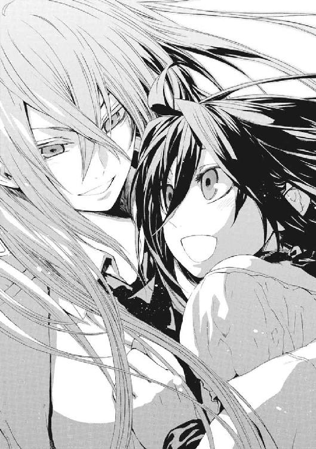
同じ時間の流れにいる魔法使いが設計した発明品は、《本》を通して仕組みを盗み取られてしまう。だが、異なる歴史の人間の作ったものなら、その危険はない。
警戒しているかのように身構える《九位》に、人間関係をこじらせさせた張本人が賞賛のことばを投げる。
「アタシに勝ったそうじゃないか。よくやった」
それでもメイゼルには、なぜ母が《九位》を自分の前でよみがえらせたか、わかる気がした。だから、伯母で仇である《九位》に向き直った。
「お母さまはすぐに行ってしまうけれど、あたしが、いつか、自分の力であんたを超えてみせるわ」
《九位》は、傲然とメイゼルの宣戦を受けてたつ。
「──笑止ナリ」
そして、はじまりを作ったイリーズは、ふと気づいたように真昼の月を見る。さっき彼女自身が大爆発を起こさせた月だ。
「たいしたもんだ。《雷神》のやつ、あれの直撃受けて生きてるぞ」
魔法使いの中の魔法使いは、智恵の実を喰った人間たちの業をこそ愛する。メイゼルの母は澄んだ目で、狂気に近いとしてもただ遥かな先を見ている。
「〝救い〟なんてものに、人間はガマンできないさ。工夫し合って、そいつをぶつけ合って、いいところも悪いところも試して、恐怖に追い立てられて必死で走るんだ。だから、色恋も殺し合いも、アタシたちを遠くへ運んでくれるんじゃないか」
†
魔法使いであるという狂気を、《導師》アリーセ・バンシュタインはある意味もっとも強く体現している。
道徳倫理をよく口にする彼女自身が、とうの昔に正気を失っているからだ。
「倉本きずなは死ぬべきです。〝未来〟からの干渉は、倉本きずなを操って魔法を使わせたとき、最大の力を発揮する。ならば、彼女を殺すことこそが、再演大系の干渉を弱めることなのです」
アリーセは、倉本きずなを狙っている。
その周囲を太い前足と後ろ足で力強く駆けるのは、幻想から飛び出たような角のある巨獣だ。自然に存在する動物ではなく絵画の悪魔が現実化したようなそれの延髄あたりから、少女の裸の上半身が生えている。《魔獣使い》神和瑞希だ。
「......させない」
瑞希が、巨獣の体に住宅街の街路を走らせる。
家々の屋根から、魔法で生み出された何千羽という猛禽が飛び立つ。アリーセに飛びかかり、ことごとくが《自律する魔力》に食い尽くされる。
「......おまえ......おかしい............きれいなこと......言って......人を......殺す......こんなにも......簡単に......」
アリーセは人食いの魔女で、その《自律する魔力》も人間が大好物だ。人が住む場所で無制限に展開しては、どれほど住民をつまみ食いしているかわかったものではなかった。
「おかしいのは、みんなでしょう？」
《魔獣使い》の神話の魔獣のような巨体が、雷光に変換されてアリーセを激しく打った。吹っ飛ばされた白衣の少女の体を、再構成された巨獣の肉体が右手にとらえる。
瑞希の整いすぎた顔が怒りに歪む。
アリーセの細い胴を、悪夢から這い出たような毛むくじゃらの前足が握りつぶしにかかる。だが、乱暴な子どもに振り回される人形のように扱われてなお、超高位魔導師は清楚に微笑み続ける。
「人間であることは、歪んでゆくことなのではなくて？ 正気であることは、短い時間で死んでゆく者にだけ与えられた祝福なのではなくて？」
五百年の戦いを生き抜いた超高位魔導師の肉体が、無数の《自律する魔力》の固まりになって砕け散った。そして、触腕を振り回す黒い吹雪のように、巨獣のどう猛な頭部と首の後ろにある瑞希の肉体にへばりつく。
《自律する魔力》から再構成されたアリーセの肉体が、瑞希の美しい線を描く首をわしづかみにする。
「人間のおこないは様々な色を持っていますわ。そして、おこないは長く続けると歪んでゆく、そうでしょう？ 神聖騎士団のこと、あなたのお家は決して笑えないでしょう。もっともっと長く続けてるんですもの」
ごきりと鈍い音がして、瑞希の頸椎がいともたやすく折れた。
人食いの魔女が開いた口には、肉食獣のような鋭い歯が生えていた。
「あなたは、倉本きずなをずっと支えてきた。あなたがたの忠誠に感心しますわ」
だが、頭が後ろに回ったままの瑞希が、巨獣の腕でアリーセをとらえる。やさしい微笑みのままの彼女の身体を、電柱に叩きつける。コンクリートの柱が砕け、電線がからまってアリーセの体に電流を流す。
「《魔獣使い》、あなたのご家族、神和邸が燃えてからどこへ行ってしまったの？ 《魔獣使い》は、《神人》との間に契約を結んだのでしょう」
瑞希は自分の両手で首を元に戻す。自然物を無限に生み出す《魔獣使い》を、この程度の損傷で止めることはできない。
「マイトリー......友だち......」
彼女ははじめてきずなに出会ったとき、そう言った。
《導師》アリーセは、《連合》という一大勢力の評議長をつとめるだけあって、魔法使い事情にくわしい。
「マイトリーではなくて、マイトレーヤでしょう。それは、遥か未来に降臨する救世主の神話。〝未来〟から世界を救う、再演大系そのものではないの？ あなたがたは、再演大系を支える役目。......けれど、もう、そんな契約、破棄してよろしいのではないの？」
アリーセは勘違いしているのだと、瑞希は思った。神和家の遠い祖先は、確かに《神人》と契約を結んだ。だがそれは再演大系との関係ではない。《最初の神人》の夫だった《始原の魔獣使い》から続く、復讐の契約だ。
それは〝最後の魔法使い〟の復讐のときまで、ともに歩くことだ。〝彼女〟が世界で最後に死ぬ人間であるなら、最後から二番目に死ぬ人間になるということだ。
アリーセの展開した《自律する魔力》が、同時にすさまじい爆発を起こした。アリーセたち混沌大系の魔導師は、おのれが経験したものごとを《自律する魔力》を通じて再現する。五百年も最前線で戦った超高位魔導師ともなれば、その身はまさに、あらゆる災厄を詰めこんだパンドラの箱だ。
肉体のみでは耐えようのない大魔術の爆炎の中、瑞希は傷を負わない。《魔獣使い》の万能防御魔術《気盾》だ。だが、その展開速度も、強度も、修復速度も、瑞希自身がかつて使っていたものとは次元が違う。
彼女が制御するより高速に、体に同居する何百何千という意識が、生存本能として魔法を使う。巨獣の肉体に、無数の〝眼〟が開く。
その正体と、高度魔術の理由に、超高位魔導師であるアリーセは即座に行き着いた。
「なるほど。ご家族は、みんなその肉体の中においででしたのね。代々の《魔獣使い》たちが同化して、ご家族みんなのご意志ですの？」
「......絶対に......きずな......守る......」
瑞希にとって、きずなはそれ以上に友だちだ。はじめてできた友だちで、これからもずっといっしょに生きられる友だちだ。
「......これから......ずっと......いっしょ」
一途にこいねがうように、瑞希はつぶやく。
「......友だち......」
彼女には、それだけでいい。
†
ここには一途な願いだけがあった。
水晶を切り出したような透明な柱や床で組み立てた、周囲は巨大な宮殿だった。神人遺物《幻影城》の内部に、エレオノールは倉本きずなたちと一時期住んでいた。それでも、ここに漂う墓所のような厳粛さと明るさには、姿勢をたださせられた。
そしてエレオノールにとってこの魔法施設は、古い自分を失った場所だ。最初にここを訪れたとき、彼女は犠牲になって死ぬはずだった。
武原舞花を最遠未来に送る魔術と《螺旋の化身》によって、《コンサートホール》の時間が崩壊して、彼女は暗闇にいた。そして、光を探して歩くうち、この水晶宮に現れた。
「リュリュは、ここにはたどり着きませんでしたか」
エレオノールは、そばにリュリュがいないことを知り、拳を胸に当てて祈る。彼女の命は尽きたのだ。
「彼女は役目を終えたのです」
《至高の人》アンゼロッタ・ユーディナが、片手を祈りのかたちに握って胸に当てる。
「リュリュ・メルルは、その生の終わりに、実力では届かぬ魔術を扱いました。人の限界を超えたなら、そこにあったのは神意に他なりません」
神聖騎士団の頂点、聖騎士将軍であるアンゼロッタが、リュリュの最後を惜しんでいるようだった。
「彼女はその生の最後、神とともにありました」
エレオノールには、この断言が、本人が聞いていたなら随喜の涙を流したものに思えた。彼女を姉のように慕った少女騎士から受け取った神音楽器は、すでに作動している。
「そうでしたか。私たちをここに導いてくれたのは、リュリュなのですね」
《幻影城》は、再演大系をめぐる様々なできごとの節目に現れてきた。《降臨》の足場となった《神の門》の巨大魔法陣は、上空で揺らめいてもう消えそうだ。未来の果てに《増幅器》が置かれて、再演秩序はもうこの世界からぬぐい去りようがない。
アンゼロッタは、人の身をした天意であるかのように神を語る。
「よろこび、笑いなさい。わたくしたちの大願は成りました。もはや〝未来〟よりの啓示者の魔法が、神聖騎士団のみならず、あらゆる魔法使いを操作して〝救い〟の使徒とします。この世界は救われます」
聖騎士将軍の背後には、身の丈四十メートルの巨人騎士、《黄金の右手》ミヒャエルが控えている。他の《聖霊騎士》や機械化聖騎士師団の騎士隊は、ここにはいない。
エレオノールの隣にも、膨大な大気が収束した。彼女は、この《幻影城》でリュリュが手に入れ、託された神音楽器に運命を託した。バベル事件のある意味はじまりになった《聖霊騎士》の召還器だ。
身長二メートルを超える半透明の騎士が現れる。かつてはリュリュが呼び出した《黒騎士》ユーグだった。
神聖騎士団の礎を築いた《はじまりの十五騎士》のひとりであるユーグの態度は、ぶっきらぼうだ。
〈おまえが俺の召還者か？ 知ってっだろうが、召還されると《聖霊騎士》は記憶がいちいち飛ぶんだよ。この時代の、俺たちの神聖騎士団はどうなってるか、教えてくれないか〉
これは神聖騎士団にとっては決着がついた戦いの後始末だ。アンゼロッタが、《降臨》に反抗して破門されたエレオノールを処刑すれば、長かった戦いにひとつのけじめがつく。この《幻影城》内部では再演干渉は弱まるが、彼女たちの実力は天と地ほども差がある。
だが、死の恐怖は、敗れては立ち上がってきた彼女を止めない。
「私はエレオノール・ナガンです。《神》の降臨は成り、この世界は再演世界となりました」
事実をそのまま《黒騎士》に伝えた。そして、彼女のことばを聞く最後の味方に、自分がいかなる信念に殉ずるのか、宣言した。
「ですが、神聖騎士団は、二つに割れています。神意の正義を奉じて、騎士団の主流は再演魔導師たちの支援を受けて《降臨》を導きました。けれど、この世界の住民を信じて、彼らが神意にかなう〝救い〟を求めるまで、この世界に神を返せとせまる者がいます」
《黒騎士》が槍型の神音楽器を軽く回すと、肩に担いだ。《彼》が、仮面に隠れていない顔の下半分でにやりと笑う。
〈面白いことになってるじゃないか。神を返せたぁ、俺たちの時代でも出なかったな。そんな極端な派閥が、神聖騎士団の本流とぶち当たれるまでよくぞ成長した〉
「言っているのは、私ひとりです」
〈ひとりってなぁ、おまえが間違ってるってことじゃないのか〉
エレオノールは熱情に押されて、身を投げるように祈り続ける。
「神意にかなうならば、ひとりのことばであろうと、百万人の声より音高く響きます」
騎士団の始祖である《黒騎士》に遠慮していたアンゼロッタが、剣を振って構え直す。《幻影城》の中からでは外の様子がわからないため、機械化聖騎士師団の様子がわからない。エレオノールをさっさと斬り捨ててしまいたい様子だった。
「あなたは破門を受けた身です。騎士団のことに口をはさむ道理はありません」
だが、彼女にとって祈りとは、信仰によっておのれ自身を問い直すということだ。そうなったのは、きっとこの《幻影城》で敗れて虜囚の身になったのがはじめだった。恩師と仲間を失い、長い幽閉と尋問の日々を乗りこえたと思えば、騙されて神聖騎士団を放逐された。憎しみで神を見失い、また敗れてさまよった。かつての妹分と斬り合い、果ては《神人》倉本きずなと一つ屋根の下に暮らしまでした。
「再演大系の《神人》と何ヶ月も暮らして、思うようになったことがあります。はじめ、この世界の住人たちは神を知らず信仰をもたなかった。それでも、苦しみは知っていたのです」
エレオノールも、聖騎士として任務の名のもとに手を血で汚してきたから、それを認めるのは羞恥で身が焦がれた。
「〝苦しみ〟をともに持っていたから、私たちは、自分たちをさいなむ苦しさを克服するために、この世界の人々を〝救おう〟とした。けれど、奇蹟に見放されていようと、一万年のときの中で、彼らは苦しみを乗りこえる努力を積んできた。だからこんなにも、道は分かれてしまった。私たちは、〝救い〟を彼らに与えるのではなく、ともに見出すべきだったのです」
だが、《黒騎士》の反応は想像を超えたものだった。
《彼》が、一歩退いてエレオノールと距離をとると、片膝をついた。剣を捧げるように、両手で槍型の神音楽器を彼女の前に捧げ持つ。
その仕草を見て《黄金の右手》が、四十メートルの巨体から激高した叫びをあげる。
〈貴公、それがどういう意味か、わかっているのか！〉
エレオノールはどう振る舞えばよいのかわからず棒立ちになっていた。
だが、澄んだ声でエレオノールを導いたのはアンゼロッタだった。
「神聖騎士団のはじまりの精神を受け伝える《黒騎士》が、破門された罪人をそう認めたのですね。ならば、神意なのです」
躊躇なく、私心を去って、聖騎士将軍アンゼロッタはこの状況を受け容れた。この人は《至高の人》の名にふさわしい聖人だった。
「エレオノール・ナガン、作法です。《黒騎士》ユーグの捧げた神音楽器に、立ったまま右手を触れなさい」
火傷の痕がまだ癒えない手で、彼女はユーグの精巧な武器に触れる。そのとき、右手を通して骨を伝っておののきが全身に伝播した。
魔法を通じて、エレオノールはこれが何の儀礼か理解したのだ。神聖騎士団の頂点である聖騎士将軍に就く条件は、ひとつしかない。《はじまりの十五騎士》の誰かに認められ、剣を捧げられることだ。そして、その《騎士》に見限られたとき、任を解かれたとみなされる。
エレオノール自身に、特別な力が与えられるわけではない。ただ、それでも、彼女の戦いの意味は確実に変化したのだ。
おさまらない《黄金の右手》が、エレオノールに打ちかからんと巨大な足を踏み出す。
〈騎士団の秩序そのものである聖騎士将軍が、こんな横紙破りを認めるというのか〉
「神意が、破門を受けた聖騎士将軍を望んだのです。ならば、それは果たされねばなりません」
アンゼロッタは揺るがない。だが、多数の部下を預かる指揮官としての意志は、神の御言葉に従う敬虔さとはまた別のところにある。
「ただし、聖騎士将軍として叙階を受けようと、彼女は敵です」
《至高の人》の本気の眼光を、エレオノールも必死で気圧されぬよう受け止める。《黒騎士》が、彼女を守って前に立った。
〈俺たちは本当に、世界を変えるような大それたことをしてもよかったのか。俺たちが為し続けてきた欺瞞を突きつけ、犠牲の意味を問い直すものこそが、必要なんじゃないか。〝聖なるもの〟の価値を疑う聖騎士将軍を、俺は〝疑いの騎士〟として要請する〉
覚悟を求めるように、世界の中心に立つ聖女は清冽な輝きを宿す剣を構える。
「わかりますね。──聖騎士将軍エレオノール・ナガン」
十七歳と十一ヶ月、史上二番目の若さで栄光の冠を戴いた歌姫は、自分に与えられた名誉を見てもいなかった。最後の最後まで、彼女とともにあるものは祈りだ。
「アンゼロッタ・ユーディナ、私は思います。神聖騎士団は、本当は〝終わらせたかった〟のではありませんか」
騎士団を放逐されてからの、苦しみと迷いと、出会ってきた人々を思い出す。暗い日々の中、生命は太陽であり光であるように彼女を照らしてくれた。
神を代弁するように断言するアンゼロッタへと、エレオノールは問いかける。
「《神》がこの世界に降りても、生命ある限り問いかけは終わらないのです。《神》と世界とに、生命が向き合うことに、永遠に終わりなどないのではありませんか？」
アンゼロッタはためらわない。
「《神》は、この迷いの世界にあって正しいものを知っておられます。かならず終わりは訪れ、あらゆる迷いに正しい答えは出ます」
正義と生命、ふたつのものを奉じる彼女たちは、決して同じ道を行けない。
ただ、ふたりともが知っていた。彼女たちの声はすべて神に届いている。
エレオノールは剣を抜き、そして祈る。
「世界を救い、人間が救われたいという大願のために、一万年を戦い抜いた仲間たちよ。連綿と続いた生命と誓いの鎖を、区切りのときだからこそ悼みます。あなたたちの血を、本当の救いへ繫げるための長い戦いを、これから、始めさせてください」
「エレオノール・ナガン。《神》を呼ぶその声だけは、失われたもののもとにもとどきます」
すべてをかけてぶつかり合うそのとき、ふたりの聖人は同じ御名を呼ぶ。
「──神よ。正義を導くものよ」
「──神よ。生命を愛せるものよ」
そして、純粋な剣が一万年の聖戦の締めくくりを結び、魔法の音色がこの先を紡ぎ出すように鳴り響いた。
†
一途な願いを捨てたのはいつだったのか、十崎京香にはもう思い出せない。
すくなくとも、武原舞花が中学生にあがって、魔法消去で死ぬ体質になったときは、どこかであきらめを覚えていた。《公館》に勤めていた父から、この世界が神サマも奇蹟もない世界だと聞いたときには、やっぱりと納得したものだ。
京香は、神聖騎士団にとらえられた後、目隠しをされてビルの一室に連れ込まれた。空間が広すぎることから見るに、商業ビルの、店舗なり事務所が撤退した空きテナントだ。
閉じた硝子窓の向こうに、空飛ぶ馬が飛んでいた。魔法の爆炎が覗くこともある。神話の時代が再来したかのようだった。
京香は、魔法が世界にあふれたことそのものには、自分が興味を持てないことに驚いた。実務家としての彼女を突き動かすのは、そこで何ができるのかだけだ。魔法世界や、再演世界という新しいルールにさらされて、文化や民族や人間が問われている気がした。
「きっつー」
ため息をついた。ここからどう生きて還るか考えると、どっと疲れが襲ってきた。
大きめのリノリウムが張られた床が、四十平方メートルほど広がっている。金属製の扉がひとつあって、目出し帽をかぶった聖騎士がふたり、短機関銃を持って監視している。
彼女が米軍施設に送られていない理由は、想像がついた。状況次第ではここで殺して放置すれば、魔法使い暴動に巻き込まれたと偽装しやすいからだ。つまり、京香の命は、発見されたら殺して構わない程度に軽い。
地震のような地響きが轟いている。近くで大魔術でも使われているのかと思った。
「あなたたちは、人命救助には向かわないのですか」
この世界を救うはずの神聖騎士団が、外では相当な被害が出ているはずなのに動く様子もない。
「黙れ」
「魔法が現れたことで、この世界の市民たちはパニックに陥っているはずですよ。それとも魔法使いが派手に暴れて、今はまだ逃げるだけで精一杯だから、混乱の質までは目立っていませんか」
人間には理性がある。そして、理性とは疑いからくると、京香は考える。
じっと見張りの騎士を観察する。まったく動揺する様子はない。こういう仕事に慣れたスタッフだった。
「神聖騎士団の正義に、我々はずっと違和感を持っていました。あなたがたは、この世界の国家と深い関係を持ちながら、驚くほど住民たちと話が合わないことに気づきませんでしたか」
京香は、無駄話をしていたら撃たれるだろうかと震えた。ことばが揺れたら情けないなと、ふと思った。一度口を閉ざしたら、次はもう強いことばを発するのは無理に思えた。
「あなたがたが排除するものが多すぎるから、対話をしにくいのです。勝利者と、迷うものと、逃亡者は、すべて正しい。ときには、理屈よりも戦って打ち破るよりないことがあります。ときには、最後に戦うとしても、悩み考えねばならない問題もあります。偽善が必要になることもあります。ときには、人間的で臆病な逃げや、従うことも必要です」
武原仁と、浅利ケイツと、《鬼火》東郷永光とは、おのおの別の局面で否定し得ない正当性を持っている。
錯乱していると思われたのだろう。見張りの騎士が、身振りで彼女をどうやって黙らせるか相談していた。
「どれも正しいからこそ、多数の人間と多数の正義を、システムは抱えていなければならない。強固で一つしかない正しさのモデルに従うシステムでは、我々の社会は、長期間は運営できないのですよ」
彼女たちの世界は、複雑な勢力の絡み合いで成り立っていた。それが、再演大系によって単純に塗り分けられた。単純になってしまった、敗れることを決定づけられたものが絶対にはい上がれない世界を実際に見て、京香は思う。
「だから、一万年の戦いの間も、献身にもかかわらずあなたがたは孤独だった。あなたがたに共感する協力者はいても、あなたがたの暮らしや規律で生きようとする仲間は手に入れられなかった」
多数のもののバランスこそが、世界を真に安定させる。そして、もしも人間個々のもつ力が均等ならば、魔法使いが単身で世界を支配するようなことは不可能になる。ひとは他の誰かと集まることでしか、本当の力を持てなくなる。
集団と社会こそが力を持つ世界が訪れれば、そこでは誰もが人と繫がるよりない。そのために、個人の能力差を、魔法を破壊することでゼロに近づけることも、〝救い〟だ。
誰もがことばと意志で繫がれる可能性を持つという〝救い〟のかたち──それが魔法消去という奇蹟であるように思う。
彼女は、この世界の魔法を住民が選べるのなら、それがよいと強く願う。
「黙らせろ」
片方の兵士が指示した。
何も起こらない。
何も起こらないことに、兵士が瞠目した。
兵士たちが肩からストラップで吊していた短機関銃を持ち上げ、京香に向けた。
思わず眼をそらした。だが、銃声もなく、蜂の巣にされる痛みや衝撃もなく、かわりに水っぽいものが床に思い切りぶつかった音がした。
視線を戻すと、働き者の、銀の眼帯をはめた中年男が彼女の前に立っていた。
「ご助力が必要ですカ？ それならさっそく商談デス、予算はいかほどになりマスカ」
「報酬は、前に提示したでしょう。ワイズマンが魔法使いによる治安維持の公共事業に参加できるよう、警察上層部に、私から《公館》の担当者として口を利きます。それ以上は出ませんよ」
この道化師が、ずっと前から様子を窺っていたのだと確信する。《魔術師》王子護ハウゼンはそういう男だ。
「だったら、キミ、勝手に死にかけてんじゃネーですヨ。きっちり契約ハ果たしてから死んでくだサイ」
ここは地獄ではなく〝救い〟ある楽土でもない。ここはただ人間が生きる場所だ。だから、敵でも味方でもなく、人間がいるだけだ。
†
《魔炎》の輝きが最初に現れたのは、魔法使いたちの暴走による被害が最大だった東京都西部だった。
超人は力を奪われ、神話は風化し、奇蹟はかき消える。
残るのは人間だけだ。
これが私たちの世界だと主張するように、ひとつ、またひとつと《魔炎》が灯りはじめる。
ちいさな明かりが燃え移るように、百万の《魔炎》となって押し寄せる。
†
その時代における《魔炎》の復活を、未来の再演世界から、《彼女》は監視していた。
《大審問官》は、神人遺物の祭器を通して、つぶさにそのさまを見ていた。避難場所として選ばれた小学校やその他学校、公園、あるいは逃げ遅れた家の中、様々な場所で《魔炎》が発火していた。
そうして、再演魔術での監視が届かない虫食いがどんどん広がってゆく。
《大審問官》は、救われた世界で大きく息をつく。彼女は、星間文明の中枢に立っている。それはこの地球が発祥の地であるのみならず、魔法使いを操って社会のために仕事をさせる、再演魔導師たちという制御システムを生み出す地だからだ。
「救われることが、なぜそれほど不満なのですか？ あなたたちの生きてきたことは、決して無駄にはならないというのに」
彼女たちが生きるこの歴史は、歴史改変に改変を重ねた「歴史の構造」の大伽藍だ。代々の再演魔導師たちは、精巧に、天へ届く塔をくみ上げるように、《神》が降臨し人口が最大になる世界を作り上げた。
《開門の始祖》と同じ夜空の色の瞳と栗色の髪をした、《大審問官》は嘆く。《開門の始祖》──《神の門》を開いた始祖である倉本きずなに、彼女はよく似ていた。
「《開門の始祖》よ、あなたがしあわせになった先に、わたしたちは生きているのです。......お願いです。あなたを愛するわたしたちを、殺さないで。あなたのしあわせを、殺すことはないのです」
《本》の中の倉本きずなの姿を、彼女は覗く。この人が歴史のはじまりであり母だ。彼女たちの愛と、母の愛は結ばれていなければならない。
彼女たちの歴史は、倉本きずなの時代、切れそうに危うい細い糸の上にある。《神》の降臨を果たしつつ、これまで手足となってはたらいていた聖騎士たちが拒否しようと、倉本きずなに子どもを産んでもらわねばならないからだ。
歴史の母だと思うからこそ、《大審問官》は、祖先に憎まれていることを悲しむ。神聖騎士団や倉本きずなに干渉する〝未来〟は、《大審問官》の歴史のみではない。憎まれているのも彼女たちだけではなくとも、拒絶されるたび、切られるように苦しい。〝過去〟は、導かねばならない幼子であると同時に、故郷であり親でもあるからだ。
「始祖よ、荒れ野をさまよう者たちよ。あなたたちは、皆、しあわせになってよいのです」
世界そのものが、また激しく揺れた。またひとつ歴史が死んで、この歴史へと崩落してきたのだ。
何度修正しても、〝過去〟はよれて折れ曲がる。そして、彼女たちの大伽藍のすぐそばで、また歴史が崩れて消える。
祭器越しに見る《本》の中では、戦う人々が不毛な答えを選んで、その結果、この時代の魔法消去が回復しつつあった。
《大審問官》の眼は、抑えようがない激情に細くなる。
「精一杯に生きようと、バラバラな欲でかなえようのないことを願い続けられては、〝未来〟が安定しないのです」
祭器が、早急の対応を必要とするむね警告を出す。《大審問官》は、緊急警報を下位の者たちに出す。
救いを求める膨大な意志の産物なのに、歴史は簡単に揺れる。そして、高層建築がまるごと崩落する前兆のように、悪循環が構造の限界へと、彼女たちの歴史を近づける。
彼女たちは、感謝されることのない、それを求めることができない傲慢な干渉者だ。だが、再演魔導師は生まれたときから、役割が決まっているのだ。救える力を持ち、この時代まで繫がる歴史を積んできた〝過去〟に対して、無限の責任を負っている。
彼女も、折れそうになったことは一度や二度ではない。
「こんなにも高く、研鑽して犠牲を払い、祈りの塔を積み上げました。なのに、あなたはよろこんではくださらぬのですか？ あなたは、土台から崩そうというのですか？」
《大審問官》である彼女も、十万年の歴史を経た再演魔導師の文化も、苦しみを克服できなかった。彼女たちは古き《神人》たちを干渉の鎖で縛ったが、彼女たちもまた再演秩序が育む本能に永遠にとらわれ続ける。再演大系がこころを操れないことが呪わしかった。
《大審問官》の口から不平が漏れた。
「なぜ拒否なさるのです」
代々の彼女たちが、崩れやすい砂の城を造るような積み重ねの中、十万年間問い続けてきたことだ。再演魔導師たちは、〝過去〟の人々に、飢えることのない無限のパンを与えた。ありとあらゆる奇蹟を与えた。無名の補助役として、あらゆる栄光を譲った。それなのにだ。
──問うた。
「なぜ拒否なさるのです」
彼女たちは舞台をおりることが許されない。〝救い〟へと近づくべき再演魔導師として生まれてしまったからだ。自然秩序そのものが刻む、使命感と強迫観念と恐怖感を、生涯埋めることはできない。
──問うた。
「なぜ拒否なさるのです」
底のない穴に、彼女たちは、時間と精力と希望とをすべて放りこみ続ける。どんなに整えても、正解を教えても、〝過去〟は堂々と誤答と蛮行とを選んで、みずから汚れてゆく。
──問うた。
「なぜ拒否なさるのです」
何億回試みても〝過去〟は救いをこばむ。堂々（どう）巡りで責務が終わらない。どうしようもない空虚さと、彼女たちは戦い続けている。
──問うた。
「なぜ拒否なさるのです」
永遠に〝救い〟を代行する彼女たちを、誰が救ってくれるのだろうと思った。人々は〝救い〟を願ったのに、彼女は救う役だ。彼女も〝救われたい〟。うまれながら生け贄にささげられたような自らの運命を恨む。
──問うた。
「《神》よ。〝しあわせ〟とは人間が生み増えることであるなら。《神》よ。望まれて生まれ落ちたはずなのに、何億回と母親から締め殺そうとし続けられる子は、〝しあわせ〟なのですか」
彼女たちは、精緻に組み上げた欺瞞の大伽藍の主人だ。だが、自分たちが生きるため〝過去〟を操る傲慢さがゆえ、正しさを結果で示さねばならない。手段を選ばない〝救い〟の主が、みずからの行いを否定することは許されない。
だが、それでも《魔炎》は燃え広がってゆく。
彼女たちの行いすべてを否定するように、魔法消去という〝奇蹟がない救い〟を、みずからの意志で選択してゆく。
矛盾に縛られ苦しみに溺れる彼女の前で、〝救い〟をもたらす神は沈黙する。人を超えたものは、十万年もの間、黙し続けていた。《再演の神》とは、人口を増加させる自然秩序の管理者だからだ。彼女たちが人間を量として扱うのは、《神》も彼女たちを量として管理するからだ。
彼女たちの魔法は、〝救い〟ある世界のかたちとして求められた。なのに、十万年の治世を経てなお、再演魔導師の数はすくない。彼女は疑う。人々が求めた救いある世界とは、理想の統治者として誰かがこの役に就いて整えた世界であって、誰もこの役をしたくないのではないかと。そして、不満を抱いた人々からは、必死で作り上げた世界すら破棄されるべきだと思われている
〝過去〟に燃えさかる《魔炎》が、彼女の胸にも燃え移るようだった。その永遠の焦土が、彼女には、地獄に見えた。こんな世界を救いきれると信じられるのかと、血が滲むほど歯を食いしばって目を閉じる。
そして、ついに《大審問官》は奇蹟を拒絶した〝過去〟の祖先たちに吐き捨てた。
「......悪鬼」
すべてがウソになった。
意志が折れたその一穴が、決壊のポイントだった。
そのとき《大審問官》たちの歴史は、純粋さを失ったことで決定的に道を誤った。
《大審問官》の先も続く十万年の星間文明は、この時代が絶頂だった。
そして次代以降に立て直そうとしても、矛盾を抱えた〝しあわせ〟を目指して、あきらめを知らなかったころの輝きを取り戻すことはなかった。
支柱が折れたように、すべてが崩れ去った。祈りと全精力をかけた願いとが、支えきれなかったのは世界自体の重みだ。
さらなる〝未来〟から《大審問官》の時代を見たとき、再演魔導師たちは宇宙が砕けるような時間の混乱を観測するようになる。それは、世界が剝がれ魔法構造がひずみ、世界相互の影響の及ぼしあいが複雑にからまって癒着する、時間のしっぺ返しのような光景だった。
《大審問官》の時代、再演世界は、一度自然秩序を固定した後で、住民たちの強い意志により魔法消去の復活を受けた。その煽りで、《魔炎》が逆流して再演の大伽藍が崩れたのだ。
その崩壊は、世界という《本》の中では、《開門の使徒》の時代でともった百万のともしびが類焼し、時間すべてを照らすように輝いて見えた。魔法の破片が飛び散り《魔炎》に燃え炎の雨となり墜ちてゆく。
再演世界の組み上げた、《時のバベル》の崩壊だった。
†
魔法消去の復活に、すべての人間が立ち会ったわけではない。特に、東京地下を逃げる最中の刻印魔導師と《公館》関係者には、消去者がそもそもまじっていなかった。
それでも消去の復活は区切りだった。
「私はどうしたのだ......」
浅利ケイツが体を起こしたとき、まわりでは同行者たちが白昼夢でも見ているように呆然としていた。
ケイツに気づいた少年メイドが、熱に浮かされたように言った。
「グレンさまが」
「いるわけはないだろう。現実を見ろ」
体に痛みがないのに気づいた。だが、貧血で頭がぐらぐらした。
周囲は暗い地下壕で、彼の双子の兄などいない。だが、《鬼火衆》の刻印魔導師たちも、地下都市の住人たちも、一様に思い出話に花を咲かせている。
「無我夢中で魔法を使ったが、それであれだけの傷を自分で回復するとは、私は魔法医に向いているのかもしれんな」
「ケイツさま......」
それは短い祭りが終わったような、緊張感のゆるんだ気配だった。
《魔炎》に最初にさらされたのは、空のような見晴らしのよい場所にあった魔法と、どこからでも観測できる巨大な奇蹟だ。
セラ・バラード姉弟の大空戦は、まっさきに魔法消去にさらされた。
「名残惜しゅうございますが、時間が来たようですな」
義弟が《魔炎》に包まれながら、晴れ晴れと笑った。激しい戦闘によって、彼の肉体はいくつもの深い傷がついている。セラも同じだ。
《運命の化身》たちに召還された異なる歴史からの援軍は、魔法消去を受ければ消える。だから、スピッツ・モードは元いた場所に帰る。
飛行魔術を破壊され、落下しながらセラは、心地よく息をついた。この世界に来たばかりで《魔炎》にはじめてさらされた魔法使いたちは、悲鳴をあげながら墜落してゆく。
そして、蒼空は死のような厳粛な静けさに包まれた。
《魔炎》に初めてさらされたとき、魔法使いの九割は恐慌状態に陥る。地上侵攻の最前線に立っていた因果巨神は、周辺住民の恐怖の的であったがゆえ視線の集中砲火を浴びて一瞬で消失した。超高度魔術が無力に崩壊するさまが、魔法使いたちをパニックに突き落とした。
《逆天》ユリアたちの《大逆天王》も、すでに《魔炎》に砕け散っていた。
どの程度《協会》中枢から再演大系の影響が切れたかはわからない。それでも、彼女たち《協会》穏健勢力にとって、戦いがここで終わらずに済んだのは確かだった。
《百手巨人》フィリップは後ろを振り返らなかった。
「ぼくはここの歴史では死んだんだろう。だったら、死人は自分の歴史に帰るよ」
去ってゆく彼の後ろ姿が、この世界の住民の視線を受け、燃えて散った。
魔法消去を取り戻した人々は、また奇蹟を観測できなくなった。感じられないから、戦いがすべて終わったと勘違いして、退避場所から街路に出てきたのだ。魔炎が清めるように魔法を丹念に焼き払ってゆく。消去を取り戻していない人々まで町に戻りつつあった。
この世界らしい生が戻ってきたのだ。
窓の外に躍る《魔炎》のあかりが、寒川紀子が眼を覚ましたとき最初に見たものだった。
そして、白い天井とカーテンを見た。自分が金属製のベッドに横たわっていることを知って、保健室にいるのかと思って尋ねた。なぜかそこに父がいて、ここは病院だと教えてくれた。
覚えているのは天盟大系の戦闘旅団という人たちにさらわれて、危ないことに巻き込まれたことだ。メイゼルと武原先生が助けに来てくれた。どうなったのだろうと思った。
「魔法使いのひとたちは、どうなったの？」
「ラジオで言っていたけど、魔法使いがおとなしくなったらしいよ」
背広姿のままの父が教えてくれた。《魔炎》が、父の脂っぽい肌や、うれしそうな目から激しくあがっていた。神秘の光が紀子にはっきりと見えた。それは紀子には魔法だって見えるままだということで、つまり、すべての人間が魔法消去を取り戻したわけではないということだ。
強く望んだ者のみが魔法消去を取り戻し、そうでない者は停止したままだったのだ。
異なる歴史、あり得た可能性の魔法使いたちは、すべて消える。
イリーズ・アリューシャすら例外ではない。その戦闘の規模が巨大であったがゆえに、彼女は膨大な魔法消去にさらされた。
《魔炎》に包まれて、彼女は満足げに消え去った。彼女はいつもそうしているように、やりたいことはすべて果たしたとばかりに。
メイゼルも魔法を破壊されて、立て直そうとしても墜落を止められない。
《九位》だけが、その円環大系の技術の精華たる機械の体ゆえに、空を飛べる。
「吾ハ、絶対ニ許サヌ」
落下するメイゼルを、《九位》が見下ろしていた。
彼女たちは無言のままに、お互いの立場を確認していた。この歴史のイリーズは、もういない。だが、イリーズの娘と義妹である彼女たちは、敵だ。
かつて円環世界での神前裁判ではイリーズの飼い犬程度にしかあつかわなかった彼女を、《九位》が強い視線でにらんでいた。
「メイゼル・アリューシャ、吾ハ、〝敵〟ヲ決シテ許サヌ。汝ニ帰ル世界ナドナイ」
どのくらいの規模で魔法消去の揺り戻しがあったかはわからない。けれど、魔法消去が復活したことで、またこの世界は《地獄》となり、その住民は《悪鬼》と蔑まれることになる。
新しい戦いがはじまるのだ。
《魔獣使い》神和瑞希と、《導師》アリーセ・バンシュタインの戦いは、この世界が《地獄》に戻ったことで水入りになった。
《魔炎》であらゆる奇蹟が燃える消去環境では、怪物であるふたりは戦いきれない。
《自律する魔力》を焼かれ魔炎に取り囲まれながら、アリーセは清楚に微笑む。
「わたくし、あきらめませんわ。この世界に、再演魔導師は不要です」
神和瑞希の下半身が突き刺さっていた巨獣の肉体は、《魔獣使い》の魔法の源である霧に戻っていた。神和家代々の当主が溶け込んだそれが、魔法消去を避けるためにマンホールから地下へ隠れた。
瑞希は、どんな強敵が相手であっても、その意志を曲げたことはない。
「......来たら......次は......かならず......たおす............」
だが、世界の終わりまで生き残る〝最後の魔法使い〟の命をめぐる戦いは、正気では支えきれないとても長いものとなる。
極めて不死身に近いタイプの魔法使いにとっては、なおさらだ。
《最初の神人》の時代から遥かなときを超えてきた《幻影城》は、巨大な神人遺物だ。つまり、魔法消去者に観測されればただでは済まないものだ。
だから、安全装置が講じられていた。《幻影城》が元々この世界の外に繫留されていたのも消去を避けるためだ。そして、消去が復活した今、またそこへ戻ろうとしていた。
動き出した《幻影城》の内部は激しく揺れていた。どこまでも続く広大な水晶の舞台は、もうボロボロだ。エレオノール以外は、アンゼロッタも《はじまりの十五騎士》たちも超高位魔導師だから、本気で戦えばこうなることは必然だった。
「よく生き延びたものです」
アンゼロッタには、彼女の力では傷ひとつつけられなかった。
それでもエレオノールは生き延びねばならなかった。《黒騎士》を託したリュリュの祈りも、彼女が生きて出会った人々と神聖騎士団を繫ぐ願いも、彼女が斃れれば潰えてしまう。
血みどろのエレオノールが、聖霊炎を右手に宿して胸に押し当てる。彼女は神音歌手であるため、息を乱せば正確に神音を歌えなくなり、魔法を使えなくなる。体内で作用する浸透神音で呼吸だけは整う。
「神意がここにあるならば、ことばはかならず人々に届きます。ここで終わるはずがありません」
《幻影城》に墜落するような落下の感覚が起こった。魔法消去を避けるため、海中に潜行したのだ。そして、この世界の外への転送の準備か、激しく揺れはじめた。
アンゼロッタが剣を鞘に収めた。そして、《黄金の右手》を振り返った。
「《幻影城》がこの世界を離れる前に、脱出します。これ以上ここに残っては、最悪、外部から救出を待たねばならなくなります」
魔法消去が戻った以上、機械化聖騎士師団を率いるアンゼロッタは指揮系統に長期間の空白を作れない。
だが、《黄金の右手》は、まだ長大な剣を収めない。《黒騎士》が、旧友に話しかけるように気安く声をかける。
〈いいのかい？ 閉じこめられている間に《幻影城》の今のあるじの《神人》が戻ってきたら、逆にアンゼロッタのほうを犬死にさせることになるぜ〉
《黒騎士》は、まだ時間稼ぎをするくらいの余力は十分に残しているのだ。
アンゼロッタは、そこが世界の中心軸であるかのように背筋をしゃんと伸ばしている。何者も彼女を変えることだけはできないかのようだ。
「あなたに時間が与えられたのは、幸運ではなく神意です。それを受けたあなたは、神聖騎士団に何をもたらすのですか」
全知であるかのように断言してきたアンゼロッタが、問いかけるのをエレオノールははじめて聞いた。彼女は、地下都市の子どもたちやこの世界の子どもたちを、懸命に生きてきた人々を、ただ思う。
「神音魔導師だけのものではない、〝救い〟を求めるあらゆる人々が、手を取り合う騎士団を」
《黄金の右手》がこらえきれぬとばかりに再び巨大な剣に手をかけ、《黒騎士》がにやりと笑う。
「新教として、あなたが立つということですか」
アンゼロッタの再びの問いは、空から降り落ちた神のことばのようだった。
そして、続いての宣告も。
「あなたと神聖騎士団エレオノール派は、騎士団から異端の宣告を受けることでしょう」
ここに立ち会った者たちだけが、未来を感じた。魔法史上、今日より神聖騎士団は分裂の時代に入る。
王子護によって救出された十崎京香は、すぐにビルを出た。
彼女はもう魔法消去を取り戻してしまったから、奇蹟を見ることはできない。だが、それでも奇蹟に試され続けるのだ。
火事の煙や土煙、そして崩れた建造物を眺める。
戦闘は終わったが、彼女の仕事はこれからが本番だ。
「私の携帯電話を、ここの見張りは持っていなかったのですか」
「持ってるわけネーでショ」
うさんくさいほど真っ白なスーツを手で払いながら、軽薄な中年男がため息をつく。
そして彼女は、タクシーを拾える場所を探して大通りへ向かう。
「イイの？ この事件の中心、そっちじゃなくて倉本きずなだヨ」
「私はこっちです。私の仕事は、霞ヶ関のほうにある事務仕事です」
京香の仕事は、武原仁のそれとは決定的に離れた。彼女には彼女の世界がある。
「マア、ぼくらは〝そこ〟には、最後には居場所がナイんだったネ」
王子護も自分の商売に戻って、スマートフォンのメールを確認していた。
ワイズマンも合理的であることでは一貫している。彼は、しばらく京香に護衛をつけると言って、後ろを振り返らず行った。軽く手を振ったのが、彼なりの別れの挨拶だった。
彼女は手元に携帯電話がないことに、ひとつだけ感謝した。この戦いには、もうすぐ区切りがつく。そして、終わりを迎えたとき、巨大すぎる事件の中心にいた〝ただの男〟である武原仁が、どこに立っていられるかは、もはや彼女に想像できる範囲を完全に離れている。
もしも今、本当に最後に話す機会があるとして、幼なじみに何を言えばよいか、京香にもわからないのだ。
生者と死者を巻き込んだ、ちいさな祭りは終わった。
仁の待ち人は来なかった。
きずなと〝きずな〟たちのいるこのアパート前が、事態の中心だった。だから魔法使いたちの戦闘は、仁が暮らした街に押し寄せるものと防ぐものの間でもっとも激しかった。住民たちはみんな避難して、まだ戻る様子はない。
だが、それでもいつかは《魔炎》が押し寄せてくる。《運命の化身》である〝きずな〟たちも消える。
「待ってたんですか」
きずなが、実体化させていた《本》を脇にはさんで、仁の後ろにやってきた。
「顔出したら、文句のひとつも言ってやろうと思ってたんだけどな。俺のほうは、なかなかうまくいかなかったよ」
痛みを抱えてきずなが笑う。
「わたしも来ませんでした」
誰を待っていたのか、わかる気がした。
「うまくいきませんね」
夢のように、魔法と死者たちは消える。《運命の化身》は終わる。
犬小屋の中で丸まっていた《砂の猟犬》ニガッタも、すでに元の歴史に追い返された。
仁は、人気がまだ戻ってこない通りに出た。
「せんせ！」
歩いて戻ってきたメイゼルが、遠くで手を振っていた。すっきりしたいい笑顔をしていた。
「あいつは、会えたみたいだな」
「そうですね」
彼らの背後にはまだ〝きずな〟たちが残ってくれている。
その理由が、仁にもだんだんわかってきた。そして、それは仁の体に、戦場にいるような緊張を走らせる。
「きずなちゃん」
メイゼルが戻ってくる前に、聞いておきたかった。
「何ですか」
「もうかなりキツイのか。〝未来〟からの再演干渉は」
きずなが顔を伏せた。
〝きずな〟たちは、異なる歴史からの援軍を送り返した後もここにいてくれている。理由は、〝未来〟からの干渉を妨害するためくらいしか思いつかなかった。
舞花が《増幅器》として再演未来に行った今、大勢での敗戦はすでに決まっている。
確かに《運命の化身》と再演魔術が効かない援軍は、状況を一時的にひっくり返した。《魔炎》の復活は、望外の結果だった。だが、《増幅器》が、人類史の終わりに存在する事実は変わらない。これから徐々にまた再演世界の浸食がはじまる。そこまで行って破壊しない限り、舞花は歴史の果てで、無限にある時間を使って〝過去〟を改変し続けるからだ。
仁の口には、塩辛いつばがあふれ続けている。緊張で内臓がおかしくなっていた。
「〝最後の魔法使い〟が、時間の果てまで追いかけて、俺を舞花にぶつけたら、この状況はなんとかなるんだな」
舞花はたったひとり、時の終わりで人間を〝救う〟踊りを舞い続ける。舞花は、世界を変えるチャンスがあったら戦うかとたずねた。妹が、仁に覚悟を問い続けているようだ。
《本》を抱えたきずなが、血の気が引いた顔でうなずく。
「〝最後の魔法使い〟がそこまで長生きしなくちゃいけないのは、再演秩序の本能をのりこえて〝未来〟に送りこめるギリギリまで近づくためなんです」
正直に話してくれた彼女に、つらい顔をさせていたくはなかった。けれど、肝心の仁自身の気持ちが上向かず、ようやくことばを絞り出した。
「俺にしかできない仕事は、この時代には、もうないのかもな」
全力で駆けていたメイゼルが、顔が見えるあたりまで近づいたところで、仁の視線が気になるのか歩き出した。息を整えて女らしさを取り繕っているのが、妙におかしかった。
「こっち来いよ。変な見栄はらなくていいから」
そういうふうに扱ってもらいたそうだったから、声をかけてみた。メイゼルが完全に立ち止まってしまった。
あんまり照れるものだから、仁まで恥ずかしくなってきた。仕方ないのでそばまで歩いてゆくと、メイゼルがしがみついてきた。
「せんせ、なんだかおかしいの」
不安そうに見上げてくる少女の目は、熱っぽくうるんでいる。無防備に体ごとぶつかってくるのがメイゼルらしさだと思っていたのに、彼との関係を怖がっているようでもあった。
「せんせ、大スキって言ってみて」
突然何を言い出すのかと思った。これまでは、仁がどう思っているかを踏み越えてぐいぐい押し込んできていたからだ。
「中学校を卒業してからだって、さっき言っただろ」
「つまらない女みたいだって、あたしも思うわ。でも、安心したいの」
勝ち気な彼女に、ずいぶんかわいらしいところがあったことに、逆に安心する。背が届かなくて、額を仁の腹に押しつけている彼女の頭をなでてやる。恥ずかしいのか離れようとしたちいさな身体を、片腕で強く抱きしめる。
「せんせは、ズルイわ」
「俺の言ったことは信じていいよ。それでも気に入らないなら、おまえらしく、どこにでも飛び込んできて、俺を奪ってゆけばいい」
罪悪感に似た胸の重さはまだ残っていた。関係は、元と同じようで決定的に変わってしまった。
「せんせの変態」
「おとなの包容力だよ」
自分で言って、包容力なのかさすがに疑った。
「せんせはね、もっのすごい変態なのよ」
いろんな意味で、こころが絞られるようにきしんだ。
「わかってるの？ せんせは、たくさんの人間が救われる〝未来〟を、これから壊しに行くんでしょう？ あたしがスキでたまらなくて、そうすることを選んだんでしょう。それって、あたしのために神サマを殺しに行くようなものなのよ。せんせは、あたしがスキだから、この世界全部の〝救われる未来〟と神サマを捧げようとしてるの」
ふたりで出した答えのつもりだった。けれど、少女のちいさな肩にのせられる事実は、普通の精神で耐えきれないだろうほど重い。
それでもメイゼルは、陶然と、酔いしれたような熱いため息をつく。
「そんな重たい贈り物をもらった女の子なんて、ほんとに聞いたことないわ。そんなキモチ、全部まるごともらったげられるのなんて、世界であたしくらいなのよ」
ぞくぞくと背筋を興奮が走り抜けた。彼女は、仁の罪を、贈り物を受け取る人として、半分背負おうとしてくれているのだ。
また跪いてメイゼルに見下ろされながら抱きしめられたいような、弱さが欲望としてもちあがる。それをこらえて、背筋を伸ばした。
「ありがとう。おまえは、いい女だよ」
いつの間にかしっかり抱きついていた少女の腕を離して、手を繫ぐ。アパートのそばの通り慣れた道が、通行人がいないせいで作り物めいて感じられた。
メイゼルは、この世界からいつか故郷に帰る。メイゼルの性格なら、母親と《九位》のしたことの落とし前を付けようとするのは間違いない。荒廃した円環世界を、彼女は立て直そうと考えるだろう。
だからこそ、仁に縛られることなく、自由に生きてほしかった。メイゼルを自分から卒業させてやりたかった。
歩きながら彼女が仁を見上げる。
「あたしは、ほしいものは手に入れるわ」
情の深い少女は、彼のことを考えてくれていた。
「せんせ、〝未来の果て〟でマイカと戦ったら、勝ってもそこに置き去りでしょ。でも、それって絶望的ってことじゃないと思うの。だって、その後のことは決まってないんでしょ？ 世界にひとりっきりになるせんせが、その先どうなるかは誰にもわからないんだもの」
そう遠いことではない別れのとき、自分のことは忘れてくれていいと思った。
「無理だ」
「できるわ。だれもいない、だれにも見られてない世界なら、魔法で好き勝手作り替えられたっておかしくないわ。あたしの魔法は、《神》だって殺せるの。人間がまだひとりも生まれていない〝過去〟と、もう人間がみんな死んだ〝未来〟を、輪っかみたいにつなぐことくらい、やれるんじゃないかしら」
「まあ、そうだな。それじゃ、いつか同い年になったとき、まだ会いたいと思ってくれたら、いつでも会いに来てくれたらいい」
そこは時の果てで、二度と会うことなどないとわかっていた。仁は噓をつく。
「会いに行くわ」
メイゼルは決然と言った。
「時間って、わりといいかげんなのよ。わすれちゃった？ あたし、円環世界が止まってたから、本当は二十五歳でせんせより年上なのよ」
「そういえばそうだったな。はじめて会ったときは、それで刻印魔導師だってわからなかったんだった」
「世界を、せんせは甘く見すぎてると思うの。まだ、わからないことだらけなのに、できないって決まるわけないでしょ」
怒ると唇が尖りぎみになって、あどけなくなってしまった。それでも、メイゼルをもう子ども扱いできなくて、ことばに詰まった。
「何もかも終わった〝未来〟と、何もはじまってない〝過去〟を結んだ後は、今の自然秩序が続くかもわかってないのよ。円環世界とか他の魔法世界がどうやって生まれたかだって、わかってないんだし」
相づちを打って聞いていると、メイゼルも調子が出てきたようだった。
「せんせとあたしがまた会えて、そこで子孫ができたら、子どもの魔法大系はお母さんがだいたい決めるから、きっと円環魔導師よ。再演大系だって、索引型まるだしなのにカオティックファクターだったんだもの。円環世界のはじまりが実は〝そう〟だってコトだってあり得るのよ。円環世界や他の世界もだけど、地形とか、この世界と不自然なくらい似てるって知ってた？」
メイゼルの発想力が突拍子もなく思えて、噴き出してしまうのをこらえるのに苦労した。
「鉱物資源も似てるんじゃ、あり得ないわけじゃないけどな。だいたい、人が生まれる前の〝過去〟と俺の行った〝未来の果て〟を繫いだって、その後、おまえはその時代までどう時間をさかのぼるんだよ」
アパートの古びた外壁が、もうすぐそこに見えてきた。
きずなが待ってくれていた。
《魔炎》がその背後から散っていた。《運命の化身》として残ってくれた〝きずな〟たちが、この歴史に居続けることができなくなったのだ。空でも遠い風景でも、オレンジ色の《魔炎》がそこかしこで散っていた。魔法消去は今も規模を拡大しつつあるのだ。
部屋に戻ろうと、きずながアパートの金属の階段に目を向ける。そういえば、住み慣れた部屋を掃除すればしばらく体を休められるなと、仁も思った。
だが、きずなの表情が固まった。仁も、視線の先を追って、身体が動かなくなった。
それがよく見えずに三歩前に出たメイゼルが、「なんなのこれ」とつぶやいた。
薄い燐光を放つ《扉》があった。
これが〝最後の魔法使い〟の、彼を呼ぶための魔法だと悟った。
仁の部屋は、金属の階段をのぼった先にある。
だが、その階段をふさぐように、普通サイズのドアを工夫もなく立てたような《扉》が現れていた。
今度こそ、帰る場所はどこにもない。もうここが終着点なのだ。
するべきことはわかっていた。
なのに足がまったく動かない。ここまではっきり足がすくむのは、いつ以来かと思った。
絶望的な戦いに向かったことは、もう数え切れない。
だが、今度は完全に、生還の可能性はゼロだ。
まわりには、人々が日常に戻りつつある《魔炎》が吹き荒れていた。それは、破壊されている〝未来〟からの再演魔術がそれほど強いということだ。仁が《増幅器》を止める機会を捨てれば、いつかこの膨大な魔法に大事なものをからめとられるということだ。
ここで立ちつくしていれば、通りがかった人が《扉》を破壊してくれる。そうすれば仁はこの場所に居続けることもできる。本当は、魔法消去で彼が消し去ってしまうこともできた。
メイゼルもきずなも、ことばを発しなかった。彼にまかせてくれたのだ。
激しく動悸がしていた。傷ひとつ負っていないのに、息が乱れた。
そして、自然にアパートの金属階段をじっとにらんでいた。
高校生の頃、舞花に腕を折られた仁は、この階段の下に転げ落ちた。そうして、ヒーローみたいになりたいと思った。
《公館》での仕事で、そんなことは不可能だと思い知らされた。ここが奇蹟のない、人の繫がりがすべての世界だからこそ、社会と良心の板挟みでさいなまれ、この世界は《地獄》ではないと抵抗し続けていた。だが、仁には、ここが一度魔法世界化したからこそ、逆に当時の自分の苦しさに納得できる。よいのも悪いのも人間が原因だから、逃げ場がなかったのだ。
だから、現れる敵を場当たり的に斃しては、日常に戻って癒される日々を繰り返した。だが、仁は、《真なる悪鬼》として魔法を否定し、この世界を信じられるようになった。
高校生のころ、命を懸けるなら、こんな世界を救える戦いをしたかったはずだった。失われていたものを回復するときは今だ。なのに、本当に自分の道を歩きだせたばかりだからこそ、情けないほど足が動かない。
《扉》の向こうで待っている舞花が、問いかけているようだった。
「思うまま戦えたの」と。
仁は歯を食いしばり、《扉》に向けて、足を進める。
ふらふらと迷い続けた自分ではない、このまま歩み続けて二十年経った武原仁に尋ねても、こうするだろうと思えたからだ。
きずなを背後に残し、メイゼルを追い抜いた。
くぐり抜ければ神と戦える《扉》を前にして、仁の気持ちはそれでもきしみ続ける。再演魔術で誘導されただけだと、疑いが脳裏に浮かぶ。
「武原さんとメイゼルちゃんに時間をあげてください！」
きずなの悲鳴が聞こえた。〝最後の魔法使い〟になった未来の自分に、訴えていた。
「今じゃなくてもいいじゃないですか！」
仁の胸にずしりと響いた。
「十年後でもいいじゃないですか！」
彼の迷いをつかれたようで、天を仰いだ。
美しく成長してゆくメイゼルを見続けたかった。彼女ともっと話をしたかった。時間を待って、告白の答えも聞いてみたかった。彼女と育まれるものを見たかった。
そして、この世界を、愛していた。もっと世界はよくなると信じた。
摩耗していた武原仁は、今はそういう男になっていたのだ。
ただ嗚咽がのどから漏れた。泣くことはできなかった。彼の背中を、彼の大事なものと、一番大事なものが見ているからだ。
「これでいいんだ。俺は満足だ」
ようやく気持ちを絞り出せた。
「最後の魔法使いが今を選んだとしたら、今しかタイミングはないんだ」
「どうして？」
きずなはまた涙をこぼしているのだと思った。
「俺は、未来のきずなちゃんのやさしさと判断を信じるよ。きっとギリギリまで悩んで、それでも今しかなかったんだ」
未来のきずなも、最後まで苦しんだにちがいないと信じた。
「行ってらっしゃい。今のせんせ、とっても〝らしい〟と思うの」
メイゼルが、声をかけてくれた。明日また会えるように、送り出してくれた。
「せんせ、〝なにもかも賭けた当てもの〟がスキな、どうしようもない人だったもの。責務があったわけじゃないはずなのに、人生かけて勝負も平気でやれちゃうし、戦いが終わった後の居場所からも目をそらしてた人だもの。そのときが来たら全部賭けちゃうものの上で、地道な生活なんてできなかったでしょ」
そして、仁が改めねばならなかったところを指摘して、ひとしきり落ち込ませた後、力強い声で背中を押す。
「だからね、せんせ。こういうのしか能のない人なんだから、一発勝負、ゼッタイ勝ってきなさい」
戦って勝てると思った。彼の手は、今でも彼女と手を繫いでいる。
《扉》はもう目の前にある。それは近づくと半透明で、視覚を欺いた幻覚に近いものだとわかった。これに触れれば、彼は〝最果ての未来〟に引き込まれる。
「武原さん！」
きずなが声をかけてきた。振り返るのが恐かったはずなのに、思わず後ろを見やってしまった。
「ありがとう。わたし、たぶん〝最後の魔法使い〟とか、最後までやっちゃえそうな自分がいるって知ってたんです。そのくらい、わたしは自分勝手だから。なのに、行ってくれるんだから。だから、ちゃんとありがとう言わなきゃ」
やさしい魔法使いが、やっぱり泣いていた。メイゼルが、奥歯を嚙みスカートをつかみながら、笑顔を作ろうとがんばっていた。
きずなが言った。
「それでも、わたしなんですよね。わたしは、戦うことを選んだ」
彼女は〝最後の魔法使い〟となることを、今決めたのだと思った。彼女が、再演の神をともに斃す同志なのだ。仁は、これから遥かな旅路を歩む、向いていない魔女へのはなむけに拳を突き出した。
「そうだ。俺も、そうすることを勝手に決めた」
「わたし、魔法使いになってから、ずっと思ってたんですよ」
涙もろい彼女が、泣きながら拳を突き出し返す。
「神サマってひとを、ぶん殴ってやりたいって」
仁は戦いを、この階段の下で夕空を見上げて、ひとりではじめてしまった。
そして、仁たちのキセキの物語は、青空の下、大事なものに囲まれてこうして終わる。
《扉》のノブに触れた瞬間、仁の足もとから地面が消えた。
彼は光の差さない場所にいた。時間の外には光が伝播していないのではないかと、ふと思った。
けれど、これまでと違って今回は感覚があった。〝未来〟へ人間を運ぶ再演魔術の支配下にあるせいだ。たぶん歴史を一冊の《本》として認識できる再演魔導師は、こんなふうに世界を外部から見ているのだ。そして、仁には再演秩序を認識できないから、この状態で、きっときずなになら見える《本》までは感じられない。
どこまで流されるかわからないまま、それでも未練で、ふとメイゼルの面影を思い出してしまった。
そしてそのとき、思い浮かべた通りのものが胸元に飛び込んできた。
信じられなかった。だから、その重みを受け止めた後、頰に触れてしまった。なつかしい温かみがあった。
「せんせ！ せんせ！」
思い切りのよい少女が、仁の首に力一杯しがみついた。メイゼルがなぜここにいるのかわからなかった。
「《扉》がちょっとのあいだだけ残ってたから、追いかけてきちゃった」
「無茶しすぎだろ。こんなとこ来ちゃって、元の時間に戻る方法なんて知らないだろ」
いいのよと、彼女はこころから笑う。世界にふたりだけ、いたらいいのと。
そして、メイゼルが、彼の首にからんだ腕を引き寄せる。メイゼルのうす桃色のくちびるが期待をこめてすこしだけ開いている。勝ち気な目を閉じると、少女は眠るように安らかな顔をしている。
そこに墜ちるのが自然だったように、仁とメイゼルはくちびるを合わせていた。
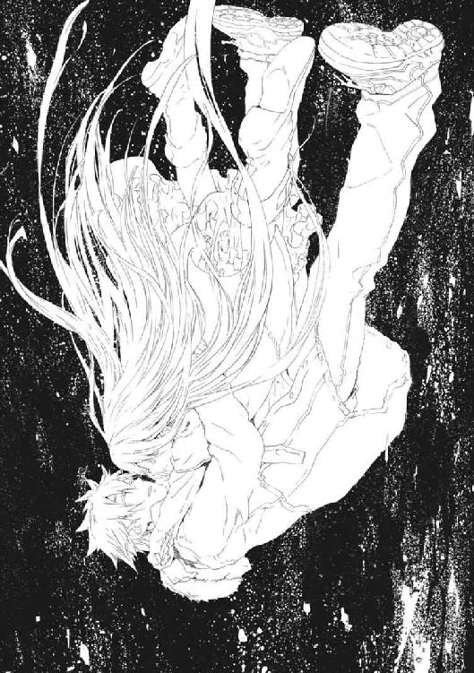
ずっと抑えていた気持ちをぶつけるような激しい口づけだった。どうしていいかわからないように、目を閉じた少女がやわらかいくちびるを押しつける。そんな彼女に合わせて、ただ長く唇を吸い続ける。
くちびるの薄い肌ごしに、熱が伝わってきた。鼓動の強さが、そこに彼女がいることを仁の胸に刻み込むようだ。
「あたしのこと、胸にいっぱい詰めこめた？」
このままついて行かんばかりにぎゅっと抱きしめてくる。そして、ためらって、無茶苦茶にムリをしながら笑って手を離す。
「メイゼル！」
薄闇の中、浮かび上がっていた彼女の姿が遠ざかってゆく。仁は、たどり着くべき場所に流されてゆく。
「せんせ、前に文化祭の劇でやったこと、わすれないで。白雪姫の口づけで、悪い女王だってよみがえったのよ」
しあわせな終わりを信じているお姫様のように、彼女は晴れ晴れと笑う。きっと彼女は、どんな運命にでも打ち克てると信じている。
「ありがとう」
そして仁は、暗闇の中でひとりになる。
けれど、熱はまだ残っている。しあわせな幻のように。
仁は目を閉じて、たどり着く場所を待つ。
時間の流れを外れた薄闇は、ひどく不吉で重苦しい臭いがした。〝最後の魔法使い〟の旅路が、《増幅器》を破壊されまいとする幾多の歴史からの干渉を乗りこえる、もっとも厳しいものだからだ。現れるたび最大の敵となる、本来なら同胞である再演魔導師をくびり殺しながら歩む、屍山血河の道だ。
ふと人の気配を感じた。
メイゼルではない。それが誰のものなのか、仁にはわかる気がした。メイゼルをここに連れてきて、最後に引き合わせてくれた人だ。
「きずなちゃん、なんだよな」
〈......今のわたしが何歳だと思ってるんですか？ 〝最後の魔法使い〟に、きずなちゃんはないですよ〉
空間そのものを震わせるような、けれどやさしい声だ。
「俺にとっては、さっき別れたばっかりだからな。言われてもピンとこないよ」
この〝最後の魔法使い〟が、彼らの運命を操った最後の黒幕だった。それでも怒鳴りつけることなどできなかった。おそろしく長い時間を戦い続けた〝彼女〟には、それだけの何かがあった。
だが、再演大系という魔法は、極限まで至っても人のこころに作用できない。仁の気持ちがまったく見えていないように、姿をあらわさない〝最後の魔法使い〟がささやく。
〈怒っていいんですよ。ただの男の人と、ふたりの女の子のちいさな物語が、わたしが〝最後の魔導師〟だったせいで、こんなことになったんですから〉
仁は、これまでの奇妙な運命を振り返った。
「そういえば、俺たちは、戦う相手がデカくなっても、いっつも身近な話のほうに振り回されてたな」
〝最後の魔法使い〟になったきずなが、姿は見えないけれど笑っているかのようだった。
〈そういえばそうでしたね。こういう流れだと、普通は、男気とか見せて、わたしのほうに来るもんですよね〉
けれど、そうはならなかったのだ。
「言いたいことがあったんだろ。俺にだって、それを聞いてやるくらいの甲斐性はあるつもりだよ」
きずなは、仁を《増幅器》になった舞花にぶつけるために、世界で最後に死ぬ人間にならねばならない。だから、彼を送る魔法が使われたなら、それは〝最後の魔法使い〟の命が尽きる直前だということだ。
〈わたしは、武原さんが思っているほど不自由じゃありませんでした。その気になったら無限のチャンスがあるのに、これを選んでここまで来たんです〉
それは、奇蹟から逃げ続けたきずなの、彼女以外には歩めない生き方をまっとうした魔法使いのカーテンコールだ。
〈後悔はありません。わたしは、しあわせに生きました〉
伝える相手に仁を選んでくれたことを、光栄に思った。
〈それと、向こうについたら三十数えるだけ、目を閉じていてくださいね。わたしの身体、武原さんの知ってたころと変わっちゃってて恥ずかしいんですけど。そのくらいで完全に分解するはずですから〉
「がんばったな」
〝彼女〟に断末魔が訪れた。何かが砕け散る気配と、喪失感が薄闇に満ちた。
最後の最後に姿を現さなかったきずなのために、仁は目を閉じる。
そして武原仁は終末にいた。
風が、ひどく冷たかった。明らかに人間の都市の匂いではない、枯れ草のような安心感のある香りと、草原が揺れるような音がした。
約束より五つだけ多く数えてから、仁は目を開いた。
そこには一面の廃墟が広がっていた。二十一世紀の建築技術では到底建造不可能な、宇宙の暗黒まで届くような塔や、巨大なアーチ、そして蜘蛛の巣のような橋梁の網が空を覆っている。
技術の進歩か魔法の恩寵か、それらの施設には傷一つない。だが、人の気配もまったくない。それどころか、背の低い建造物は崩落し、道路は割れて草原となり、場所によっては樹木が茂っていた。
かつての栄華の跡は鳥獣の巣となり、文明は自然に上書きされていた。日中だというのに、青空に星のようなものがいくつも輝いている。人工天体だ。星を超えた文明が終焉を迎え、種としての人類が息絶えた、最後の弱々しい息吹の名残が、ここにあった。
仁がいる、腰ほどの高さがある草原を、ウサギか何かが跳ね回る音がした。崩れた建物の屋根では、リスが駆け回っている。瓦礫に片足をかけた牡鹿が、草食動物の用心深い黒目で物珍しそうに彼を眺めている。
緑豊かな廃墟は、野生動物の楽園だった。
仁は、美しくもぞっとする残酷な風景に、舞花を探した。〝最後の魔法使い〟が召喚した着点である以上、《増幅器》として送られてきた妹がここに到着するはずだ。
だが、彼の周囲は、秋も中ごろに入りつつある小麦色の草原だ。世界にただひとり取り残されたような不安の中、仁は苦笑した。
「参ったな。財布はメイゼルにわたしたままだったし、本当に着の身着のままだ」
手元にあるのは、もう電波の入らない携帯電話と、一箱の煙草とライターだけだ。あとは一本の《剣》だけだ。
焦れるような気分で、煙草を一本つけた。
ただひとり、風に消える煙の筋を目で追っているうち、再演秩序が弱い秩序だったということを納得できてきた。人間を〝救う〟秩序など自然秩序としてそもそも破綻している。高度な生物ほど進化と絶滅を繰り返す。種としての人類は、決して長命ではないはずだ。ここにあるのは、《神》すら止め得なかった人類という種の自然死の跡なのだ。
そして、魔法的観測者、つまり人間が死に絶えて地球が残った。世界が未来がと言っていたことが、いっそ滑稽だった。魔法的観測者がいなくなっても、自然も秩序も、たぶん秩序の影としての《神》も存在し続ける。
煙草を半分ほど吸い終えた頃、そのときは来た。
突然、枯れ草の野原が一瞬ですべて吹き倒された。
轟音とともに、影がすぐそばに落下した。
そこに、右腕の肘から先がない舞花がうずくまっていた。彼が《コンサートホール》で切り落としたままで、傷口からは血が滴っている。舞花の時間はあのときの直後なのだ。
「悪いな、歴史の果てまで追いかけてきたぞ」
仁が、問答無用で魔法消去を発動する。身も蓋もないが、この戦いだけは手段を選べなかった。
「ここに来ちゃったら勝っても戻れないのに。自然っていう神サマに、タダで守ってもらえるんだから、そうしちゃえばいいと思うんだけどなあ」
黒い刃を取り戻した《剣》を手に、仁は慎重に歩き出す。メイゼルの、自分の足で立とうとしていた姿を思い出していた。子どもであろうと弱かろうと、守られる側にも事情があるし、意地がある。成長しようとする意志がある。
「再演社会の連中も、子どもと親みたいな対等じゃない関係なんだし、従えよくらいに思ってたのかもな。でも、おとなの手元から子どもは出て行くものなんだよ。子どもが自分の力で立とうとしたときは、卒業なり子離れを真剣に考えてやるときなんだ。子どものほうに愛情がなくなったら、その気持ちを尊重するよりしかたない」
舞花までは、もう五メートルと離れていない。魔法消去のせいで、腕の傷からこぼれる血も止められていない。
「どれほど愛していても？」
草が根本から折れて見通しがよくなった景色の中、血の繫がった妹が立ち上がる。
「魔法消去、やっぱり恐いね」
だが、ちいさな舞花は笑う。
大地が、風が、世界そのものが揺れた。魔法消去の発動中であるのに、その震動を止めることはできない。
「なんだこれは！」
舞花のところまで歩いて、斬るだけで終わるつもりだった。それが、消去の発動中だというのに世界の激震は止まるどころか、空間が割れるばかりに激化している。
「〝ここ〟が歴史の果てだって意味も、〝ここ〟から枝分かれした全部の歴史に影響をおよぼせるって意味も、お兄ちゃんはわかってなかったみたいだね」
舞花も今にも倒れそうな大ケガを抱えたまま、足を踏んばっている。
「再演大系の歴史が終わる場所ってのは、こういうことだよ。再演魔導師たちが歴史改変で作った分岐世界が、全部死に絶えたってこと。何もかもが終わったから、《神》が、死んだ歴史の残骸を、最後まで生き残ってた歴史に合流させる、安定したたったひとつの世界──」
空の彼方から、雨のように降り注ぐものがあった。
それは膨大な剣だ。
刃の豪雨が地面に突き立って、土埃をあげる。
仁にとっても、頭上に落下してきた超高速の一刃を《剣》で打ち払えたのは、ほとんど偶然だった。
膨大な〝モノ〟の向こうに、数え切れない影があった。
強い風が吹いた。
「そして、すべての神人遺物が集まる場所──」
荒野に、幾万幾億の《剣》が、自分の未来に抗おうとした意志の象徴が突き立っていた。破壊不能の神人遺物は、人類史という《本》の終わりにどこへ行くのか。その答えが、最後のページであるここに集った無数の神人遺物だ。
「舞花なのか......」
砂煙の向こうの人影は姿を変えている。
妹は、仁とほとんど変わらないほどまで背が伸びていた。右腕も魔法で修復されていた。土埃で姿が隠れた一瞬で魔法が使われたのだ。
彼女の表情は、高校時代、仁の骨を折ったときよりすこし女らしくなっている。これが、舞花が殉職したときの姿なのだと思った。妹が知る最強の自分の姿が、十九歳で止まっていることが切なかった。
〈──《我》は、歴史の終わりにありて、人の幸福を祈られたもの〉
舞花の声で〝それ〟は言った。その声は、彼女ののどからではなく荒野に突き立った神人遺物の剣や本、盾や鎧、さまざまなエゴの産物から出ていた。
「おまえ、もう《増幅器》なのか。そうなって、ここで再演魔術を使い続けることが、おまえが決めた役目なのか」
白い羽衣を天女のように身体に巻き付けた舞花が、健康的に日焼けした腕を振る。再演魔術は仕草で奇蹟を引き出す魔法だ。だから、仕草を繫げた複雑な魔法が、踊りの振り付けのように見える。
〈──《我》は、すべての歴史が合流した〝終着点〟にあって、〝過去〟を再演秩序の理想値に近づけるものである。ゆえに《我》は、《神》と繫がり再演秩序を安定させる《増幅器》としてはたらくものである〉
《増幅器》は謳う。
虚ろな瞳には、もはや武原舞花の意志は感じられない。
《増幅器》は、再演大系が〝人間の人口増加〟を織り込んだ自然秩序だから成立する。自然秩序だから、仁たちの世界でロケット打ち上げをシミュレーションできたように、歴史における最良の社会のかたちも計算で求められる。今、魔法的な制御システムとなった舞花は、全歴史分岐が合流したここから〝過去〟のありようの理想値を算出し、歴史干渉を支援できる。
彼は魔法学者の溝呂木に、理論上最高の魔法使いとはどういうものか聞いたことがある。それは《神人》と同じ最高の資質に、その魔法史が到達した最高の魔法技術をのせ、意識まで魔法の行使のみに最適化したものだ。今の舞花は、観測行為によって世界を操作する者としての、魔法使いの完成形だ。
〈──《我》は、人間の人数を最大にする秩序である。ゆえに《我》は、人間の悲劇と苦しみを、最小まで減少せしめるものである〉
仁の腹は緊張で痛む。再演秩序は確かに人間を救う。彼が諦めさえすれば、この《増幅器》は、何百万どころか何億、何兆、きっと数え切れない人間の命を救う。
〈──救われなさい。《我》の現れることは必然でした。《我》がもたらす救いを妨げてはなりません〉
それでも、仁は右手の小指を巻きこむように、折り曲げる。
薬指を、意志を確かめるように折り曲げる。
中指を、立っている足もとを見定めるように折り曲げる。
人差し指を、後悔のないこの瞬間が揺らがぬように折り曲げる。
親指を、武原仁という男のありようをまとめるように曲げ、四本の指をしっかりと押さえつける。
かくして彼の右手は《剣》を握り直した。砂塵と幾万の剣の向こうに、敵がいる。
「救ったとか救われないとか、勝手に言ってんなよ」
〈弱き者よ、《我》は、時の果てより観測して、あなたをよく理解しています。あなたは、世界を信じると言いながら、長期間それを続けられる自信はなかったのです。だから、おのれの気持ちが熱いうちに、この時の果てに逃げ込んできたにすぎません〉
メイゼルの愛情は深い。だから、仁は、いい加減に決断をしたのではない。
今にして思うと、最後に震える彼の背を押したのは、単純なことなのだ。
彼は、戦い、歩む中で巡り会ってきたメイゼルやすべての者と一緒に、《神》に言ってやりたかったのだ。
「救われるとか、救われないとか、結果を知ってるからって勝手に修正してんなよ。誰がしあわせになって不幸になるかなんて、おまえらが知ったことか！」
仁の手は、今も大切なものと繫がっている。仁が信じた人たちの未来は、この人類史の最後のページから振り返るより輝いていると確信する。
「俺たちの価値を〝未来〟から勝手に決めるな」
信じた〝今〟を勝手に整理し修正するものを、ぶち壊しにしてやると決めた。だから、この数え切れない剣と〝モノ〟の墓場が、仁の最後の戦場だ。
舞花と重なった《神》は謳う。
〈──魔法消去を停止せよ。あなたを希望する歴史、希望する時代に転送しよう。だが、妨害を続けるのであれば、再演秩序の遂行のため排除せざるを得ぬ〉
仁の背後で、人間の意志とエゴが作り出した神人遺物が宙に浮く。操る魔法使い自体が死に絶えたから使えないはずの魔法を、《増幅器》は周囲の神人遺物から引き出している。強くなったはずの魔法消去を、仁には原理すらわからない技術でくぐり抜けられているのだ。
ここに、人類史が到達した最高の魔法技術があった。《増幅器》が再演魔術で制御した何十本という剣が、彼を狙って弾丸のように射出された。
仁は、刃に突っ込んで、彼に当たるものだけを正確に打ち払った。魔法消去が、飛翔の軌道を誘導する魔法は破壊してくれた。狙いのはずれた遺物の剣が空中で衝突し、絡み合って墜落する。
《増幅器》の口調は、超越者のごとき男神と、慈しみ深い女神の間を揺れる。
〈──あなたの戦いは無意味です。あなたの大事な少女たちも、あなたがいなくなれば、結局は次の愛を見つけるのですよ〉
「よかったよ。それじゃメイゼルも、俺がいなくてもしあわせになれたんだな」
胸のあたりが、なぜだか、あたたかくなった。メイゼルがきっと自分らしく生きたのだろうと信じたのだ。その結果、他の男を愛したというのなら、それでいい。
「安心したよ。俺が知ってる世界が戻ってきた」
ここは、世界でたったふたりの人間になった兄妹が、殺し合う舞台だ。
仁のことを、メイゼルは、すべてを賭ける勝負が好きな賭博師だと言った。時の終わりという人間の世界の〝外〟で、彼は神を前に、命を掛札にするテーブルについた。
空中に浮かんでいた遺物の盾に《剣》を叩きつける。破壊不能なはずの神人遺物が、黄金の光のかけらとなって砕け散った。
〈──なぜ報われぬ戦いを続けるのです〉
仁の歩みを止めようと、武器にならない遺物の台や指揮棒が飛んでくる。重い《剣》ではなく、台を手でつかみ取り、指揮棒やガラクタを叩き落とす。へし折れた神人遺物が、即座にきらめく光を残して消失する。
書見台らしいそれを踏み砕いた。
「この光は......《魔炎》か？」
歴史改変の産物である《賢者の石》を原料にする神人遺物が、歴史の果てで役目を終えたように砕けた。その破片が《魔炎》になって燃え散る。魔法消去中は見えないはずの現象が、遺物の秘めていた力が大きすぎるのか、今の仁にも感覚できた。
黄金の細かい粒子の群れがゆっくりと消えてゆくさまは、まるでおとぎ話に迷い込んだようだった。だが、破壊できるとあれば戦いようはいくらでもあった。先手を打って、地に突き立った遺物の剣を、まとめて黒刃で切り払う。
黄金の炎が、霧のように荒れ野を覆う。その火影の向こうで、《増幅器》の指は閃くように動き続けている。
空を覆うように巨大な影がよぎった。
頭上を仰ぐと、高度五百メートルほどの位置に、半径一キロメートルにもおよぶ半球型の底面をした、虹色の巨大構造物があった。
「《幻影城》か......。こいつも神人遺物だったな」
この大きさの遺物を迎え撃つのは不可能だった。だから仁は、流星のように落下をはじめたそれに背を向けて走った。《増幅器》の背後に回って盾にしてしまえば、彼も安全になると信じたのだ。
神人遺物が、そうはさせじと黒い嵐のように押し寄せる。仁の足を一本の剣が深々と切り裂いた。
草の倒れた草原に転倒してなんとか致命傷を避けた仁は、立ち上がろうとして、鋭い光を見た。仁は、その神人遺物を知っていた。ペーパーナイフのような形状のそれは、常に《幻影城》と一組で運用された《鍵》だ。
仁は、彼に止めを刺すべく落下してきた槍の雨から、必死で転がり、這って逃げる。死の滝のようなそれを完全にはかわしきれず、左足の裏が地面に縫い留められた。
「くそ！ あぁああああっ」
絶叫してその黄色の短槍を引き抜く。ようやく立ち上がると、動きの止まった仁に、蜂の群れが襲うようなうなりをあげて、円盤形の刃物が二十枚ほども飛んできた。
《剣》を地に突き立て、かわりに手近に刺さっていた長柄を引き抜く。三つ叉の銛になっていたそれを身体を回旋させながら振り回す。その柄で払ったものが十二枚、外れたものが八枚、一枚だけが頰をかすめた。
刃物が突き立ったままの銛を振り上げ、十五メートル向こうの標的へ投げた。狙いあやまたず、それが《幻影城》の《鍵》を真っ二つにへし折る。
天空が、さっきまで《鍵》が放っていたのと同じ色の光に染まった。地上三百メートルほどまで降下していた《幻影城》が目を開けていられない閃光を放っていたのだ。
大地が波打つように揺れた。仁は《剣》にしがみついて、ようやく地面に倒れ伏すことをまぬかれた。
強すぎる光で焼かれた視覚が、ようやくもののかたちをとらえられるようになったとき、豊かな草原は真っ黒に炭化していた。無事なのは《鍵》のある位置、仁の周囲だけだ。
この決戦を予期していたきずなが、《幻影城》が利用されることを見越して、たぶん《鍵》に自爆機能を追加していたのだ。この強烈な魔法爆撃が、再演秩序に対する意趣返しに思えた。
何万という遺物が木っ端みじんになって、黄金の炎に還元されていた。
悠久の風雪に耐えてきた巨大文明の廃墟が、そこかしこで音高く崩れはじめていた。仁の魔法消去によって維持魔術を破壊された建造物が、限界を迎えたのだ。
その崩落に巻き込まれて、地平線が黄金の炎に包まれはじめていた。
多数の神人遺物を盾にして、《増幅器》は健在だ。
〈──《我》は、世界を救わねばならぬ〉
再演秩序の声は、多数の遺物を震わせて発せられたせいで、何重にもこだましているように聞こえた。
「見えないのか」
荘厳な《魔炎》の雲をかき分けて、仁は血まみれの足を引きずる。
それぞれ想いを込めて作られたモノを、ただ使い終えたガラクタとして壊してゆく。
「俺の後ろにあるものが見えないのか」
仁はひとりでここへ来たわけではない。彼の背後には、幾多の血の積み重ねが、託された願いの積み重ねが、憎悪が、愛情がある。
砂が入ったか《幻影城》の光が目を傷つけたか、いつの間にか、涙を流していた。
〈──それは感傷であり思い出にすぎぬ。そのようなものが世界を救うことはない〉
会話が成立したそのことばが、《増幅器》として肉体を提供した舞花の絶叫に聞こえた。
だから、仁は叫び返す。
「だったら、試してみろ！」
炎が、胸にくすぶっているようだ。
挑みかかるように煌びやかな名剣、魔剣が弾丸のように撃ちだされてくる。仁は、肉を削られながら掲げた《剣》一本でそれをへし折ってゆく。
キンと不吉な金属音がした。戦いをともにしてきた黒刃に、大きな罅が入っていた。歴史の果てではこの《剣》も壊れる。刃を形成し直すために魔法消去を止めることもできない。
よろめいて立ちあがる。
逃げる場所などない。だが、仁の戦いはこれまでも最後にはそうだった。
「バカみたいだな。ちょっと前まで、たぶん本気で、こんなふうに生きてみたいと思ってたんだ」
確実に死に近づきながら、《増幅器》へとせまる。ひとりであっても、ひとりで死ぬものだからこそ足を踏みしめねばならない。ひとは絶対であるかのような〝それ〟といつか向き合う。
神の前に、ひとりの《悪鬼》は立った。
その距離は、すでに十メートルを切っていた。
再演秩序の翻訳者である《増幅器》は、そうしている間にも高速で複雑な印を組んで〝過去〟の歴史を救い続けている。
〈──人間たちよ、我は、あなたたちを愛しています〉
《魔炎》の大紅蓮の中、それは語る。
ことばに噓はない。《増幅器》に、自然法則の導きを曲げるような意志はない。だから、この状態の舞花が人間を愛するのは、石ころが重力で地面に落ちるのと同じ、ぶれのない自然現象だ。
だから、仁が巨大なものの前で自分を矮小に思えるのも、自然現象である巨石の崩落や大瀑布を見て感慨に打たれるのと同じだ。
〈──あなたたちを愛しています〉
「愛している、か」
メイゼルのことが、シンプルな勝負に乗り切らず、こころに引っかかっていた。そのうずきは世界との繫がりで、《増幅器》のようではない人間としての仁の咆哮だ。
傷だらけで疲れ切った仁は、苦しみで身体を満たしている。なのに、極限状態の中、世界を信じていられた。信じることができるようになった。
「もう、おまえが救う必要はないんだ。この世界は地獄じゃない」
仁は、あえぐように泣く。
苦痛の中で感じるこの心強さを、誰かに伝えてやりたい気分だった。彼のように、信じられなかった誰かに。この世界は地獄ではないと。誰かを救ってやりたいと手は伸ばされているのだと。最後の〝敵〟を打ち倒してもあとは滅び去るだけの世界で、彼自身も、誰かに「愛している」と言ってやりたい。たとえ世界にひとり取り残されたとしても、人はひとりではないと。
仁を排除して〝過去〟を救い続けたい《増幅器》が、神人遺物を津波のように押し寄せさせる。大気を掘り砕くような轟音が、終焉の荒野を揺るがした。
その間も、舞花は再演魔術を送り続けている。こんな瀬戸際でも人類のために魔法を送り続けている。
見通せない黄金の《魔炎》の向こうに、人間にはどうしようもないものが立ち塞がるようだった。乗り越えようがない巨大な壁のように、叡智の高波が突っ込んでくる。
捨てきることも純粋になることもできない煩悩まみれの凡夫として、仁は神の前に立っている。
近づいてくると、その波の正体は、ちょうど竜巻を横倒しにしたように渦巻く気流が、神人遺物を巻き込んだものだとわかる。内部でぶつかり合った遺物が砕けて黄金の光を噴き上げていた。正気を削るようなすさまじい音を立てて迫ってくる、高さ五メートルを超える死の壁を飛び越えることなどできない。
魔法使いは神と対峙してそれと戦う。神の前に凡夫として立つことは、たぶんひとつの祈りだ。
「──神サマよ」
奇蹟のない世界に生まれた仁が、剣を構え直すと、自然に目を閉じて神に祈っていた。
音の津波に吞み込まれる寸前だった。びりびりと全身の肌に響いて、神経を張り詰めさせてゆく。
「悔いはあるさ。怒りだってあるさ。俺と気持ちでつながってくれてる人もいる。だから──」
目を見開いて、仁は真っ正面から突き進んだ。
「全部ここに持ってきた！」
彼は神を知ってなお、神の不要を叫ぶ、《真なる悪鬼》だ。
突風に乗った剣が、仁の腹を深々と貫いた。
風に押さえつけられかわしきれなかった槍が、まぶたを貫いて左の眼球を半分そぎ取った。
脇腹が、足が、深々と切り裂かれる。短剣が背中に突き立った。
奇蹟はない。だが、歯を食いしばれる。
奇蹟はない。だが、変われる。強くなれる。
奇蹟はない。だが、ほんの一時でも恐怖に打ち克てる。
奇蹟はない。だが、根拠のない希望を持てる。
奇蹟はない。だが、夢を見られる。
奇蹟はない。だが、よろめいてもまだ前に進める。
魔法はなくとも向かい風に立ち向かってきた。悩み誤りながら選び取ってきた。
彼の背中は、みずから未来をつかもうとした、幾百億の手に押されている。彼と同じ方向を、幾兆の瞳がともに見ている。無数の足が、彼とともに踏み出される。
「ああ、ああああああああああああ！」
血を吐き、全身から血霧を噴きながら、刃を叩きつける。神人遺物を巻き込んだ大気の固まりを、一閃で切り裂いた。
激痛と繫がった痛覚の魔法消去が、肌に触れる苦しみが、魔法史の到達点である絶技を食らい尽くしてゆく。
仁は今、希望がなくとも折れず、未来がなくとも曲がらず、正義がなくとも切れ味を鈍らせない一本の剣だ。奇蹟に縛られたきずなと同胞が解放を願って鍛えた、神を殺す《剣》だ。彼は迷い多く不純だ。だが、利剣は、むしろ混ざったものの成分や複雑な製法によって成る。
大地に突き立てた《剣》を杖に、烈風の壁を突き抜けて、極限まで神に近づいた魔法使いにせまる。
《増幅器》との距離はすでに一足一刀、しかし予備に残されていた剣が、えぐられた左目の視覚から打ち出された。
はじき返されて、また深く傷をえぐられてよろめく。血を吐きながら、彼はまた折れかけの黒刃を大いなるものに向ける。
もう一度足を踏みしめる。
戦い方は、身に刻まれていた。
切り返すように右から来た剣の雨に、仁は、勢いにぶつからず急所に当たるものの軌道をそらした。
一本に、ついにかわしきれず腰骨の上を貫かれた。肉をえぐり内臓を傷つけたそれが、一瞬で意識が飛びかけるほどの熱と切迫感を下腹にもたらす。
それでも、横倒しに体が崩れ落ちるべき刹那、衝撃で体勢が揺り戻された勢いを利して、回旋するような踏み込み一歩で、超越者の内懐へ潜り込む。
《増幅器》の気息が、驚愕に乱れた。今はもういない東郷先生が、すぐそばで「見事」と笑った気がした。師は、悪鬼の武術を、肉体一つで奇蹟なく作り出す魔法だと言った。
逆袈裟の一閃が、酷使を重ねて欠けた刃を、舞花の左肩から肋骨を断ち割って内臓に届かせた。鈍い手応えがあった。
刹那、《増幅器》となって表情を失っていた舞花の瞳に、怒りが揺らめいた。胸郭になかばめり込んだ《剣》の腹に、妹の両手が同時に鋭い掌底を叩き込む。キンと軽い音とともに、黒刃がついに砕けた。手元の柄まですべて黄金の光となって消失する。
武器を失った仁が、自失した瞬間を舞花は見逃さなかった。同じ師に戦いかたを学んだ妹に、彼は右手をとられていた。
投げられると思った。そして、三本もの剣が突き立った身体で地面に叩きつけられれば、確実に致命傷になる。
だが、体重移動を利用して彼の体勢を崩すはずの舞花の足が、固められたように止まった。
仁は、地を這いずった〝過去〟の人々の「舐めるな」という声を聞いた気がした。
五感による消去を最大効率で受けるため、魔法消去者に接触することは、魔法使いにとって死を意味する。魔法の力を失った《増幅器》ののど笛に、仁は左拳を叩きつけた。そして、最後の力を振り絞って体を折り、さっき弾き落とした神人遺物の一本を引っつかむ。
《増幅器》に戻った舞花が体勢を立て直すより、仁が身体を起こしざま撃ち込んだ右からの斬り上げのほうが早い。右脇腹からすさまじい切れ味で妹の肉を裂いた刀身が、背骨を断ち切って左胸へと抜けた。
妹の顔をした《増幅器》は、致命傷を受けても、仁を「悪鬼」とは呼ばなかった。
彼女は苦悶の中で、ただ罪深いいとし子を見つめるようにやさしく微笑んだ。
〈──愛しています〉
散乱した最後の神人遺物群から、やさしい声が聞こえる。仁は眼球が血でふさがった視界の暗さをなんとかしようと、目をぬぐう。
〈──《我》は、世界は、人間を愛しています〉
胴がほぼ真っ二つになった妹が、荒れ野に倒れた。
それはひとりの魔法使いの死ではない。人を救うために生みだされた、縛られた神の仕事の終わりだ。
舞花はまだ生きているだろうかと、激痛しか生まない身体を引きずって、彼女の無惨な上半身のほうへと歩いた。
そちらにいた、血の臭いに集まっていた野犬の群が、一目散に逃げていった。
奇蹟が砕け散る黄金の炎の残滓を、野生動物が遠目に見ていた。表情のない瞳をまっすぐに、最後のふたりになってまで殺し合いを選んだ人間たちへと向けている。
神話も奇蹟も、人間あってのものだ。その歴史はもう終わった。命尽きた後、彼らに残された運命は、せいぜい野犬のエサだ。
一歩動いただけで、腹腔にたまった血で臓器が圧迫されて、うずくまりたくなった。
ちいさく三歩足を進めただけで限界になった。舞花の血の気のない顔は、眠るように安らかだった。その胸に呼吸の兆候はない。
そこにひとり仁は取り残された。
だが勝利者として取り残された。
仁は、涙を流していた。止めようもなく、そうすることしかできなかった。
疲れ切っていた。腹に刺さった剣のせいで、血管が脈打つごとに内臓が跳ねるようで、気分が悪くてしかたない。
「これは、抜いたら死ぬな」
だが、抜かないと、こんなにも疲れているのに座ることもできない。
仁はためらった後、身体に刺さった剣を抜いた。ずるりと太い金属が胴から抜けてゆく間、激痛と内臓を奪われるような喪失感が、彼の気力を削ぎ落とした。三本全部抜いたときには、生命がごっそりなくなって、立っていることもできなかった。
「は、は、こりゃもう無理か」
ふと、座り込んだ目線の高さから、ただ世界は広いなと思った。自分のちいささが心地よかった。
尻を地面につけたら、そのまま座っていることすらできず仰向けに倒れていた。
血が流れ続けている。
横になったまま、どこまでもただ青い空を見上げた。力を入れられなくなっていた。どうしようもなく気持ちが悪くて、身体の向きを変えても楽にならない。
全身のこわばりが溶けてゆくようだ。水が抜けるにつれて、頭も腹も背中もどこもかしこも痛んだ。仁は死ぬのだと確信した。
ここにはもう何もない。
「舞花、もう聞こえないか」
胴を真っ二つにした彼の妹は、もう反応しなかった。
空は変わらず高く、雲が流れていった。
世界の終わりは、こんな風景なのだと納得した。
今、神と対面しているのかもしれなかった。
人間の数を最大にする性質をもつ完全秩序は、彼という最後の人間が死ぬことで完全に破綻する。
彼を支配する魔法消去という秩序は、奇蹟を許さない。だから、死後に魂が向かう場所などない。
仁というひとりの人間にできることは、もうこれで最後だった。人類としての意地が、たぶん彼に、最後によい人生だったと笑わせた。
「ありがとう」
そう言わねばならない。こころから思った。
人間は世界に最後の別れを告げる。
彼の身体から、最後の最後になっても苦しみは消えない。のどが渇いてしかたないのに、溺れるように彼は死ぬ。
それでも世界は残酷なまでに公平だった。彼らは、不満足と苦しみの連続だったが、自ら意志のままに足跡を残すことを許された。
それでも────
†
黄金の雨が、降りはじめたのは、倉本きずなたちが武原仁を送り出して、数分の後のことだった。
それは空高くからではなく、空中から突然わきだした。そして、きずなたちの世界を素通りして去るように、地面に落ちても積もることもなく消えていった。
仁のアパートの近隣住民も、避難先から戻ってきて輝く雨を目にした。奇蹟を認識しないはずの魔法消去者たちが驚きの声をあげた。
倉本きずなは、魔法消去者たちがこれを認識できていることにまず驚いた。雨の正体は、〝人類史の果て〟で破壊された神人遺物のかけらが、打ち寄せたものだからだ。
魔法消去で《魔炎》に包まれても燃え尽きず、無限に降り注ぐようだった。
黄金の雪のように揺らめいて落ちたそれを、きずなは手のひらに受け取る。
──脳裏に、ここにあるより豊かな世界の幻影が揺らめく。
明日からも続くはずだった再演世界の風景が、破片を透かして〝観えた〟のだ。その破片は、誰もが救われ、だが不幸を割り当てられればはい上がれない世界で作られた、遺物だった。
膨大すぎて、黄金の雨は、いつまでも降り止まない。
これが無害なものだと気づいた人々が、足を止める。手にかけらをとって、感嘆し声をあげる。
「あの人たちにも、〝未来〟が見えるんだ」
きずなは、この雨がはじまって、もう一度世界が決定的に変わったのだと知った。《扉》の向こう、最遠未来へ飛ばされた武原仁は、《増幅器》を破壊したのだ。彼女の肉体にのしかかる〝未来〟からの再演干渉が、楽になっていた。
人々はやさしい光のシャワーを浴びて、満ち足りた未来の自分を見て惜しがった。彼らに奇蹟が見えるのは、魔法消去という地獄特有魔法がまだ不安定だからだ。この世界は、再演世界ではないが、もはや元通りの《地獄》でもない。
魔法使いとこの世界の住人、魔法使いと《悪鬼》が共存する、現実と魔法が結婚した新時代がはじまる。
当たり前の男だった仁が、ひとりの人間として世界と対峙する〝英雄〟の役割を果たしきって、それはやってきた。
きずなの再演魔導師の感覚は、この黄金の雨が、地球のあらゆる場所に降り落ちていることを感じていた。世界中の誰もがきずなと同じように足を止めた。
二度とあるじが帰ることのない武原仁のアパートの前に、きずなは立ちつくしている。
メイゼルが、金色のかけらが群れ舞う空から顔を背けるように、ずっとうつむいていた。
ひとこともしゃべらず、自分の右手を、メイゼルが口を半開きにしてじっと見つめていた。
その手は、少女が仁と、ずっと繫いできた手だ。
「──ぅあ、ああ......」
きずなには、その悲痛なうめきが誰のものか、最初わからなかった。
地面に足が貼り付いてしまったように動かないまま、メイゼルが泣きだしていた。
すすり泣きだったその声が、どうしようもない理不尽へとぶつけるように大きくなってゆく。
メイゼルと仁の間にしか通じ合わないもののために、少女は声をあげて泣いていた。
身も世もなく、誇り高い少女が、世界に叩きつけるように号泣していた。
これまでずっと、どんなにつらいときも涙をこらえ続けたちいさな魔女が、はじめて人前で泣き顔をさらしていた。
右手を大切に抱きしめて、人目をはばからず、声を限りに振り絞って。
頭ではなく、体がそうさせるように。
こんなにも彼と奥深いところまで一緒だったのだと、世界中に向かって叫ぶように。
メイゼルとは、本当は泣くときもこんなに激しい少女だったのかと、きずなはただ引き込まれるようにそのさまを眺めた。
誇り高く生きようとした少女は、自分を支えて引っ張ってくれた、心強い手を永遠に失った。つらいときには勇気づけてくれ、不安なときも決して裏切らない特別な手に、メイゼルは一生涯もう会えない。
武原仁は、鴉木メイゼルの半身だった。決してかわりのきかないものを、彼女は永遠にもぎ取られたのだ。
彼女は、誇りと魔法以外のすべてを奪われて奇蹟果てる地に堕とされ、ひとりの男に出会った。
その男は、悪人になりきれず偽善者として、戦うだけでいっぱいいっぱいだった。彼女に出会った。彼は、ヒーローのようなものになりたくて、胸のうちに秘めていた誰かを助けてやりたい願いを彼女にぶつけた。
そして、武原仁は、彼女の純粋な恋情を受け止め、そして永遠に去った。
今、彼女がしっかりと右手を胸に抱いているのは、あの手を握るものがもういないからだ。
あの手をどれほど真摯にのばしても、もう幼い手を握り返す〝彼〟はいない。
金色の雨は降り続けていた。
「せんせ！ せんせ！」
泣き叫びながら呼び続けていた。
それは二度と取り戻せないものを失った子どもの、整理しようのない感情のほとばしりだった。
半身を失うことで、今、ひとときだけ彼女は「ただの子ども」に戻れたのだ。
その涙をきずなも、見かねた近所の人々も、どうしてやることもできない。ただ、黄金の雨はあまりにもおとぎ話めいていて、世界がもっときれいだと思っていた幼い頃を思い出させるのだ。だから、それぞれの理由で、人々も共有できない涙をこぼす。
きずなの目から頰に、そのとき不意に、熱いものが伝った。
「魔法みたいだね」
きずなはつぶやいていた。
過酷すぎる運命を押しつけられたメイゼルを救ったのは魔法ではない。ひとりの男の夢だった。彼の行き場を求めた情愛であり、誠実でありたい願いだった。
今、鴉木メイゼルは、史上最年少の刻印魔導師でも、《憎悪の女王》イリーズの罪を背負った家族でもない。すべての荷物をおろした、ただ命がけで愛された子どもだ。
そして、美しい夢に包まれながら、彼女たちは、人生のひとつの季節を卒業しようとしていた。
メイゼルは、純粋な涙をこぼす。裏腹に、きずなにとって、この雨は、おとなとして責任を背負って生きはじめる区切りだ。
仁も、きっと成長してゆくメイゼルを見守っていたかった。日々変わってゆく彼女とともに生きることで、彼も変わったのだから。その彼を安息の場所からもぎ離したのは、〝最後の魔法使い〟になってゆく、これからの自分なのだ。
全身で泣くメイゼルの背中を、今、彼が守っている気がした。だから、きずなもうつむいて、止められない涙を隠した。
十崎家の団らんがよみがえる。メイゼルの涙に同期したように、彼女にも激情が押し寄せて止まらない。
きずなの身は、ただひとり黄金の雨に打たれている。再演大系の魔法使いである彼女だけが、雨と完全に同調していた。睫毛に、髪に、服に、金色のかけらがつもっていた。
この雨に、彼女だけが濡れていた。身に浴びるかけらから、さいなむように未来の記憶が伝わってくる。思わずついた吐息が、白い煙になった。これから冬の寒さがつのってゆく時期なのだと思い出す。
「ああ、冷たいや」
高い空を見上げた。人類史の最後のページで行われた、仁の孤独な戦いを思う。光の雨は、やさしい小雨の瞬間もあれば、嵐のような豪雨のときもある。仁の戦いは、一筋縄ではいかない厳しく激しいものだったのだ。
輝くスコールの裏にひとりの人間の生命があることを、世界中でこの奇蹟を見る人々のうち、知る者はほとんどいない。
メイゼルの涙だけが、武原仁に支払われた報酬でもあるかのようだった。
雨脚が弱まったころ、きずなはようやくこれからのことに頭が向いた。最初に考えたのは、今晩のごはんをどうしようということだった。
そして、メイゼルを今日からどうすればよいのだろうと、ふと思った。
だが、少女のちいさな身体を不安に見下ろしたとき、もっともつらいはずの彼女が強い瞳で見返してきたのだ。
「ああ、いっぱい泣いちゃったわ」
あんなにも思い切り涙を流したメイゼルが、目を赤くしたまま、強い光を見つけたように笑う。
そして、泣き笑いの少女が、きずなの顔を指さす。
「なんて顔してるの、きずな。......あたし、せんせのこと、なくしたわけじゃないのよ。もっと勉強してもっと強くなったら、魔法使いの責務だって全部終わらせて、かならず助けに行くもの」
情愛深い少女は、涙を流し尽くしても気持ちが残っていることを嚙みしめるように、その手を胸に抱いていた。
「今ね、たくさん泣いたら、せんせのいろんなこと、全部許したげられる気分なの。こういうのって、ただのスキじゃなくて、愛してるってことでしょ」
彼女は、仁を失ってなお前を向き続けている。それは、彼の願いが叶ったということだ。ここにはもう、かわいそうな子どもはいない。未来を決して恐れないこの姿が、仁のこころをとらえたのだと思った。
「そうなのかな？」
それでも、メイゼルの言っていることがわからなかった。きずなに、ませた少女が、自信をこめて教えてくれた。
「せんせ、ああいう人だから、自分のキモチに気づかなかったのね。これが愛じゃなきゃ、これ以上なんて想像もできないわ。ねえ、せんせって、はじめて会ったときから、あたしのこと、ありのままでいさせようとして、何もかも捨てるくらい一生懸命になってくれたのよ。これがどういうことか、あたしも同じキモチだからわかるの」
痛みを抱えて、ひとつおとなになった魔女が、自分の涙を許せるようになったかのようにぐしゃぐしゃのまま微笑む。
「それって、ホントは、ずっと愛してたってことだと思うの」
†
十崎京香は、警察庁へ向かう車の中で、その金色の雨を見た。
輝くものが、走行中の自動車の天井やフロントガラスを突き抜けて降り落ちている。魔法消去者に戻った京香にすら見える、とてつもない魔法現象だ。
だから、手近な警察署に行って、運転手ごと借りたパトカーの中で、京香はこれからを考えずにいられない。
魔法消去は復活した。魔法使い暴動はおさまりつつある。魔法テロリストに占拠された警察庁も解放された。〝未来〟の干渉者たちは、ひとまず挫折したと推測できた。
だが、それでも《神》による〝救い〟は、今の社会に不満だった人々に福音だった。報道では、《魔炎》のともしびは、アフリカの一部のような貧困地域ではあがらなかったという。そして、そういう選択がなされたからこそ、世界は「魔法使いと人間の混淆の時代」として、新しい段階を歩み始める。
京香は、シートに身体を預けて、天井をすり抜けて注ぐ雨をにらむ。
「元通りの世界が、これまでの社会のために戻ってくることはない。そうでないと、希望を一瞬でも見た人々にアンフェアなのでしょうね」
黄金の雨は、まだ降り止まない。
車窓の外では、あれだけの戦いがあってなお、早くも日常がはじまろうとしている。
ふと仁から、この奇蹟の雨や今後のことについて連絡が入っていそうに思えて、携帯電話を奪われてしまったことを改めて悔やんだ。きっと幼なじみは、本当に重要なことならメールを送ってくれている。警察からの官給品である京香の携帯電話は、まず盗聴されている。そちらのデータを見せてもらえばなんとかなると、開きなおることにした。
「ちょっと、よろしいですか」
この忙しい折に京香の護送を命じられた制服警官に、声をかけられた。魔法現象に打たれて不安そうにハンドルを握る彼から出たのは、もっともな疑問だった。
「コレを見て、まったく動じてないんですね。警察と協力関係にあるかただそうですが、あなたが誰か、尋ねていいですか」
実直そうな警官に、京香はどう答えるか迷った。魔導師公館は、存在すること自体が非公然の機関だ。
だが、今日一日の騒動は、さまざまな秘密を徹底的に打ち壊してしまった。
これだけのことの後では、魔法使いとの関係を秘密のうちに管理などできない。だから、日本社会の理解を得られない刻印魔導師のようなシステムは、廃止されてゆくことになる。生き残った刻印魔導師たちの今後を、メイゼルのことも含めて、生きているなら仁と一度話し合わねばならなかった。
「すみません。そういうのに不都合あるかたでしたら、さっきの、忘れてください」
警官がまずいことをしたと勘違いして、強張っていた。
京香の仕事は、これから堂々と名乗れるものになる。
「問題ありませんので、どうか遠慮せず聞いてください」
社会の中で、警察ではできない過激な対応を分担しようと考えたこともあった。だが、そうした仕事が必要になったとしても、これからは組織と戦いそのものが隠されることはない。魔法使いとは、すでに日本社会にとって、人目をはばかる神話の生き残りではなく、異世界移民という社会問題だからだ。
「私は十崎京香です。魔法使い関係の治安を管掌する政府機関に属しています」
京香は、幼なじみと抱いた願いが、いつの間にか果たされていたことに、目頭が熱くなった。
魔法と歩むしかないという重荷を、全住民で背負うとき、世界はもはや誰にとっても《地獄》ではない。
男は荒れ野に倒れていた。
そこには、生きている人間の姿はない。
壮麗だった巨大建築が崩れた廃墟と、焼け野原が広がるばかりだ。
幾億個も転がっていた役目を終えた道具は、すべて炎に包まれて消えた。
血の海に倒れたふたりの人間を遠巻きに見る動物だけが、ここの活力あるものだ。
轟々と、ただ風が吹いていた。
だが、奇蹟はついに世界を円環に結ぶ。大気を割って空中に白い腕が現れた。
もがくように空間に自分の居場所を無理やり広げて、這い出したのは女で、白いドレスを着ていた。
男の姿を目にして、ドレス姿の女は、なつかしむように右手を胸に抱く。
ふたりの間には、悠久のときが横たわっていた。だから、その壁を乗りこえてたどり着いたのは、女にとっても長い時間を経た後だった。
それでも他のどこでもないこの《本》の最後のページを彼女は、目指した。再演観測者が絶滅していて《本》の観測精度が低く、時間移動に手間取ってもだ。
長いスカートを引きずって、安らかにやりきった顔をした男の頭を膝枕してやった。そして、絹の布地が汚れるのもいとわず、いとおしげに刀傷のついた頰を指でなでる。
男の頭はまだ温かい。だが、まったく目を開ける気配などない。
女が、たおやかな手をそっと男の胸に置く。
びくんと男の背中の筋肉が反り返って、ひとりでに跳ねた。高圧の電気を流されたように、びくんびくんとオモチャのように何度も男の胸が上下する。
筋肉の反応で動いた男の手を、大切そうに女がつかまえる。
男がついにこわばった目を開けた。そして、血を吐いて咳き込み、陽光から逃げるように顔を横向けた。
荒野には不似合いな電子音が響いた。女がまだ少女だったころと、着信音は変わっていなかった。男は、ぼろぼろのスラックスのポケットから、震える携帯電話を取り出す。
男が画面を開く。メールが一通入っていた。血も乾きかけた指で操作して受信すると、画面に表示されたのはシンプルな一文だけだ。
〈大スキ〉
泣き笑いに女が笑う。気が強そうなあめ色の瞳をうるませ、いたずらっぽくささやく。
「せっかくあたしが、ひどいことしてあげに来たのに、心臓が止まったくらいで死ねると思ったの」
そして、女の影が男に、やさしく、くちづけをかわすように重なった。
あとがき
実は、執筆中、この本にあとがきを置くべきか迷っていました。
『円環少女』という小説でやりたいことは、一通りやってきたつもりだったためです。物語を読み終えたら、もう本には後ろに何もないかたちが、すっきりしてよいかと思っていました。
ただ、このシリーズのあとがきも最後だということで、閉幕のあいさつをさせていただくことにしました。
最後までつきあってくださいまして、ありがとうございました。
この十三巻にはひとまず加えることがないので、今回は、シリーズ全体を振り返ったあとがきにしようと思います。
なので、まだ読み終えていない皆様には、先に本編のほうをお勧めさせてください。
というのも、シリーズ全体のあとがきとなると、この十三巻の話だけでなく、シリーズ通巻の話題がたくさん出てくることになるからです。
今回は自重しないあとがきなので、ご注意を。
円環少女は、最初に第一巻のお話をスニーカー編集部に持っていったとき、五巻からなるシリーズ案をいっしょに出していました。実は最初、円環少女は五冊完結の予定だったのです。
最初に計画した一巻目案が、そのまま第一巻になりました。第二巻案は、実際の巻数の二巻と三巻。第三巻案から、四巻から六巻までの展開ができました。学生運動を掘り返すような話に三冊使うのはなんだったなあと、わりと反省していたり。
七巻は、雑誌「ザ・スニーカー」上での短篇掲載の話をいただいたことでできたものなので、初期予定としてはノーカウント。
八巻以降の第二部は、わりとルーズになっていて、八巻と九巻が、予定での第四巻案だった展開。十巻の円環世界の過去編は、その裏でインターミッション的に進めるつもりでした。十一巻、十二巻、そしてこの十三巻が、予定での第五巻の内容です。なんという無謀計画。このシリーズ最長になった十三巻は、本来は第五巻案の後半部だけなのです。
こうして振り返ると、第一巻の情報量は多かったのだと改めて思います。最終巻の執筆中に改めて確認したのですが、一巻でえらい分量の伏線を置いているんですね。五巻予定だったので、遅くても一年から二年後には回収している目算でした。
最終巻の執筆中に、既刊を頻繁に見直して、いろんなことを思い出しました。
計画では、《聖霊騎士》は一巻から登場予定でした。ドナルドのかわりにデューガがいることになっていたのです。《聖霊騎士》と仁の、魔法消去なし一対一での殴り合い。一冊にどれだけ設定詰めこむんだということで削り、《聖霊騎士》初出陣は六巻まで持ち越しになったのでした。思えばアリーセ（東京核テロ編から登場予定）など、出番がずれた人がいっぱいいました。予定とぶれがなかったのは王子護と、ケイツ、ベルニッチくらいです。
キャラクターでは、きずなさんが暴れ馬でした。一巻から事実はアレでしたので、この人が今は何者になっているのか、常に迷わせてくれました。神和さんがいるとアホの子に戻ってくれるのが救いでした。
エレオノールさんは、出てくると話がわかりやすくなるありがたい人でした。『円環少女』が異世界ファンタジーなら、彼女が主人公だったはずです。
メイゼルは、愉快でひたすら勢いのよい、書いていて楽しい女の子でした。そして一番たくさん、描写で担当編集者さんにチェックを受けた人でもあります。
武原さんについては、没案ですが、ヒロインたちに、「シスコンなのかロリコンなのかマザコンなのか、いい加減はっきりしろ」と問い詰められる展開がありました。
そして、仁とメイゼルときずなの三人の感情を考えつつ、間際まで代々の担当編集者さんと話し合いになったのが最後の展開。五年間シリーズを続けてきたからこそ、このラストになりました。
流れは予定に沿っていましたが、内容としては最初に考えていたよりも広く深い物語として書き切れたと思います。まじめな人も変な人も寄り集まって一つの船に乗った、賑やかな物語になりました。
ひとえに、おつきあいくださいました皆様のおかげです。
ありがとうございました。
それでは最後の謝辞を。支えていただきました家族へ。刺激をくれたり話を聞かせてもらったりとお世話をおかけしました、友人たちへ。
イラストの深遊さん、素晴らしい絵をありがとうございました。はじまりかたを考えれば、深遊さんの絵なしでは、このシリーズは成り立ちませんでした。
そして、角川書店の担当編集者さん。営業、校閲や様々なかたちで支えてくださった皆様。書店の皆様。
重ねてになりますが、最終巻までおつきあいくださった読者の皆様に、最大の感謝を。
またの機会にお会いしましょう！
今年は、角川書店の月刊「ニュータイプ」誌でproject<Lacia>という企画も進めさせていただいております。そうお待たせしないうちに連載がはじまりますので、そちらもよろしければ！
今回は、私のあとがきの、さらに後ろに、深遊さんのあとがきも入るそうですよ。
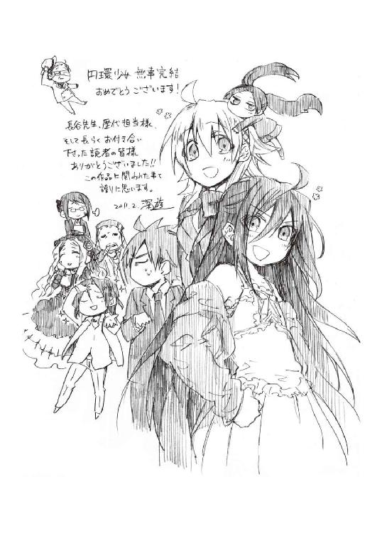
カバー・口絵・本文イラスト／深遊
カバー・口絵・本文デザイン／中デザイン事務所
円環少女
⑬荒れ野の楽園
長谷敏司
平成25年9月1日 発行
発行者 宍戸健司
発行所 株式会社角川書店
〒102-8078 東京都千代田区富士見2-13-3
http://www.kadokawa.co.jp/
(C) Satoshi HASE 2011
本電子書籍は下記にもとづいて制作しました
角川スニーカー文庫『円環少女 ⑬荒れ野の楽園』平成23年3月1日初版発行